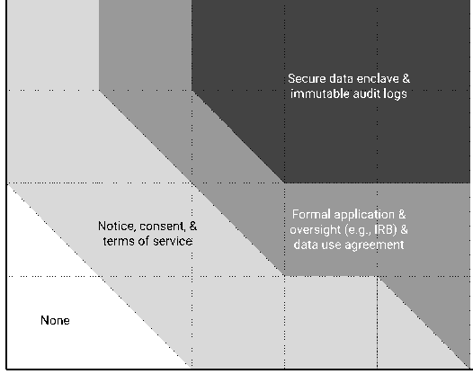
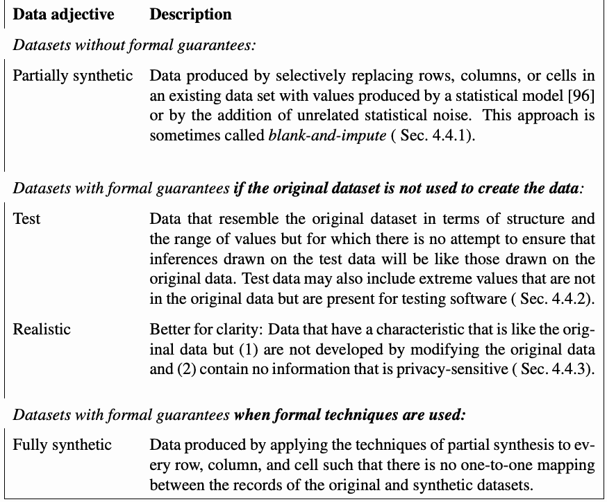

NIST Special Publication · PDF 原文抽出
De-Identifying Government Datasets: Techniques and Governance
政府データセットの非識別化：技法とガバナンス
NIST SP 800-188（De-Identifying Government Datasets: Techniques and Governance）の英文と日本語訳を段落ごとに並べた閲覧用ページです。非識別化データの共有に伴うプライバシーリスクを評価し、共有モデル、技術、再識別リスクの検証、ガバナンスを選定するための指針を示します。 翻訳は非公式です。要件の確認にはNIST の正式版 PDFを参照してください。
PDF から抽出した原文は原本との照合待ちです。
PDF p.72: 原本は単一段で読み順を確認済み。OCR字形欠落（suffcient、identifers、quasi-identifers、fnd、confdential）を含むため、該当訳には原画像照合メモを記録。chil-drenは改行時の通常の語分割。
本文の数式はLaTeXの構造からKaTeXで表示しています。原本との照合、または説明文の訳の確認が済んでいない数式が 3 箇所あります。
NIST Special Publication
NIST 特別刊行物
未レビュー訳NIST SP 800-188
NIST SP 800-188
未レビュー訳De-Identifying Government Datasets:
政府データセットの非識別化：
未レビュー訳Techniques and Governance
技術とガバナンス
未レビュー訳Simson Garfnkel Joseph Near Aref N. Dajani Phyllis Singer Barbara Guttman
Simson Garfinkel Joseph Near Aref N. Dajani Phyllis Singer Barbara Guttman
未レビュー訳This publication is available free of charge from: https://doi.org/10.6028/NIST.SP.800-188
本出版物は以下より無料で入手可能です：https://doi.org/10.6028/NIST.SP.800-188
未レビュー訳NIST（米国国立標準技術研究所）のロゴ。右側に『米国商務省』と記されている。
NIST Special Publication
NIST特別刊行物
未レビュー訳NIST SP 800-188
NIST SP 800-188
未レビュー訳De-Identifying Government Datasets:
政府データセットの非識別化：
未レビュー訳Techniques and Governance
技術とガバナンス
未レビュー訳Simson Garfnkel Barbara Guttman Software Quality Group
シムソン・ガーフィンケル（Simson Garfinkel）、バーバラ・ガットマン（Barbara Guttman） ソフトウェア品質グループ
未レビュー訳Software and Systems Division
ソフトウェア・システム部門
未レビュー訳Joseph Near
ジョセフ・ニア（Joseph Near）
未レビュー訳Department of Computer Science University of Vermont
バーモント大学 コンピュータサイエンス学科
未レビュー訳Aref N. Dajani Phyllis Singer
アレフ・N・ダジャニ（Aref N. Dajani）、フィリス・シンガー（Phyllis Singer）
未レビュー訳Center for Enterprise Dissemination
エンタープライズ情報普及センター
未レビュー訳US Census Bureau
米国国勢調査局
未レビュー訳This publication is available free of charge from: https://doi.org/10.6028/NIST.SP.800-188
本出版物は以下より無料で入手可能です：https://doi.org/10.6028/NIST.SP.800-188
未レビュー訳September 2023
2023年9月
未レビュー訳米国商務省の印章。外周には『米国商務省』『アメリカ合衆国』、中央にはワシと帆船が描かれている。
U.S. Department of Commerce Gina M. Raimondo, Secretary
米国商務省 ジーナ・M・レモンド長官
未レビュー訳National Institute of Standards and Technology
米国国立標準技術研究所
未レビュー訳Laurie E. Locascio, NIST Director and Under Secretary of Commerce for Standards and Technology
ローリー・E・ロカシオ、NIST所長兼標準・技術担当商務次官
未レビュー訳Certain commercial equipment, instruments, software, or materials, commercial or non-commercial, are identifed in this paper in order to specify the experimental procedure adequately. Such identifcation does not imply recommendation or endorsement of any product or service by NIST, nor does it imply that the materials or equipment identifed are necessarily the best available for the purpose.
実験手順を適切に規定するため、特定の商用機器、計器、ソフトウェア、または材料（商用または非商用）を本稿で特定している。このような特定は、NISTによるいかなる製品やサービスの推奨や支持を意味するものではなく、特定された材料や機器がその目的に必ずしも最適であることを意味するものでもない。
未レビュー訳There may be references in this publication to other publications currently under development by NIST in accordance with its assigned statutory responsibilities. The information in this publication, including concepts and methodologies, may be used by federal agencies even before the completion of such companion publications. Thus, until each publication is completed, current requirements, guidelines, and procedures, where they exist, remain operative. For planning and transition purposes, federal agencies may wish to closely follow the development of these new publications by NIST.
本出版物には、割り当てられた法的責任に従ってNISTが現在策定中の他の出版物への言及が含まれている場合がある。概念や方法論を含む本出版物の情報は、そうした関連出版物の完成前であっても連邦機関によって利用される場合がある。したがって、各出版物が完成するまでは、現行の要件、ガイドライン、および手順（存在する場合）が有効なままである。計画策定および移行の目的で、連邦機関はNISTによるこれらの新しい出版物の策定状況を注視することを検討してもよい。
Organizations are encouraged to review all draft publications during public comment periods and provide feedback to NIST. Many NIST cybersecurity publications, other than the ones noted above, are available at https://csrc.nist.gov/publications.
各組織は、パブリックコメント期間中にすべてのドラフト出版物をレビューし、NISTにフィードバックを提供することが推奨される。上記以外の多くのNISTサイバーセキュリティ関連出版物は、https://csrc.nist.gov/publications で入手可能である。
未レビュー訳This document is presented with the hope that its content may be of interest to the general privacy community. The views in this document are those of the authors, and do not represent those of the U.S. Census Bureau.
本書は、その内容がプライバシー全般に関わるコミュニティの関心を引く可能性があることを期待して提示されるものである。本書における見解は著者らのものであり、米国国勢調査局の見解を代表するものではない。
Authority This publication has been developed by NIST in accordance with its statutory responsibilities under the Federal Information Security Modernization Act (FISMA) of 2014, 44 U.S.C. § 3551 et seq., Public Law (P.L.) 113-283. NIST is responsible for developing information security standards and guidelines, including minimum requirements for federal information systems, but such standards and guidelines shall not apply to national security systems without the express approval of appropriate federal offcials exercising policy authority over such systems. This guideline is consistent with the requirements of the Offce of Management and Budget (OMB) Circular A-130.
権限 本出版物は、2014年連邦情報セキュリティ近代化法（FISMA）、合衆国法典第44編第3551条以下、公法（P.L.）113-283に基づく法定責任に従ってNISTによって作成された。NISTは、連邦情報システムの最低限の要求事項を含む情報セキュリティ基準およびガイドラインの作成を担当しているが、当該システムに対してポリシー権限を行使する適切な連邦職員の明示的な承認なしに、そのような基準およびガイドラインが国家安全保障システムに適用されてはならない。このガイドラインは、行政管理予算局（OMB）Circular A-130の要求事項と整合している。
Nothing in this publication should be taken to contradict the standards and guidelines made mandatory and binding on federal agencies by the Secretary of Commerce under statutory authority. Nor should these guidelines be interpreted as altering or superseding the existing authorities of the Secretary of Commerce, Director of the OMB, or any other federal offcial. This publication may be used by nongovernmental organizations on a voluntary basis and is not subject to copyright in the United States. Attribution would, however, be appreciated by NIST.
本出版物のいかなる記述も、商務長官が法定権限に基づき連邦機関に対して義務付け、拘束力を持たせた基準およびガイドラインと矛盾するものと解釈されるべきではない。また、これらのガイドラインが、商務長官、OMB局長、またはその他の連邦職員の既存の権限を変更したり、それに取って代わったりするものとして解釈されるべきでもない。本出版物は、非政府組織によって自発的に使用される場合があり、米国内では著作権の対象とはならない。ただし、NISTへの帰属表示（出典明記）を行っていただければ幸いである。
NIST Technical Series Policies Copyright, Use, and Licensing Statements NIST Technical Series Publication Identifer Syntax
NISTテクニカルシリーズのポリシー 著作権、使用、ライセンスに関する声明 NISTテクニカルシリーズ出版物識別子構文
未レビュー訳Publication History Approved by the NIST Editorial Review Board on 2023-09-07.
発行履歴 2023-09-07にNIST編集審査委員会によって承認された。
How to cite this NIST Technical Series Publication: Garfnkel S, Guttman B, Near J, Dajani AN, Singer P (2023) De-Identifying Government Datasets: Techniques and Governance. (National Institute of Standards and Technology, Gaithersburg, MD), NIST Special Publication (SP) NIST SP 800-188. https://doi.org/10.6028/NIST.SP.800-188
本NISTテクニカルシリーズ出版物の引用方法：Garfinkel S, Guttman B, Near J, Dajani AN, Singer P (2023) De-Identifying Government Datasets: Techniques and Governance. (National Institute of Standards and Technology, Gaithersburg, MD), NIST Special Publication (SP) NIST SP 800-188. https://doi.org/10.6028/NIST.SP.800-188
未レビュー訳Author ORCID iDs Simson Garfnkel: 0000-0003-1294-2831 Joseph Near: 0000-0002-3203-3742 Aref N. Dajani: 0000-0003-0361-5409 Phyllis Singer: 0000-0002-8885-7273
著者のORCID iD Simson Garfinkel: 0000-0003-1294-2831 Joseph Near: 0000-0002-3203-3742 Aref N. Dajani: 0000-0003-0361-5409 Phyllis Singer: 0000-0002-8885-7273
未レビュー訳Contact Information sp800-188@nist.gov
連絡先情報 sp800-188@nist.gov
未レビュー訳National Institute of Standards and Technology Attn: Software and Systems Division, Information Technology Laboratory 100 Bureau Drive (Mail Stop 8970) Gaithersburg, MD 20899-8970
米国国立標準技術研究所 宛先：情報技術研究所 ソフトウェア・システム部門 100 Bureau Drive (Mail Stop 8970) Gaithersburg, MD 20899-8970
未レビュー訳All comments are subject to release under the Freedom of Information Act (FOIA).
すべてのコメントは情報自由法（FOIA）に基づく公開の対象となる。
未レビュー訳Abstract
概要
De-identifcation is a general term for any process of removing the association between a set of identifying data and the data subject. This document describes the use of de-identifcation with the goal of preventing or limiting disclosure risks to individuals and establishments while still allowing for the production of meaningful statistical analysis. Government agencies can use de-identifcation to reduce the privacy risk associated with collecting, processing, archiving, distributing, or publishing government data. Previously, NIST IR 8053, De-Identifcation of Personal Information, provided a detailed survey of de-identifcation and re-identifcation techniques. This document provides specifc guidance to government agencies that wish to use de-identifcation. Before using de-identifcation, agencies should evaluate their goals for using de-identifcation and the potential risks that releasing de-identifed data might create. Agencies should decide upon a data-sharing model, such as publishing de-identifed data, publishing synthetic data based on identi-fed data, providing a query interface that incorporates de-identifcation, or sharing data in non-public protected enclaves. Agencies can create a Disclosure Review Board to over-see the process of de-identifcation. They can also adopt a de-identifcation standard with measurable performance levels and perform re-identifcation studies to gauge the risk asso-ciated with de-identifcation. Several specifc techniques for de-identifcation are available, including de-identifcation by removing identifers, transforming quasi-identifers, and gen-erating synthetic data using models. People who perform de-identifcation generally use special-purpose software tools to perform the data manipulation and calculate the likely risk of re-identifcation. However, not all tools that merely mask personal information pro-vide suffcient functionality for performing de-identifcation. This document also includes an extensive list of references, a glossary, and a list of specifc de-identifcation tools, which is only included to convey the range of tools currently available and is not intended to imply a recommendation or endorsement by NIST.
非識別化（de-identification）は、一連の識別データとデータ主体との間の関連付けを除去するあらゆるプロセスの総称である。本書では、有意義な統計分析の生成を可能にしつつ、個人および事業所に対する開示リスクを防止または制限することを目的とした非識別化の使用について説明する。政府機関は、非識別化を使用して、政府データの収集、処理、アーカイブ、配布、または公開に関連するプライバシーリスクを低減できる。以前に発行されたNIST IR 8053『De-Identification of Personal Information（個人情報の非識別化）』では、非識別化および再識別化の技術に関する詳細な調査が提供された。本書は、非識別化の利用を希望する政府機関に具体的なガイダンスを提供する。非識別化を使用する前に、機関は非識別化を使用する目的と、非識別化されたデータを公開することによって生じる可能性のある潜在的なリスクを評価する必要がある。機関は、非識別化されたデータの公開、識別データに基づく合成データの公開、非識別化を組み込んだクエリインターフェースの提供、または非公開の保護されたエンクレーブ内でのデータの共有など、データ共有モデルを決定する必要がある。機関は、非識別化のプロセスを監督するために開示審査委員会（Disclosure Review Board）を設置できる。また、測定可能な性能レベルを備えた非識別化基準を採用し、非識別化に関連するリスクを測定するために再識別化の調査を実施することもできる。識別子の削除による非識別化、準識別子の変換、モデルを使用した合成データの生成など、非識別化のためのいくつかの具体的な技術が利用可能である。非識別化を実施する者は、通常、データの操作を実行し、再識別化の可能性のあるリスクを計算するために専用のソフトウェアツールを使用する。ただし、単に個人情報をマスキングするだけのすべてのツールが、非識別化を実行するのに十分な機能を提供するわけではない。また、本書には、参考文献の広範なリスト、用語集、および具体的な非識別化ツールのリストも含まれているが、これは現在利用可能なツールの範囲を伝えるためだけに含まれており、NISTによる推奨または支持を意味するものではない。
未レビュー訳Keywords
キーワード
未レビュー訳data life cycle; de-identifcation; differential privacy; direct identifers; Disclosure Review Board; k-anonymity; privacy; pseudonymization; quasi-identifers; re-identifcation; syn-thetic data; The Five Safes.
データライフサイクル、非識別化、差分プライバシー、直接識別子、開示審査委員会、k-匿名性、プライバシー、仮名化、準識別子、再識別化、合成データ、The Five Safes。
未レビュー訳Reports on Computer Systems Technology
コンピュータシステム技術に関する報告
The Information Technology Laboratory (ITL) at the National Institute of Standards and Technology (NIST) promotes the U.S. economy and public welfare by providing technical leadership for the Nation’s measurement and standards infrastructure. ITL develops tests, test methods, reference data, proof of concept implementations, and technical analyses to advance the development and productive use of information technology. ITL’s responsi-bilities include the development of management, administrative, technical, and physical standards and guidelines for the cost-effective security and privacy of other than national security-related information in federal information systems. The Special Publication 800-series reports on ITL’s research, guidelines, and outreach efforts in information system security, and its collaborative activities with industry, government, and academic organiza-tions.
米国国立標準技術研究所（NIST）の情報技術研究所（ITL）は、国の測定および標準インフラストラクチャに対する技術的リーダーシップを提供することにより、米国経済と公共の福祉を促進している。ITLは、情報技術の開発と生産的な利用を推進するために、テスト、テスト方法、参照データ、概念実証実装、および技術分析を開発している。ITLの責務には、連邦情報システムにおける国家安全保障関連以外の情報の費用対効果の高いセキュリティおよびプライバシーのための管理上、運用的、技術的、および物理的な標準とガイドラインの開発が含まれる。Special Publication 800シリーズは、情報システムセキュリティにおけるITLの研究、ガイドライン、アウトリーチ活動、ならびに産業界、政府、学術組織との連携活動について報告している。
未レビュー訳Patent Disclosure Notice
特許開示に関する通知
未レビュー訳NOTICE: ITL has requested that holders of patent claims whose use may be required for compliance with the guidance or requirements of this publication disclose such patent claims to ITL. However, holders of patents are not obligated to respond to ITL calls for patents and ITL has not undertaken a patent search in order to identify which, if any, patents may apply to this publication.
通知：ITLは、本出版物のガイダンスまたは要件に準拠するためにその使用が必要となる可能性がある特許クレームの保有者に対し、当該特許クレームをITLに開示するよう要請している。ただし、特許権者はITLからの特許提供の要請に応じる義務を負うものではなく、ITLは本出版物に適用される可能性のある特許を（存在するとしても）特定するための特許調査を実施していない。
未レビュー訳As of the date of publication and following call(s) for the identifcation of patent claims whose use may be required for compliance with the guidance or requirements of this pub-lication, no such patent claims have been identifed to ITL.
発行日時点において、また本出版物のガイダンスまたは要件への準拠に使用が必要となる可能性がある特許クレームの特定要請を行った後も、そのような特許クレームはITLに特定されていない。
未レビュー訳No representation is made or implied by ITL that licenses are not required to avoid patent infringement in the use of this publication.
本出版物の使用において特許侵害を回避するためにライセンスが不要であることを、ITLが表明または暗示するものではない。
Table of Contents
目次
Executive Summary . . . . . . . . . . . . . . . . . . . . . . . . . . . . . . . . . . . . . . 1
エグゼクティブサマリー . . . . . . . . . . . . . . . . . . . . . . . . . . . . . . . . . . . . . . 1
未レビュー訳1. Introduction . . . . . . . . . . . . . . . . . . . . . . . . . . . . . . . . . . . . . . . . 3
1. はじめに . . . . . . . . . . . . . . . . . . . . . . . . . . . . . . . . . . . . . . . . 3
未レビュー訳1.1. Document Purpose and Scope . . . . . . . . . . . . . . . . . . . . . . . . . . 7
1.1. 文書の目的と適用範囲 . . . . . . . . . . . . . . . . . . . . . . . . . . 7
未レビュー訳1.2. Intended Audience . . . . . . . . . . . . . . . . . . . . . . . . . . . . . . . . . 7
1.2. 想定読者 . . . . . . . . . . . . . . . . . . . . . . . . . . . . . . . . . 7
未レビュー訳1.3. Organization . . . . . . . . . . . . . . . . . . . . . . . . . . . . . . . . . . . . 8
1.3. 構成 . . . . . . . . . . . . . . . . . . . . . . . . . . . . . . . . . . . . 8
未レビュー訳2. Introducing De-Identifcation . . . . . . . . . . . . . . . . . . . . . . . . . . . . . . 9
2. 非識別化の導入 . . . . . . . . . . . . . . . . . . . . . . . . . . . . . . 9
未レビュー訳2.1. Historical Context . . . . . . . . . . . . . . . . . . . . . . . . . . . . . . . . . 9
2.1. 歴史的背景 . . . . . . . . . . . . . . . . . . . . . . . . . . . . . . . . . 9
未レビュー訳2.2. Terminology . . . . . . . . . . . . . . . . . . . . . . . . . . . . . . . . . . . . . 12
2.2. 用語 . . . . . . . . . . . . . . . . . . . . . . . . . . . . . . . . . . . . . 12
未レビュー訳3. Governance and Management of Data De-Identifcation . . . . . . . . . . . . . . 18
3. データ非識別化のガバナンスと管理 . . . . . . . . . . . . . . 18
未レビュー訳3.1. Identifying the Goals and Intended Uses of De-Identifcation . . . . . . . . 18
3.1. 非識別化の目標および意図される用途の特定 . . . . . . . . 18
未レビュー訳3.2. Evaluating the Risks and Benefits That Arise from De-Identified Data Releases . . . . . . . . . . . . . . . . . . . . . . . . . . . . . . . . . . . . . . . . . 19
3.2. 非識別化データの公開から生じるリスクと利益の評価 . . . . . . . . . . . . . . . . . . . . . . . . . . . . . . . . . . . . . . . . . 19
未レビュー訳3.2.1. Probability of Re-Identifcation . . . . . . . . . . . . . . . . . . . . . 21
3.2.1. 再識別の確率 . . . . . . . . . . . . . . . . . . . . . 21
未レビュー訳3.2.2. Adverse Impacts of Re-Identifcation . . . . . . . . . . . . . . . . . . 24
3.2.2. 再識別の悪影響 . . . . . . . . . . . . . . . . . . 24
未レビュー訳3.2.3. Impacts Other Than Re-Identifcation . . . . . . . . . . . . . . . . . 26
3.2.3. 再識別以外の影響 . . . . . . . . . . . . . . . . . 26
未レビュー訳3.2.4. Remediation . . . . . . . . . . . . . . . . . . . . . . . . . . . . . . . . 27
3.2.4. 救済策 . . . . . . . . . . . . . . . . . . . . . . . . . . 27
未レビュー訳3.3. Data Life Cycle . . . . . . . . . . . . . . . . . . . . . . . . . . . . . . . . . . . 27
3.3. データライフサイクル . . . . . . . . . . . . . . . . . . . . . . . . . . . . . 27
未レビュー訳3.4. Data-Sharing Models . . . . . . . . . . . . . . . . . . . . . . . . . . . . . . . 32
3.4. データ共有モデル . . . . . . . . . . . . . . . . . . . . . . . . . 32
未レビュー訳3.5. The Five Safes . . . . . . . . . . . . . . . . . . . . . . . . . . . . . . . . . . . 34
3.5. 5つの安全（The Five Safes） . . . . . . . . . . . . . . . . . . . . . . . . . . . . . 34
未レビュー訳3.6. Disclosure Review Boards . . . . . . . . . . . . . . . . . . . . . . . . . . . . . 35
3.6. 開示審査委員会 . . . . . . . . . . . . . . . . . . . . . . . . . . . . . 35
未レビュー訳3.7. De-Identifcation and Standards . . . . . . . . . . . . . . . . . . . . . . . . . 40
3.7. 非特定化と標準 . . . . . . . . . . . . . . . . . . . . . . . . . 40
未レビュー訳3.7.1. Benefts of Standards . . . . . . . . . . . . . . . . . . . . . . . . . . . 40
3.7.1. 標準の利点 . . . . . . . . . . . . . . . . . . . . . . . . . . . 40
未レビュー訳3.7.2. Prescriptive De-Identifcation Standards . . . . . . . . . . . . . . . . 40
3.7.2. 規範的非特定化標準 . . . . . . . . . . . . . . . . 40
未レビュー訳3.7.3. Risk-Based De-Identifcation Standards . . . . . . . . . . . . . . . . 42
3.7.3. リスクベースの非特定化標準 . . . . . . . . . . . . . . . . 42
未レビュー訳3.8. Education, Training, and Research . . . . . . . . . . . . . . . . . . . . . . . . 42
3.8. 教育、訓練、および研究 . . . . . . . . . . . . . . . . . . . . . . . . 42
未レビュー訳3.9. Alternative Approaches for Computing Statistics on Confdential Information 43
3.9. 機密情報に関する統計を計算するための代替アプローチ 43
未レビュー訳3.9.1. Encryption and Access Control . . . . . . . . . . . . . . . . . . . . . 43
3.9.1. 暗号化とアクセス制御 . . . . . . . . . . . . . . . . . . . . . 43
未レビュー訳3.9.2. Secure Computation . . . . . . . . . . . . . . . . . . . . . . . . . . . 43
3.9.2. 安全な計算 . . . . . . . . . . . . . . . . . . . . . . . . . . . 43
未レビュー訳3.9.3. Trusted Execution Environments . . . . . . . . . . . . . . . . . . . . 44
3.9.3. 信頼実行環境（TEE） . . . . . . . . . . . . . . . . . . . . 44
未レビュー訳3.9.4. Physical Enclaves . . . . . . . . . . . . . . . . . . . . . . . . . . . . . 45
3.9.4. 物理エンクレーブ . . . . . . . . . . . . . . . . . . . . . . . . . . . . . 45
未レビュー訳4.Technical Steps for Data De-Identifcation . . . . . . . . . . . . . . . . . . . . . . 46
4.データ非識別化のための技術的手順 . . . . . . . . . . . . . . . . . . . . . . 46
未レビュー訳4.1. Determine the Privacy, Data Usability, and Access Objectives . . . . . . . . 46 4.2. Conducting a Data Survey . . . . . . . . . . . . . . . . . . . . . . . . . . . . 47 4.3. De-Identifcation by Removing Identifers and Transforming Quasi-Identifers 49 4.3.1. Removing or Transforming of Direct Identifers . . . . . . . . . . . . 51 4.3.2. Special Security Note Regarding the Encryption or Hashing of Di-
4.1. プライバシー、データ有用性、およびアクセスの目標の決定 . . . . . . . . 46 4.2. データ調査の実施 . . . . . . . . . . . . . . . . . . . . . . . . . . . . 47 4.3. 識別子の削除および準識別子の変換による非識別化 49 4.3.1. 直接識別子の削除または変換 . . . . . . . . . . . . 51 4.3.2. 直-
未レビュー訳rect Identifers . . . . . . . . . . . . . . . . . . . . . . . . . . . . . . . 52 4.3.3. De-Identifying Numeric Quasi-Identifers . . . . . . . . . . . . . . . . 53 4.3.4. De-Identifying Dates . . . . . . . . . . . . . . . . . . . . . . . . . . . 54 4.3.5. De-Identifying Geographical Locations and Geolocation Data . . . 55 4.3.6. De-Identifying Genomic Information . . . . . . . . . . . . . . . . . . 56 4.3.7. De-Identifying Text Narratives and Qualitative Information . . . . . 57 4.3.8. Challenges Posed by Aggregation Techniques . . . . . . . . . . . . . 57 4.3.8.1. Example . . . . . . . . . . . . . . . . . . . . . . . . . . . . . 57 4.3.9. Challenges Posed by High-Dimensional Data . . . . . . . . . . . . . 58 4.3.10. Challenges Posed by Linked Data . . . . . . . . . . . . . . . . . . . . 59 4.3.11. Challenges Posed by Composition . . . . . . . . . . . . . . . . . . . 59 4.3.12. Potential Failures of De-Identifcation . . . . . . . . . . . . . . . . . 60 4.3.13. Post-Release Monitoring . . . . . . . . . . . . . . . . . . . . . . . . . 61
接識別子の暗号化またはハッシュ化に関する特別なセキュリティ上の注意 . . . . . . . . . . . . . . . . . . . . . . . . . . . . . . . 52 4.3.3. 数値準識別子の非識別化 . . . . . . . . . . . . . . . . 53 4.3.4. 日付の非識別化 . . . . . . . . . . . . . . . . . . . . . . . . . . . 54 4.3.5. 地理的位置およびジオロケーションデータの非識別化 . . . 55 4.3.6. ゲノム情報の非識別化 . . . . . . . . . . . . . . . . . . 56 4.3.7. テキスト記述および定性的情報の非識別化 . . . . . 57 4.3.8. 集約技術によってもたらされる課題 . . . . . . . . . . . . . 57 4.3.8.1. 例 . . . . . . . . . . . . . . . . . . . . . . . . . . . . . 57 4.3.9. 高次元データによってもたらされる課題 . . . . . . . . . . . . . 58 4.3.10. リンクされたデータによってもたらされる課題 . . . . . . . . . . . . . . . . 59 4.3.11. 合成によってもたらされる課題 . . . . . . . . . . . . . . . . . 59 4.3.12. 非識別化の潜在的な失敗 . . . . . . . . . . . . . . . . . 60 4.3.13. 公開後のモニタリング . . . . . . . . . . . . . . . . . . . . . . . 61
未レビュー訳4.4. Synthetic Data . . . . . . . . . . . . . . . . . . . . . . . . . . . . . . . . . . . 61 4.4.1. Partially Synthetic Data . . . . . . . . . . . . . . . . . . . . . . . . . 62 4.4.2. Test Data . . . . . . . . . . . . . . . . . . . . . . . . . . . . . . . . . . 63 4.4.3. Realistic Test Data . . . . . . . . . . . . . . . . . . . . . . . . . . . . 63 4.4.4. Fully Synthetic Data . . . . . . . . . . . . . . . . . . . . . . . . . . . 63 4.4.5. Synthetic Data with Validation . . . . . . . . . . . . . . . . . . . . . 65 4.4.6. Synthetic Data and Open Data Policy . . . . . . . . . . . . . . . . 65 4.4.7. Creating a Synthetic Dataset with Diferential Privacy . . . . . . . 66 4.5. De-Identifying with an Interactive Query Interface . . . . . . . . . . . . . . 67 4.6. Validating a De-Identifed Dataset . . . . . . . . . . . . . . . . . . . . . . . . 68 4.6.1. Validating Data Usefulness . . . . . . . . . . . . . . . . . . . . . . . 68 4.6.2. Validating Privacy Protection . . . . . . . . . . . . . . . . . . . . . . 68 4.6.3. Re-Identifcation Studies . . . . . . . . . . . . . . . . . . . . . . . . . 69
4.4. 合成データ . . . . . . . . . . . . . . . . . . . . . . . . . . . . . 61 4.4.1. 部分合成データ . . . . . . . . . . . . . . . . . . . . . . . . . 62 4.4.2. テストデータ . . . . . . . . . . . . . . . . . . . . . . . . . . . . . 63 4.4.3. 現実的なテストデータ . . . . . . . . . . . . . . . . . . . . . . . 63 4.4.4. 完全合成データ . . . . . . . . . . . . . . . . . . . . . . . . . . . 63 4.4.5. 検証付き合成データ . . . . . . . . . . . . . . . . . . . . . 65 4.4.6. 合成データとオープンデータポリシー . . . . . . . . . . . . . . . 65 4.4.7. 差分プライバシーを適用した合成データセットの作成 . . . . . . 66 4.5. 対話型クエリインターフェースによる非識別化 . . . . . . . . . . . . . 67 4.6. 非識別化されたデータセットの検証 . . . . . . . . . . . . . . . . . . 68 4.6.1. データ有用性の検証 . . . . . . . . . . . . . . . . . . . . . . . 68 4.6.2. プライバシー保護の検証 . . . . . . . . . . . . . . . . . . . . 68 4.6.3. 再識別研究 . . . . . . . . . . . . . . . . . . . . . . . . . 69
未レビュー訳5.Software Requirements, Evaluation, and Validation . . . . . . . . . . . . . . . . . 72
5.ソフトウェア要件、評価、および検証 . . . . . . . . . . . . . . . . . 72
未レビュー訳5.1. Evaluate the Privacy-Preserving Techniques . . . . . . . . . . . . . . . . . . 72 5.2. De-Identifcation Tools . . . . . . . . . . . . . . . . . . . . . . . . . . . . . . 73 5.2.1. De-Identifcation Tool Features . . . . . . . . . . . . . . . . . . . . . 73 5.2.2. Data Provenance and File Formats . . . . . . . . . . . . . . . . . . . 73 5.2.3. Data Masking Tools . . . . . . . . . . . . . . . . . . . . . . . . . . . 73 5.3. Evaluating De-Identifcation Software . . . . . . . . . . . . . . . . . . . . . . 74 5.4. Evaluating Data Accuracy . . . . . . . . . . . . . . . . . . . . . . . . . . . . . 74
5.1. プライバシー保護技術の評価 . . . . . . . . . . . . . . . . . . 72 5.2. 非識別化ツール . . . . . . . . . . . . . . . . . . . . . . . . . . . . . . 73 5.2.1. 非識別化ツールの機能 . . . . . . . . . . . . . . . . . . . . . 73 5.2.2. データの来歴およびファイル形式 . . . . . . . . . . . . . . . . . . . 73 5.2.3. データマスキングツール . . . . . . . . . . . . . . . . . . . . . . . . . . . 73 5.3. 非識別化ソフトウェアの評価 . . . . . . . . . . . . . . . . . . . . . . 74 5.4. データ正確性の評価 . . . . . . . . . . . . . . . . . . . . . . . . . . . . . 74
未レビュー訳6.Conclusion . . . . . . . . . . . . . . . . . . . . . . . . . . . . . . . . . . . . . . . . . 76
6.結論 . . . . . . . . . . . . . . . . . . . . . . . . . . . . . . . . . . . . . . . . . 76
未レビュー訳References . . . . . . . . . . . . . . . . . . . . . . . . . . . . . . . . . . . . . . . . . . . 92 A. Standards . . . . . . . . . . . . . . . . . . . . . . . . . . . . . . . . . . . . . . . . . 93 A.1. NIST Publications . . . . . . . . . . . . . . . . . . . . . . . . . . . . . . . . . 93 A.2. Other U.S. Government Publications . . . . . . . . . . . . . . . . . . . . . . 94 Selected Publications by Other Governments . . . . . . . . . . . . . . . . . . . . . 95 Reports and Books . . . . . . . . . . . . . . . . . . . . . . . . . . . . . . . . . . . . 96 How-To Articles . . . . . . . . . . . . . . . . . . . . . . . . . . . . . . . . . . . . . . 97 B. List of Symbols, Abbreviations, and Acronyms . . . . . . . . . . . . . . . . . . . . 98 C. Glossary . . . . . . . . . . . . . . . . . . . . . . . . . . . . . . . . . . . . . . . . . . 101
参考文献 . . . . . . . . . . . . . . . . . . . . . . . . . . . . . . . . . . . . . . . . . . . 92 A. 規格 . . . . . . . . . . . . . . . . . . . . . . . . . . . . . . . . . . . . . . . . . 93 A.1. NIST刊行物 . . . . . . . . . . . . . . . . . . . . . . . . . . . . . . . . . 93 A.2. その他の米国政府刊行物 . . . . . . . . . . . . . . . . . . . . . . 94 他国政府による主な刊行物 . . . . . . . . . . . . . . . . . . . . . 95 報告書および書籍 . . . . . . . . . . . . . . . . . . . . . . . . . . . . . . . . . . . . 96 ハウツー記事 . . . . . . . . . . . . . . . . . . . . . . . . . . . . . . . . . . . . . . 97 B. 記号、略語、および頭字語の一覧 . . . . . . . . . . . . . . . . . . . . 98 C. 用語集 . . . . . . . . . . . . . . . . . . . . . . . . . . . . . . . . . . . . . . . . . . 101
未レビュー訳List of Tables
表の一覧
未レビュー訳Table 1. Reading levels at a hypothetical school, as measured by entrance exami-nations and reported at the start of the school year on October 1. (See
表1. 仮想の学校における読解力レベル（入学試験によって測定され、10月1日の新学期開始時に報告されたもの）。（次を参
未レビュー訳example, Sec. 4.3.8) . . . . . . . . . . . . . . . . . . . . . . . . . . . . . . . . 58
照：例、Sec. 4.3.8） . . . . . . . . . . . . . . . . . . . . . . . . . . . . . . . . 58
未レビュー訳Table 2. Reading levels at a hypothetical school, as measured by entrance examina-tions and reported one month into the school year on November 1 after a
表2. 仮想の学校における読解力レベル（入学試験によって測定され、1名の新入生が同校へ転入した後の11月1日に、新学期の1か月目の時点で報告されたもの）。（次を参照：例、Sec. 4.3.8） 58 表3. データ公開においてデータを説明するために使用される形容詞（Sec. 4.4.4）。 . . . . . . 62
未レビュー訳single new student has transferred to the school. (See example, Sec. 4.3.8) 58 Table 3. Adjectives used for describing data in data releases ( Sec. 4.4.4). . . . . . 62
照：例、Sec. 4.3.8） 58 表3. データ公開においてデータを説明するために使用される形容詞（ Sec. 4.4.4）。. . . . . . 62
未レビュー訳List of Figures
図目次
未レビュー訳Fig. 1. The data life cycle as described by Michener et al. [105] . . . . . . . . . . 28 Fig. 2. Chisholm’s view of the data life cycle is a linear process with a branching point after data usage [30] . . . . . . . . . . . . . . . . . . . . . . . . . . . . 28 Fig. 3. Altman’s “modern approach to privacy-aware government data releases” [97] 30
図 1. Michenerらによって説明されたデータライフサイクル [105] . . . . . . . . . . 28 図 2. Chisholmによるデータライフサイクルの見解：データ利用後に分岐点を持つ線形プロセス [30] . . . . . . . . . . . . . . . . . . . . . . . . . . . . 28 図 3. Altmanによる「プライバシーに配慮した政府データ公開への現代的アプローチ」[97] 30
未レビュー訳Fig. 4. Altman’s conceptual diagram of the relationship between post-transformation identifability, the level of expected harm, and the suitability of selected pri-
図 4. 変換後の特定可能性、予想される危害のレベル、およびデータ公開のために選択されたプライ
未レビュー訳vacy controls for a data release [97] . . . . . . . . . . . . . . . . . . . . . . . 31
バシー管理策の適合性の関係を示すAltmanの概念図 [97] . . . . . . . . . . . . . . . . . . . . . . . 31
未レビュー訳Fig. 5. Advice for Practitioners: A Summary . . . . . . . . . . . . . . . . . . . . . . 77
図 5. 実務者へのアドバイス：要約 . . . . . . . . . . . . . . . . . . . . . . 77
未レビュー訳Acknowledgments
謝辞
The authors wish to thank the U.S. Census Bureau for its help in researching and preparing this publication, with specifc thanks to John Abowd, Ron Jarmin, Christa Jones, and Laura McKenna. The authors would also like to thank Luk Arbuckle, Andrew Baker, Paul Black, Daniel Barth-Jones, Christi Dant, Khaled El Emam, Robert Gellman, Tom Krenzke, Naomi Lefkovitz, Bradley Malin, Kevin Mangold, John Moehrke, Linda Sanchez, Denise Sturdy, and Chris Traver for providing comments on previous drafts and their valuable insights, all of which were helpful in creating this publication.
著者らは、本出版物の調査および作成において支援をいただいた米国国勢調査局に感謝する。特にJohn Abowd氏、Ron Jarmin氏、Christa Jones氏、Laura McKenna氏に深く感謝する。また、以前の草案に対するコメントおよび貴重な知見を提供し、本出版物の作成に大きく寄与されたLuk Arbuckle氏、Andrew Baker氏、Paul Black氏、Daniel Barth-Jones氏、Christi Dant氏、Khaled El Emam氏、Robert Gellman氏、Tom Krenzke氏、Naomi Lefkovitz氏、Bradley Malin氏、Kevin Mangold氏、John Moehrke氏、Linda Sanchez氏、Denise Sturdy氏、Chris Traver氏にも感謝の意を表す。
未レビュー訳The authors also wish to thank several organizations that provided useful comments on previous drafts of this publication: Anonos (with comments from Odia Kagan Partner, Chair of GDPR Com-pliance and International Privacy, Fox Rothschild LLP); the Association for Computing Machinery’s U.S. Technology Policy Committee; the Defense Contract Management Agency (DCMA) Informa-tion Assurance Directorate; the Electronic Privacy Information Center; the Interagency Council on Statistical Policy/Federal Committee on Statistical Methodology (FCSM) Disclosure Review Board Community of Practice; the Offce of the Chief Privacy Offcer within the U.S. Department of Education; the Offce of Planning, Research, and Evaluation (OPRE) within the Administration for Children and Families at the U.S. Department of Health and Human Services; the Millennium Challenge Corporation (MCC) Department of Policy and Evaluation; Integrating the Healthcare Enterprise (IHE), an ANSI-accredited standards organization focused on healthcare standards; the Privacy Tools Project at Harvard University (including Micah Altman, Stephen Chong, Kobbi Nis-sim, David O’Brien, Salil Vadhan, and Alexandra Wood); Tumult Labs (Gerome Miklau and David Pujol); the United Health Group (Peter Dumont and Ying Zhu); and the U.S. Agency for Interna-tional Development Chief Data Offcer (Brandon Pustejovsky).
また著者らは、本出版物の以前の草案に対して有益なコメントを提供してくださった以下の複数の組織に感謝いたします：Anonos（Fox Rothschild LLPのパートナー兼GDPRコンプライアンスおよび国際プライバシー担当チェアであるOdia Kagan氏によるコメントを含む）、ACM（計算機学会）米国技術政策委員会、国防契約管理庁（DCMA）情報保証総局、電子プライバシー情報センター（EPIC）、統計政策機関間評議会／連邦統計方法論委員会（FCSM）開示審査委員会コミュニティ・オブ・プラクティス、米国教育省チーフ・プライバシー・オフィサー室、米国保健福祉省子ども・家族局内計画・研究・評価室（OPRE）、ミレニアム・チャレンジ・コーポレーション（MCC）政策・評価部門、Integrating the Healthcare Enterprise（IHE、ヘルスケア標準に焦点を当てたANSI認定標準化組織）、ハーバード大学Privacy Tools Project（Micah Altman氏、Stephen Chong氏、Kobbi Nissim氏、David O’Brien氏、Salil Vadhan氏、Alexandra Wood氏を含む）、Tumult Labs（Gerome Miklau氏およびDavid Pujol氏）、United Health Group（Peter Dumont氏およびYing Zhu氏）、米国国際開発庁チーフ・データ・オフィサー（Brandon Pustejovsky氏）。
未レビュー訳Author Contributions
著者の貢献
未レビュー訳Simson Garfnkel: Conceptualization, Supervision, Writing (original draft preparation); Joseph Near: Writing (original draft preparation); Aref N. Dajani: Writing (original draft preparation of the section on re-identifcation studies); Phyllis Singer: Writing (original draft preparation of the section on re-identifcation studies); Barbara Guttman: Conceptualization, Supervision, Writing.
Simson Garfnkel: 概念化、指導・監督、執筆（初稿の作成）；Joseph Near: 執筆（初稿の作成）；Aref N. Dajani: 執筆（再識別研究に関するセクションの初稿作成）；Phyllis Singer: 執筆（再識別研究に関するセクションの初稿作成）；Barbara Guttman: 概念化、指導・監督、執筆。
未レビュー訳Executive Summary
エグゼクティブサマリー
未レビュー訳Every federal agency creates and maintains internal datasets that are vital for fulflling its mission. The Foundation for Evidence-based Policymaking Act of 2018 [2] and its Phase 1 implementation memorandum M-19-23 [168] mandate that agencies also collect and publish their government data in open, machine-readable formats when it is appropriate to do so. Agencies can use de-identifcation to make government datasets available while protecting the privacy of the individuals whose data are contained within those datasets.
すべての連邦機関は、自らの使命を果たすために不可欠な内部データセットを作成・維持している。2018年証拠に基づく政策立案推進法（Foundation for Evidence-based Policymaking Act of 2018）[2]およびそのフェーズ1実施覚書M-19-23 [168]は、機関に対し、適切である場合には政府データをオープンかつ機械可読な形式で収集・公開することも義務付けている。機関は非識別化（de-identification）を利用して、データセット内にデータが含まれる個人のプライバシーを保護しつつ、政府データセットを利用可能にすることができる。
The U.S. Government defnes personally identifable information (PII) as “information that can be used to distinguish or trace an individual’s identity, either alone or when combined with other information that is linked or linkable to a specifc individual.”[4]
米国政府は、個人識別情報（PII）を「単独で、または特定の個人に関連付けられているかもしくは関連付け可能な他の情報と組み合わされた場合に、個人の身元を区別または追跡するために使用できる情報」と定義している[4]。
未レビュー訳For decades, de-identifcation based on simply removing identifying information was thought to be suffcient to prevent the re-identifcation of individuals in large datasets. Since the mid 1990s, a growing body of research has demonstrated the reverse, resulting in new pri-vacy attacks that are capable of re-identifying individuals in “de-identifed” data releases. For several years, the goals of such attacks appeared to be embarrassing the publishing agency and achieving academic distinction for the privacy researcher [65]. More recently, as high-resolution de-identifed geolocation data have become commercially available, re-identifcation techniques have been used by journalists, activists, and malicious actors [130, 170, 90] to learn information about individuals that was intended to be kept confdential. These attacks highlight the defciencies in traditional approaches to de-identifcation.
何十年もの間、識別情報を単に削除することに基づく非識別化は、大規模なデータセット内の個人が再識別されるのを防ぐのに十分であると考えられていた。1990年代半ば以降、増え続ける研究によってその逆が実証され、「非識別化された」公開データ内の個人を再識別できる新たなプライバシー攻撃が生じることとなった。数年間、そのような攻撃の目的は、公開元の機関に恥をかかせることや、プライバシー研究者の学術的栄誉の獲得であるように見受けられた[65]。より最近では、高解像度の非識別化された地理位置情報データが商業的に入手可能になるにつれ、ジャーナリスト、活動家、および悪意のある攻撃者[130, 170, 90]によって、秘密に保たれることが意図されていた個人情報を知るために再識別技術が利用されてきた。これらの攻撃は、従来の非識別化アプローチの欠点を浮き彫りにしている。
未レビュー訳Formal models of privacy, like k-anonymity [151] and differential privacy [52], use mathe-matically rigorous approaches that are designed to allow for the controlled use of confden-tial data while minimizing the privacy loss suffered by the data subjects.1 Because there is an inherent trade-off between the accuracy of published data and the amount of privacy protection afforded to data subjects, most formal methods have some kind of parameter that can be adjusted to control the “privacy cost” of a particular data release. Informally, a data release with a low privacy cost causes little additional privacy risk to the participants, while a higher privacy cost results in more privacy risk. When they are available and have suffcient functionality for the task at hand, formal privacy methods should be preferred over informal ad hoc methods.
k-匿名性（k-anonymity）[151]や差分プライバシー（differential privacy）[52]のようなプライバシーのフォーマルモデルは、データ主体が被るプライバシーの損失を最小限に抑えながら機密データの制御された使用を可能にするように設計された、数学的に厳密なアプローチを使用する1。公開データの正確性とデータ主体に与えられるプライバシー保護の度合いとの間には本質的なトレードオフが存在するため、ほとんどのフォーマル手法には、特定のデータ公開における「プライバシーコスト」を制御するために調整可能な何らかのパラメータが備わっている。非公式に言えば、プライバシーコストが低いデータ公開は参加者への追加のプライバシーリスクをほとんどもたらさないが、プライバシーコストが高いほどプライバシーリスクが大きくなる。利用可能であり、当面のタスクに対して十分な機能を有している場合、インフォーマルなアドホック手法よりもフォーマルなプライバシー手法が優先されるべきである。
未レビュー訳Decisions and practices regarding the de-identifcation and release of government data can be integral to the mission and proper functioning of a government agency. As such, an agency’s leadership should manage these activities in a way that ensures performance and
政府データの非識別化および公開に関する決定と実務は、政府機関の使命と適切な機能にとって不可欠なものとなり得る。したがって、機関のリーダーシップは、パフォーマンスおよび
未レビュー訳1While k-anonymity and differential privacy are both mathematically rigorous formal models, k-anonymity is a privacy framework based on the content of the published data, while differential privacy places bounds on the amount of information that can be learned about the confdential data from the published data. results in a manner that is consistent with the agency’s mission and legal authority. One way that agencies can manage this risk is by creating a formal Disclosure Review Board (DRB) that consists of legal and technical privacy experts, stakeholders within the organization, and representatives of the organization’s leadership. The DRB evaluates applications for data release that describe the confdential data, the techniques that will be used to minimize the risk of disclosure, the resulting protected data, and how the effectiveness of those tech-niques will be evaluated. The DRB’s work complements other parts of the organization, such as the Chief Information Security Offcer (CISO), who is responsible for technical controls, as well as the parts of the organization responsible for adopting administrative or organizational controls and written data-sharing agreements.
1k-匿名性と差分プライバシーはどちらも数学的に厳密な形式モデルであるが、k-匿名性が公開データの内容に基づくプライバシーフレームワークであるのに対し、差分プライバシーは公開データから機密データに関して学習され得る情報量に境界を設定する。機関の使命および法的権限と整合する形で結果をもたらす。機関がこのリスクを管理する1つの方法は、法務および技術的なプライバシー専門家、組織内のステークホルダー、ならびに組織のリーダーシップの代表者で構成される正式な開示審査委員会（DRB）を設置することである。DRBは、機密データ、開示リスクを最小限に抑えるために使用される技術、結果として得られる保護されたデータ、およびそれらの技術の有効性がどのように評価されるかを記載したデータ公開の申請を評価する。DRBの業務は、技術的管理策を担当する最高情報セキュリティ責任者（CISO）や、管理的または組織的管理策および書式化されたデータ共有合意の採用を担当する組織内の部門など、組織の他の部門を補完する。
未レビュー訳Establishing a DRB may seem like an expensive and complicated administrative under-taking for some agencies. However, a properly constituted DRB and the development of consistent procedures regarding data release should enable agencies to lower the risks as-sociated with each data release, which is likely to save agency resources in the long term. Agencies can create or adopt standards to guide those performing de-identifcation and re-garding the accuracy of de-identifed data. If accuracy goals exist, then techniques such as differential privacy can be used to make the data suffciently accurate for the intended purpose but not unnecessarily more accurate, which can limit the amount of privacy loss. However, agencies must carefully choose and implement accuracy requirements. If data accuracy and privacy goals cannot be well-maintained, then releases of data that are not suffciently accurate can result in incorrect scientifc conclusions and policy decisions.
一部の機関にとって、DRBの設置は費用がかかり複雑な管理的事業のように思えるかもしれない。しかし、適切に構成されたDRBとデータ公開に関する一貫した手順の策定により、機関は各データ公開に伴うリスクを低減できるはずであり、長期的に見れば機関のリソースを節約できる可能性が高い。機関は、非特定化を実施する者を指導するため、また非特定化されたデータの正確性に関して、基準を作成または採用できる。正確性の目標が存在する場合、差分プライバシーなどの技術を使用して、データを意図された目的に対して十分に正確でありながら、不必要に高精度にはしないようにすることができ、これによりプライバシーの損失量を制限できる。ただし、機関は正確性の要件を慎重に選択し、実装しなければならない。データの正確性とプライバシーの目標を適切に維持できない場合、十分な正確性を備えていないデータの公開は、誤った科学的結論や政策決定につながる可能性がある。
未レビュー訳Agencies should consider performing de-identifcation with trained individuals using soft-ware specifcally designed for that purpose. While it is possible to perform de-identifcation with off-the-shelf software like a commercial spreadsheet or fnancial planning program, such programs typically lack the key functions required for sophisticated de-identifcation. As a result, they may encourage the use of simplistic de-identifcation methods, such as deleting columns that contain sensitive data categories and manually searching and remov-ing individual data cells that appear sensitive.2 This may result in a dataset that appears de-identifed but still contains signifcant disclosure risks.
機関は、その目的のために特別に設計されたソフトウェアを使用して、訓練を受けた担当者によって非特定化を実施することを検討すべきである。市販のスプレッドシートや財務計画プログラムのような市販のソフトウェアを使用して非特定化を実施することは可能であるが、そのようなプログラムは通常、高度な非特定化に必要な主要機能を欠いている。その結果、機密性の高いデータカテゴリを含む列を削除したり、機密性が高いと思われる個々のデータセルを手動で検索して削除したりするような、短絡的な非特定化手法の使用を助長する可能性がある。2 これにより、非特定化されているように見えても、依然として重大な開示リスクを含むデータセットが生成される可能性がある。
未レビュー訳Finally, different countries have different standards and policies regarding the defnition and use of de-identifed data. Information that is regarded as de-identifed in one jurisdiction may be regarded as being identifable in another. This may be especially relevant in the case of international scientifc collaborations and illustrates the need for agencies that perform de-identifcation to create mechanisms for data scientists, attorneys, and policymakers to coordinate on these topics.
最後に、非特定化データの定義と使用に関して、国ごとに異なる基準やポリシーが存在する。ある司法管轄区で非特定化されていると見なされる情報が、別の司法管轄区では特定可能であると見なされる場合がある。これは国際的な科学協力の場合に特に関連する可能性があり、非特定化を実施する機関が、データサイエンティスト、弁護士、政策立案者がこれらのトピックについて連携するためのメカニズムを構築する必要性を示している。
未レビュー訳2For information on characterizing the sensitivity of information, see NIST SP 800-60 Volume I, Revision 1 [147].
2情報の機微性の特徴付けについては、NIST SP 800-60 Volume I, Revision 1 [147] を参照。
未レビュー訳1.Introduction
1.はじめに
未レビュー訳The U.S. Government collects, maintains, and uses many kinds of datasets. Every federal agency creates and maintains internal datasets that are vital for fulflling its mission, such as delivering services to citizens or ensuring regulatory compliance. There are also 13 princi-pal federal statistical agencies, three recognized statistical units, and over 100 other federal statistical programs that collect, compile, process, analyze, and distribute information for statistical purposes [156, 121].
米国政府は、多種多様なデータセットを収集、維持、利用している。すべての連邦機関は、国民へのサービス提供や規制遵守の確保など、その使命を果たすために不可欠な内部データセットを作成し、維持している。また、統計目的で情報を収集、編纂、処理、分析、配布する13の主要な連邦統計機関、3つの承認された統計部門、および100を超えるその他の連邦統計プログラムが存在する [156, 121]。
未レビュー訳Government programs collect information from individuals and organizations for taxation, public benefts, public health, licensing, employment, censuses, and the production of of-fcial statistics. While privacy is integral, many individuals and organizations that provide information to the Government do not typically have the right to opt out of such requests. For example, people and establishments in the United States must respond to mandatory U.S. Census Bureau surveys.
政府のプログラムは、課税、公的給付、公衆衛生、許認可、雇用、国勢調査、および公式統計の作成のために、個人や組織から情報を収集している。プライバシーは不可欠であるものの、政府に情報を提供する多くの個人や組織には、通常、そのような要求をオプトアウトする権利はない。例えば、米国の個人および事業所は、米国国勢調査局の義務的調査に回答しなければならない。
未レビュー訳Agencies make many of their datasets available to the public. The U.S. Government publishes data to promote commerce, scientifc research, and public transparency. Many datasets contain some data elements that should not be made public, and it is necessary to remove such information before making the rest of the dataset available. Some datasets are so sensitive that they cannot be made publicly available at all but can be available on a limited basis to qualifed, vetted researchers in protected enclaves. In some cases, agencies may also elect to release summary statistics of sensitive data or create synthetic datasets that resemble the original data but that have a lower disclosure risk [9, 99].
各機関は、保有するデータセットの多くを一般に公開している。米国政府は、商業、科学研究、および公共の透明性を促進するためにデータを公開している。多くのデータセットには公開すべきでないデータ要素が一部含まれており、データセットの残りの部分を公開する前に、そのような情報を削除する必要がある。一部のデータセットは非常に機微であるため、一般公開することはまったくできないが、保護されたエンクレーブ内で、資格を満たし審査を受けた研究者に対して限定的に利用可能とすることはできる。場合によっては、機関は機微なデータの要約統計量を公開することや、元のデータに類似しつつも開示リスクがより低い合成データセットを作成することを選択することもある [9, 99]。
未レビュー訳There is frequent tension between the goals of privacy protection and the release of use-ful data to the public. One way that the Government attempts to resolve this tension is with an offcial promise of confdentiality to individuals and organizations regarding the information that they provide [132]. Other information is created by the Government as a consequence of providing government services. This information – sometimes called administrative data – is also increasingly being used and made available for statistical pur-poses and must be protected.
プライバシー保護の目標と有用なデータの一般への公開との間には、頻繁に対立が生じる。政府がこの対立を解決しようとする1つの方法は、個人や組織が提供する情報について、それらの個人や組織に対し公式な機密保持の約束を行うことである [132]。その他の情報は、政府サービスの提供の結果として政府によって生成される。行政データとも呼ばれることがあるこの情報は、統計目的での利用や提供もますます行われるようになっており、保護されなければならない。
未レビュー訳A bedrock principle of offcial statistical programs is that data provided to the Government should generally remain confdential and not be used in a way that would pose a privacy or confdentiality risk to the individual or the organization providing the data. One justifcation for this principle is that it helps to ensure high data accuracy. If data providers believe that the information they provide will remain confdential, they may be willing to provide accurate information.
公式統計プログラムの基本的な原則は、政府に提供されたデータは一般に機密として保持されるべきであり、データを提供する個人または組織にプライバシーまたは機密性のリスクをもたらすような方法で使用されてはならないということである。この原則の根拠の1つは、それがデータの高い正確性を確保するのに役立つということである。データ提供者が、自分たちの提供する情報の機密性が保たれると信じれば、正確な情報を提供する気になる可能性がある。
In 2018, the U.S. Congress passed three laws that signifcantly increased the need for ex-pertise regarding privacy-preserving data analysis and data publishing techniques, such as de-identifcation:
2018年、米国議会は、非特定化などのプライバシー保護データ分析およびデータ公開技術に関する専門知識の必要性を大幅に高める3つの法律を可決した。
未レビュー訳1.The Foundations for Evidence-Based Policymaking Act of 2018 [2], commonly called the Evidence Act, requires federal agencies to track all of their data in data inventories, report public datasets to https://data.gov, perform systematic evidence-making and evaluation activities, and engage in capacity-building so that the federal workforce can meet the requirements of data-centric, evidence-based operations. The Evidence Act is based on the fndings of the U.S. Commission on Evidence-Based Policymaking [34] and is implemented in part by Offce of Management and Budget (OMB) Memorandum M-19-23 [168].
1.通称エビデンス法と呼ばれる2018年証拠に基づく政策立案推進法 [2] は、連邦機関に対し、データインベントリですべてのデータを追跡し、公開データセットを https://data.gov に報告し、体系的なエビデンス作成および評価活動を実施し、連邦職員がデータを中心とした証拠に基づく業務の要件を満たせるように能力構築に取り組むことを義務付けている。エビデンス法は、証拠に基づく政策立案に関する米国委員会の調査結果 [34] に基づいており、行政管理予算局（OMB）覚書 M-19-23 [168] によって部分的に実施されている。
未レビュー訳The Evidence Act contains specifc guidance requiring that agencies publishing data take into account “(A) risks and restrictions related to the disclosure of personally identifable information, including the risk that an individual data asset in isolation does not pose a privacy or confdentiality risk but when combined with other available information may pose such a risk;” and “(B) security considerations, including the risk that information in an individual data asset in isolation does not pose a security risk but when combined with other available information may pose such a risk” [2].
エビデンス法には、データを公開する機関に対して、「(A) 個々のデータ資産単独ではプライバシーや機密性のリスクをもたらさないが、他の入手可能な情報と組み合わされた場合にそのようなリスクをもたらす可能性があるというリスクを含め、個人を特定可能な情報の開示に関連するリスクおよび制限」、ならびに「(B) 個々のデータ資産に含まれる情報単独ではセキュリティリスクをもたらさないが、他の入手可能な情報と組み合わされた場合にそのようなリスクをもたらす可能性があるというリスクを含め、セキュリティ上の配慮」を考慮することを義務付ける具体的なガイダンスが含まれている [2]。
The Evidence Act incorporated and reauthorized The Confdential Information Protection and Statistical Effciency Act of 2002, now called the 2018 CIPSEA. Part B, “Confdential Information Protection,” provides for the legal protection of “data or information acquired by an agency under a pledge of confdentiality for ex-clusively statistical purposes shall not be disclosed by an agency in identifable form for any use other than an exclusively statistical purpose, except with the informed consent of the respondent.”
エビデンス法は、2002年機密情報保護および統計効率化法（現在は2018年CIPSEAと呼ばれる）を統合し、再承認した。パートBの「機密情報保護」は、「もっぱら統計目的のために守秘義務の誓約のもとで機関によって取得されたデータまたは情報は、回答者のインフォームド・コンセントがある場合を除き、もっぱら統計目的以外のいかなる用途のためにも、特定可能な形式で機関によって開示されてはならない」という法的保護を定めている。
未レビュー訳Finally, the 2018 CIPSEA promotes Offce of Management and Budget Statistical Policy Directive 1, “Fundamental Responsibilities of Federal Statistical Agencies and Recognized Statistical Units,”[100] to statute as 44 U.S. Code §§ 3561-4.”
最後に、2018年CIPSEAは、行政管理予算局（OMB）の統計政策指令第1号「連邦統計機関および公認統計部局の基本的責任」[100]を、合衆国法典第44編第3561条～第3564条として法律に格上げしている。
未レビュー訳2.The Open, Public, Electronic and Necessary (OPEN) Government Data Act, which was passed as part of the Evidence Act, requires that the U.S. Government publish data in machine-readable, open, non-proprietary formats when possible. This act largely codifed presidential Executive Order 13642 of May 9, 2013, “Making Open and Machine Readable the New Default for Government Information” [115] and its implementation in OMB Memorandum M-13-13 [24].
2.Evidence Act（根拠に基づく政策形成推進法）の一部として可決されたOPEN（Open, Public, Electronic and Necessary）Government Data Act（オープン・政府データ法）は、米国政府に対し、可能な限り機械可読でオープン、かつ非プロプライエタリな形式でデータを公開することを義務付けている。この法律は、2013年5月9日の大統領令第13642号「政府情報の新たなデフォルトをオープンかつ機械可読にすること」[115]およびOMB覚書M-13-13におけるその実施内容[24]を大幅に法制化したものである。
未レビュー訳3.The Geospatial Data Act of 2018 requires that government agencies make invento-ries of their geospatial data and that public geospatial data be registered on the U.S. Government’s public geospatial platform at https://www.geoplatform.gov/.
3.2018年地理空間データ法（Geospatial Data Act of 2018）は、政府機関に対して地理空間データの目録を作成すること、および公開地理空間データを米国政府の公開地理空間プラットフォーム（https://www.geoplatform.gov/）に登録することを義務付けている。
未レビュー訳Other laws, regulations, and policies that govern the release of statistics and data to the public enshrine this principle of confdentiality. For example:
一般への統計およびデータの公開を規定するその他の法律、規制、および方針も、この機密保持の原則を定めている。例えば以下の通りである。
未レビュー訳•US Code Title 13 §§ 8(b) and 9 governs the confdentiality of information provided to the Census Bureau and prohibits “any publication whereby the data furnished by any particular establishment or individual under this title can be identifed” [160].
•合衆国法典第13編第8条(b)および第9条は、国勢調査局に提供された情報の機密保持を規定し、「本編に基づき特定の事業所または個人から提供されたデータが特定され得るいかなる公表」も禁止しています[160]。
未レビュー訳•US Code Title 26, Section 6103 governs the confdentiality of information provided to the U.S. Government on tax returns and other return information. These rules are now spelled out in IRS Publication 1075, “Tax Information Security Guidelines for Federal, State and Local Agencies,” published by the Internal Revenue Service (IRS) Offce of Safeguards [122].
•合衆国法典第26編第6103条は、納税申告書およびその他の申告情報に関して米国政府に提供された情報の機密保持を規定している。これらの規則は現在、内国歳入庁（IRS）保護局発行のIRS Publication 1075「連邦、州、および地方自治体向け税務情報セキュリティガイドライン」に詳述されている[122]。
未レビュー訳•The Privacy Act of 1974 covers the release of personal information of U.S. citizens and lawful permanent residents by the Government. The Act recognizes that the disclosure of records for statistical purposes is acceptable if the data are not “indi-vidually identifable” [133, at a(b)(5)].
•1974年プライバシー法は、政府による米国市民および合法的な永住者の個人情報の開示を対象としている。同法は、データが「個人の特定が可能」でない場合、統計目的での記録の開示は許容されるものと認めている [133, at a(b)(5)]。
未レビュー訳Federal laws and regulations recognize that it is not possible to eliminate all privacy risk when deidentifying data. Guidance from the U.S. Department of Health and Human Ser-vices (HHS) on the Health Insurance Portability and Accountability Act (HIPAA) de-identifcation standards notes that “[b]oth methods [the Safe Harbor and expert determi-nation methods for de-identifcation], even when properly applied, yield de-identifed data that retains some risk of identifcation. Although the risk is very small, it is not zero, and there is a possibility that de-identifed data could be linked back to the identity of the patient to which it corresponds” [166].
連邦の法律および規制は、データの非特定化を行う際にすべてのプライバシーリスクを排除することは不可能であることを認識している。医療保険の相互運用性と説明責任に関する法律（HIPAA）の非特定化基準に関する米国保健福祉省（HHS）のガイダンスでは、「[非特定化のためのセーフハーバー法および専門家による決定法の]双方の方法は、適切に適用された場合であっても、特定のリスクをある程度保持した非特定化データをもたらす。リスクは極めて小さいものの、ゼロではなく、非特定化データが該当する患者の身元に再リンクされる可能性が存在する」と述べられている[166]。
未レビュー訳U.S. law also balances privacy risk with other factors, such as transparency, accountabil-ity, and the opportunity for public good. An example of this balance is the handling of personally identifable information collected by the Census Bureau as part of the decennial census. This information remains confdential for 72 years and is then transferred to the National Archives and Records Administration, where it is released to the public [161, 5].
米国法はまた、プライバシーリスクと、透明性、説明責任、公益への機会といった他の要素とのバランスもとっている。このバランスの一例が、国勢調査局によって10年ごとの国勢調査の一環として収集される個人を特定できる情報（personally identifiable information）の取り扱いである。この情報は72年間機密として保持され、その後、国立公文書記録管理局に移管されて一般に公開される [161, 5]。
未レビュー訳De-identifcation is “a general term for any process of removing the association between a set of identifying data and the data subject”[85]. This document describes the use of de-identifcation with the goal of preventing or limiting disclosure risks to individuals and establishments while still allowing for the production of aggregate statistics.34 De-identifcation is not a single technique but a collection of approaches, algorithms, and tools that can be applied to different kinds of data with differing levels of effectiveness. In gen-eral, the potential risk to privacy posed by a dataset’s release decreases as increasingly
非識別化（De-identification）とは、「一連の識別用データとデータ主体との間の関連付けを除去する任意のプロセスに対する一般的な用語」である [85]。本書では、個人および事業所に対する開示リスクを防止または制限しつつ、集計統計の作成を依然として可能にすることを目的とした非識別化の使用について説明する。34 非識別化は単一の技術ではなく、異なる種類のデータに対して様々なレベルの効果で適用できるアプローチ、アルゴリズム、およびツールの集合体である。一般に、データセットの公開によってもたらされるプライバシーへの潜在的リスクは、ますます
未レビュー訳3This document uses a different defnition for de-identifcation than ISO/TS 25737:2008, which defnes de-identifcation as the “general term for any process of removing the association between a set of identifying data and the data subject” [85, p. 3]. This document intentionally adopts a broader defnition for de-identifcation that allows for noise-introducing techniques, such as differential privacy and the creation of synthetic datasets that are based on privacy-preserving models. 4In Europe, the term data anonymization is frequently used as a synonym for de-identifcation, but the terms may have subtly different defnitions in some contexts. For a more complete discussion of de-identifcation and data anonymization, see NIST IR 8053, De-Identifcation of Personal Data [66]. manipulative de-identifcation techniques are employed, but data accuracy and – in some cases – the ultimate utility of the de-identifed dataset decreases as well.
3本書では、非識別化を「一連の識別用データとデータ主体との間の関連付けを除去する任意のプロセスに対する一般的な用語」と定義するISO/TS 25737:2008とは異なる定義を非識別化に用いている [85, p. 3]。本書は、差分プライバシーやプライバシー保護モデルに基づく合成データセットの作成など、ノイズ導入技術を許容する非識別化のより広範な定義を意図的に採用している。4ヨーロッパでは、データ匿名化（data anonymization）という用語が非識別化の同義語として頻繁に使用されているが、文脈によってはこれらの用語の定義に微妙な違いがある場合がある。非識別化およびデータ匿名化のより完全な議論については、NIST IR 8053『De-Identification of Personal Data』[66] を参照のこと。操作的な非識別化手法が採用されるにつれて減少するが、データの正確性や、場合によっては非識別化されたデータセットの最終的な有用性も同様に低下する。
未レビュー訳Accuracy is traditionally defned as the “closeness of computations or estimates to the exact or true values that the statistics were intended to measure” [71].5 The data accuracy of de-identifed data, therefore, refers to the degree to which inferences drawn on the de-identifed data will be consistent with inferences drawn on the original data. Data accuracy can be measured by the ratio of a value computed with de-identifed data to the same value computed using the underlying true confdential value. Because there are many potential computations that may be performed with de-identifed data, de-identifed data that are accurate for one purpose may not be accurate for another. As accuracy decreases, statistical power may be lost, rendering some inferences no longer possible. Alternatively, new biases and errors may be introduced, resulting in incorrect inferences.
正確性（Accuracy）は従来、「統計が測定することを意図していた正確な値または真の値に対する、計算値または推定値の近さ」と定義されている [71]。5したがって、非識別化データのデータ正確性とは、非識別化データに基づいて導き出された推論が、元のデータに基づいて導き出された推論とどの程度一致するかを指す。データ正確性は、非識別化データを用いて計算された値と、基となる真の機密値を用いて計算された同じ値との比率によって測定できる。非識別化データに対して実行される可能性のある計算は多数存在するため、ある目的には正確である非識別化データが、別の目的には正確でない場合もある。正確性が低下すると、統計的検出力が失われ、一部の推論がもはや不可能になることがある。あるいは、新たなバイアスや誤差が導入され、誤った推論が生じる可能性がある。
未レビュー訳In economics, utility is traditionally defned as “the satisfaction derived from consumption of a good or service”[71]. Data utility, therefore, refers to the value that data users can de-rive from data in general. When speaking of de-identifed data, utility comes from two pub-lic goods: the uses of the data and the privacy protection afforded by the de-identifcation process.
経済学において、効用（utility）は従来、「財やサービスの消費から得られる満足感」と定義されている [71]。したがって、データ有用性（Data utility）とは、一般にデータ利用者がデータから引き出すことができる価値を指す。非識別化データに関して言えば、有用性は2つの公共財からもたらされる。すなわち、データの利用と、非識別化プロセスによってもたらされるプライバシー保護である。
未レビュー訳In general, data accuracy decreases as more aggressive de-identifcation techniques are employed. Therefore, any effort that involves the release of data that contain personal information typically involves making a trade-off between identifability and data accuracy. However, increased privacy protections do not necessarily result in decreased data utility for certain specifed purposes.
一般に、より積極的な非識別化技術が採用されるにつれて、データの正確性は低下する。したがって、個人情報を含むデータの公開を伴ういかなる取り組みも、通常、識別可能性とデータの正確性との間でのトレードオフを行うことを伴う。しかしながら、プライバシー保護の強化が、特定の指定された目的に対するデータ有用性の低下を必ずしももたらすとは限らない。
未レビュー訳Some users of de-identifed data may be able to use the data to make inferences regarding specifc individuals or establishments by virtue of their inclusion in the dataset rather than on the basis of a statistical model based on the sampled population. Such users may even be able to re-identify the data subjects. Both of these uses undo the privacy goals of de-identifcation.
非識別化データの一部の利用者は、サンプリングされた母集団に基づく統計モデルに基づくのではなく、特定の個人や事業所がデータセットに含まれていることを利用して、それらに関する推論を行うためにデータを利用できる場合がある。そのような利用者は、データ主体を再識別することさえできるかもしれない。これらの利用はいずれも、非識別化のプライバシーの目標を台無しにする。
未レビュー訳In general:
一般に：
•Agencies that release data should understand what data they are releasing, what other data may already be publicly or privately available, and the protection methods that they have employed to protect against the risk of re-identifcation.
•データを公開する機関は、自らがどのようなデータを公開しているのか、他にどのようなデータが既に公的または私的に利用可能であるか、そして再識別のリスクを防ぐためにどのような保護手法を採用しているのかを理解しておく必要がある。
未レビュー訳•Agencies should be aware that it is diffcult if not impossible to recall a data release, so de-identifed data that are published will remain in the public domain indefnitely. Thus, it is insuffcient to only plan and implement a solution that works today but
•機関は、一度公開したデータを回収することは不可能ではないにしても困難であり、公開された非特定化データは無期限にパブリックドメインに残り続けることを認識しておく必要がある。したがって、現在機能する解決策を計画・実施するだけで、
未レビュー訳5This report avoids the use of the term precision, which the Organization for Economic Cooperation and De-velopment (OECD) glossary defnes as “The property of the set of measurements of being very reproducible or of an estimate of having small random error of estimation,”[71] as the term is used to describe an aspect of measurement rather than the result of de-identifcation. that does not take into account future data releases of a new related dataset by the agency or others.
5本報告書では、「精度（precision）」という用語の使用を避けている。経済協力開発機構（OECD）の用語集ではこれを「測定値の集合が極めて再現性が高いという性質、または推定値の無作為推定誤差が小さいという性質」[71]と定義しており、この用語は非特定化の結果というよりも測定の側面を記述するために使用されるためである。自機関または他者による関連する新しいデータセットの将来的なデータ公開を考慮に入れないような解決策では不十分である。
未レビュー訳•Agencies should clearly explain how they continue to monitor and improve to protect privacy.
•機関は、プライバシーを保護するために監視と改善をどのように継続しているかを明確に説明すべきである。
•Agencies should aim to make an informed decision about the fdelity of the data that they release by systematically evaluating the risks and benefts and choosing de-identifcation techniques and data-sharing models that are tailored to their require-ments.
•機関は、リスクと便益を体系的に評価し、自らの要件に合わせた非特定化手法およびデータ共有モデルを選択することによって、公開するデータの再現性（fidelity）に関して十分な情報に基づいた意思決定を行うことを目指すべきである。
未レビュー訳•When telling individuals that their de-identifed information will be released, agen-cies should disclose that privacy risks may remain despite de-identifcation.
•非識別化された情報が公開されることを個人に伝える際、機関は非識別化にもかかわらずプライバシーリスクが残る可能性があることを開示すべきである。
未レビュー訳Planning is essential for successful de-identifcation and data release. In a research envi-ronment, this planning should include the research design, data collection, protection of identifers, disclosure analysis, and data-sharing strategy. In an operational environment, this planning includes a comprehensive analysis of the purpose of the data release, the expected use of the released data, the privacy-related risks, and the privacy-protecting con-trols. Both cases should review the appropriateness of various privacy controls given the risks, intended uses, and the ways that those controls could fail. See Sec. 3.6, “Disclosure Review Boards” for a discussion of how a Disclosure Review Board (DRB) or an Insti-tutional Review Board (IRB) can be used to make this process orderly, predictable, and repeatable.
計画の策定は、非識別化およびデータ公開を成功させるために不可欠である。研究環境において、この計画には研究デザイン、データ収集、識別子の保護、開示分析、およびデータ共有戦略を含めるべきである。運用環境において、この計画にはデータ公開の目的、公開されたデータの想定される利用、プライバシー関連のリスク、およびプライバシー保護管理策の包括的な分析が含まれる。いずれの場合も、リスク、意図された利用、およびそれらの管理策が機能しなくなりうる態様を考慮して、各種プライバシー管理策の適切性を検討すべきである。このプロセスを秩序正しく、予測可能で、再現可能なものにするために、開示審査委員会（DRB）または研究倫理審査委員会（IRB）をどのように活用できるかについての考察は、第3.6節「開示審査委員会」を参照のこと。
未レビュー訳De-identifcation can have signifcant time, labor, and data processing costs. However, when properly executed, this effort can result in data that have high value for a research community and the general public while still adequately protecting individual privacy.
非特定化には、多大な時間、労力、およびデータ処理コストがかかる場合がある。しかし、適切に実行されれば、この取り組みにより、個人のプライバシーを十分に保護しつつ、研究コミュニティや一般社会にとって高い価値を持つデータをもたらすことができる。
未レビュー訳1.1. Document Purpose and Scope
1.1. 文書の目的と適用範囲
未レビュー訳This document provides guidance on the selection, use, and evaluation of de-identifcation techniques for U.S. Government datasets. It also provides a framework that can be adapted by federal agencies to shape the governance of de-identifcation processes. The ultimate goal of this document is to reduce disclosure risks that might result from an intentional data release. However, this document does not provide step-by-step guidance for de-identifying the vast range of possible datasets held by U.S. Government agencies. For each dataset that is to be de-identifed, agencies must rely on experts and have their proposed efforts reviewed by an appropriate governance procedure.
本書は、米国政府のデータセットに対する非識別化技術の選択、使用、および評価に関するガイダンスを提供する。また、連邦機関が非識別化プロセスのガバナンスを策定するために適応できるフレームワークも提供する。本書の最終的な目的は、意図的なデータ公開によって生じる可能性のある開示リスクを低減することである。ただし、本書は米国政府機関が保持する可能性のある広範なデータセットを非識別化するための段階的なガイダンスを提供するものではない。非識別化の対象となる個々のデータセットについて、各機関は専門家に頼り、提案された取り組みを適切なガバナンス手順によって審査させなければならない。
1.2. Intended Audience
1.2. 想定読者
未レビュー訳This document is intended for use by government system engineers, security offcers, data scientists, privacy offcers, disclosure review boards, and other offcials. It is also designed to be generally informative to researchers and academics involved in the technical aspects of de-identifying government data. While this document assumes a high-level understand-ing of information system security technologies, it is intended to be accessible to a wide audience.
本書は、政府のシステムエンジニア、セキュリティ責任者、データサイエンティスト、プライバシー責任者、開示審査委員会、およびその他の関係者による利用を意図している。また、政府データの非特定化に関する技術的側面に関わる研究者や学者にとっても、概して有益な情報となるよう構成されている。本書は情報システムセキュリティ技術に関する高度な理解を前提としているものの、幅広い読者にわかりやすい内容となることを意図している。
未レビュー訳1.3. Organization
1.3. 構成
未レビュー訳The remainder of this publication is organized as follows:
本出版物の以降の部分は、以下のように構成されている。
•Section 2, “Organization,” presents a background on the science and terminology of de-identifcation.
•第2節「Organization」では、非特定化の科学と用語に関する背景を説明する。
未レビュー訳•Section 3, “Terminology,” provides guidance to agencies on the establishment of or improvement to a program that makes privacy-sensitive data available to researchers and the public.
•第3節「用語（Terminology）」では、プライバシーに配慮が必要なデータを研究者や一般市民に利用可能にするプログラムの確立または改善に関するガイダンスを各機関に提供する。
•Section 4, “Physical Enclaves,” provides specifc technical guidance for performing de-identifcation using a variety of mathematical approaches.
•第4節「物理的エンクレーブ（Physical Enclaves）」では、さまざまな数学的アプローチを用いて非識別化を実施するための具体的な技術的ガイダンスを提供している。
•Section 5, “Re-Identifcation Studies,” provides a recommended set of features that should be in de-identifcation tools, which may be useful for potential purchasers or developers of such software. This section also provides information for evaluating both de-identifcation tools and de-identifed datasets.
•第5節「再識別研究（Re-Identification Studies）」では、非識別化ツールに備えるべき推奨される一連の機能を提供しており、これはそのようなソフトウェアの潜在的な購入者や開発者にとって有用である可能性がある。また本節では、非識別化ツールおよび非識別化されたデータセットの双方を評価するための情報も提供している。
•Section 6, “Evaluating Data Accuracy,” presents the conclusion.
•第6節「データの正確性の評価（Evaluating Data Accuracy）」では、結論を述べている。
Following the conclusion is a list of all publications referenced in this document, as well as an appendix that includes standards, related NIST publications, other selected publications by the U.S. and other governments, reports, books, and articles of inter-est. A second appendix provides a list of symbols, abbreviations, and acronyms. The third appendix contains a glossary.
結論に続いて、本文書で参照されているすべての出版物のリスト、ならびに規格、関連するNIST出版物、米国およびその他の政府によるその他の選定された出版物、報告書、書籍、関心のある論文を含む付録が記載されている。第2の付録では、記号、略語、頭字語のリストを提供している。第3の付録には用語集が含まれている。
未レビュー訳2.Introducing De-Identifcation
2.非特定化の導入
未レビュー訳If the information derived from personal data remains in a de-identifed dataset, the dataset may inadvertently reveal attributes related to specifc individuals. When this happens, the privacy protection provided by de-identifcation is compromised. Even if a specifc individ-ual cannot be matched to a specifc data record, de-identifed data can be used to improve the accuracy of inferences regarding individuals whose de-identifed data are in the dataset. This so-called inference risk cannot be eliminated if there is any information in the de-identifed data, but it can be managed or reduced to an acceptable level. Thus, the decision of how or whether to de-identify data should be made in conjunction with decisions over how the de-identifed data will be used, shared, or released.
個人データから導出された情報が非識別化されたデータセット内に残っている場合、そのデータセットによって特定の個人に関する属性が不用意に明らかになってしまう可能性がある。これが生じた場合、非識別化によってもたらされるプライバシー保護は損なわれる。特定の個人を特定のデータレコードと照合できない場合であっても、非識別化されたデータは、データセット内に非識別化データが含まれている個人に関する推論の精度を高めるために使用される可能性がある。このいわゆる推論リスクは、非識別化データに何らかの情報が含まれる限り完全に排除することはできないが、管理したり許容可能な水準まで低減したりすることは可能である。したがって、データをどのように、あるいはそもそも非識別化すべきかどうかの決定は、非識別化されたデータがどのように利用、共有、公開されるかに関する決定と併せて下されるべきである。
未レビュー訳De-identifcation is especially important for government agencies, businesses, and other or-ganizations that seek to make data available to outsiders. For example, signifcant medical research is made possible through the sharing of de-identifed patient information under the framework established by the HIPAA Privacy Rule, which is the primary U.S. regulation that provides for the privacy of medical, billing, enrollment, payment, and claims records, as well as “other records that are used, in whole or in part, by or for the covered entity to make decisions about individuals” [119]. The HIPAA Privacy Rule de-identifcation framework applies to both government organizations charged with protecting government datasets and to private-sector organizations, such as health plans and health care providers.
非識別化は、外部に対してデータを利用可能にしようとする政府機関、企業、その他の組織にとって特に重要である。例えば、重要な医療研究は、HIPAAプライバシールールによって確立された枠組みの下で、非識別化された患者情報を共有することによって可能となっている。この規則は、医療、請求、登録、支払、給付請求に関する記録、ならびに「対象事業者が個人に関する決定を行うために、全体的または部分的に使用されるその他の記録」のプライバシーを規定する米国の主要な規制である [119]。HIPAAプライバシールールの非識別化の枠組みは、政府のデータセットを保護する責務を負う政府機関と、医療保険プランや医療提供者などの民間部門の組織の双方に適用される。
未レビュー訳Agencies may also be required to de-identify records when responding to a Freedom of Information Act (FOIA) [164, 163] request in a manner that is consistent with Exemption 6, which protects information about individuals in “personnel and medical fles and similar fles” when the disclosure of such information “would constitute a clearly unwarranted in-vasion of personal privacy,” and Exemption 7(C), which is limited to information compiled for law enforcement purposes and protects personal information when disclosure “could reasonably be expected to constitute an unwarranted invasion of personal privacy.” The meaning of these exemptions has been clarifed by multiple cases before the U.S. Supreme Court [134, 145, 146]. However, agencies should consider the cumulative privacy impact of multiple FOIA requests and potential releases, as previous releases may be combined with future releases to learn information about individuals that the agency had previously attempted to protect from public release.
また、情報自由法（FOIA）[164, 163] の開示請求に対応する際、機関は適用除外6（Exemption 6）および適用除外7(C)（Exemption 7(C)）と整合する方法で記録を非特定化することが求められる場合がある。適用除外6は、そのような情報の開示が「個人のプライバシーに対する明らかに不当な侵害を構成する」場合に「人事・医療記録および類似のファイル」に含まれる個人に関する情報を保護するものであり、適用除外7(C)は、法執行目的で収集された情報に限定され、開示によって「個人のプライバシーに対する不当な侵害を構成すると合理的に予想され得る」場合に個人情報を保護するものである。これらの適用除外の意味は、米国連邦最高裁判所での複数の判例によって明確化されている [134, 145, 146]。しかし、機関は複数のFOIA請求と潜在的な公開がもたらす累積的なプライバシーへの影響を検討すべきである。過去の公開が将来の公開と組み合わされることで、機関が以前に一般公開から保護しようと試みた個人に関する情報が判明してしまう可能性があるためである。
未レビュー訳2.1. Historical Context
2.1. 歴史的背景
未レビュー訳The modern practice of de-identifcation can be broken down into three distinct phases:
非識別化の現代的な実践は、3つの明確な段階に分けることができる。
1.1. For four decades, official statistical agencies have researched and investigated methods broadly termed statistical disclosure limitation (SDL) or statistical disclosure control (SDC) [61, 38, 47].6 Statistical agencies created these methods so that they could release statistical tables and public use files (PUF) to allow users to learn information and perform original research while protecting the privacy of the individuals in the dataset. SDL is widely used in contemporary statistical reporting.
1.1. 過去40年間にわたり、公的統計機関は、統計的開示制限（statistical disclosure limitation: SDL）または統計的開示制御（statistical disclosure control: SDC）と総称される手法を研究し、調査してきた [61, 38, 47]。6 統計機関がこれらの手法を作ったのは、データセットに含まれる個人のプライバシーを保護しつつ、利用者が情報を得て独自の研究を行えるように、統計表や一般公開用ファイル（public use files: PUF）を公開できるようにするためである。SDLは現代の統計報告で広く使われている。
未レビュー訳2.In the 1990s, there was a signifcant increase in the release of microdata fles for public use in the form of both individual responses from surveys and administrative records. Initially, these releases merely stripped obviously identifable information, such as names and Social Security numbers (what are now called direct identifers). Following some releases, researchers discovered that it was possible to re-identify individuals’ data by triangulating some of the remaining data (now called quasi-identifers or indirect identifers [37]). The research resulted in the creation of the k-anonymity model for protecting privacy [153, 137, 138, 152],7 which is refected in the Offce of Civil Rights guidance on how to apply de-identifcation in a manner consistent with the HIPAA Privacy Rule [118]. Today, variants of k-anonymity are commonly used for sharing medical microdata, even though some mechanisms that implement k-anonymity have been demonstrated to be reversible [32].
2.1990年代には、調査に対する個人の回答と行政記録の両方の形式で、一般公開用マイクロデータファイルの公表が著しく増加した。当初、これらの公表では、氏名や社会保障番号など、明白に特定可能な情報（現在は直接識別子と呼ばれるもの）を除去するだけであった。いくつかの公表に続いて、研究者たちは残されたデータの一部（現在は準識別子または間接識別子と呼ばれるもの [37]）を照合・三角測量（triangulating）することにより、個人のデータを再識別することが可能であることを発見した。この研究によって、プライバシー保護のためのk-匿名性モデルが作成されるに至り [153, 137, 138, 152]、7 これはHIPAAプライバシールールに整合した方法で非識別化を適用する方法に関する市民権局（Office of Civil Rights）のガイダンスに反映されている [118]。今日、k-匿名性を実装するいくつかのメカニズムが可逆的であることが実証されているにもかかわらず [32]、医療マイクロデータの共有にはk-匿名性の変形が一般的に使用されている。
未レビュー訳3.In the 2000s, research in theoretical computer science and cryptography developed the theory of differential privacy [53], which is based on a mathematical defnition of the privacy loss to an individual that results from queries on a database containing that individual’s personal information compared to the same queries on a database that does not.8 Differential privacy is termed a formal model for privacy protec-tion because its defnitions for privacy and privacy loss are based on mathematical proofs.9
3.2000年代には、理論計算機科学および暗号理論の研究により差分プライバシー（differential privacy）の理論が開発された [53]。これは、ある個人の個人情報を含むデータベースに対するクエリから生じるその個人へのプライバシー損失を、それを含まないデータベースに対する同一のクエリと比較した数学的定義に基づいている。8 差分プライバシーは、プライバシーおよびプライバシー損失の定義が数学的証明に基づいているため、プライバシー保護のためのフォーマルモデル（形式モデル）と呼ばれる。9
未レビュー訳This does not mean that algorithms that implement differential privacy eliminate all privacy risk. Rather, it means that the amount of privacy risk that results from the use of these algorithms can be mathematically bounded. These mathematical limits on privacy risk have created considerable interest in differential privacy in academia, commerce, and business. During the frst decade of the 21st century, there was a growing awareness within the U.S. Government about the risks that could result from the improper handling and inadvertent release of personal identifying and fnancial information. This realization, combined with
これは、差分プライバシーを実装するアルゴリズムがすべてのプライバシーリスクを排除することを意味するものではない。むしろ、これらのアルゴリズムの使用から生じるプライバシーリスクの量が数学的に制限（バウンド）され得ることを意味する。プライバシーリスクに対するこれらの数学的限界は、学術界、商業、ビジネスにおいて差分プライバシーに対する多大な関心を生み出した。21世紀の最初の10年間において、個人を特定できる情報および財務情報の不適切な取り扱いや不注意による公表から生じ得るリスクについて、米国政府内での認識が高まっていた。この認識は、以下と相まって、
未レビュー訳6A summary of the history of statistical disclosure limitation can be found in Private Lives and Public Poli-cies: Confdentiality and Accessibility of Government Statistics [132]. 7k-anonymity is a refnement of the approach described by Dalenius in “Finding a needle in a haystack – or identifying anonymous census records” [36]. 8The term “privacy loss,” as defned in the literature of differential privacy, is neither a loss function nor a risk metric but an unbounded measure of information gain between two randomized queries – the ratio of two probabilities. 9Other formal methods for privacy include cryptographic algorithms and techniques with provably secure properties, privacy-preserving data mining, Shamir’s secret sharing, and advanced database techniques. A summary of such techniques appears in [158]. a growing number of inadvertent data disclosures within the U.S. Government, resulted in President George W. Bush signing Executive Order 13402, which established an Identity Theft Task Force on May 10, 2006 [25]. One year later, the Offce of Management and Budget (OMB) issued Memorandum M-07-16 [80], which required federal agencies to develop and implement breach notifcation policies. As part of this effort, NIST issued Special Publication (SP) 800-122, Guide to Protecting the Confdentiality of Personally Identifable Information (PII) [103]. These policies and documents had the specifc goal of limiting the accessibility of information that could be directly used for identity theft but did not create a framework for processing government datasets so that they could be released without impacting the privacy of the data subjects.
6 統計的開示制限の歴史の概要は、『Private Lives and Public Policies: Confidentiality and Accessibility of Government Statistics』[132] に記載されている。7 k-匿名性は、Daleniusによる「Finding a needle in a haystack – or identifying anonymous census records」[36] で説明されたアプローチの発展形である。8 差分プライバシーの文献で定義されている「プライバシー損失（privacy loss）」という用語は、損失関数でもリスク指標でもなく、2つのランダム化されたクエリ間の情報利得の非有界な尺度（2つの確率の比）である。9 プライバシーのための他のフォーマルメソッド（形式手法）には、証明可能安全性を備えた暗号アルゴリズムや技術、プライバシー保護データマイニング、シャミアの秘密分散法、高度なデータベース技術が含まれる。そのような技術の要約は [158] に掲載されている。 米国政府内における不注意によるデータ開示の増加と相まって、ジョージ・W・ブッシュ大統領が2006年5月10日に身元盗用対策タスクフォースを設置する大統領令13402号に署名する結果となった [25]。その1年後、行政管理予算局（OMB）は覚書M-07-16 [80] を発行し、連邦機関に対して侵害通知方針を策定し実施することを義務付けた。この取り組みの一環として、NISTは特別刊行物（SP）800-122『個人識別情報（PII）の機密性保護ガイド』[103] を発行した。これらの方針および文書は、身元盗用に直接使用される可能性のある情報へのアクセスを制限するという特定の目標を持っていたが、データ主体のプライバシーに影響を与えることなく公表できるように政府のデータセットを処理するためのフレームワークを構築するものではなかった。
未レビュー訳In 2015, NIST published NIST Interagency or Internal Report (IR) 8053, De-Identifcation of Personal Information [66], which provided an overview of de-identifcation issues and terminology. It also summarized signifcant publications involving de-identifcation and re-identifcation. However, NIST IR 8053 did not make recommendations regarding the appropriateness of de-identifcation or specifc de-identifcation algorithms. The following year, NIST convened the Government Data De-Identifcation Stakeholder’s Meeting [67].
2015年、NISTはNIST省庁間または内部報告書（IR）8053『個人情報の非識別化（De-Identification of Personal Information）』[66]を出版し、非識別化の課題と用語の概要を示した。また、非識別化および再識別化に関する重要な出版物の要約も行った。しかし、NIST IR 8053は、非識別化の妥当性や特定の非識別化アルゴリズムに関する推奨事項を提示しなかった。翌年、NISTは政府データ非識別化ステークホルダー会議（Government Data De-Identification Stakeholder’s Meeting）[67]を開催した。
In 2016, OMB revised Circular A-130, “Managing Information as a Strategic Resource,” refecting changes in law and advances in technology. The revision was also designed to ensure consistency between executive orders, presidential directives, NIST standards and guidelines, and other OMB policies. A-130 defnes personally identifable information (PII) as “information that can be used to distinguish or trace an individual’s identity, either alone or when combined with other information that is linked or linkable to a specifc individual.”[4]
2016年、OMBは法律の改正と技術の進歩を反映し、通達A-130「戦略的資源としての情報の管理（Managing Information as a Strategic Resource）」を改定した。この改定は、大統領令、大統領指令、NISTの標準およびガイドライン、その他のOMB方針の間での整合性を確保することも意図していた。A-130では、個人を特定できる情報（PII）を「単独で、または特定の個人にリンクされているかもしくはリンク可能な他の情報と組み合わされた場合に、個人の身元を識別または追跡するために使用できる情報」と定義している[4]。
未レビュー訳De-identifcation is one of several models for allowing the controlled sharing of data de-rived from confdential data about individuals.10 Other models include the use of data pro-cessing enclaves, where computations are performed with confdential data using comput-ers that are physically isolated from the outside world. That isolation might be performed with locked doors and guards, or it might be performed using silicon and encryption, as is the case with enclaves implemented on some modern microprocessors. Another approach is to use mathematical techniques, such as secure multi-party computation, so that compu-tations can be carried out on confdential data held by multiple parties without ever bringing all of the confdential data together in a single location. Researchers have introduced more than 80 different privacy metrics in an attempt to characterize privacy and privacy loss in different settings [169].
非特定化は、個人に関する機密データから導出されたデータの管理された共有を可能にするためのいくつかのモデルの1つである。10 その他のモデルには、データ処理エンクレーブの使用が含まれ、そこでは外界から物理的に隔離されたコンピュータを使用して機密データによる計算が実行される。その隔離は施錠されたドアや警備員によって行われることもあれば、一部の最新のマイクロプロセッサに実装されているエンクレーブのように、シリコンと暗号化を使用して行われることもある。別のアプローチとしては、安全な秘密計算（secure multi-party computation）などの数学的手法を使用し、すべての機密データを単一の場所に集約することなく、複数の当事者が保持する機密データに対して計算を実行できるようにすることである。研究者たちは、さまざまな環境におけるプライバシーおよびプライバシー侵害を特徴付ける試みとして、80を超えるさまざまなプライバシー指標を導入してきた[169]。
未レビュー訳Techniques for privacy-preserving data-sharing and analysis can be layered to provide stronger protection than any single technique would provide in isolation. Such comple-mentary models are discussed in Sec. 3.4. For a more complete description of data-sharing
プライバシー保護データ共有および分析のための技術は、単一の技術が単独で提供するよりも強力な保護を提供するために階層化することができる。このような補完的モデルについては、3.4節で説明されている。データ共有のより完全な説明については、
未レビュー訳10For information on characterizing the sensitivity of information, see NIST SP 800-60 Volume I, Revision models, privacy-preserving data publishing, and privacy-preserving data mining, see NIST
10情報の機密性の特徴付けに関する情報については、NIST SP 800-60 Volume I, Revision モデル、プライバシー保護データ公開、およびプライバシー保護データマイニングについては、NIST
未レビュー訳IR 8053.
IR 8053。
未レビュー訳Many of the techniques discussed in this publication (e.g., fully synthetic data and differ-ential privacy) currently have limited use within the Federal Government due to cost, time constraints, and the sophistication required of practitioners. However, these techniques are likely to see increased use as agencies seek to make datasets that include identifying information available.
本書で論じられている技術の多く（例えば、完全合成データや差分プライバシー）は、コスト、時間の制約、および実務者に求められる高度な専門知識のため、現在連邦政府内での利用は限定的である。しかし、各機関が特定情報を含むデータセットを利用可能にしようとするにつれて、これらの技術の利用は増加すると見込まれる。
未レビュー訳2.2. Terminology
2.2. 用語
未レビュー訳While each of the de-identifcation traditions has developed its own terminology and math-ematical models, they share many underlying goals and concepts. Where terminology differs, this document relies on the terminology developed in previous documents by the U.S. Government and standards organizations. This document uses the terms privacy risk and informational risk to refer in aggregate to various types of disclosure risk, as defned later in this section.
非識別化（de-identification）の各伝統的手法は独自の用語や数学的モデルを発展させてきたが、それらは多くの根本的な目標や概念を共有している。用語が異なる場合、本書では米国政府や標準化団体による過去の文書で策定された用語に依拠する。本書では、本節の後半で定義されているように、様々な種類の開示リスク（disclosure risk）を総称して、プライバシーリスク（privacy risk）および情報リスク（informational risk）という用語を使用する。
未レビュー訳De-identifcation is a “general term for any process of removing the association between a set of identifying data and the data subject” [85]. This document is specifcally con-cerned with de-identifcation techniques that have the goal of preventing or limiting dis-closure risks to individuals and establishments while still allowing for the production of aggregate statistics. As a result, this document devotes attention to noise-introducing tech-niques, such as differential privacy and the creation of synthetic datasets that are based on privacy-preserving models. De-identifcation takes an original dataset and produces de-identifed data. This document uses the term dataset to refer to the collected data and assumes that data collection is completed before de-identifcation begins. However, many of the processes and techniques described are also applicable in other collection models (e.g., streaming data).
非識別化（de-identification）とは、「識別用のデータの集合とデータ主体との間の関連付けを除去するあらゆるプロセスの総称」である [85]。本書は特に、集計統計の作成を可能にしつつ、個人や事業所に対する開示リスクを防止または制限することを目的とした非識別化技術を扱う。その結果、本書では、差分プライバシーやプライバシー保護モデルに基づく合成データセットの作成など、ノイズを導入する技術に注目する。非識別化は元のデータセットを受け取り、非識別化されたデータを生成する。本書では、収集されたデータを指す用語としてデータセット（dataset）を使用し、非識別化が開始される前にデータ収集が完了していることを前提とする。ただし、説明されているプロセスや技術の多くは、他の収集モデル（ストリーミングデータなど）にも適用可能である。
未レビュー訳Re-identifcation is the “process by which information is attributed to de-identifed data in order to identify the individual to whom the de-identifed data relate”[117]. This defni-tion is from the Organization for Economic Cooperation and Development (OECD) Legal Instruments Recommendation of the Council on Health Data Governance (2016).
再識別化（re-identification）とは、「非識別化されたデータに関連する個人を特定するために、非識別化されたデータに情報が帰属されるプロセス」である [117]。この定義は、経済協力開発機構（OECD）の法的文書「健康データガバナンスに関する理事会勧告（2016年）」に基づいている。
未レビュー訳Re-identifcation risk is the likelihood that a third party can re-identify data subjects in a de-identifed dataset. Re-identifcation risk is typically a function of the adverse impacts that would arise if re-identifcation were to occur and the likelihood of occurrence. Re-identifcation risk is a specifc form of privacy risk that can result from the release or use of de-identifed data.
再識別リスク（re-identification risk）とは、第三者が非識別化データセット内のデータ主体を再識別できる可能性（見込み）のことである。再識別リスクは通常、再識別が発生した場合に生じる悪影響と、その発生可能性の関数となる。再識別リスクは、非識別化されたデータの公開または利用から生じ得るプライバシーリスクの特定の形態である。
未レビュー訳Redaction is the removal of information from a document or dataset for legal or security purposes. Also known as suppression, redaction is a kind of de-identifying technique that relies on the removal of information. In general, redaction alone is insuffcient to provide formal privacy guarantees, such as differential privacy. Redaction may also reduce the accuracy of the dataset since the use of selective redaction may result in the introduction of non-ignorable bias.
墨消し／削除（redaction）とは、法的またはセキュリティ上の目的で文書やデータセットから情報を除去することである。抑制（suppression）としても知られる墨消しは、情報の除去に依存する非識別化技術の一種である。一般に、差分プライバシーのような形式的なプライバシー保証を提供するには、墨消し単独では不十分である。また、選択的な墨消しの使用によって無視できないバイアスが導入される可能性があるため、墨消しはデータセットの精度を低下させる可能性もある。
未レビュー訳Anonymization is a “process that removes the association between the identifying dataset and the data subject” [85]. This term is reserved for de-identifcaiton processes that cannot be reversed.
匿名化（anonymization）とは、「識別データセットとデータ主体との間の関連付けを除去するプロセス」である [85]。この用語は、元に戻すことができない非識別化プロセスのために予約されている。
未レビュー訳Some authors use the terms de-identifcation and anonymization interchangeably. In some contexts, the term anonymization is used to describe the destruction of a table that maps pseudonyms to real identifers.11 Both of these uses are potentially misleading, as many de-identifcation procedures can be readily reversed if a dataset is discovered that maps a unique attribute or combination of attributes to identities. For example, a medical dataset may contain a list of names, medical identifers, the rooms where a patient was seen, the time that the patient was seen, and the results of a medical test. Such a dataset could be de-identifed by removing the name and medical identifcation numbers. However, the dataset of medical test results should not be considered anonymized because the tests can be re-identifed if the dataset is joined with a second dataset of room numbers, times, and names. Since it is not possible to know whether such an auxiliary dataset exists, this publi-cation recommends avoiding the word anonymization and using the word de-identifcation instead. Because of the inconsistencies in the use and defnitions of the word “anonymiza-tion,” this document avoids the term except in this section and in the titles of some refer-ences. Pseudonymization is a “particular type of [de-identifcation]12 that both removes the as-sociation with a data subject and adds an association between a particular set of charac-teristics relating to the data subject and one or more pseudonyms” [85]. The term coded is frequently used in healthcare settings to describe data that have been pseudonymized. Pseudonymization is commonly used so that multiple observations of an individual over time can be matched and so that an individual can be re-identifed if there is a policy reason to do so. Although pseudonymous data are typically re-identifed by consulting a key that may be highly protected, the existence of the pseudonym identifers frequently increases the risk of re-identifcation through other means.
著者によっては、非識別化（de-identification）と匿名化（anonymization）という用語を互換的に使用することがある。一部の文脈では、匿名化という用語は、仮名と実際の識別子をマッピングするテーブルを破棄することを説明するために使用される11。固有の属性または属性の組み合わせをアイデンティティに対応付けるデータセットが発見された場合、多くの非識別化手順は容易に元に戻すことができるため、これらの用法のどちらも誤解を招くおそれがある。例えば、医療データセットには、氏名、医療識別子、患者が診察を受けた部屋、診察を受けた時間、および医療検査結果のリストが含まれている場合がある。このようなデータセットは、氏名と医療識別番号を除去することによって非識別化することができる。しかし、この医療検査結果のデータセットは、部屋番号、時間、氏名の2つ目のデータセットと結合された場合に検査結果が再識別される可能性があるため、匿名化されたとみなすべきではない。そのような補助データセットが存在するかどうかを知ることは不可能であるため、本刊行物では「匿名化（anonymization）」という語を避け、代わりに「非識別化（de-identification）」という語を使用することを推奨している。「匿名化」という語の使用法と定義に不整合があるため、本書では本節および一部の参考文献のタイトルを除き、この用語を避けている。仮名化（pseudonymization）は、「データ主体との関連付けを除去するとともに、データ主体に関連する特定の一連の特性と1つ以上の仮名との間の関連付けを追加する、特定の種類の［非識別化］12」である [85]。医療分野では、仮名化されたデータを説明するために「コード化された（coded）」という用語が頻繁に使用される。仮名化は、時間をかけた個人の複数の観察結果をマッチングできるようにするため、また政策上の理由がある場合に個人を再識別できるようにするために一般的に使用される。仮名データは通常、厳重に保護されている可能性のあるキーを参照することによって再識別されるが、仮名識別子が存在することにより、他の手段による再識別リスクが高まることがよくある。
未レビュー訳Non-public personal information is used to describe personal information that is in a dataset that is not publicly available. Non-public personal information is not necessarily identify-ing.
非公開個人情報（Non-public personal information）は、一般に公開されていないデータセット内に存在する個人情報を説明するために使用される。非公開個人情報は、必ずしも特定性を持つ（identifying）とは限らない。
未レビュー訳The defnition of identifying information above suggests that it is easy – or at least pos-sible – to distinguish personal information from identifying information. However, many
上記の特定情報（identifying information）の定義は、個人情報と特定情報を区別することが容易である（あるいは少なくとも可能である）ことを示唆している。しかし、多くの
未レビュー訳11For example, “Anonymization is a step subsequent to de-identifcation that involves destroying all links between the de-identifed datasets and the original datasets. The key code that was used to generate the new identifcation code number from the original is irreversibly destroyed (i.e., destroying the link between the two code numbers)” [157]. 12Here, the word anonymization in the ISO 25237 defnition is replaced with the more accurate and descrip-tive term de-identifcation. techniques for de-identifcation require an expert to make this distinction and protect only the identifying information. Indeed, as understanding of privacy risk develops, it is increas-ingly apparent that all information is potentially identifying information, and it is necessary to thoughtfully engage in prioritizing the concerns of balancing privacy threats with scien-tifc data accuracy.
11例えば、「匿名化（Anonymization）とは、非識別化に続く段階であり、非識別化されたデータセットと元のデータセットとの間のすべてのリンクを破壊することを伴う。元から新しい識別コード番号を生成するために使用されたキーコードは不可逆的に破壊される（すなわち、2つのコード番号間のリンクを破壊する）」[157]。 12ここでは、ISO 25237の定義におけるanonymization（匿名化）という語が、より正確で記述的な用語であるde-identification（非識別化）に置き換えられている。非識別化技術は、専門家がこの区別を行い、特定情報のみを保護することを要求する。実のところ、プライバシーリスクへの理解が進むにつれて、あらゆる情報が潜在的に特定情報になり得ることがますます明らかになっており、プライバシー上の脅威と科学的データの正確性とのバランスを取るという懸念事項の優先順位付けに思慮深く取り組むことが不可欠である。
未レビュー訳This document envisions a de-identifcation process in which an original dataset that con-tains personal information is algorithmically processed to produce de-identifed data. The result may be a de-identifed dataset; aggregate statistics, such as summary tables; or a synthetic dataset in which the data are created by a model. This kind of de-identifcation is envisioned as a batch process. Alternatively, the de-identifcation process may be a system that accepts queries and returns responses that do not leak more identifying infor-mation than is allowable by policy. De-identifed results may be corrected or updated and re-released on a periodic basis. The accumulated leakage of information from multiple releases may be signifcant, even if the leakage from a single release is small. Issues that arise from multiple releases are discussed in Sec. 3.4, “Data-Sharing Models.”
本書では、個人情報を含む元のデータセットをアルゴリズムによって処理し、非識別化データを生成する非識別化プロセスを想定している。その結果は、非識別化データセット、要約表などの集計統計、またはモデルによってデータが生成される合成データセットになる場合がある。この種の非識別化はバッチ処理として想定されている。あるいは、非識別化プロセスは、クエリを受け取り、ポリシーで許容される以上の特定情報を漏洩しない応答を返すシステムである場合もある。非識別化された結果は、定期的に修正または更新されて再公開されることがある。単一の公開からの漏洩が小さくても、複数の公開から蓄積される情報の漏洩は重大になる可能性がある。複数の公開から生じる問題については、セクション 3.4「データ共有モデル」で説明されている。
未レビュー訳Disclosure is generally the exposure of data beyond the original collection use case. Ac-cording to the traditional SDL literature,
開示（Disclosure）とは、一般に、最初の収集ユースケースを超えてデータが曝露されることである。従来のSDLの文献によると、
未レビュー訳“Disclosure relates to inappropriate attribution of information to a data sub-ject, whether an individual or an organization. Disclosure occurs when a data subject is identifed from a released fle (identity disclosure), sensitive infor-mation about a data subject is revealed through the released fle (attribute dis-closure), or the released data substantially make it possible to determine the value of some characteristic of an individual more accurately than otherwise would have been possible (inferential disclosure).” [132, p. 23–24, emphasis in original]
「開示（Disclosure）とは、個人または組織を問わず、データ主体に対する情報の不適切な帰属に関連するものである。開示は、公開されたファイルからデータ主体が特定される場合（アイデンティティの開示）、公開されたファイルを通じてデータ主体に関する機微な情報が明らかになる場合（属性の開示）、または公開されたデータによって個人のある特性の値を他の方法では不可能であったほど実質的に正確に特定できるようになる場合（推論による開示）に発生する。」[132, p. 23–24, 原文で強調]
未レビュー訳A similar defnition appears in the Glossary of Statistical Terms:
同様の定義が『統計用語集（Glossary of Statistical Terms）』にも記載されている。
Disclosure Disclosure relates to the inappropriate attribution of information to a data sub-ject, whether an individual or an organisation. Disclosure has two components: identifcation and attribution. [71]
開示 開示とは、個人または組織を問わず、データ主体に対する情報の不適切な帰属に関連するものである。開示には、特定（identification）と帰属（attribution）という2つの要素がある。[71]
未レビュー訳This traditional defnition for disclosure can be ambiguous and can produce incorrect con-clusions. An alternative formulation in plain language is that a confdentiality breach oc-curs when an inference about the attribute associated with a particular entity is improved through the use of that entity’s data in producing the statistical output. Privacy-eroding inference in this manner is distinct from inferences that can be drawn independent of the entity’s data and through generalizable inference from the larger population.
開示（disclosure）に関するこの従来の定義は曖昧になる可能性があり、不正確な結論をもたらすことがある。平易な言葉による代替的な表現としては、統計的成果物を生成する際に特定の主体のデータが使用されることによって、その主体に関連する属性についての推論が向上したときに、機密性の侵害が発生するというものである。このようにプライバシーを損なう推論は、その主体のデータとは無関係に導き出される推論や、より大きな母集団からの一般化可能な推論とは明確に区別される。
未レビュー訳The defnitions from differential privacy are more nuanced than those from traditional SDL. They put a bound on the relative probability of disclosure by comparing when an individual is in the frame and out of the frame (either by removal or replacement from the frame) [49,
差分プライバシーにおける定義は、従来のSDL（統計的開示制限）における定義よりも精緻である。これらは、ある個人が調査対象集団（フレーム）に含まれている場合と含まれていない場合（フレームからの除外または置換のいずれかによる）を比較することによって、開示の相対的な確率に上限（バウンド）を設ける [49,
未レビュー訳50]. Abowd and Hawes show how these privacy-preserving defnitions relate to identity and attribute disclosures [7, p. 12].
50]。AbowdとHawesは、これらのプライバシー保護の定義がアイデンティティ開示および属性開示とどのように関連しているかを示しています [7, p. 12]。
未レビュー訳According to Kifer et al., the “confdentiality-breaching versions of identity, attribute and inferential disclosure all have the same mathematical formulation” [88, p. 4]. Careful def-initions show that identity and attribute disclosure are merely high-confdence cases of inferential disclosure. Additional information about disclosure can be found in Sec. 3.1.
Kiferらによると、「機密性を侵害する形態のアイデンティティ開示、属性開示、推論的開示は、いずれも同じ数学的定式化を持つ」とされている [88, p. 4]。綿密な定義によれば、アイデンティティ開示および属性開示は、推論的開示の確信度が高いケースに過ぎないことが示される。開示に関する追加情報は3.1節に記載されている。
未レビュー訳Disclosure limitation is a general term for the practice of allowing summary information or queries on data within a dataset to be released without revealing information about spe-cifc individuals whose personal information is contained within the dataset. Thus, de-identifcation is a kind of disclosure limitation technique. Every disclosure limitation pro-cess introduces inaccuracy into the results [14, 11].
開示制限（disclosure limitation）とは、データセット内に個人情報が含まれている特定の個人に関する情報を明らかにすることなく、データセット内のデータに対する要約情報やクエリの公開を可能にする実践全般を指す総称である。したがって、非識別化は開示制限手法の一種である。あらゆる開示制限プロセスは、結果に不正確さをもたらす [14, 11]。
未レビュー訳A primary goal of disclosure limitation is to protect the privacy of individuals while avoid-ing the introduction of non-ignorable biases [8] (e.g., bias that might lead a social scientist to come to the wrong conclusion) into the de-identifed dataset. One way to measure the amount of bias that has been introduced by the de-identifcation process is to compare statistics or models generated by analyzing the original dataset with those that are gener-ated by analyzing the de-identifed datasets. Such biases introduced by the de-identifcation process are typically unrelated to any statistical biases that may also exist in the original data.
開示制限の主な目標は、非識別化されたデータセットに無視できないバイアス [8]（例えば、社会科学者が誤った結論に達する原因となり得るバイアス）が導入されるのを避けつつ、個人のプライバシーを保護することである。非識別化プロセスによって導入されたバイアスの大きさを測定する1つの方法は、元のデータセットを分析して生成された統計量やモデルと、非識別化されたデータセットを分析して生成されたそれらとを比較することである。非識別化プロセスによって生じるこのようなバイアスは、通常、元のデータにも存在する可能性のある統計的バイアスとは無関係である。
未レビュー訳Formal models of privacy can quantify the privacy protection offered by a de-identifcation process. With methods based on differential privacy, this measurement takes the form of a number called privacy loss, which quantifes the additional risk that an adversary might learn something new about an individual as the result of a de-identifed data release. When a de-identifcation process is associated with low privacy loss, releasing the data it produces should result in only a small amount of additional risk for individuals in the input dataset. Some formal models, such as differential privacy, allow for composing the privacy losses of multiple data releases to quantify the increased privacy loss to individuals from each release, even if an attacker attempts to combine the releases in unanticipated ways. Other formal models, such as k-anonymity, do not have this capability.
プライバシーの形式モデルは、非識別化プロセスによって提供されるプライバシー保護を定量化できる。差分プライバシーに基づく手法では、この測定値はプライバシー損失（privacy loss）と呼ばれる数値の形をとる。これは、非識別化されたデータ公開の結果として、攻撃者が個人について何らかの新しい情報を知る可能性があるという追加のリスクを定量化するものである。非識別化プロセスに伴うプライバシー損失が低い場合、それが生成するデータを公開しても、入力データセット内の個人に対する追加のリスクはわずかなものにとどまるはずである。差分プライバシーなどの一部の形式モデルでは、複数のデータ公開のプライバシー損失を合成（コンポジション）して、攻撃者が予期しない方法で公開データを組み合わせようとした場合であっても、各公開から個人に生じる累積プライバシー損失を定量化することができる。k-匿名性などの他の形式モデルには、この機能がない。
未レビュー訳An upper bound on the total acceptable privacy loss of many data releases is often called a privacy loss budget or simply a privacy budget. This number quantifes the total privacy loss to an individual who participates in all of the releases.
多数のデータ公開において許容可能な総プライバシー損失の上限は、プライバシー損失予算（privacy loss budget）、または単にプライバシー予算（privacy budget）と呼ばれることがよくある。この数値は、すべての公開に参加する個人に対する全体的なプライバシー損失を定量化する。
Differential privacy [53] is a rigorous mathematical defnition of disclosure that consid-ers the increase in accuracy with which an individual’s confdential data may be estimated as a result of a mathematical analysis based on that data being made publicly available. Statisticians, mathematicians, and other kinds of privacy engineers then develop mathe-matical algorithms called mechanisms, which process data in a way that is consistent with the defnition. Differential privacy limits properly defne inferential disclosure by adding non-deterministic noise (random values) to the results of mathematical operations before the results are reported. Differential privacy is based on information theory and makes no distinction between which data are considered identifying and which are not. Nor does using differential privacy require classifying data as direct identifers, quasi-identifers, or non-identifying values. Instead, the most widely used variants of differential privacy – such as ε-DP, (ε,δ)-DP, and zero-Concentrated Differential Privacy [23] – assume that all values in a confdential record must be protected.
差分プライバシー[53]は、データが公開されることに基づく数学的分析の結果として個人の機密データが推定されうる精度の向上を考慮した、開示に関する厳密な数学的定義である。統計学者、数学者、およびその他の種類のプライバシーエンジニアは、この定義に合致する方法でデータを処理するメカニズムと呼ばれる数学的アルゴリズムを開発する。差分プライバシーの制限は、結果が報告される前に数学的演算の結果に非決定論的ノイズ（ランダムな値）を追加することによって、推論による開示を適切に定義する。差分プライバシーは情報理論に基づいており、どのデータが識別可能とみなされ、どのデータがそうでないかを区別しない。また、差分プライバシーの使用において、データを直接識別子、準識別子、または非識別値として分類する必要もない。その代わりに、ε-DP、(ε,δ)-DP、zero-Concentrated Differential Privacy [23]など、最も広く使用されている差分プライバシーの変種では、機密レコード内のすべての値を保護しなければならないと想定している。
未レビュー訳Differential privacy’s mathematical defnition is based on the intuition that the distinctive attributes that contribute to an individuals’ data privacy cannot be violated by the analysis of a dataset that does not contain that individual’s data. As a result, the mathematical defnition of differential privacy is based on the idea of bounding the ratio of information gain possible from an analysis of a dataset with and without the data of any possible single individual. The defnition is usually satisfed by adding random noise to the result of a query, ensuring that the added noise masks that hypothetical individual’s contribution. The degree of sameness is defned by the parameter ε (epsilon) or ρ (rho). The smaller the parameter ε or ρ, the more noise is added, and the more diffcult it is to distinguish the contribution of a single individual. The result is increased privacy for all individuals – both those in the sample and those in the population from which the sample is drawn who are not present in the dataset. The research literature describes differential privacy being used to solve a variety of tasks, including statistical analysis, machine learning, and data sanitization [51]. However, the theory and practice of differential privacy is still in their infancy, and at present, they are not suffciently well-developed enough to produce privacy-protecting synthetic microdata that preserve interactions between more than a few independent variables.13
差分プライバシーの数学的定義は、個人のデータプライバシーに寄与する特徴的な属性は、その個人のデータを含まないデータセットの分析によって侵害されることはあり得ないという直感に基づいている。その結果、差分プライバシーの数学的定義は、任意の単一の個人のデータが存在する場合と存在しない場合のデータセットの分析から得られる可能性のある情報利得の比率を制限するという考え方に基づいている。この定義は通常、クエリの結果にランダムノイズを追加し、追加されたノイズによってその仮想的な個人の寄与が確実に隠蔽されるようにすることで満たされる。類似性の度合いはパラメータε（イプシロン）またはρ（ロー）によって定義される。パラメータεまたはρが小さいほど、追加されるノイズが多くなり、単一の個人の寄与を区別することがより困難になる。その結果、サンプルに含まれる個人と、サンプルが抽出された母集団のうちデータセットに存在しない個人の両方を含む、すべての個人のプライバシーが向上する。研究文献では、統計分析、機械学習、データサニタイズ[51]など、さまざまなタスクを解決するために差分プライバシーが使用されていることが説明されている。しかし、差分プライバシーの理論と実践はいまだ初期段階にあり、現時点では、少数の独立変数間の相互作用を保持するプライバシー保護合成マイクロデータを生成できるほど十分には発展していない。13
未レビュー訳Differential privacy can be implemented in an online query system or in a batch mode in which an entire dataset is de-identifed at one time. In common usage, the phrase “differ-ential privacy” is used to describe both the formal mathematical framework for evaluating privacy loss and for algorithms that provably provide those formal privacy guarantees. Be-cause of the potential for ambiguity, users of differential privacy should clearly state what they mean by the term and what is actually differentially private in their system and data release.
差分プライバシーは、オンラインクエリシステム、またはデータセット全体を一度に非識別化するバッチモードで実装できる。一般的な用法では、「差分プライバシー」という語句は、プライバシー損失を評価するための正式な数学的フレームワークと、それらの正式なプライバシー保証を証明可能に提供するアルゴリズムの両方を説明するために使用される。曖昧さが生じる可能性があるため、差分プライバシーの利用者は、その用語が何を意味するのか、また自身のシステムやデータ公開において何が実際に差分プライベートであるのかを明確に述べる必要がある。
未レビュー訳Algorithms that implement differential privacy do not guarantee that privacy will be pre-served. Instead, these algorithms place mathematical bounds on what an attacker can learn about the confdential information that was used to produce a specifc data publication. Ad-ditionally, the privacy guarantee is limited to the privacy loss that an individual experiences based on an analysis of their own data and not from the what the same individual might experience from a statistical analysis of a dataset drawn from a population that does not include the their personal data (see Sec. 3.2.1, “Probability of Re-Identifcation”).
差分プライバシーを実装するアルゴリズムは、プライバシーが保護されることを保証するものではない。その代わりに、これらのアルゴリズムは、特定のデータ公開物を生成するために使用された機密情報について攻撃者が知りうる事柄に対して数学的な境界を設ける。さらに、プライバシー保証は、個人が自身のデータに基づく分析によって経験するプライバシー損失に限定されており、自身の個人データを含まない母集団から抽出されたデータセットの統計分析から同一の個人が経験する可能性のある損失には及ばない（Sec. 3.2.1「Probability of Re-Identifcation」を参照）。
未レビュー訳13For example, while the U.S. Census Bureau used differential privacy to produce the redistricting and demo-graphic data for the 2020 Census, it announced in December, 2022, that it was delaying the implementation of differential privacy for the American Community Survey [35].
13例えば、米国国勢調査局は2020年国勢調査の選挙区再編データおよび人口統計データの作成に差分プライバシーを使用したものの、2022年12月に、アメリカン・コミュニティ・サーベイ[35]への差分プライバシーの導入を延期することを発表した。
未レビュー訳K-anonymity [137, 152] is a framework for quantifying the diffculty of singling out indi-vidual data records based on attributes termed quasi-identifers14 that are potentially iden-tifying. The technique is based on the concept of an equivalence class – the set of records that have the same values on the quasi-identifers. A dataset is said to be k-anonymous if there are no fewer than k matching records for every specifc combination of quasi-identifers. For example, if a dataset that has the quasi-identifers (birth year) and (state) has k = 4 anonymity, then there must be at least four records for every combination of (birth year, state). Subsequent work has refned k-anonymity by adding requirements for the di-versity of the sensitive attributes within each equivalence class (known as l-diversity [98]) and requiring that the resulting data be statistically close to the original data (known as t-closeness [94]).
k-匿名性（K-anonymity）[137, 152]は、潜在的に識別可能である準識別子14と呼ばれる属性に基づいて個々のデータレコードを特定することの困難さを定量化するためのフレームワークである。この手法は同値類（準識別子において同じ値を持つレコードの集合）の概念に基づいている。準識別子のすべての特定の組み合わせに対して一致するレコードがk件以上存在する場合、データセットはk-匿名であると言われる。例えば、（生年）および（州）の準識別子を持つデータセットがk = 4の匿名性を持つ場合、（生年、州）のすべての組み合わせに対して少なくとも4つのレコードが存在しなければならない。その後の研究では、各同値類内の機微な属性の多様性に関する要件を追加したり（l-多様性[98]として知られる）、結果として得られるデータが元のデータと統計的に近いことを要求したりする（t-近接性[94]として知られる）ことによって、k-匿名性が改良されている。
未レビュー訳Dozens of other privacy metrics beyond differential privacy and k-anonymity have been proposed. See “Technical Privacy Metrics: A Systematic Survey” for a more comprehen-sive listing [169].
差分プライバシーやk-匿名性以外にも、何十ものプライバシー指標が提案されてきた。より包括的なリストについては、“Technical Privacy Metrics: A Systematic Survey” [169] を参照されたい。
未レビュー訳All privacy techniques require the use of subject-matter experts (SMEs) to design the spe-cifc application of the technique and to validate that it has been implemented properly. For example, differential privacy requires experts to validate that all uses of confdential data go through the differential privacy mechanism, while k-anonymity requires the use of experts to determine the set of quasi-identifers by distinguishing between identifying and non-identifying information.
すべてのプライバシー技術は、その技術の具体的な適用を設計し、それが適切に実装されていることを検証するために専門分野の専門家（SME）を必要とする。例えば、差分プライバシーでは機密データのすべての利用が差分プライバシーメカニズムを経由することを専門家が検証する必要があり、一方でk-匿名性では識別情報と非識別情報を区別することによって準識別子のセットを決定するために専門家を活用する必要がある。
未レビュー訳The k-anonymity technique and its subsequent refnements defne formal privacy models but come with an important drawback: k-anonymity and related techniques are not compo-sitional. That is, they do not quantify the cumulative privacy loss of multiple data releases, and multiple releases can interact in unpredictable ways, resulting in a catastrophic loss of privacy.
k-匿名性技術およびその後の改良は形式的なプライバシーモデルを定義しているが、重大な欠点を伴う。すなわち、k-匿名性および関連技術は合成可能性（compositional）を持たない。つまり、それらは複数のデータ公開による累積的なプライバシー損失を定量化せず、複数の公開が予測不可能な形で相互作用し、プライバシーの壊滅的な喪失をもたらす可能性がある。
未レビュー訳Finally, confdentiality breaches are not the only kinds of risks that can result from the re-lease of de-identifed data. Analysts working with de-identifed data often have no way of knowing if the de-identifcation process resulted in the addition of signifcant noise or bias in the resulting data. Thus, de-identifcation operations intended to protect the confdential-ity of data could result in inaccurate research fndings. For agencies with research missions, this threatens the integrity and reputation of the agency and calls into question the ability of the agency to fulfll its mission objectives. Such research might also cause harm if it is used to support harmful policies. Thus, agencies that release de-identifed data should explore options for describing the statistical impact that the de-identifcation process has on the data.
最後に、機密性の侵害だけが非識別化データの公開から生じ得るリスクの種類ではない。非識別化データを扱うアナリストは、非識別化プロセスによって得られたデータに重大なノイズや偏り（バイアス）が付加されたかどうかを知る手立てがないことが多い。したがって、データの機密性を保護することを目的とした非識別化処理が、不正確な研究結果をもたらす可能性がある。研究を使命とする機関にとって、これは機関の完全性や評判を脅かし、使命とする目的を達成する機関の能力に疑問を投げかけることになる。そのような研究は、有害な政策を裏付けるために利用された場合、害をもたらす可能性もある。したがって、非識別化データを公開する機関は、非識別化プロセスがデータに与える統計的影響を説明するための選択肢を模索すべきである。
未レビュー訳14A quasi-identifer, also known as an indirect identifer, is a variable that can be used to identify an individual through association with other information. For other discussions regarding “singling out,” see [33].
14準識別子（間接識別子とも呼ばれる）とは、他の情報との関連付けを通じて個人を特定するために使用できる変数のことである。「単一化（singling out）」に関するその他の議論については、[33] を参照されたい。
未レビュー訳3.Governance and Management of Data De-Identifcation
3.データの非識別化のガバナンスと管理
未レビュー訳The decisions and practices regarding the de-identifcation and release of government data can be integral to the mission and proper functioning of a government agency. As such, these activities should be managed by an agency’s leadership in a way that ensures that performance and results are consistent with the agency’s mission and legal authority. As discussed above, the need for attention arises from the conficting goals of data trans-parency and privacy protection. Although many agencies once assumed that it was rela-tively straightforward to remove privacy-sensitive data from a dataset so that the remainder could be released without restriction, history shows that this is not the case [66, §2.4, §3.6].
政府データの非識別化および公開に関する決定や実務は、政府機関の使命および適切な機能に不可欠なものとなり得る。そのため、これらの活動は、パフォーマンスと結果が機関の使命および法的権限と整合することを保証する方法で、機関のリーダーシップによって管理されるべきである。上述のように、配慮の必要性は、データの透明性とプライバシー保護という相反する目標から生じる。多くの機関はかつて、データセットからプライバシーに配慮すべきデータを削除することは比較的容易であり、残りのデータは制限なく公開できると考えていたが、歴史はそうではないことを示している [66, §2.4, §3.6]。
未レビュー訳Given this history, there may be a tendency for government agencies to either over-protect data or to simply avoid their release. Limiting the release of data clearly limits the privacy risk that might result from a data release. However, it also creates costs and risks for other government agencies, external organizations, and society. For example, in the absence of a data release, external organizations may suffer the cost of recollecting the data (if it is even possible to do so) or the risk of making poor decisions with insuffcient information.
こうした経緯を考慮すると、政府機関にはデータを過剰に保護するか、単に公開を避ける傾向が生じる可能性がある。データの公開を制限することは、データ公開から生じる可能性のあるプライバシーリスクを明確に抑制する。しかし、それは他の政府機関、外部組織、そして社会にとってもコストとリスクを生み出す。例えば、データが公開されない場合、外部組織はデータを再収集するコスト（それが可能であるとしても）を被ったり、不十分な情報のもとで誤った意思決定を下すリスクを負ったりする可能性がある。
This section begins with a discussion of why agencies may wish to de-identify data and how they should balance the benefts of data release with risks to the data subjects. It then discusses where de-identifcation fts within the data life cycle. It concludes by discussing the options that agencies have for adopting de-identifcation standards.15
本節は、機関がデータの非特定化を望む理由と、データの公開による利益とデータ主体へのリスクのバランスをどのように取るべきかについての議論から始まる。次に、データのライフサイクルの中で非特定化がどこに位置付けられるかについて論じる。最後に、機関が非特定化基準を採用するにあたって取り得る選択肢を議論して締めくくる。15
未レビュー訳3.1. Identifying the Goals and Intended Uses of De-Identifcation
3.1. 非特定化の目標と意図された用途の特定
未レビュー訳Before engaging in de-identifcation, agencies should clearly articulate their goals regard-ing transparency and disclosure limitation in making a data release. They should then develop a written plan that explains how de-identifcation will be used to accomplish those goals.
非特定化に着手する前に、機関はデータ公開を行う際の透明性および開示制限に関する目標を明確に明確化すべきである。その後、それらの目標を達成するために非特定化をどのように使用するかを説明する文書化された計画を策定すべきである。
未レビュー訳For example:
例：
•Federal statistical agencies collect, process, and publish data for use by researchers, business planners, and other purposes. These agencies are likely to have established standards and methodologies for de-identifcation. As these agencies evaluate new approaches for de-identifcation, they should document their rationale for adopting legacy versus new approaches, evaluate how successful their approaches have been over time, and address inconsistencies between data releases.
•連邦統計機関は、研究者による利用、事業計画立案、およびその他の目的のためにデータを収集、処理、公開している。これらの機関は、非特定化のための確立された基準や手法を有している可能性が高い。これらの機関が非特定化の新しいアプローチを評価する際には、従来のアプローチと新しいアプローチの採用に関する根拠を文書化し、時間とともに自らのアプローチがどの程度成功したかを評価し、データ公開間の不整合に対処すべきである。
未レビュー訳15Interested readers will fnd additional ideas regarding the governance of de-identifed data in ISO/IEC 27559:2022 [82].
15関心のある読者は、ISO/IEC 27559:2022 [82] に非特定化データのガバナンスに関する追加のアイデアを見出すことができる。
未レビュー訳•Federal awarding agencies are allowed under OMB Circular A-110 to require that institutions of higher education, hospitals, and other non-proft organizations that receive federal grants provide the U.S. Government with “the right to (1) obtain, reproduce, publish or otherwise use the data frst produced under an award; and (2) authorize others to receive, reproduce, publish, or otherwise use such data for Federal Purposes” [120, see §36 (c) (1) and (2)]. To realize this policy, awarding agencies can require that awardees establish data management plans for making re-search data publicly available. Such data are used for a variety of purposes, including transparency and reproducibility. In general, research data that contain personal in-formation should be de-identifed by the awardee prior to public release. Awarding agencies may establish de-identifcation standards to ensure the protection of per-sonal information and may consider audits to ensure that awardees have performed de-identifcation in an appropriate manner.
•連邦助成機関は、OMBサーキュラーA-110の下で、連邦補助金を受け取る高等教育機関、病院、その他の非営利団体に対し、米国政府に「(1) 助成金の下で最初に作成されたデータを取得、複製、公開、またはその他の方法で使用する権利、および (2) 連邦の目的のために他者がそのようなデータを受領、複製、公開、またはその他の方法で使用することを許可する権利」を提供することを義務付けることが認められている [120, §36 (c) (1) および (2) を参照]。この方針を実現するために、助成機関は受託者に対し、研究データを公に利用可能にするためのデータ管理計画を策定するよう要求することができる。そのようなデータは、透明性や再現性など、多様な目的に使用される。一般に、個人情報を含む研究データは、公開前に受託者によって非特定化されるべきである。助成機関は、個人情報の保護を確実にするための非特定化基準を策定することができ、受託者が適切な方法で非特定化を実施したことを確実にするための監査を検討することができる。
未レビュー訳•Federal research agencies may wish to make de-identifed data available to the pub-lic to further the objectives of research transparency and allow others to reproduce and build upon their results. These agencies are generally prohibited from publish-ing research data that contain personal information, thus requiring the use of de-identifcation.
•連邦研究機関は、研究の透明性という目的を推進し、他者がそれらの結果を再現し発展させることができるようにするため、非識別化されたデータを一般に公開することを望む場合がある。これらの機関は一般に個人情報を含む研究データの公開を禁止されているため、非識別化の使用が必要となる。
未レビュー訳•All federal agencies that wish to make administrative or operational data available for transparency, accountability, or program oversight or to enable academic research may wish to employ de-identifcation to avoid sharing the sensitive personally iden-tifable information of employees, customers, or others. These agencies may wish to evaluate the effectiveness of simple feld suppression, de-identifcation that involves aggregation, and the creation and release of synthetic data as alternatives for realizing their commitment to open data.
•透明性、説明責任、またはプログラムの監督のために、あるいは学術研究を可能にするために、行政データや運用データを利用可能にすることを希望するすべての連邦機関は、職員、顧客、またはその他の者の機微な個人識別情報の共有を避けるために非識別化の採用を検討してもよい。これらの機関は、オープンデータへの取り組みを実現するための代替手段として、単純なフィールド抑制、集約を伴う非識別化、ならびに合成データの作成および公開の有効性を評価することを検討してもよい。
未レビュー訳Agencies may wish to seek legal guidance as to whether or not de-identifcation is permitted and what laws, regulations, and policies – if any – would cover de-identifed data.
機関は、非識別化が許可されているかどうか、また、どのような法律、規制、および方針が（もしあれば）非識別化されたデータに適用されるかについて、法的助言を求めることを検討してもよい。
3.2. Evaluating the Risks and Benefits That Arise from De-Identified Data Releases
3.2. 非識別化データの公開から生じるリスクと利益の評価
未レビュー訳Once the purpose of the data release is understood, agencies should identify the risks that might result from the data release and weigh them against the possible benefts.
データ公開の目的が理解されたら、機関はデータ公開から生じる可能性のあるリスクを特定し、それらを起こり得る利益と比較検討すべきである。
未レビュー訳Risk assessments should be based on objective scientifc factors and consider the best in-terests of the individuals in the dataset, the responsibilities of the agency holding the data, and the anticipated benefts to society. The goal of a risk evaluation is not to eliminate risk but to identify risks that can be reduced while still meeting the objectives of the data re-lease, and then deciding whether the residual risk is justifed by the data release goals. An agency decision-making process may choose to accept or reject the risk that might result from a release of de-identifed data, but participants in the risk assessment should not be empowered to prevent risk from being documented and discussed. Centralized processes also allow for the standardization of the risk assessment and the amount of “acceptable risk” across different programs’ releases.
リスク評価は客観的な科学的要因に基づくべきであり、データセット内の個人の最善の利益、データを保有する機関の責任、および社会への期待される利益を考慮すべきである。リスク評価の目標はリスクを排除することではなく、データ公開の目的を達成しつつ低減できるリスクを特定し、その上で残留リスクがデータ公開目標によって正当化されるかどうかを判断することである。機関の意思決定プロセスは、非識別化されたデータの公開から生じる可能性のあるリスクを受け入れるか拒絶するかを選択してもよいが、リスク評価の参加者にリスクの文書化や議論を妨げる権限が与えられるべきではない。また、一元化されたプロセスにより、リスク評価や、異なるプログラムの公開全体における「許容可能なリスク」の量の標準化が可能になる。
未レビュー訳As part of their risk analysis, agencies should specifcally evaluate the anticipated negative actions that might result from re-identifcation, as well as strategies for remediation. It is diffcult to measure re-identifcation risk in ways that are both general and meaningful. Such calculations may result in different levels of risk for different groups. There may be some individuals in a dataset who would be signifcantly adversely impacted by re-identifcation and for whom the likelihood of re-identifcation might be quite high, but these individuals may represent a tiny fraction of the entire dataset. This represents an important area for research in the feld of risk communication.
リスク分析の一環として、機関は、再識別化から生じる可能性のある予測される悪影響と、その是正のための戦略を具体的に評価すべきである。一般的かつ有意義な方法で再識別化リスクを測定することは困難である。そのような計算は、異なるグループに対して異なるレベルのリスクをもたらす可能性がある。データセット内には、再識別化によって重大な悪影響を受け、かつ再識別化の可能性が極めて高い個人が存在する場合もあるが、これらの個人はデータセット全体のごくわずかな割合にすぎない可能性がある。これは、リスクコミュニケーションの分野における重要な研究領域を表している。
未レビュー訳NIST provides guidance for conducting privacy risk assessments in NIST Internal Report (NISTIR) 8062, “An Introduction to Privacy Engineering and Risk Management in Federal Systems” [22], the NIST Privacy Framework: A Tool for Improving Privacy through Enter-prise Risk Management, and the NIST Privacy Risk Assessment Methodology (PRAM) [20], all of which can be downloaded from the NIST privacy engineering resources page located at https://www.nist.gov/itl/applied-cybersecurity/privacy-engineering/resources.
NISTは、NIST内部報告書（NISTIR）8062「連邦システムにおけるプライバシーエンジニアリングおよびリスクマネジメント入門」[22]、NISTプライバシーフレームワーク：組織のリスクマネジメントを通じたプライバシー向上のためのツール、およびNISTプライバシーリスク評価手法（PRAM）[20]においてプライバシーリスク評価を実施するためのガイダンスを提供しており、これらはすべてhttps://www.nist.gov/itl/applied-cybersecurity/privacy-engineering/resourcesにあるNISTのプライバシーエンジニアリングリソースのページからダウンロードできる。
未レビュー訳Less has been published regarding quantitative approaches for assessing the beneft of data releases. An Organization for Economic Cooperation and Development (OECD) report on the organization’s Open, Useful, and Re-usable data (OURdata) Index states:
データ公開の利点を評価するための定量的なアプローチに関して発表されたものはより少ない。経済協力開発機構（OECD）による同機構のオープン・有用・再利用可能データ（OURdata）指標に関する報告書には次のように述べられている：
未レビュー訳Open government data promotes transparency, accountability and value creation by making government data available to all with no restriction for its re-use. Public bodies produce and commission huge quantities of data and information. By making their datasets available, public institutions become more transparent and accountable to citizens. By encouraging the use, reuse and free distribution of datasets, governments promote business creation and innovative, citizen-centric services. [116]
オープン政府データは、政府データを再利用の制限なしに誰もが利用できるようにすることで、透明性、説明責任、価値創造を促進する。公的機関は膨大な量のデータや情報を生み出し、委託している。自らのデータセットを利用可能にすることで、公的機関は市民に対してより透明性が高く、説明責任を果たすようになる。データセットの利用、再利用、および無償配布を奨励することにより、政府はビジネスの創出と革新的な市民中心のサービスを促進する。[116]
未レビュー訳The OURdata index rates more than 30 countries according to their data availability and accessibility and government support for data reuse, but these metrics are relative because the report does not attempt to quantify the benefts of data release. At a 2018 conference, Ben Snaith, Peter Wells, and Anna Scott of the Open Data Institute wrote, “Is it possible to measure the value of data? Many now recognise how important data is [sic], but how it should be governed and regulated is often confused by a lack of consensus on how it can be valued” [142].
OURdata指標は、データの可用性とアクセシビリティ、およびデータ再利用に対する政府の支援に基づいて30か国以上を評価しているが、同報告書はデータ公開の利点を定量化することを試みていないため、これらの指標は相対的なものである。2018年のカンファレンスにおいて、Open Data InstituteのBen Snaith、Peter Wells、Anna Scottは、「データの価値を測定することは可能か？現在では多くの人がデータがどれほど重要であるかを認識しているが[原文ママ]、データの価値をどのように評価できるかについての合意が欠如しているため、それをどのように統制・規制すべきかがしばしば混乱している」と書いている[142]。
未レビュー訳When conducting a risk analysis, agencies should consider whether the de-identifed data will be made publicly available or only be distributed in a controlled manner with some sort of data-sharing agreement. Controlled distributions combined with data-sharing agree-ments that prohibit re-identifcation can signifcantly lower the risk of re-identifcation while still preserving many of the potential benefts, such as increased data-sharing and improved decision-making.
リスク分析を実施する際、機関は非特定化されたデータが一般に公開されるのか、それとも何らかのデータ共有契約を伴って管理された方法でのみ配布されるのかを検討すべきである。再特定化を禁止するデータ共有契約と組み合わせた管理配布は、データ共有の増加や意思決定の向上など、潜在的な利点の多くを維持しながら、再特定化のリスクを大幅に低減できる。
未レビュー訳3.2.1. Probability of Re-Identifcation
3.2.1. 再特定化の確率
未レビュー訳As discussed in Sec. 2.2, “Terminology,” potential impacts on individuals include inferen-tial disclosure. Dwork [49, p. 1] frst noted that “In 1977 Dalenius articulated a desideratum for statistical databases: nothing about an individual should be learnable from the database that cannot be learned without access to the database.” She proved “a general impossibility showing that a formalization of Dalenius’ goal along the lines of semantic security cannot be achieved.” Dwork and Naor [50, p. 95] proved that for any useful output algorithm, “there exists auxiliary information that an adversary might possess in the context of which the output ... would be disclosive.” Both papers refne the defnition of inferential disclosure to distinguish between a confdentiality or privacy breach and a scientifc or generalizable inference by “shift[ing] from absolute guarantees about disclosures to relative ones: any given disclosure – indeed, any output at all of the privacy mechanism – should be, within a small multiplicative factor, just as likely independent of whether any individual opts in to, or opts out of, the database” [50, p. 103].
第2.2節「用語」で説明したように、個人に対する潜在的な影響には推論的開示が含まれる。Dwork [49, p. 1] は、「1977年にDaleniusは統計データベースの要件を明確に提示した。すなわち、データベースへのアクセスなしには学習できない個人のいかなる事柄も、データベースから学習可能であってはならない」と最初に指摘した。彼女は、「意味的セキュリティに沿ったDaleniusの目標の形式化が達成できないことを示す一般的な不可能性」を証明した。DworkとNaor [50, p. 95] は、いかなる有用な出力アルゴリズムに対しても、「攻撃者が保有している可能性があり、その文脈において出力が…開示的となるような補助情報が存在する」ことを証明した。両論文は、推論的開示の定義を洗練させ、「開示に関する絶対的な保証から相対的な保証へと移行する。すなわち、任意の所与の開示、実際にはプライバシーメカニズムのいかなる出力であっても、小さな乗法係数の範囲内で、任意の個人がデータベースに参加（オプトイン）するか、除外（オプトアウト）するかとは無関係に、同等の確率であるべきである」ことによって、機密性・プライバシーの侵害と、科学的または一般化可能な推論を区別している[50, p. 103]。
未レビュー訳It is necessary to “distinguish between identity and attribute inferences that depend upon the use of the protected entity’s data and those that are possible without using the protected entity’s information” [7, p. 12]. A confdentiality breach occurs when an inference about the attribute associated with a particular entity depends too much on the use of that en-tity’s data in producing the statistical output. According to Kifer et al. [88, p. 4], “(t)he differential privacy framework for SDL methods is designed precisely for the purpose of distinguishing between confdentiality breaches and valid scientifc inferences.” Re-identifcation probability16 is the probability that an individual’s identity will be cor-rectly inferred by an outside party using information contained in a de-identifed dataset. This outside party was originally termed a data intruder, although the terms adversary and attacker are also used in the literature, borrowing from the colorful language of information security.
「保護対象エンティティのデータの使用に依存するアイデンティティ推論および属性推論と、保護対象エンティティの情報を使用せずに可能な推論を区別する」ことが必要である[7, p. 12]。機密性の侵害は、特定のエンティティに関連付けられた属性についての推論が、統計的出力を生成する際におけるそのエンティティのデータの使用に過度に依存している場合に発生する。Kiferら [88, p. 4] によれば、「SDL手法のための差分プライバシーフレームワークは、機密性の侵害と妥当な科学的推論を区別する目的のためにまさに設計されている」。再特定化確率16とは、非特定化されたデータセットに含まれる情報を使用して、外部の第三者によって個人のアイデンティティが正しく推論される確率である。この外部の第三者はもともと「データ侵入者（data intruder）」と呼ばれていたが、情報セキュリティの多彩な用語を借用して、文献では「敵対者（adversary）」や「攻撃者（attacker）」という用語も使用されている。
未レビュー訳Different kinds of re-identifcation probabilities for this data intruder can be calculated. Here are several kinds of probabilities, as well as proposals for new, declarative, self-describing names:
このデータ侵入者に対するさまざまな種類の再特定化確率を計算することができる。以下に、いくつかの種類の確率と、新しく宣言的で自己記述的な名称の提案を示す：
未レビュー訳Known inclusion re-identifcation probability (KIRP) is the probability of fnding a record that matches a specifc individual known to be in the sample. KIRP can be expressed
既知の包含再識別確率（KIRP: Known inclusion re-identification probability）とは、サンプルに含まれることが判明している特定の個人に一致するレコードを発見する確率である。KIRPは、
未レビュー訳16Previous publications described identifcation probability as “re-identifcation risk” and used scenarios such as a journalist seeking to discredit a national statistics agency or a prosecutor seeking to fnd information about a suspect as the bases for probability calculations. That terminology is not presented in this document because of the possible unwanted connotations of those terms and in the interest of bringing the terminology of de-identifcation into agreement with the terminology used in contemporary risk analysis processes [55]. as the probability for a specifc individual or the probability averaged over the entire dataset (AKIRP).17
16以前の出版物では、識別確率を「再識別リスク」と表現し、国家統計機関の信用を失墜させようとするジャーナリストや容疑者の情報を見つけようとする検察官などのシナリオを確率計算の根拠として用いていた。望ましくない意味合いを避けること、および非識別化の用語を現代のリスク分析プロセスで使用される用語と整合させること[55]を考慮し、その用語はこの文書では提示されていない。特定の個人の確率、またはデータセット全体で平均した確率（AKIRP）として表すことができる。17
未レビュー訳Unknown inclusion re-identification probability (UIRP) is the probability of finding the record that matches a specific individual without first knowing whether the individual is in the dataset. UIRP can be expressed as a probability for an individual record in the dataset averaged over the entire population (AUIRP).18
未知の包含再識別確率（Unknown inclusion re-identification probability: UIRP）とは、ある個人がデータセットに含まれているかどうかを事前に知らない状態で、その特定の個人に一致するレコードを見つける確率である。UIRPは、データセット内の個々のレコードについての確率を母集団全体で平均したもの（AUIRP）として表すことができる。18
未レビュー訳Record-matching probability (RMP) is the probability of fnding the record that matches a specifc individual chosen from the population. Other useful metrics include the av-erage record-matching probability (ARMP), which is the probability averaged over the entire dataset, and the maximum RMP for all of the individual records.
レコード照合確率（RMP: Record-matching probability）とは、母集団から選ばれた特定の個人に一致するレコードを発見する確率である。他の有用な指標としては、データセット全体で平均した確率である平均レコード照合確率（ARMP: average record-matching probability）や、すべての個別レコードに対する最大RMPなどがある。
未レビュー訳Inclusion probability (IP) is the probability that a specific individual’s presence in the dataset can be inferred.
包含確率（Inclusion probability: IP）とは、特定の個人がデータセットに含まれていることを推測できる確率である。
未レビュー訳Whether it is necessary to quantitatively estimate these probabilities depends on the specifcs of each intended data release. For example, many cities publicly disclose whether taxes have been paid on a property. Given that this information is already a matter of public record, it may not be necessary to consider inclusion probability when a dataset of property taxpayers for a specifc dataset is released. Likewise, there may be some attributes in a dataset that are already public and may not need to be protected with disclosure limitation techniques. However, the existence of such attributes may pose a re-identifcation risk for other information in the dataset or in other de-identifed datasets. The fact that information is public may not negate the responsibility of an agency to provide protection for that in-formation, as the aggregation and distribution of information may cause privacy risks that were not otherwise present. Agencies may also be legally prohibited from releasing copies of information that are similar to information that is already in the public domain.
これらの確率を定量的に推定する必要があるかどうかは、意図されるデータ公開ごとの詳細に依存する。例えば、多くの自治体は不動産に関する税金が支払われたかどうかを公に開示している。この情報がすでに公開記録の問題であることを考慮すると、特定のデータセットに対する資産納税者のデータセットが公開される場合、包含確率を考慮する必要はない可能性がある。同様に、データセット内にはすでに公開されており、開示制限技術で保護する必要がない属性が存在する場合がある。しかし、そのような属性の存在は、データセット内の他の情報や、他の非識別化されたデータセットに対して再識別リスクをもたらす可能性がある。情報が集約および配布されることで、本来存在しなかったプライバシーリスクが生じる可能性があるため、情報が公開されているという事実があっても、その情報を保護するという機関の責任が否定されない場合がある。機関はまた、すでにパブリックドメインにある情報と類似した情報の複製を公開することを法的に禁止されている場合もある。
未レビュー訳Although disclosures are commonly thought to be discrete events involving the release of specifc data, such as an individual’s name matched to a record, disclosures can result from the release of data that merely changes a data intruder’s probabilistic belief. For example, a disclosure might change an intruder’s estimate that a specifc individual is present in a dataset from a 50 % probability to 90 %. The intruder still does not know if the individual is in the dataset or not (and the individual might not, in fact, be in the dataset), but a probabilistic disclosure has still occurred because the intruder’s estimate of the individual has been changed by the data release. This is similar to the (p,q) rule (also known as the ambiguity rule) in the SDL literature (see 105).
開示は一般に、レコードと照合された個人の氏名など、特定のデータの公開を伴う個別的な事象であると考えられがちであるが、データ侵入者の確率的信念を単に変化させるようなデータの公開によっても開示が生じる可能性がある。例えば、ある開示によって、特定の個人がデータセット内に存在するという侵入者の推定が、50 %の確率から90 %に変化する場合がある。侵入者はその個人がデータセット内にいるかどうかを依然として把握しておらず（また、実際にはその個人がデータセット内に存在しない可能性もある）、しかし、データ公開によって当該個人に対する侵入者の推定が変化したため、確率的開示は依然として生じている。これは、SDL文献における(p,q)ルール（あいまい性ルールとしても知られる）と類似している（105を参照）。
17Some texts refer to KIRP as “prosecutor risk.” The scenario is that a prosecutor is looking for records that belong to a specifc named individual. 18Some texts refer to UIRP as “journalist risk.” The scenario is that a journalist has obtained a de-identifed fle and is trying to identify one of the data subjects, but the journalist fundamentally does not care who is identifed.
17一部の文献では、KIRPを「検察官リスク」と呼んでいる。このシナリオは、検察官が特定の名前の付いた個人に属するレコードを探しているというものである。18一部の文献では、UIRPを「ジャーナリストリスク」と呼んでいる。このシナリオは、ジャーナリストが非識別化されたファイルを入手し、データ主体の1人を特定しようとしているものの、そのジャーナリストは基本的には誰が特定されるかを気にしていないというものである。
未レビュー訳It may be diffcult to estimate specifc re-identifcation probabilities, as the ability to re-identify depends on vulnerabilities such as the original dataset, the de-identifcation tech-nique, and the availability of additional data (publicly available or privately held) that can be linked with the de-identifed data, as well as specifc threats, such as the technical skill of the data intruder and the intruder’s available resources and motivation. It is likely that the true probability of re-identifcation increases over time as vulnerabilities are likely to increase, such as improvement in re-identifcation techniques and the availability of more contextual information.
特定の再識別確率を推定することは困難である場合がある。なぜなら、再識別を行う能力は、元のデータセット、非識別化手法、非識別化されたデータとリンク可能な追加データ（一般に公開されているもの、または非公開で保持されているもの）の入手可能性などの脆弱性や、データ侵入者の技術的スキル、侵入者が利用可能なリソースや動機などの特定の脅威に左右されるためである。再識別手法の向上や、より多くの文脈情報の入手可能性など、脆弱性は増加する可能性が高いため、再識別の真の確率は時間の経過とともに増加する可能性が高くなる。
未レビュー訳Some researchers have claimed that computing these probabilities “is a fundamentally meaningless exercise” because the calculations are based on assumptions that cannot be validated (e.g., the lack of a database that could link specifc quasi-identifers or sensitive, non-identifying values to identities) [108]. To avoid such a “meaningless exercise,” de-identifcation practitioners must become experts in the range of relevant data that is in both public and private datasets, especially those that are sold by data brokers. Such knowledge must include the quasi-identifers that the datasets contain, their accuracy, and the abil-ity to generate nearly complete population registers. It is important to recognize practical limitations that apply to potential data intruders and not assume omniscient or omnipotent capabilities to the detriment of the practical data privacy or accuracy trade-offs. However, it is also important to account for unknown datasets that may become available in the future.
一部の研究者は、これらの確率の計算は検証不可能な仮定（例えば、特定の準識別子や機微な非識別値をアイデンティティとリンクできるデータベースが存在しないことなど）に基づいているため、「根本的に無意味な作業である」と主張している [108]。このような「無意味な作業」を回避するために、非識別化の実務者は、公開データセットおよび非公開データセット（特にデータブローカーによって販売されているもの）の双方に含まれる関連データの範囲に関する専門家にならなければならない。そのような知識には、データセットに含まれる準識別子、それらの正確性、およびほぼ完全な住民登録簿を生成する能力が含まれていなければならない。潜在的なデータ侵入者に適用される現実的な制約を認識し、実務的なデータのプライバシーや正確性のトレードオフを損なうような全知全能の能力を想定しないことが重要である。ただし、将来利用可能になるかもしれない未知のデータセットを考慮することも重要である。
未レビュー訳De-identifcation practitioners have traditionally quantifed re-identifcation probability based in part on the skills and abilities of a potential data intruder. In some cases, datasets that were thought to have little possibility for exploitation were deemed to have a lower re-identifcation probability than datasets that contained sensitive or otherwise valuable infor-mation. It is not appropriate to consider the degree of potential exploitation when attempt-ing to evaluate the re-identifcation probability of government datasets that will be publicly released.
非識別化の実務者は従来、潜在的なデータ侵入者のスキルや能力に部分的に基づいて再識別確率を定量化してきた。場合によっては、悪用の可能性がほとんどないと考えられたデータセットは、機微な情報やその他の価値のある情報を含むデータセットよりも再識別確率が低いとみなされていた。一般に公開される政府データセットの再識別確率を評価しようとする際に、悪用の潜在的な度合いを考慮することは適切ではない。
未レビュー訳•Although a specifc de-identifed dataset may not be recognized as sensitive, re-identifying that dataset may be an important step in re-identifying another dataset that is sensitive. Alternatively, the data intruder may merely wish to embarrass the government agency. Thus, adversaries may have a strong incentive to re-identify datasets that are otherwise innocuous.
•特定の非識別化されたデータセットは機微なものとして認識されないかもしれないが、そのデータセットを再識別することが、機微である別のデータセットを再識別する上での重要なステップとなる場合がある。あるいは、データ侵入者は単に政府機関に恥をかかせたいだけかもしれない。したがって、攻撃者には、他の点では無害であるデータセットを再識別する強い動機が存在する可能性がある。
未レビュー訳•Although the public may not generally be skilled in re-identifcation, many resources on the internet make it easy to acquire specialized datasets, tools, and experts for specifc re-identifcation challenges. Family members, friends, colleagues, and oth-ers may also possess substantial personal knowledge about individuals in the data that can be used for re-identifcation.
•一般の人々は通常、再識別に関するスキルを持っていないかもしれないが、インターネット上の多くのリソースにより、特定の再識別の課題に応じた専門的なデータセット、ツール、専門家を容易に入手できる。また、家族、友人、同僚なども、データ内の個人に関する実質的な個人知識を保持している可能性があり、それを再識別に利用することができる。
未レビュー訳De-identifcation practitioners should assume that de-identifed government datasets could be subjected to sustained, worldwide re-identifcation attempts, and they should gauge their de-identifcation requirements accordingly. Of course, it is unrealistic to assume that all of the world’s resources will be used to attempt to re-identify every publicly re-leased fle. Therefore, de-identifcation requirements should be gauged using a risk assess-ment [97]. More information on conducting risk assessments can be found in NIST SP 800-30, Guide for Conducting Risk Assessments [149], in NISTIR 8062 [22], and using the NIST PRAM [20] discussed in Sec. 3.2. Members of at-risk and vulnerable populations19 may be more susceptible to having their identities disclosed by de-identifed data than other populations because the characteristic that makes these individuals vulnerable may also make them stand out in the dataset. Like-wise, residents of areas with small populations may be more susceptible to having their identities disclosed than residents of areas with large populations. Individuals with multi-ple traits will generally be more identifable if the individual’s location is geographically restricted. For example, data belonging to a person who is labeled as a pregnant, unem-ployed veteran will be more identifable if restricted to Baltimore County, Maryland, than to all of North America.
非識別化の実務者は、非識別化された政府のデータセットが持続的かつ世界規模の再識別化の試みにさらされる可能性があると想定すべきであり、それに応じて非識別化要件を評価すべきである。当然ながら、公表されたすべてのファイルを再識別化する試みに世界中の全リソースが投入されると想定するのは非現実的である。したがって、非識別化要件はリスクアセスメント[97]を用いて評価されるべきである。リスクアセスメントの実施に関する詳細情報は、NIST SP 800-30『Guide for Conducting Risk Assessments』[149]、NISTIR 8062[22]、および3.2節で論じるNIST PRAM[20]に記載されている。ハイリスク層および脆弱な層19の構成員は、それらの個人を脆弱にしている特性によってデータセット内で際立ってしまう可能性があるため、他の集団よりも非識別化データによって身元が開示されやすい場合がある。同様に、人口の少ない地域の居住者は、人口の多い地域の居住者よりも身元が開示されやすい可能性がある。個人の所在地が地理的に限定されている場合、複数の特性を持つ個人は一般により識別されやすくなる。例えば、「妊娠中」「無職」「退役軍人」とラベル付けされた個人に属するデータは、北米全体に限定される場合よりも、メリーランド州ボルチモア郡に限定される場合の方が識別されやすくなる。
未レビュー訳If agencies determine that the potential for harm is large in a contemplated data release, one way to manage the risk is by increasing the level of de-identifcation and accepting a lower data accuracy level. This lower level should be communicated to users of the dataset. Other options include data controls, such as restricting the availability of data to qualifed researchers in a data enclave.
検討中のデータ公開において危害の潜在的可能性が大きいと機関が判断した場合、そのリスクを管理する1つの方法は、非識別化のレベルを引き上げ、より低いデータ精度レベルを受け入れることである。このより低いレベルは、データセットの利用者に伝えられるべきである。その他の選択肢には、データエンクレーブ内の資格を持つ研究者にデータの利用可能性を限定するなど、データ管理策が含まれる。
3.2.2. Adverse Impacts of Re-Identifcation
3.2.2. 再識別化による悪影響
未レビュー訳As part of a risk analysis, agencies should attempt to enumerate the specifc kinds of ad-verse impacts that can result from the re-identifcation of de-identifed information. These can include potential impacts on individuals, the agency, and society.
リスク分析の一環として、機関は非識別化された情報の再識別化から生じる可能性のある具体的な種類の悪影響を列挙するよう努めるべきである。これらには、個人、機関、および社会に対する潜在的な影響が含まれ得る。
未レビュー訳Potential adverse impacts on individuals include:
個人に対する潜在的な悪影響には以下が含まれる。
•Increased availability of personal information that leads to an increased risk of fraud, identity theft, discrimination, or abuse
•個人情報の入手可能性の増大により、詐欺、身元盗難（なりすまし）、差別、または悪用のリスクが高まること
•Increased availability of an individual’s location that puts that person at risk for bur-glary, property crime, assault, or other kinds of violence
•個人の所在情報の入手可能性が高まり、その人物が空き巣、財産犯罪、暴行、またはその他の種類の暴力のリスクにさらされること
未レビュー訳19The Centers for Disease Control and Prevention describe six categories to consider when identifying at-risk groups that could be disproportionately affected by disasters: socioeconomic status, age, gender, race and ethnicity, English language profciency, and medical issues and disability [110]. Frohlich and Potvin note, “The notion of vulnerable populations differs from that of populations at risk. A population at risk is defned by a higher measured exposure to a specifc risk factor. All individuals in a population at risk show a higher risk exposure. A vulnerable population is a subgroup or subpopulation who, because of shared social characteristics, is at higher risk of risks. The notion of vulnerable populations refers to groups who, because of their position in the social strata, are commonly exposed to contextual conditions that distinguish them from the rest of the population. As a consequence, a vulnerable population’s distribution of risk exposure has a higher mean than that of the rest of the population” [64]. The characteristics that distinguish at-risk and vulnerable populations may also place them at higher risk of having their data re-identifed.
19米国疾病予防管理センター（CDC）は、災害によって不均衡に影響を受ける可能性のあるハイリスク層を特定する際に考慮すべき6つのカテゴリーとして、社会経済的地位、年齢、性別、人種および民族、英語の習熟度、ならびに医療上の問題および障害を挙げている[110]。FrohlichとPotvinは次のように述べている。「脆弱な層（vulnerable populations）の概念は、ハイリスク層（populations at risk）の概念とは異なる。ハイリスク層は、特定のリスク要因に対する測定された曝露が高いことによって定義される。ハイリスク層に属するすべての個人は、より高いリスク曝露を示す。脆弱な層とは、共有された社会的特性のために『リスクにさらされるリスク』がより高いサブグループまたは下位母集団である。脆弱な層という概念は、社会階層におけるその立場のために、母集団の他の部分と区別される文脈的条件に日常的にさらされているグループを指す。結果として、脆弱な層のリスク曝露の分布は、母集団の他の部分よりも平均値が高くなる」[64]。ハイリスク層と脆弱な層を特徴づける特性は、それらのデータが再識別化されるリスクをより高める可能性もある。
未レビュー訳•Increased availability of an individual’s non-public personal information that causes psychological harm by exposing potentially embarrassing information or information that the individual may not otherwise choose to reveal to the public or to family members and that potential affects opportunities in the economic marketplace (e.g., employment, housing, college admission)
•個人の非公開個人情報の入手可能性が増大すること。これには、個人が公衆や家族に対して通常であれば開示することを選択しない可能性がある情報や、当惑を招きかねない情報を暴露することで精神的危害を引き起こすこと、ならびに経済市場における機会（例：雇用、住宅、大学進学）に潜在的な悪影響を及ぼすことが含まれる
未レビュー訳Potential adverse impacts on agencies include:
機関に対する潜在的な悪影響には、以下が含まれる：
•Mandatory reporting under breach reporting laws, regulations, or policies
•侵害報告に関する法律、規制、または方針に基づく義務的報告
•Embarrassment or reputational damage
•当惑または評判の毀損
•Respondents who provide data may lose faith in the data, may hesitate to provide data, or may feel compelled to provide inaccurate information in future data collec-tions
•データを提供する回答者がデータへの信頼を失う、データの提供を躊躇する、または将来のデータ収集において不正確な情報を提供せざるを得ないと感じる可能性
未レビュー訳•Harm to agency operations if some aspect of those operations required that the de-identifed data remain confdential (e.g., an agency that is forced to discontinue a scientifc experiment because the data release may have biased the study participants)
•業務の何らかの側面において非識別化データの機密性が維持されることが求められていた場合における、機関の業務への損害（例：データ公開によって研究参加者にバイアスが生じた可能性があるために、科学的実験の中止を余儀なくされる機関）
未レビュー訳•Financial impacts that result from the harm to individuals (e.g., lawsuits)
•個人への危害から生じる金銭的影響（例：訴訟）
•Civil or criminal sanctions against employees or contractors that result from a data release contrary to U.S. law
•米国法に反するデータ公開から生じる、従業員または請負業者に対する民事または刑事上の制裁
未レビュー訳The cascading impacts of re-identifcation and other breaches threaten all agencies, not just the agency that owns the re-identifed data. Potential adverse impacts include:
再識別やその他の侵害による連鎖的な影響は、再識別されたデータを保有する機関だけでなく、すべての機関を脅かす。潜在的な悪影響には以下が含まれる。
未レビュー訳•Undermining the reputation of researchers in general and the willingness of the pub-lic to support or tolerate research and provide accurate information to government agencies and researchers
•研究者全般に対する評判や、研究を支援または容認し、政府機関や研究者に正確な情報を提供するという一般市民の意欲を損なうこと
未レビュー訳•Engendering a lack of trust in government – individuals may stop consenting to the use of their data, may stop providing data, or may provide false data
•政府に対する不信感を生み出すこと – 個人が自身のデータの使用への同意をやめたり、データの提供を停止したり、あるいは虚偽のデータを提供する可能性がある
未レビュー訳•Damaging the practice of using de-identifed information – de-identifcation is an important tool for promoting research and accountability, and poorly executed de-identifcation efforts may negatively impact the public’s view of this technique and limit its use
•非識別化された情報を使用する慣行を損なうこと – 非識別化は研究と説明責任を促進するための重要なツールであり、不適切に実施された非識別化の取り組みは、この技術に対する一般の認識に悪影響を及ぼし、その使用を制限する可能性がある
未レビュー訳Please see the NIST PRAM [20]
NIST PRAM [20] を参照すること
未レビュー訳One way to calculate the upper bound on an impact to an individual or agency is to es-timate the impact that would result from the inadvertent release of the original dataset. This approach will not calculate the upper bound on the societal impact, however, since that impact includes reputational damage to the practice of de-identifcation itself. That is, every time data are compromised because of a poorly executed de-identifcation effort, it becomes harder to justify the use of de-identifcation in future data releases.
個人または機関に対する影響の上限を算出する1つの方法は、元のデータセットが不注意により公開された場合に生じる影響を見積もることである。ただし、この社会的影響には非識別化の慣行自体に対する風評被害が含まれるため、このアプローチでは社会的影響の上限を算出することはできない。つまり、不適切に実施された非識別化の取り組みによってデータが侵害されるたびに、将来のデータ公開において非識別化の使用を正当化することがより困難になる。
未レビュー訳As part of a risk analysis process, organizations should enumerate the specifc measures that they will take to minimize the risk of successful re-identifcation. Organizations may wish to consider both the actual risk and the perceived risk to those in the dataset and in the broader community.
リスク分析プロセスの一環として、組織は再識別化の成功リスクを最小限に抑えるために講じる具体的な対策を列挙すべきである。組織は、データセット内の人々およびより広範なコミュニティにとっての実際のリスクと認識されるリスクの両方を考慮してもよい。
As part of the risk assessment, an organization may determine that there is no way to achieve the de-identifcation goal in terms of data accuracy and identifability. In these cases, the organization will need to decide whether it should adopt additional measures to protect privacy (e.g., administrative controls or data use agreements), accept a higher level of risk, or choose not to proceed with the project.
リスク評価の一環として、組織はデータの正確性と識別可能性の観点から非識別化の目標を達成する方法がないと判断する場合がある。このような場合、組織はプライバシーを保護するための追加の対策（例：管理的統制やデータ利用合意書など）を採用するか、より高いレベルのリスクを受け入れるか、またはプロジェクトを続行しないことを選択するかを決定する必要がある。
The “Privacy Risk Assessment” section of the NIST Privacy Engineering Program web-site20 contains tools and use cases for agencies and others interested in conducting privacy risk assessments.
NISTプライバシーエンジニアリングプログラムのウェブサイト20の「Privacy Risk Assessment（プライバシーリスクアセスメント）」セクションには、プライバシーリスクアセスメントの実施に関心のある機関やその他の関係者向けのツールやユースケースが掲載されている。
未レビュー訳3.2.3. Impacts Other Than Re-Identifcation
3.2.3. 再特定以外の影響
未レビュー訳The use of de-identifed data can lead to adverse impacts other than re-identifcation, though risk assessments that evaluate the risks of re-identifcation can address these other risks as well. Such risks might include:
非識別化されたデータの使用は再識別化以外の悪影響をもたらす可能性があるが、再識別化のリスクを評価するリスクアセスメントによって、これらの他のリスクにも対処することができる。そのようなリスクには以下のようなものが含まれ得る：
•The risk of excessive inferential disclosures
•過度な推論的開示のリスク
•The risk that the de-identifcation process may introduce bias or inaccuracies into the dataset that result in incorrect decisions21
•非特定化プロセスによってデータセットにバイアスや不正確さが混入し、誤った意思決定につながるリスク21
未レビュー訳•The risk that releasing a de-identifed dataset may reveal non-public information about an agency’s policies or practices
•非識別化されたデータセットを公開することで、機関のポリシーや慣行に関する非公開情報が明らかになるリスク
•The risk that data may be overly generic or imprecise and of very little use to the intended recipients
•データが過度に一般的または不正確になり、想定される受領者にとってほとんど有用でなくなるリスク
未レビュー訳It preferable to use de-identifcation processes that include assessments of data accuracy, including bias and variability components (e.g., confdence intervals based on root mean squared error). When it does not provide information that may aid data intruders, it is also useful to reveal the de-identifcation process itself so that analysts can understand any potential inaccuracies that might be introduced by the de-identifcation. This is consistent with Kerckhoffs’s principle [86], a widely accepted system design principle that holds that the security of a system should not rely on the secrecy of the methods that it employs.
バイアスや変動性の要素（例：二乗平均平方根誤差に基づく信頼区間）を含むデータの正確性の評価が組み込まれた非特定化プロセスを使用することが望ましい。データ侵入者を支援しかねない情報を提供することにならない場合は、アナリストが非特定化によって混入する可能性のある潜在的な不正確さを理解できるよう、非特定化プロセス自体を明らかにすることも有用である。これは、システムのセキュリティはそのシステムが採用する方式の秘密性に依存すべきではないとする、広く受け入れられているシステム設計原則であるケルクホフスの原理 [86] と整合している。
未レビュー訳20The Privacy Risk Assessment is available at https://www.nist.gov/itl/applied-cybersecurity/privacy-engineering/collaboration-space/focus-areas/risk-assessment. 21For example, a personalized Warfarin dosing model created with data that had been modifed in a manner consistent with the differential privacy de-identifcation model produced higher mortality rates in simulation than a model created from unaltered data [62]. Educational data de-identifed with the k-anonymity model can also result in the introduction of bias that leads to spurious results [14, 155].
20Privacy Risk Assessmentはhttps://www.nist.gov/itl/applied-cybersecurity/privacy-engineering/collaboration-space/focus-areas/risk-assessmentで入手可能である。21例えば、差分プライバシー非特定化モデルに沿った方法で修正されたデータを用いて作成された個別化ワルファリン投与量モデルは、変更されていないデータから作成されたモデルよりもシミュレーションにおいて高い死亡率を示した [62]。k-匿名性モデルによって非特定化された教育データも、誤った結果につながるバイアスの導入をもたらす可能性がある [14, 155]。
未レビュー訳3.2.4. Remediation
3.2.4. 是正措置
未レビュー訳As part of a risk analysis process, agencies should attempt to enumerate the techniques that could be used to mitigate or remediate harm that would result from a successful re-identifcation of de-identifed information. Remediation could include victim education, the procurement of monitoring or security services, the issuance of new identifers, or other measures.
リスク分析プロセスの一環として、機関は非識別化された情報の再識別化が成功した場合にもたらされる危害を緩和または是正するために使用できる技術の列挙を試みるべきである。是正措置には、被害者への教育、監視またはセキュリティサービスの調達、新しい識別子の発行、あるいはその他の措置が含まれ得る。
未レビュー訳3.3. Data Life Cycle
3.3. データライフサイクル
未レビュー訳The NIST Big Data Interoperability Framework defnes the data life cycle as “the set of pro-cesses in an application that transform raw data into actionable knowledge” [112]. The data life cycle can be used in the de-identifcation process to help analyze the expected benefts, intended uses, privacy threats, and vulnerabilities of de-identifed data. As such, the data life cycle concept can be used to select appropriate privacy controls based on a reasoned analysis of the threats. For example, the NIST Privacy Framework [113] and other privacy-by-design concepts [28] can be employed to decrease the number of identifers collected, thus minimizing the requirements for de-identifcation prior to data release. The data life cycle can also be used to design a tiered access mechanism based on this analysis [12].
NIST Big Data Interoperability Frameworkでは、データライフサイクルを「生データを実用的な知識に変換するアプリケーション内のプロセスの集合」と定義している [112]。データライフサイクルは、非識別化されたデータの期待される利点、意図された用途、プライバシーの脅威、および脆弱性の分析を支援するために、非識別化プロセスで使用できる。そのため、データライフサイクルの概念は、脅威の合理的な分析に基づいて適切なプライバシー管理策を選択するために使用できる。例えば、NIST Privacy Framework [113] やその他のプライバシーバイデザインの概念 [28] を採用して、収集される識別子の数を減らし、データ公開前の非識別化要件を最小限に抑えることができる。また、データライフサイクルは、この分析に基づいて階層化されたアクセスメカニズムを設計するためにも使用できる [12]。
未レビュー訳Several data life cycles have been proposed, but none are widely accepted as a standard.
いくつかのデータライフサイクルが提案されているが、標準として広く受け入れられているものはない。
Michener et al. [105] (Figure 1) describe the data life cycle as a true cycle: → Assure → Describe → Deposit → Preserve → Discover → Integrate → Analyze → Collect
Michenerら [105]（図1）は、データライフサイクルを真のサイクルとして次のように記述している：→ Assure（保証）→ Describe（記述）→ Deposit（寄託）→ Preserve（保存）→ Discover（発見）→ Integrate（統合）→ Analyze（分析）→ Collect（収集）
未レビュー訳Stobierski [148] also describes the data life cycle as a cycle with different steps: Generation → Collection → Processing → Storage → Management → Analysis → Visualization → Interpretation → Generation
Stobierski [148] も、データライフサイクルを異なるステップを持つサイクルとして次のように記述している：Generation（生成）→ Collection（収集）→ Processing（処理）→ Storage（保管）→ Management（管理）→ Analysis（分析）→ Visualization（可視化）→ Interpretation（解釈）→ Generation（生成）
未レビュー訳De-identifcation does not ft into a circular data life cycle model, as the data owner typ-ically retains access to the identifed data. However, if the organization employs de-identifcation, it could be performed during Collect or between Collect and Assure if iden-tifed data were collected but the identifying information was not actually needed. Alter-natively, de-identifcation could be applied after Describe and prior to Deposit to avoid archiving identifying information.
データ所有者は通常、識別されたデータへのアクセス権を保持しているため、非識別化は循環型データライフサイクルモデルには適合しない。しかし、組織が非識別化を採用する場合、識別されたデータが収集されたものの識別情報が実際には必要でなかったならば、Collect（収集）中、またはCollectとAssure（保証）の間で実施することが可能である。あるいは、識別情報のアーカイブを避けるために、Describe（記述）の後かつDeposit（寄託）の前に非識別化を適用することもできる。
未レビュー訳Chisholm and others [30] (Figure 2) describe the data life cycle as a linear process with a fork for data publication: Data Capture → Data Maintenance → Data Synthesis → Data Usage → {Data Publication and Data Archival → Data Purging}
Chisholmら [30]（図2）は、データライフサイクルをデータ公開のための分岐を持つ線形プロセスとして説明している：Data Capture → Data Maintenance → Data Synthesis → Data Usage → {Data Publication and Data Archival → Data Purging}
未レビュー訳Using this formulation, de-identifcation can take place either during Data Capture or fol-lowing Data Usage. However, agencies should consider data release requirements from
この定式化を用いると、非識別化はData Capture中、またはData Usageの後のいずれかで行うことができる。しかし、各機関は...からのデータ公開要件を検討すべきである
未レビュー訳NNIISSTTSSPP880000--118888
NIST SP 800-188
未レビュー訳DDEE--IIDDEENNTTIIFFYYIINNGGGGOOVVEERRNNMMEENNTTDDAATTAASSEETTSS
政府データセットの非識別化
未レビュー訳FFiigguurree11MMiicchheenneerreeFttiagall...’’ss1v.viieeTwwheooffdtthahteeaddlaaifttaealcliifyfeecclceyycacllseediissesaactrtrriubueeedccyybccyllee,M,wwiciitthhheaannneaarllyyestsiissalgg.uu[ii1dd0iinn5gg] ffuuttuurreeccoolllleeccttiioonn..
図1 Michenerら [105] が説明したデータライフサイクル。Michenerらによるデータライフサイクルの見解は真のサイクルであり、分析が将来の収集の指針となる。
未レビュー訳IIttiissuunncclleeaarrhhoowwddee--iiddeennttiiffiiccaattiioonnffiittssiinnttoo aacciirrccuullaarr lliiffeeccyyccllee mmooddeell,,aass tthheeddaattaaoowwnneerrttyyppiiccaallllyy rreettaaiinnssaacccceessssttootthheeiiddeennttiiffiieeddddaattaa.. HHoowweevveerr,, iifftthhee oorrggaanniizzaattiioonn eemmppllooyyssddee--iiddeennttiiffiiccaattiioonn,,iitt ccoouullddbbeeppeerrffoorrmmeedddduurriinngg tthheeCCoolllleecctt,, oorrbbeettwweeeennCCoolllleeccttaannddAAssssuurree iiffiiddeennttiiffiieeddddaattaawweerree ccoolllleecctteeddbbuutttthhee iiddeennttiiffyyiinnggiinnffoorrmmaattiioonnwwaassnnoott aaccttuuaallllyynneeeeddeedd..AAlltteerrnnaattiivveellyy,,ddee--iiddeennttiiffiiccaattiioonn ccoouullddbbeeaapppplliieedd aafftteerrDDeessccrriibbeeaannddpprriioorr ttooDDeeppoossiitt,, ttooaavvooiiddaarrcchhiivviinngg iiddeennttiiffyyiinnggiinnffoorrmmaattiioonn..
データ所有者は通常、識別されたデータへのアクセス権を保持しているため、非識別化が循環型ライフサイクルモデルにどのように適合するかは明確ではない。しかし、組織が非識別化を採用する場合、識別されたデータが収集されたものの識別情報が実際には必要でなかったならば、Collect（収集）中、またはCollectとAssure（保証）の間で実施することが可能である。あるいは、識別情報のアーカイブを避けるために、Describe（記述）の後かつDeposit（寄託）の前に非識別化を適用することもできる。
未レビュー訳CChhiisshhoollmmaannddootthheerrssddeessccrriibbee tthheeddaattaalliiffeeccyycclleeaassaa lliinneeaarrpprroocceessss tthhaatt iinnvvoollvveessDDaattaaCCaappttuurree→→ DDaattaaMMaaiinntteennaannccee→→DDaattaaSSyynntthheessiiss→→DDaattaaUUssaaggee →→{{DDaattaaPPuubblliiccaattiioonn &&DDaattaaAArrcchhiivvaall}}→→ DDaattaaPPuurrggiinngg::9999
Chisholmらは、データライフサイクルを、Data Capture → Data Maintenance → Data Synthesis → Data Usage → {Data Publication & Data Archival} → Data Purging を伴う線形プロセスとして説明している：99
未レビュー訳FFiigguurree22CChhiisshhoollmm''ssvviieewwoofftthheeddaattaalliiffeeccyycclleeiissaalliinneeaarrpprroocceesssswwiitthhaabbrraanncchhiinnggppooiinnttaafftteerrddaattaauussaaggee.. Fig. 2. Chisholm’s view of the data life cycle is a linear process with a branching point after data usage [30]
FFiigguurree22CChhiisshhoollmm''ssvviieewwoofftthheeddaattaalliiffeeccyycclleeiissaalliinneeaarrpprroocceesssswwiitthhaabbrraanncchhiinnggppooiinnttaafftteerrddaattaauussaaggee.. 図2. Chisholmによるデータライフサイクルの見解は、データ利用後に分岐点を持つ線形プロセスである [30]
未レビュー訳9999MMaallccoollmmCChhiisshhoollmm,,77PPhhaasseessooffaaDDaattaaLLiiffeeCCyyccllee,,IInnffoorrmmaattiioonnMMaannaaggeemmeenntt,,JJuullyy99,,22001155..hhttttpp::////wwwwww..iinnffoorrmmaattiioonn--mmaannaaggeemmeenntt..ccoomm//nneewwss//ddaattaa--mmaannaaggeemmeenntt//DDaattaa--LLiiffee--CCyyccllee--DDeeffiinneedd--1100002277223322--11..hhttmmll 332008 the very beginning of the planning process for each new data collection. By knowing in advance how they intend to publish the data and for what purposes and by having a plan for how disclosure limitation will be applied, agencies can tailor information collection accordingly.
9999MMaallccoollmmCChhiisshhoollmm,,77PPhhaasseessooffaaDDaattaaLLiiffeeCCyyccllee,,IInnffoorrmmaattiioonnMMaannaaggeemmeenntt,,JJuullyy99,,22001155..hhttttpp::////wwwwww..iinnffoorrmmaattiioonn--mmaannaaggeemmeenntt..ccoomm//nneewwss//ddaattaa--mmaannaaggeemmeenntt//DDaattaa--LLiiffee--CCyyccllee--DDeeffiinneedd--1100002277223322--11..hhttmmll 332008 各新規データ収集の計画プロセスのまさに開始時点。データをどのように、どのような目的で公開する意図があるのかを事前に把握し、開示制限をどのように適用するかの計画を持つことで、機関はそれに応じて情報収集を調整できる。
未レビュー訳For example, if specifc identifers are not needed for maintenance, synthesis, and usage, then those identifers should not be collected. If fully identifed data are needed within the organization, the identifying information can be removed prior to the data being published, shared, or archived. Applying de-identifcation throughout the data life cycle minimizes privacy risk and signifcantly eases the process of public release. However, agencies should be cognizant of the potential loss of future utility if identifers are permanently removed. For this reason, agencies may wish to retain an identifed dataset or data-linking informa-tion, as it may be diffcult to predict future needs.
例えば、維持管理、統合、および利用に特定の識別子が必要ない場合、それらの識別子は収集されるべきではない。組織内で完全に特定されたデータが必要とされる場合、データが公開、共有、またはアーカイブされる前に識別情報を削除することができる。データライフサイクル全体にわたって非識別化を適用することは、プライバシーリスクを最小限に抑え、一般公開のプロセスを大幅に容易にする。しかし、機関は識別子が恒久的に削除された場合の将来の有用性の潜在的損失を認識しておくべきである。このため、将来のニーズを予測することは困難な場合があることから、機関は識別されたデータセットまたはデータリンケージ情報を保持することを望む場合がある。
未レビュー訳Altman et al. [97] (Figures 3 and 4) propose a “modern approach to privacy-aware gov-ernment data releases” that incorporates progressive levels of de-identifcation as well as different kinds of access and administrative controls in line with the sensitivity of the data.
Altmanら [97]（図3および4）は、データの機密度に応じて異なる種類のアクセス制御および管理制御とともに、漸進的なレベルの非識別化を組み込んだ「プライバシーに配慮した政府データ公開への現代的アプローチ」を提案している。
未レビュー訳Agencies that perform de-identifcation should document that:
非識別化を実施する機関は、以下の事項を文書化すべきである：
•The techniques used to perform the de-identifcation are theoretically sound and gen-erally accepted.22
•非特定化の実施に使用された手法が理論的に妥当であり、一般に認められていること。22
未レビュー訳•The software used to perform the de-identifcation is reliable for the intended task.
•非特定化の実施に使用されたソフトウェアが、意図されたタスクに対して信頼できること。
未レビュー訳•The individuals who performed the de-identifcation were suitably qualifed.
•非識別化を実施した担当者が適切な資格を有していたこと。
•The tests that were used to evaluate the effectiveness of the de-identifcation were validated for that purpose.
•非識別化の有効性を評価するために使用されたテストは、その目的のために検証されていること。
未レビュー訳•Ongoing monitoring is in place to ensure the continued effectiveness of the de-identifcation strategy.
•非識別化戦略の継続的な有効性を確保するために、継続的なモニタリングが実施されていること。
未レビュー訳22To determine that a technique is theoretically sound and generally accepted, agencies should adopt guid-ance that mirrors the language that the HHS November 26, 2012, Guidance Regarding Methods for De-identifcation of Protected Health Information in Accordance with the Health Insurance Portability and Accountability Act (HIPAA) Privacy Rule [166] uses in its discussion of the Privacy Rule’s “expert deter-mination method,” which states on page 7: “A covered entity may determine that health information is not individually identifable health information only if: (1) A person with appropriate knowledge of and experience with generally accepted statistical and sci-entifc principles and methods for rendering information not individually identifable: (i) Applying such principles and methods, determines that the risk is very small that the informa-tion could be used, alone or in combination with other reasonably available information, by an anticipated recipient to identify an individual who is a subject of the information; and (ii) Documents the methods and results of the analysis that justify such determination;”
22技術が理論的に健全であり一般に受け入れられていると判断するために、各機関は、HHSの2012年11月26日付け『医療保険の携行性と責任に関する法律（HIPAA）プライバシールールに準拠した保護対象保健情報の非識別化手法に関するガイダンス』[166]がプライバシールールの「専門家判断法」についての説明で使用している文言を反映したガイダンスを採用すべきである（should）。同ガイダンスの7ページには次のように記載されている。「対象事業者は、以下の場合にのみ、保健情報が個人の識別が可能な保健情報ではないと判断することができる： (1) 情報を個人の識別が不可能な状態にするための一般に受け入れられた統計的および科学的原則ならびに手法に関する適切な知識と経験を有する者が、(i) 当該原則および手法を適用して、想定される受領者が、単独で、または合理的に入手可能な他の情報と組み合わせて、当該情報の主体である個人を特定するために当該情報を使用できるリスクが極めて小さいと判断すること、および (ii) 当該判断を正当化する分析の手法と結果を文書化すること；」
未レビュー訳NIST SP 800-188
NIST SP 800-188
未レビュー訳DE-IDENTIFYING GOVERNMENT DATASETS
DE-IDENTIFYING GOVERNMENT DATASETS
未レビュー訳Figure 3 Life cycle model for government data releases, from Altman et al. Fig. 3. Altman’s “modern approach to privacy-aware government data releases” [97]
図3 政府データ公開のライフサイクルモデル（Altmanらの図3「プライバシーに配慮した政府データ公開への現代的アプローチ」[97]より）
未レビュー訳NIST SP 800-188
NIST SP 800-188
未レビュー訳DE-IDENTIFYING GOVERNMENT DATASETS
DE-IDENTIFYING GOVERNMENT DATASETS
未レビュー訳原本PDFの抜粋画像

Figure 4 Conceptual diagram of the relationship between post-transformation identifiability, level of expected Fig. 4. Altmhaarnm’s, acnodncseupittaubaillitdyiaogfrsaemlecotfedthperirvealcayticoonnshtrioplsbfeotrwaeednataporestle-tarsaen.sFfroormmaAtlitomnan et al. identifability, the level of expected harm, and the suitability of selected privacy controls for a Agencies performing de-identification should document that: data release [97]
図4 変換後の識別可能性、予期される危害のレベル、およびデータ公開のために選択されたプライバシー統制の適合性の関係に関する概念図。Altmanらによるデータ公開のための変換後の識別可能性、予期される危害のレベル、および選択されたプライバシー統制の適合性に関する概念図[97]より。 非識別化を実施する機関は、以下を文書化すべきである（should）：
未レビュー訳•Techniques used to perform the de-identification are theoretically sound and generally accepted;100
•非識別化の実行に使用される技法が理論的に妥当であり、一般に認められていること。100
未レビュー訳•Software used to perform the de-identification is reliable for the intended task;
•非識別化の実行に使用されるソフトウェアが、意図されたタスクに対して信頼できること。
未レビュー訳100 Specifically, agencies may wish to mirror the language of the HIPAA Privacy Rule’s expert determination method, which states: “The second way to de-identify PHI is to have a qualified statistician determine, using(1) A person with appropriate knowledge of and experience with generally accepted statistical and scientific principles and methods, for rendering information not individually identifiable: (i) Applying such principles and methods, determines that the risk is very small that the information could be used, alone or in combination with other reasonably available information, by thean anticipated recipient to identify thean individual who is a subject of the information. The qualified statistician must document; and (ii) Documents the methods and results of the analysis that justify such a determination.” ; See https://www.hhs.gov/hipaa/for-professionals/privacy/special-topics/de-identification/index.html#guidancedetermination.
100 具体的には、機関はHIPAAプライバシールールの専門家判定法（expert determination method）の文言を反映することを望む場合がある。そこには次のように述べられている。「PHIを非識別化する2番目の方法は、資格を持つ統計学者に判定させることである。すなわち、(1) 情報を個別に識別不可能にするための、一般に認められた統計的および科学的原則ならびに方法に関する適切な知識と経験を有する者が、(i) かかる原則および方法を適用して、情報が単独で、または合理的に入手可能な他の情報と組み合わせて、予想される受領者によって情報の対象である個人を識別するために使用されるリスクが非常に小さいと判定すること。資格を持つ統計学者は文書化しなければならない。および (ii) かかる判定を正当化する分析の方法と結果を文書化すること。」；https://www.hhs.gov/hipaa/for-professionals/privacy/special-topics/de-identification/index.html#guidancedetermination を参照。
未レビュー訳No matter where de-identifcation is applied in the data life cycle, agencies should docu-ment the answers to the following questions for each de-identifed dataset:
データのライフサイクルのどの段階で非識別化が適用されるかにかかわらず、機関は非識別化された各データセットについて以下の質問に対する回答を文書化すべきである（should）：
未レビュー訳•Are direct identifers collected with the dataset?
•直接識別子がデータセットとともに収集されているか。
•Even if direct identifers are not collected, is it still possible to identify the data subjects through the presence of quasi-identifers?
•直接識別子が収集されていない場合でも、準識別子の存在によってデータ主体を識別することは依然として可能か。
•Where in the data life cycle is de-identifcation performed? Is it performed in only one place or in multiple places?
•データライフサイクルのどの段階で非識別化を行うか。それは1か所だけで行うか、それとも複数の場所で行うか。
•Is the original dataset retained after de-identifcation?
•非識別化の後も元のデータセットを保持するか。
•Is there a key or map retained so that specifc data elements can be re-identifed later?
•特定のデータ要素を後で再識別できるように、鍵または対応表を保持するか。
•How are decisions made regarding de-identifcation and re-identifcation?
•非識別化と再識別に関する判断はどのように行うか。
•Are there specifc datasets that can be used to re-identify the de-identifed data? If so, what controls are in place to prevent intentional or unintentional re-identifcation?
•非識別化データを再識別するために利用できる特定のデータセットがあるか。ある場合、意図的または意図しない再識別を防ぐためにどのような管理策を講じているか。
未レビュー訳•Is it a problem if some records in a dataset are re-identifed?
•データセット内の一部のレコードが再識別されると問題になるか。
未レビュー訳•Is there a mechanism that will inform the de-identifying agency if there is an attempt to re-identify the de-identifed dataset? Is there a mechanism that will inform the agency if the attempt is successful?
•非識別化を行う機関に対し、データセットを再識別しようとする試みがあったと通知する仕組みはあるか。その試みが成功した場合に機関へ通知する仕組みはあるか。
未レビュー訳3.4. Data-Sharing Models
3.4. データ共有モデル
未レビュー訳Agencies should decide on the data-sharing model that will be used to make the data avail-able outside of the agency after the data have been de-identifed [66, p. 14]. Specifc models combine security, privacy and disassociability techniques to reduce privacy risks to individuals.
機関は、データを非識別化した後に機関外へ提供するために用いるデータ共有モデルを決定すべきである [66, p. 14]。特定のモデルでは、セキュリティ、プライバシー、関連付けの抑制に関する手法を組み合わせ、個人のプライバシーリスクを低減する。
未レビュー訳Here we use the term security to refer to techniques that limit who can view the data, and privacy to refer to techniques that limit what information the data contains. Disassociability is the degree to which the information in the data can be used while limiting the association to individuals or devices beyond the operational requirements of the system. These con-cepts can be considered independently. In practice, however, who has access to the data and the degree to which the data are associated with individuals or devices makes a signifcant difference to the expected risk of disclosure and, therefore, infuences the extent to which privacy techniques must be used to limit the presence of sensitive personally identifable information in the data.
ここでは、データを閲覧できる者を制限する手法を「セキュリティ」、データに含まれる情報を制限する手法を「プライバシー」と呼ぶ。関連付けの抑制度とは、システムの運用要件を超えて、データ内の情報を個人またはデバイスと結び付けずに利用できる度合いである。これらの概念は個別に考えることができる。しかし実際には、誰がデータにアクセスできるか、またデータが個人やデバイスとどの程度関連付けられているかによって、情報開示の予想リスクは大きく変わる。そのため、データに含まれる機微な個人識別情報を制限するために必要なプライバシー手法の範囲にも影響する。
未レビュー訳The Advanced Encryption Standard (AES) symmetric encryption algorithm, which is one of several traditional encryption algorithms, is an example of a security technique since it allows only the party holding the encryption key to view the data. However, advanced cryp-tographic techniques that combine secure multiparty cryptography with the application of differential privacy can provide both security, privacy and even disassociability capabilities (see Sec. 3.9.2).
従来型の暗号アルゴリズムの1つである対称鍵暗号方式Advanced Encryption Standard（AES）は、暗号鍵を保持する当事者だけがデータを閲覧できるため、セキュリティ手法の例である。一方、安全なマルチパーティ暗号技術と差分プライバシーを組み合わせる高度な暗号技術は、セキュリティ、プライバシー、さらには関連付けの抑制の機能も提供できる（3.9.2節参照）。
未レビュー訳A number of possible models exist at different points in the spectrum of security and pri-vacy protections. Figure 4 summarizes this spectrum: its x-axis describes various privacy techniques that can limit the informational content of the data; its y-axis describes how much harm would occur if the underlying information were disclosed; and the regions of the graph are labeled with suggested security techniques. Some common combinations of security and privacy techniques include:
セキュリティとプライバシーの保護水準が異なる範囲において、複数のモデルが考えられる。図4はこの範囲をまとめたものである。横軸はデータの情報内容を制限できるさまざまなプライバシー手法、縦軸は基礎となる情報が開示された場合に生じる被害の大きさを表し、グラフ上の各領域には推奨されるセキュリティ手法が示されている。セキュリティ手法とプライバシー手法の一般的な組合せには、次のものがある。
未レビュー訳The release-and-forget model [123]. The de-identified data may be released to the public, typically by being published on the internet. It can be difficult or impossible for an organization to recall the data once released in this fashion and may limit information for future releases.
公開して回収しないモデル（release-and-forget model） [123]。 非識別化したデータは、通常はインターネット上で公表することによって、一般に公開されることがある。この方法で一度公開したデータを組織が回収することは困難または不可能な場合があり、将来の公開で提供する情報を制限することになる可能性がある。
未レビュー訳The Data Use Agreement (DUA) model. The de-identifed data may be made available under a legally binding data use agreement that details what can and cannot be done with the data. Typically, DUAs include security provisions and may prohibit at-tempted re-identifcation, linking to other data, and redistribution of the data without a similarly binding DUA. A DUA will typically be negotiated between the data holder and qualifed researchers (the “qualifed investigator model” [58]) or members of the general public (e.g., citizen scientists or the media), although they may be simply posted on the internet with a click-through license agreement that must be agreed to before the data can be downloaded (the “click-through model” [58]).
データ利用契約（DUA）モデルでは、データで実施できることとできないことを定めた法的拘束力のある契約に基づいて、非識別化したデータを利用可能にする。通常、DUAにはセキュリティ条項が含まれ、同等の拘束力を持つDUAなしに、再識別の試み、他のデータとの連結、データの再配布を行うことを禁じる場合がある。DUAは通常、データ保有者と、適格な研究者（「適格な研究者モデル」[58]）または一般市民（例：市民科学者や報道機関）との間で取り決める。ただし、データをダウンロードする前に同意が必要なクリック同意型ライセンスとして、インターネット上に掲載されることもある（「クリック同意モデル」[58]）。
未レビュー訳The synthetic data with validation model. Statistical disclosure limitation techniques are applied to the original dataset and used to create a synthetic dataset that contains many of the aspects of the original dataset but does not contain disclosing infor-mation. The synthetic dataset is released, either publicly or to vetted researchers. The synthetic dataset can then be used as a proxy for the original dataset, and if constructed well, the results of statistical analyses should be similar. If used in con-junction with the enclave model, researchers may use the synthetic dataset to develop queries and/or analytic software. These queries and/or software can then be taken to the enclave or provided to the agency and applied on the original data. There are a growing number of techniques for using differential privacy to create synthetic data.
合成データと検証モデルでは、統計的開示制限手法を元のデータセットに適用し、元データの多くの特性を備えながら、情報を開示しない合成データセットを作成する。合成データセットは一般公開するか、審査済みの研究者に提供する。元データの代替として利用でき、適切に作成されていれば統計分析の結果も類似する。このモデルをエンクレーブモデルと併用すると、研究者は合成データセットを使ってクエリや分析ソフトウェアを開発し、その後、それらをエンクレーブへ持ち込むか機関へ提供し、元データに適用できる。差分プライバシーを用いて合成データを作成する手法も増えている。
未レビュー訳The enclave model [58, 114, 141]. The de-identifed data may be kept in a segregated en-clave that restricts the export of the original data and instead accepts queries from qualifed researchers, runs the queries on the de-identifed data, and responds with results. Enclaves can be physical or virtual and can operate under a variety of dif-ferent models. For example, vetted researchers may travel to the enclave to perform their research, as is done with the Federal Statistical Research Data Centers operated by the U.S. Census Bureau. Enclaves may be used to implement the verifcation step of the synthetic data with validation model. Queries made in the enclave model may be vetted automatically or manually (e.g., by the DRB). Vetting can try to screen for queries that might violate privacy or are inconsistent with the stated purpose of the research. However, even vetted queries may lead to unanticipated privacy risks when the results are released and combined with external data.
エンクレーブモデル [58, 114, 141] では、非識別化したデータを分離されたエンクレーブ内に保管する。エンクレーブは元データの持ち出しを制限し、適格な研究者からクエリを受け取り、非識別化データに対して実行した結果を返す。エンクレーブは物理環境にも仮想環境にもでき、さまざまな運用形態をとる。たとえば、米国国勢調査局が運営する連邦統計研究データセンターのように、審査済み研究者がエンクレーブへ出向いて研究を行う場合がある。エンクレーブは、合成データと検証モデルの検証段階を実装するためにも利用できる。エンクレーブモデルで提出されたクエリは、データ審査委員会（DRB）などが自動または手動で審査できる。審査では、プライバシーを侵害する可能性があるクエリや、申告された研究目的と合わないクエリを検出する。ただし、審査済みのクエリでも、結果を公開し外部データと組み合わせると、予期しないプライバシーリスクが生じる可能性がある。
未レビュー訳Sharing models should consider the possibility of multiple or periodic releases. Just as repeated queries to the same dataset may leak personal data from the dataset, repeated de-identifed releases (whether from the same dataset or from different datasets that contain some of the same individuals) by an agency may result in compromising the privacy of in-dividuals unless each subsequent release is viewed in light of the previous release. Even if a contemplated release of a de-identifed dataset does not directly reveal identifying infor-mation, federal agencies should ensure that the release – combined with previous releases – will also not reveal identifying information [167].
データ共有モデルでは、複数回または定期的にデータを公開する可能性を考慮する必要がある。同じデータセットに対するクエリの反復が個人データを漏えいさせる場合があるのと同様に、機関が非識別化データを繰り返し公開すると（同じデータセットからの場合も、共通の個人を含む別々のデータセットからの場合も）、後続の各公開を以前の公開と照らして評価しない限り、個人のプライバシーが損なわれるおそれがある。公開予定の非識別化データセットが単独では識別情報を直接明らかにしない場合でも、過去の公開情報と組み合わせたときに識別情報が明らかにならないことを連邦機関が確認すべきである [167]。
未レビュー訳Instead of sharing an entire dataset, the data owner may choose to release a sample. If only a sample is released, the probability of re-identifcation decreases because a data in-truder will not know whether a specifc individual from the data universe is present in the de-identifed dataset [57]. However, releasing only a sample may decrease the statistical power of tests on the data, may cause users to draw incorrect inferences if proper statistical sampling methods are not used, or may not align with agency goals regarding transparency and accountability.
データセット全体を共有する代わりに、データ保有者はサンプルを公開してもよい。サンプルだけを公開すれば、データ侵入者は対象母集団の特定の個人が非識別化データセットに含まれるかどうかを知ることができないため、再識別の可能性は低下する [57]。ただし、サンプルのみの公開はデータに対する検定の統計的検出力を低下させたり、適切な統計的サンプリング手法を使わない場合に誤った推論を招いたり、透明性と説明責任に関する機関の目標に合わなかったりする可能性がある。
未レビュー訳3.5. The Five Safes
3.5. Five Safes（5つのセーフガード）
未レビュー訳Agencies should use a repeatable methodology for evaluating the terms under which data will be made available, such as The Five Safes [42, 16]. The Five Safes was created in the United Kingdom to assist a national statistical agency in evaluating proposed collaborative projects with a larger research community. The framework was developed to assist in “designing, describing and evaluating” data access systems. Here, the term “data access system” is viewed broadly as any mechanism that allows outsiders to gain access to the agency’s confdential data. That is, a data access system might include setting up an enclave for academic researchers who undergo extensive background checks, but it also includes publishing data on the internet.
機関は、Five Safes [42, 16] など、データを利用可能にする条件を評価するための再現可能な方法を用いるべきである。Five Safesは、英国で国立統計機関が、より広い研究コミュニティとの共同プロジェクトの提案を評価するために作成された。この枠組みは、データアクセスシステムの「設計、記述、評価」を支援する目的で開発された。ここでは「データアクセスシステム」を、外部の者が機関の機密データにアクセスできるようにする仕組み全般を指す広い意味で用いる。たとえば、詳細な身元調査を受けた研究者向けのエンクレーブを設置することも、データをインターネット上で公開することも、データアクセスシステムに含まれる。
未レビュー訳The Five Safes framework derives its name from the use of fve categories (called “risk” or “access” dimensions) that are used in the evaluation:
Five Safesの枠組みは、評価に用いる5つのカテゴリ（「リスク」または「アクセス」の次元と呼ばれる）にちなんで名付けられている。
未レビュー訳1.Safe projects. Is this use of the data appropriate?
1.Safe projects（安全なプロジェクト）。データのこの利用目的は適切か。
2.Safe people. Can the researchers be trusted to use it in an appropriate manner?
2.Safe people（安全な利用者）。研究者はデータを適切な方法で利用する信頼に足るか。
3.Safe data. Is there a disclosure risk in the data itself?
3.Safe data（安全なデータ）。データ自体に情報開示のリスクがあるか。
4.Safe settings. Does the access facility limit unauthorized use?
4.Safe settings（安全な環境）。アクセス施設は不正利用を制限しているか。
5.Safe outputs. Are the statistical results non-disclosive?
5.Safe outputs（安全な出力）。統計結果から情報が開示されないか。
未レビュー訳The legal, moral, and ethical reviews of each of these dimensions are independent of the others. In practice, this might mean that the project is safe (the proposed use of the appro-priate), the people are safe (e.g., the researchers are noted academics with respected histo-ries of collaborative work), the data are safe (i.e., there is no disclosure risk in the data), and the output is safe (i.e., it will not disclose personal information). However, because the setting is not safe (perhaps the facility has poor internal security), the project should not go forward. In this example, the Five Safes framework would provide a decision-maker with the tools to separate each of these dimensions and resolve the problems so that the project can proceed.
これら各次元に関する法的、道徳的、倫理的な審査は、互いに独立している。実際には、プロジェクトは安全（提案された利用目的が適切）、利用者は安全（例：研究者は共同研究の実績が評価されている著名な学者）、データは安全（すなわち、データに情報開示リスクがない）、出力は安全（すなわち、個人情報を開示しない）と評価されても、環境が安全でない（施設の内部セキュリティが不十分など）ためにプロジェクトを進めるべきでない、という場合がある。この例では、Five Safesの枠組みによって意思決定者は各次元を切り分け、問題を解決してプロジェクトを進めるための手段を得られる。
未レビュー訳One of the positive aspects of the Five Safes framework is that it forces data controllers to consider many different aspects of data release when evaluating data access proposals. It is common for data owners to “focus on one, and only one, particular issue (such as the legal framework surrounding access to their data or [Information Technology] (IT) solutions).” With the Five Safes, people who may be specialists in one area are forced to consider (or to explicitly not consider) aspects of privacy protection with which they may not be familiar and might otherwise overlook.
Five Safesの利点の1つは、データ管理者に対し、データアクセス提案を評価する際にデータ公開のさまざまな側面を検討させることである。データ保有者が「1つの特定の問題だけ（たとえば、データアクセスを取り巻く法的枠組みや[情報技術]（IT）ソリューションだけ）に注目する」ことは珍しくない。Five Safesを用いると、ある分野の専門家も、十分に詳しくないために見落とす可能性のあるプライバシー保護の側面を検討する（または明示的に検討対象外とする）よう促される。
The so-called evidence-based, default-open, risk-managed, user-centered (EDRU) approach [73, 136], which provides tools for putting these decisions into context and weighing potential risks against potential benefts.
いわゆる、エビデンスに基づく、原則公開、リスク管理、利用者中心（EDRU）アプローチ [73, 136]。これは、これらの判断を文脈に即して行い、潜在的なリスクと潜在的な利益を比較衡量するための手段を提供するものである。
Agencies should determine if a framework such as The Five Safes is appropriate for de-signing access systems, evaluating existing systems, communication, and training.
機関は、Five Safesのような枠組みが、アクセスシステムの設計、既存システムの評価、コミュニケーション、研修に適しているかを判断すべきである。
未レビュー訳3.6. Disclosure Review Boards
3.6. 情報開示審査委員会
未レビュー訳Disclosure Review Boards (DRBs), also known as Data Release Boards, are administra-tive bodies created within an organization that are charged with ensuring that intended disclosures meet the policy and procedural requirements of that organization. DRBs pro-vide organizations with a structured approach for identifying, managing and documenting risks associated with data publishing in a systematic, consistent and accountable manner. DRBs can act as a center to keep records and release reports. DRBs also allow for the accumulation of disclosure avoidance expertise within an organization and can serve as centers of training and advocacy for proper disclosure handling practices. As such, DRBs can be a powerful tool to allow agencies and their Chief Data Offcers to comply with the legal requirements of the Evidence Act and with its implementation memorandum M-19-
情報開示審査委員会（DRB。データ公開委員会とも呼ばれる）は、組織内に設置され、予定されている情報開示が当該組織の方針および手続き上の要件を満たすようにする責任を負う管理機関である。DRBは、データ公開に伴うリスクを体系的、一貫的かつ説明可能な方法で特定、管理、記録するための構造化された手法を組織に提供する。また、記録や公開報告書を保管する中核として機能できる。DRBはさらに、組織内で情報開示回避に関する専門知識を蓄積し、適切な情報開示の取扱いに関する研修や啓発の拠点となる。したがってDRBは、機関および最高データ責任者が、Evidence Actの法的要件と、その実施メモランダムM-19-
未レビュー訳23.[168]23
23.[168] 23
未レビュー訳23OMB Memorandum M-19-23, “Phase 1 Implementation of the Foundations for Evidence-Based Policy-making Act of 2018: Learning Agendas, Personnel, and Planning Guidance” [168] requires that agencies undertake learning agenda activities that are “in accordance with applicable law governing the collection, use and disclosure of data and information.” (p. 19) It also requires that Chief Data Offcers have “strong business acumen and familiarity with data science approaches, cloud computing, cyber security, privacy, confdentiality, data analytics, statistical methods, policy analysis, information quality standards set out in
23 OMBメモランダムM-19-23「2018年エビデンスに基づく政策立案基盤法の第1段階実施：学習アジェンダ、人員、および計画に関するガイダンス」[168]は、機関に対し、「データおよび情報の収集、利用、開示を規定する適用法に従って」学習アジェンダの活動を実施するよう求めている（p.19）。また、最高データ責任者には、「強いビジネス洞察力に加え、データサイエンスの手法、クラウドコンピューティング、サイバーセキュリティ、プライバシー、機密性、データ分析、統計手法、政策分析、および情報品質基準に関する知識」を備えることを求めている。
未レビュー訳DRBs should be governed by a written mission statement and charter (or equivalent doc-ument) that are ideally approved by the same mechanisms that the organization uses to approve other organization-wide policies.
DRBは、組織全体に適用される他の方針を組織が承認する際と同じ仕組みによって承認されることが望ましい、書面の使命声明および規程（またはそれに相当する文書）に基づいて運営すべきである。
未レビュー訳The DRB should have a mission statement that guides its activities. For example, the U.S. Department of Education’s DRB has the mission statement:
DRBは、その活動を導く使命声明を持つべきである。たとえば、米国教育省のDRBの使命声明は次のとおりである。
未レビュー訳The Mission of the Department of Education Disclosure Review Board (ED-DRB) is to review proposed data releases by the Department’s principal offces (POs) through a collaborate technical assistance, aiding the Department to re-lease as much useful data as possible, while protecting the privacy of individ-uals and the confdentiality of their data, as required by law. [54]
米国教育省情報開示審査委員会（ED-DRB）の使命は、教育省の主要部局（PO）が提案するデータ公開を、協働的な技術支援を通じて審査し、法律で義務付けられた個人のプライバシーとデータの機密性を保護しつつ、可能な限り有用なデータを教育省が公開できるよう支援することである [54]。
未レビュー訳Most DRBs are established to weigh the interests of data release against those of individual privacy protection. However, a DRB may also be chartered to consider group harms [66, p. 13] that can result from the release of a dataset. Such harms go beyond the harm to the privacy interests of a specifc individual.
多くのDRBは、データ公開の利益と個人のプライバシー保護の利益を比較衡量するために設置される。しかし、データセットの公開によって生じ得る集団への危害 [66, p. 13] を検討する権限を付与されるDRBもある。こうした危害は、特定の個人のプライバシー権益に対する危害を超える。
The DRB charter specifes the mechanics of how the mission is implemented. A formal, written charter promotes transparency in the decision-making process and ensures con-sistency in the application of its policies. The DRB charter should frame the DRB’s re-sponsibilities in reference to existing organizational policies and components, as well as applicable regulations and laws. Some agencies may balance these concerns by employing data use models other than de-identifcation (e.g., by establishing data enclaves where a limited number of vetted researchers can access sensitive datasets in a way that provides data value while minimizing the possibility for harm or by authorizing the use of secure multi-party computation, homomorphic encryption, or other privacy-preserving data ana-lytics to compute various statistics). In those agencies, a DRB would be empowered to approve the use of such mechanisms.
DRBの規程は、使命をどのように実行するかを定める。正式な書面の規程は、意思決定プロセスの透明性を高め、方針の一貫した適用を確保する。規程では、既存の組織方針や組織体制、適用される規制および法律に照らして、DRBの責任を明確にすべきである。機関によっては、非識別化以外のデータ利用モデルを採用して、これらの課題に対処することがある（例：審査済みの限られた研究者が機微なデータセットにアクセスできるエンクレーブを設け、データの価値を活用しながら危害の可能性を最小化する方法、安全なマルチパーティ計算、準同型暗号、その他のプライバシー保護型データ分析を用いて統計量を計算する方法）。こうした機関では、DRBにそれらの仕組みの利用を承認する権限が付与される。
未レビュー訳Certain agencies may engage in data disclosure on a routine basis (e.g., research and eval-uation agencies), in which case it may be benefcial for the DRB to establish policies and procedures for de-identifcation rather than being responsible for every review. The DRB charter should clearly specify how the group will provide oversight and ensure organiza-tional accountability to the agreed-upon policies.
研究・評価を行う機関など、日常的にデータを公開する機関もある。その場合、DRBがすべての案件を個別審査するのではなく、非識別化に関する方針と手順を定める方が有益なことがある。DRBの規程では、グループがどのように監督を行い、合意された方針に対する組織の説明責任を確保するかを明確にすべきである。
未レビュー訳the Information Quality Act (IQA), record disclosure laws and policy, and the Paperwork Reduction Act (PRA).” (p. 23) The memo’s further states that an agency’s Annual Evaluation Plans will discuss how infor-mation will be disseminated and used while taking into account “applicable law and policies governing the collection, use, and disclosure of data and information.” (p. 35) Footnote 34 on p. 22 cites section 202(e) of the evidence act noting that the Chief Data Offcer “shall be designated on the basis of demonstrated training and experience in data management, governance (including creation, application, and maintenance ofdata standards), collection, analysis, protection, use, and dissemination, including with respect to any statistical and related techniques to protect and de-identify confdential data.”
情報品質法（IQA）、記録開示に関する法令および方針、ならびに文書作成削減法（PRA）を考慮する」（p.23）。このメモランダムはさらに、機関の年次評価計画には、「データおよび情報の収集、利用、開示を規定する適用法および方針」を考慮しながら、情報をどのように普及し利用するかを記載するとしている（p.35）。p.22の脚注34は、Evidence Act第202(e)節を引用し、最高データ責任者は「データ管理、ガバナンス（データ標準の作成、適用および維持を含む）、収集、分析、保護、利用および普及、ならびに機密データを保護し非識別化するための統計その他の関連手法について、実証された訓練と経験を基準に指名しなければならない」と述べている。
未レビュー訳The DRB charter should also specify the DRB’s composition. To be effective, the DRB should include representatives from multiple groups and experts in both technology and privacy policy. Specifcally, DRBs may wish to have as members:
DRBの規程では、DRBの構成も定めるべきである。効果的なDRBには、複数のグループの代表者と、技術およびプライバシー政策の両分野の専門家を含めるべきである。具体的には、次の者を委員に加えることを検討できる。
未レビュー訳•Individuals who represent the interests of potential users (such individuals need not come from outside of the organization)
•データの潜在的な利用者の利益を代表する者（組織外の者である必要はない）。
未レビュー訳•Representation from among the public, specifcally from groups represented in the datasets if they have a limited scope
•一般市民の代表者。特にデータセットの対象範囲が限定されている場合は、そのデータセットに含まれる集団の代表者。
未レビュー訳•Representation from the organization’s leadership team, such as the Senior Agency Offcial for Privacy [4, Appendix II, section 4] (such representation helps to establish the DRB’s credibility with the rest of the organization)
•組織の幹部チームの代表者。たとえばプライバシー担当上級機関職員 [4, Appendix II, section 4]。このような代表者の参加は、組織内でDRBの信頼性を高める。
未レビュー訳•A representative of the organization’s senior privacy offcial
•組織の上級プライバシー担当職員の代表者。
•Subject-matter experts
•対象分野の専門家。
•Outside experts
•組織外部の専門家。
未レビュー訳The charter should establish rules for ensuring a quorum and specify whether members can designate alternates on a standing or meeting-by-meeting basis. The DRB should specify the mechanism by which members are nominated and approved, their tenure, conditions for removal, and removal procedures.24
規程では、定足数を確保するための規則を定め、委員が常任または会議ごとに代理人を指名できるかを明記すべきである。DRBは、委員の推薦・承認方法、任期、解任の条件および手続きも定めるべきである。24
未レビュー訳The charter should set policy expectations for record keeping and reporting, including whether records and reports are considered public or restricted. For example, the char-ter could direct the DRB to issue an annual report with a list of every dataset that was approved for release. The charter should indicate whether it is possible to exclude sensitive decisions from these reporting requirements and the mechanism for doing so. Ideally, the charter should be a public document to promote transparency.
規程では、記録の保存と報告に関する方針を定め、記録や報告書を公開するか、アクセスを制限するかも明確にすべきである。たとえば、公開承認したすべてのデータセットの一覧を年次報告書として発行するようDRBに指示できる。機微な判断を報告要件の対象外にできるか、その場合の手続きも規程に示すべきである。透明性を高めるため、規程は公開文書とすることが望ましい。
未レビュー訳To meet its requirement of evaluating data releases, the DRB should require that writ-ten applications be submitted to the DRB that specify the nature of the dataset, the de-identifcation methodology, and the result. An application may require that the proposer present the re-identifcation risk, the risk to individuals if the dataset is re-identifed, and a proposed plan for detecting and mitigating successful re-identifcation. In addition, the DRB should require that when individuals are informed that their information will be de-identifed, they also be informed that privacy risks may remain despite de-identifcation.
データ公開を評価する役割を果たすため、DRBは、データセットの性質、非識別化手法、およびその結果を記載した書面の申請書を提出させるべきである。申請書では、再識別リスク、データセットが再識別された場合に個人が受けるリスク、再識別の成功を検出・軽減する計画を申請者に提示させることもできる。さらに、個人に自身の情報を非識別化すると知らせる際には、非識別化後もプライバシーリスクが残る可能性があることも知らせるようDRBは求めるべきである。
未レビュー訳The DRB should keep accurate records of its request memos, their associated documen-tation, the DRB decision, and the actual fles released. These records should be appropri-
DRBは、申請メモ、その関連資料、DRBの判断、実際に公開したファイルを正確に記録すべきである。これらの記録は適切に
未レビュー訳24For example, in 2022, the Census Bureau’s DRB had 12 voting members: two technical co-chairs, a repre-sentative from the Policy Coordination Offce, a representative from the Associate Director for Communica-tions, two representatives from the Center for Enterprise Dissemination-Disclosure Avoidance (CED-DA), two representatives from the Economic Programs Directorate, two representatives from the Demographic Programs Directorate, and two representatives from the Decennial Programs Directorate [29]. ately archived and curated so that they can be recovered. In the case of large data releases, the defnitive version of the released data should be curated using an externally validated procedure, such as a recorded cryptographic hash value or signature, and a digital object identifer (DOI) [83].
24 たとえば2022年、米国国勢調査局のDRBには、投票権を持つ委員が12名いた。内訳は、技術担当共同議長2名、政策調整室の代表者1名、コミュニケーション担当副局長の代表者1名、企業向け普及・情報開示回避センター（CED-DA）の代表者2名、経済プログラム局の代表者2名、人口統計プログラム局の代表者2名、10年ごとの国勢調査プログラム局の代表者2名である [29]。保存・整理し、必要に応じて復元できるようにすべきである。大規模なデータ公開の場合、公開データの確定版は、記録された暗号学的ハッシュ値や署名、デジタルオブジェクト識別子（DOI）など、外部検証済みの手続きで保存・管理すべきである [83]。
未レビュー訳DRBs may wish to institute a two-step process in which the applicant frst proposes and receives approval for a specifc de-identifcation process that will be applied to a specifc dataset and then submits and receives approval for the release of the dataset that has been de-identifed according to the proposal. However, because it is theoretically impossible to predict the results of applying an arbitrary process to an arbitrary dataset [31, 159], the DRB should be empowered to reject a proposed release of a dataset even if it has been de-identifed in accordance with an approved procedure because performing the de-identifcation may demonstrate that the procedure was insuffcient to protect privacy. The DRB should be able to delegate the responsibility of reviewing the de-identifed dataset, but such responsibility should not be delegated to the individual or group that performed the de-identifcation.
DRBは、申請者がまず特定のデータセットに適用する特定の非識別化手法を提案し承認を得てから、その提案どおりに非識別化したデータセットの公開を申請し、承認を得るという2段階の手続きを設けてもよい。しかし、任意の手法を任意のデータセットに適用した結果を理論上予測することは不可能であるため [31, 159]、承認済みの手順どおりに非識別化されていても、DRBには公開申請を拒否する権限を付与すべきである。実際に非識別化を行うことで、その手順ではプライバシー保護に不十分と判明する場合があるからである。DRBは、非識別化済みデータセットの審査を委任できるが、非識別化を実施した個人またはグループに委任すべきではない。
未レビュー訳The DRB charter should specify whether the DRB needs to approve each data release by the organization or if it may grant blanket approval for all data of a specifc type that are de-identifed according to a specifc methodology. The charter should specify the duration of the approval. Given advances in the science and technology of de-identifcation, a Board should not be empowered to grant release authority for an indefnite or unlimited amount of time.
DRBが組織によるすべてのデータ公開を個別に承認する必要があるのか、それとも特定の手法で非識別化された特定種類のデータを一括承認できるのかを、DRBの規程に明記すべきである。承認の有効期間も規程に明記すべきである。非識別化に関する科学技術が進歩していることを踏まえ、委員会に無期限または無制限に公開権限を付与できるようにすべきではない。
In most cases, a single privacy protection methodology will be insuffcient to protect the varied datasets that an agency may wish to release. That is, different techniques might best optimize the trade-off between re-identifcation risk and data usability, depending on the specifcs of each kind of dataset. Nevertheless, the DRB may wish to develop guidance, rec-ommendations, and training materials regarding specifc de-identifcation techniques that are to be used. Agencies that standardize on a small number of de-identifcation techniques will gain familiarity with these techniques and are likely to have results with a higher level of consistency and success than those that have no such guidance or standardization.
多くの場合、機関が公開する可能性のある多様なデータセットを保護するには、プライバシー保護手法を1つ用いるだけでは不十分である。データセットの種類に応じて、再識別リスクとデータの有用性とのトレードオフを最適化する手法は異なる。それでもDRBは、使用する特定の非識別化手法に関する指針、推奨事項、研修資料を作成してもよい。少数の非識別化手法に標準化する機関は、それらの手法に習熟でき、指針や標準化のない機関より一貫性と成功度の高い結果を得られる可能性が高い。
未レビュー訳Although it is envisioned that DRBs will work in a cooperative, collaborative, and conge-nial manner with those inside an agency seeking to release de-identifed data, there will at times be a disagreement of opinion. For this reason, the DRB’s charter should state whether the DRB has the fnal say over disclosure matters or if the DRB’s decisions can be overruled, by whom, and by what procedure. For example, an agency might give the DRB fnal say over disclosure matters but allow the agency’s leadership to replace members of the DRB as necessary. Alternatively, the DRB’s rulings may merely be advisory, with all data releases being individually approved by agency leadership or its delegates.25
機関内で非識別化データの公開を目指す者とDRBは、協力的で協調的かつ友好的に活動することが想定されるが、意見が食い違うこともある。そのため、情報開示に関する最終決定権をDRBが持つのか、DRBの決定を覆せるのか、覆せるのは誰でどのような手続きによるのかを規程に記載すべきである。たとえば、情報開示に関する最終決定権はDRBに与えつつ、必要に応じて機関の幹部がDRB委員を交代させられるようにすることがある。あるいは、DRBの判断は助言にとどまり、各データ公開を機関の幹部またはその委任先が個別に承認する形も考えられる。25
未レビュー訳25At the Census Bureau, staff members who are not satisfed with the DRB’s decision may appeal to the Data Stewardship Executive Policy Committee (DSEP), which has on several occasions instructed the DRB to revise the way that it handles a particular request.
25 米国国勢調査局では、DRBの判断に不満のある職員は、データ・スチュワードシップ執行方針委員会（DSEP）に不服申し立てできる。同委員会は複数回にわたり、特定の申請の取扱方法を改めるようDRBに指示している。
未レビュー訳Agencies should decide whether the DRB charter will include any kind of performance timetables or be bound by a service-level agreement (SLA) that defnes a level of service to which the DRB commits.
DRBの規程に業務処理の期限を含めるか、またはDRBが約束するサービス水準を定義したサービスレベル合意（SLA）の適用を受けるかを、機関は決定すべきである。
未レビュー訳The key elements of a Disclosure Review Board include:
情報開示審査委員会（DRB）の主な要素は次のとおりである。
未レビュー訳•A written mission statement and charter
•書面の使命声明および規程。
•Members who represent different groups within the organization, including leader-ship
•組織内の異なるグループ（幹部層を含む）を代表する委員。
未レビュー訳•The Board receives written applications to release de-identifed data
•非識別化データの公開に関する書面申請を受け付けること。
•The Board reviews both the proposed methodology and the results of applying the methodology
•提案された手法と、その手法を適用した結果の両方を審査すること。
•Applications should identify the risks associated with data release, including re-identifcation probability, potentially adverse events that would result if individuals are re-identifed, and a mitigation strategy if re-identifcation takes place
•申請書では、データ公開に伴うリスクを明示すべきである。これには、再識別の可能性、個人が再識別された場合に生じ得る有害事象、および再識別が起きた場合の軽減策を含む。
未レビュー訳•Approvals may be valid for multiple releases but should not be valid indefnitely
•承認は複数回の公開に有効でもよいが、無期限に有効とすべきではない。
•Reliable records management for applications, approvals, and released data
•申請、承認、および公開データに関する信頼できる記録管理。
未レビュー訳•Mechanisms for dispute resolution
•紛争を解決する仕組み。
•Timetable or service-level agreement (SLA)
•スケジュールまたはサービスレベル合意（SLA）。
•Legal and technical understanding of privacy
•プライバシーに関する法的・技術的な理解。
未レビュー訳Example outputs of a DRB include specifying access methods for different kinds of data releases, establishing acceptable levels of re-identifcation risk, and maintaining detailed records of previous data releases that ideally include the dataset that was released and the privacy-preserving methodology that was employed.
DRBが出す成果の例には、データ公開の種類ごとにアクセス方法を定めること、許容可能な再識別リスク水準を設定すること、過去のデータ公開の詳細な記録を維持することが含まれる。記録には、公開したデータセットと、用いたプライバシー保護手法を含めることが望ましい。
There is some similarity between DRBs as envisioned here and the Institutional Review Board (IRBs) system created by the Common Rule26 for regulating human subject research in the United States. For example, both IRB and DRB members require an understanding of ethical principles, public policy and an understanding of how the collection and release of data can cause harms to individuals. However, there are also important differences:
ここで想定するDRBには、米国で人を対象とする研究を規制する共通規則（Common Rule）[26]によって設立された機関審査委員会（IRB）制度との類似点がある。たとえば、IRBとDRBの委員はいずれも、倫理原則と公共政策、およびデータの収集・公開が個人に危害を及ぼす仕組みに関する理解が必要である。ただし、重要な相違点もある。
未レビュー訳•While the purpose of IRBs is to protect human subjects involved in human subject research, DRBs are charged with protecting data subjects, institutions, and – poten-tially – society as a whole.
•IRBは人を対象とする研究に参加する被験者を保護することを目的とするのに対し、DRBはデータ主体、機関、そして場合によっては社会全体を保護する責任を負う。
未レビュー訳26The Federal Policy for the Protection of Human Subjects or the “Common Rule” was published in 1991 and codifed in separate regulations by 15 federal departments and agencies. The Revised Common Rule was published in the Federal Register (FR) on January 19, 2017, and was amended to delay the effective and compliance dates on January 22, 2018, and June 19, 2018 [165].
26 連邦人間被験者保護政策（「共通規則」）は1991年に公表され、15の連邦省庁・機関がそれぞれの規則に成文化した。改訂版Common Ruleは2017年1月19日に連邦官報（FR）で公表され、施行日および遵守期限の延期を目的とする改正が2018年1月22日と同年6月19日に行われた [165]。
未レビュー訳•Whereas IRBs are required to have “at least one member whose primary concerns are in nonscientifc areas” and “at least one member who is not otherwise affliated with the institution and who is not part of the immediate family of a person who is affliated with the institution,” there are no such requirements for members on a
•IRBには、「主な関心分野が非科学的な領域である委員を少なくとも1名」と、「当該機関に所属せず、機関に所属する者の近親者でもない委員を少なくとも1名」を置く必要がある。一方、
未レビュー訳DRB.
DRBには、このような委員構成の要件はない。
未レビュー訳•Whereas IRBs give approval for research and then typically receive reports only dur-ing an annual review or when a research project terminates, DRBs may be involved at multiple points during the process.
•IRBは研究を承認した後、通常、年次審査時または研究プロジェクトの終了時にのみ報告を受ける。一方、DRBはプロセスの複数の段階に関与する場合がある。
未レビュー訳•Whereas approval of an IRB is required before research with human subjects can commence, DRBs are typically involved after research has taken place and prior to the release of data or other research fndings.
•人を対象とする研究を開始する前にIRBの承認が必要であるのに対し、DRBは通常、研究の実施後、データまたはその他の研究成果を公開する前に関与する。
•Whereas service on an IRB requires knowledge of the Common Rule [165], service on a DRB requires knowledge of the Evidence Act [2] and agency-specifc privacy rules, as well as a working knowledge of statistics and computation techniques.
•IRBの委員を務めるにはCommon Rule [165] の知識が必要である。一方、DRBの委員にはEvidence Act [2] と機関固有のプライバシー規則に関する知識、および統計と計算手法の実務的な理解が必要である。
未レビュー訳3.7. De-Identifcation and Standards
3.7. 非識別化と規格
未レビュー訳Agencies can rely on de-identifcation standards to provide standardized terminology, pro-cedures, and performance criteria for de-identifcation efforts. Agencies can adopt existing de-identifcation standards or create their own. De-identifcation standards can be prescrip-tive or risk-based.
機関は、非識別化の取組みに共通の用語、手順、性能基準を提供する非識別化規格を利用できる。既存の非識別化規格を採用することも、独自に作成することもできる。規格には、処方的なものとリスクベースのものがある。
未レビュー訳3.7.1. Benefts of Standards
3.7.1. 規格の利点
未レビュー訳De-identifcation standards assist agencies with the process of de-identifying data prior to public release. Without standards, data owners may be unwilling to share data, as they may be unable to assess whether a procedure for de-identifying is suffcient to minimize privacy risk.
非識別化規格は、データを一般公開する前に非識別化するプロセスを機関が進めるうえで役立つ。規格がなければ、データ保有者は、プライバシーリスクを最小化するのに非識別化手順が十分かどうかを評価できず、データ共有をためらう可能性がある。
Standards can increase the availability of individuals with appropriate training by iden-tifying a specifc body of knowledge and practice that training should address. Absent standards, agencies may forego opportunities to share data. De-identifcation standards can help practitioners develop a community, as well as certifcation and accreditation processes.
規格は、研修で扱うべき知識体系と実務を明確にすることで、適切な訓練を受けた人材を確保しやすくする。規格がなければ、機関はデータ共有の機会を見送ることがある。非識別化規格は、実務者のコミュニティ形成や、認証・認定制度の整備にも役立つ。
未レビュー訳Standards decrease uncertainty and provide data owners and custodians with best practices to follow. Courts can consider standards as acceptable practices that should generally be followed. In the event of litigation, an agency can point to the standard and say that it followed good data practice.
規格は不確実性を減らし、データ保有者や管理者が従うべきベストプラクティスを示す。裁判所は、一般に従うべき適切な実務として規格を考慮できる。訴訟になった場合、機関は規格に従ったことを示し、適切なデータ取扱いを実践したと説明できる。
未レビュー訳3.7.2. Prescriptive De-Identifcation Standards
3.7.2. 処方的な非識別化規格
未レビュー訳A prescriptive de-identifcation standard specifes an algorithmic procedure that – if fol-lowed – results in data that are de-identifed to a previously established benchmark. This approach focuses on the process of de-identifcation rather than on the specifc properties of the de-identifed data.
処方的な非識別化規格は、アルゴリズムによる手順を定める。この手順に従えば、あらかじめ定めた基準を満たすようデータが非識別化される。このアプローチは、非識別化後のデータの具体的な特性ではなく、非識別化のプロセスに着目する。
未レビュー訳The Safe Harbor method of the HIPAA Privacy Rule [3] is an example of a prescriptive de-identifcation standard. The intent of the Safe Harbor method is to “provide covered entities with a simple method to determine if the information is adequately de-identifed” [118]. It does this by specifying that health information is considered to be de-identifed through the removal of 18 kinds of identifers and the explicit assurance that the entity does not have actual knowledge that the remaining information can be used to identify an individual who is the subject of the information. Once de-identifed, the dataset is no longer subject to HIPAA privacy, security, and breach notifcation regulations. Nevertheless, “a covered en-tity may require the recipient of de-identifed information to enter into a data use agreement to access fles with known disclosure risk” [118].
HIPAAプライバシー規則 [3] のSafe Harbor（セーフハーバー）方式は、処方的な非識別化規格の例である。Safe Harbor方式は、「対象事業者が情報を適切に非識別化できたかを判断する簡便な方法を提供する」ことを目的とする [118]。この方式では、18種類の識別子を削除し、残った情報を使って対象者を識別できると対象事業者が実際に認識していないことを明示的に保証することで、健康情報を非識別化済みとみなす。非識別化されたデータセットは、HIPAAのプライバシー、セキュリティ、および侵害通知に関する規則の適用対象ではなくなる。それでも、「既知の情報開示リスクがあるファイルへのアクセスに際して、対象事業者は、非識別化情報の受領者にデータ利用契約の締結を求めることができる」[118]。
未レビュー訳As noted on page 5, Guidance from the U.S. Department of Health and Human Ser-vices (HHS) on the Health Insurance Portability and Accountability Act (HIPAA) de-identifcation standards states that even when properly applied, both the Safe Harbor and expert determination methods for de-identifcation ”yield de-identifed data that retains some risk of identifcation. Although the risk is very small, it is not zero, and there is a possibility that de-identifed data could be linked back to the identity of the patient to which it corresponds” [166]. Specifcally, the combination of quasi-identifers (indirect identifers) left in the de-identifed dataset (e.g., race, gender, income and education level) may raise re-identifcation issues.
5ページで述べたように、米国保健福祉省（HHS）のHIPAA非識別化規格に関するガイダンスは、Safe Harbor方式と専門家判定方式のどちらも適切に適用した場合でさえ、「識別リスクがある程度残るデータを生み出す。リスクは非常に小さいがゼロではなく、非識別化データが対応する患者の身元に結び付けられる可能性がある」[166] としている。特に、非識別化データセットに残された準識別子（間接識別子）（例：人種、性別、所得、教育水準）の組合せが再識別の問題を引き起こすことがある。
未レビュー訳The Privacy Rule states that a covered entity that employs the Safe Harbor method must have no “actual knowledge” that the information – once de-identifed – could still be used to re-identify individuals. However, covered entities are not obligated to employ experts or mount re-identifcation attacks against datasets to verify that the use of the Safe Harbor method has in fact resulted in data that cannot be re-identifed.
プライバシー規則では、Safe Harbor方式を採用する対象事業者は、情報を非識別化した後も個人の再識別に利用できるという「実際の認識」があってはならないと定めている。しかし、Safe Harbor方式によってデータが実際に再識別不能になったかを確認するために、対象事業者が専門家を起用したり、データセットへの再識別攻撃を実施したりする義務はない。
未レビュー訳Prescriptive standards have the advantage of being relatively easy for users to follow, but developing, testing, and validating such standards can be burdensome. Because prescriptive de-identifcation standards do not depend on the particulars of a specifc case, there is a tendency for them to be more conservative than is necessary, resulting in a decrease in data for corresponding levels of risk. Even so, there is typically no mathematically provable assurance that following a procedure specifed by the standard actually produces the intended privacy-preserving outcome.
処方的規格は利用者が比較的容易に従えるという利点がある一方、作成、試験、検証には負担がかかる。処方的な非識別化規格は個々の事例に依存しないため、必要以上に保守的になりやすく、同じリスク水準に対して利用可能なデータ量が減ることがある。それでも、規格で定めた手順に従えば意図したプライバシー保護が実現するという、数学的に証明可能な保証は通常得られない。
未レビュー訳Agencies that create prescriptive de-identifcation standards should ensure that data de-identifed according to the standards have a suffciently small risk of being re-identifed consistent with the intended level of privacy protection. Such assurances frequently cannot be made unless formal privacy techniques (e.g., differential privacy) are employed, and the assurances made by differential privacy are unlike the simplistic absolute assurances made in the context of traditional SDL techniques. Agencies may nevertheless determine that public policy goals furthered by having an easy-to-use prescriptive standard outweighs the risk of a standard that does not have provable privacy guarantees.27 If such determinations are made, they should be clearly documented.
処方的な非識別化規格を作成する機関は、その規格に従って非識別化したデータの再識別リスクが、想定するプライバシー保護水準に照らして十分に小さいことを確認すべきである。形式的なプライバシー手法（例：差分プライバシー）を用いない限り、そのような保証はしばしばできない。また、差分プライバシーが提供する保証は、従来の統計的開示制限（SDL）手法における単純な絶対保証とは異なる。それでも機関は、使いやすい処方的規格によって達成される公共政策上の目標が、プライバシー保証を証明できない規格のリスクを上回ると判断する場合がある。27 そのような判断をした場合は、明確に文書化すべきである。
未レビュー訳Prescriptive de-identifcation standards carry the risk that the standard may not suffciently de-identify to avoid the risk of re-identifcation, especially as methodology advances and more data sources become available. A second risk is that different agencies (or govern-ments) may adopt inconsistent rules. In such cases, information that is legally de-identifed for one purpose or in one jurisdiction may not be legally de-identifed in another.
処方的な非識別化規格には、再識別を防ぐのに十分な非識別化ができないリスクがある。特に手法が進歩し、利用可能なデータソースが増えると、そのリスクは高まる。第2のリスクは、異なる機関（または政府）が一貫しない規則を採用することである。その場合、ある目的や法域では法的に非識別化済みとされる情報が、別の目的や法域では非識別化済みと認められないことがある。
未レビュー訳3.7.3. Risk-Based De-Identifcation Standards
3.7.3. リスクベースの非識別化規格
未レビュー訳Risk-based de-identifcation standards specify the properties that de-identifed data must have rather than the process that was used to create the de-identifed data. For example, under the “Expert Determination” method of the HIPAA Privacy Rule, a technique for de-identifying is suffcient if an appropriate expert applying generally accepted statistical and scientifc principles and methods “determines that the risk is very small that the information could be used, alone or in combination with other reasonably available information, by an anticipated recipient to identify an individual who is a subject of the information” [118]. The rule requires that experts document their methods and the results of their analyses.
リスクベースの非識別化規格は、非識別化に用いたプロセスではなく、非識別化データが満たすべき特性を定める。たとえば、HIPAAプライバシー規則の「専門家判定」方式では、一般に受け入れられている統計的・科学的原則および手法を適用する適切な専門家が、「予想される受領者が、合理的に入手可能な他の情報と単独または組み合わせて用いても、対象者を識別できるリスクが非常に小さい」と判定すれば、非識別化手法は十分である [118]。この規則は、専門家に手法と分析結果を文書化するよう求めている。
未レビュー訳Risk-based standards have the advantage of allowing users many different ways to solve a problem by leaving room for innovation. Another advantage is that they can require the desired outcome rather than specifying an aspirational mechanism.
リスクベースの規格には、革新の余地を残し、利用者が問題を解決するために多様な方法を選べるという利点がある。また、望ましい結果を求めることはできても、目指すべき手段を規定しない柔軟性がある。
未レビュー訳There are two fundamental challenges with the risk-based approach:
リスクベースのアプローチには、次の2つの根本的な課題がある。
未レビュー訳•This approach depends on having experts with knowledge of all prior releases of related data.
•このアプローチの実施には、関連データの過去のすべての公開を把握する専門家が必要である。
•The assurance that the experts provide may not be valid if additional data are released or come to light.
•追加データが公開されたり明らかになったりすると、専門家が示した保証が有効でなくなる可能性がある。
Risk-based standards should be suffciently detailed to perform in a manner that is reliable and repeatable. For example, standards that call for the use of experts can specify how an expert’s expertise should be determined. Standards that call for the reduction of risk to an acceptable level should provide a procedure for determining that level.
リスクベースの規格は、信頼性と再現性のある形で機能するよう、十分に詳細であるべきである。たとえば、専門家の利用を求める規格では、専門家の知識・技能をどのように判定するかを定められる。リスクを許容可能な水準まで低減するよう求める規格では、その水準を決定する手続きを示す必要がある。
未レビュー訳3.8. Education, Training, and Research
3.8. 教育、研修および研究
未レビュー訳De-identifying data in a manner that preserves privacy can be a complex mathematical, sta-tistical, administrative, and data-driven process. Frequently, the opportunities for identity disclosure will vary from dataset to dataset. Privacy-protecting mechanisms developed for
プライバシーを保ちながらデータを非識別化するには、複雑な数学的、統計的、管理的、およびデータ駆動型のプロセスが必要となる。多くの場合、個人の身元が開示される可能性はデータセットごとに異なる。あるデータセット向けに開発されたプライバシー保護の仕組みは
未レビュー訳27For example, while the HIPAA Safe Harbor method does not have provable privacy guarantees, it provides guidance that is fairly easy to follow. However, it also adds that “(ii) The covered entity does not have actual knowledge that the information could be used alone or in combination with other information to identify an individual who is a subject of the information” [119]. one dataset may not be appropriate for others. For these reasons, agencies that engage in de-identifcation should ensure that their workers have adequate education and training in the subject domain. Agencies may wish to establish education or certifcation requirements for those who work directly with the datasets or to adopt industry standards, such as the HITRUST De-Identifcation Framework [101]. Because de-identifcation techniques are modality-dependent, agencies using de-identifcation may need to institute research efforts to develop and test appropriate data release methodologies.
27 たとえば、HIPAAのSafe Harbor方式にはプライバシーを証明可能に保証する仕組みはないが、比較的容易に従える指針を示す。ただし同方式には、「(ii) 対象事業者が、情報を単独で、または他の情報と組み合わせて用いて、情報の対象者を識別できると実際に認識していないこと」も求められる [119]。別のデータセットには適さない可能性がある。このため、非識別化を実施する機関は、担当者が対象分野について十分な教育と研修を受けるようにすべきである。機関は、データセットを直接扱う担当者に教育・認証要件を設けるか、HITRUST非識別化フレームワーク [101] などの業界規格を採用してもよい。非識別化技術はデータのモダリティに依存するため、機関は適切なデータ公開手法を開発・試験する研究を行う必要がある場合もある。
未レビュー訳Although some de-identifcation standards may call for training data recipients [82], this is typically not an option for government datasets that are made freely available on the public internet.
一部の非識別化規格ではデータ受領者への研修を求める場合があるが [82]、インターネット上で自由に公開される政府データセットでは、通常それは選択肢にならない。
未レビュー訳3.9. Alternative Approaches for Computing Statistics on Confidential Information
3.9. 機密情報に関する統計量を計算するための代替手法
未レビュー訳In addition to de-identifcation, there are other technologies and methodologies that can secure sensitive data. Many of these approaches can complement de-identifcation and further reduce privacy risk to data subjects. Combining techniques is an example of defense in depth and should be considered whenever possible. The NIST Privacy Framework [113] provides more information about additional measures for defense in depth.
非識別化に加えて、機微なデータを保護できる技術や手法はほかにもある。こうした手法の多くは非識別化を補完し、データ主体のプライバシーリスクをさらに軽減する。複数の技法を組み合わせることは多層防御の一例であり、可能な限り検討すべきである。多層防御のための追加対策については、NISTプライバシーフレームワーク [113] に詳細がある。
3.9.1. Encryption and Access Control
3.9.1. 暗号化とアクセス制御
未レビュー訳Encrypting sensitive data at rest can prevent attackers from obtaining the data directly (e.g., by compromising the server that stores it). Encryption can also serve as a form of access control (i.e., it can control who can access the data) because examining the data requires access to the encryption keys. If the original data (with identities) are retained, they should be stored encrypted, and access should be limited. Even after de-identifcation, more sensitive data not intended for public release can be provided to select individuals by limiting access via encryption.
保存時に機微なデータを暗号化すると、攻撃者がそのデータを直接入手すること（例：保管サーバーの侵害）を防げる。暗号化はアクセス制御の一形態にもなる。データを調べるには暗号鍵へのアクセスが必要だからである。識別情報を含む元データを保持する場合は、暗号化して保管し、アクセスを制限すべきである。非識別化した後も、一般公開を意図しない機微なデータは、暗号化によってアクセスを制限し、選定した利用者に提供できる。
3.9.2. Secure Computation
3.9.2. セキュア計算
未レビュー訳Two technologies enable computing on encrypted data without decrypting it:
次の2つの技術を使うと、暗号化データを復号せずに計算を実行できる。
1.Fully-homomorphic encryption (FHE) [70] allows a server to compute a function f (x) on an encrypted value x without decrypting it. The result is a new encrypted value that can only be decrypted by someone who holds the original encryption key.
1.完全準同型暗号（FHE）[70] では、サーバーが暗号化された値 x を復号せずに関数 f(x) を計算できる。計算結果も新たな暗号化値となり、元の暗号鍵を持つ者だけが復号できる。
2.Secure multi-party computation (MPC) [95] allows multiple servers to jointly compute a function f (x ,...,x ), where each server provides one of the inputs x , i
2.セキュアマルチパーティ計算（MPC）[95] では、複数のサーバーが共同で関数 f(x₁,...,xₖ) を計算し、各サーバーが入力 xᵢ の1つを提供する。
未レビュー訳Note that even when secure computing approaches are employed, the outputs of the compu-tations can still compromise privacy if they are not protected with a formal privacy mecha-nism, such as differential privacy.
セキュア計算を用いても、差分プライバシーなどの形式的なプライバシー機構で保護されていなければ、計算結果がプライバシーを損なう可能性がある。
未レビュー訳For more information on secure computation techniques and the efforts of the U.S. govern-ment to advance their use, see the National Strategy to Advance Privacy-Preserving Data Sharing and Analytics [41].
セキュア計算技術およびその利用を推進する米国政府の取組みについては、National Strategy to Advance Privacy-Preserving Data Sharing and Analytics [41] を参照されたい。
未レビュー訳3.9.3. Trusted Execution Environments
3.9.3. 信頼できる実行環境
未レビュー訳Trusted execution environments (TEEs) (also called trusted hardware enclaves or secure hardware enclaves) are another approach for computing encrypted data. TEEs are imple-mented in computer hardware, typically within the silicon of a modern central processing unit (CPU), and protect programs that run on that CPU from the surrounding environment. For example, a TEE can cause data from a computer’s CPU to be automatically encrypted when written to main memory and decrypted when read back to the CPU. In this way, data in memory are protected from other devices that can access memory, such as a network interface card. In addition to encryption, TEEs typically support attestation so that a pro-gram running on a TEE can attest to a remote system that the result is a true, legitimate, and faithful execution of the program.
信頼実行環境（TEE。トラステッドハードウェアエンクレーブまたはセキュアハードウェアエンクレーブとも呼ばれる）も、暗号化データを計算するための方式である。TEEはコンピュータのハードウェア上、通常は最新の中央処理装置（CPU）のシリコン上に実装され、そのCPUで動作するプログラムを周辺環境から保護する。たとえば、CPUが主記憶装置にデータを書き込む際に自動的に暗号化し、CPUに読み戻す際に復号するTEEもある。これにより、メモリにアクセスできるネットワークインターフェースカードなどの他の装置から、メモリ内のデータを保護できる。TEEは暗号化に加えて、通常はアテステーションもサポートする。これにより、TEE上で実行するプログラムは、真の正当なプログラムが忠実に実行された結果であることをリモートシステムに証明できる。
未レビュー訳Traditional cloud services require trusting the cloud provider, who may have a compro-mised environment (e.g., an operating system that records encryption keys). A TEE de-creases the need for trust because it allows a user to validate that they are communicating with the remote program and offers assurance that no other program running on the cloud provider can access the program’s data. Secure enclaves can thus allow untrusted infras-tructure to operate on sensitive data in much the same way as technologies like FHE and
従来のクラウドサービスでは、暗号鍵を記録するオペレーティングシステムなど、環境が侵害されている可能性のあるクラウドプロバイダーを信頼する必要がある。TEEを使うと、利用者はリモートプログラムと通信していることを検証でき、クラウドプロバイダー上で動作する他のプログラムは対象プログラムのデータにアクセスできないという保証を得られるため、必要な信頼を減らせる。このようにセキュアエンクレーブを使えば、完全準同型暗号（FHE）や
未レビュー訳MPC.
セキュアマルチパーティ計算（MPC）のような技術と同様に、信頼されていないインフラストラクチャ上で機微なデータを処理できる。
未レビュー訳Intel’s Software Guard Extensions (SGX) [140], ARM’s TrustZone [131], and AMD’s Se-cure Encrypted Virtualization (SEV) [13] are all examples of secure hardware enclaves. All of these products are designed to provide similar security to cryptographic techniques while also providing performance similar to a single CPU operating on unencrypted data. These secure hardware products are necessarily complex, and various implementation er-rors have been discovered that can allow attackers to defeat their security protections. Se-cure hardware enclaves certainly offer increased security for data compared to plaintext
IntelのSoftware Guard Extensions（SGX）[140]、ARMのTrustZone [131]、AMDのSecure Encrypted Virtualization（SEV）[13] は、いずれもセキュアハードウェアエンクレーブの例である。これらの製品は、暗号技術と同様のセキュリティを提供しながら、暗号化されていないデータを単一CPUで処理する場合に近い性能を実現するよう設計されている。セキュアハードウェア製品は複雑であり、セキュリティ保護を攻撃者が破れる可能性のある実装上の誤りが複数見つかっている。セキュアハードウェアエンクレーブは、平文で計算する場合よりデータのセキュリティを高めるが、
未レビュー訳28More information about these and other kinds of secure computation can be found on the NIST Privacy-Enhancing Cryptography (PEC) project website at https://csrc.nist.gov/projects/pec. computation, but agencies should carefully consider the trade-off between performance and security when choosing between secure hardware and cryptographic techniques.
28 セキュア計算のこれらおよび他の方式についての詳細は、NISTのプライバシー強化暗号（PEC）プロジェクトのウェブサイト https://csrc.nist.gov/projects/pec を参照。機関は、セキュアハードウェアと暗号技術を選択する際に、性能とセキュリティのトレードオフを慎重に検討すべきである。
未レビュー訳3.9.4. Physical Enclaves
3.9.4. 物理的エンクレーブ
未レビュー訳For extremely sensitive data, a physical enclave ( Sec. 3.4) may provide additional security. In this model, data are stored on a computer that is not connected to any network and are accessible only via physical access to a particular room. Access to the data are then controlled by limiting access to the room. This approach can be quite cumbersome.
極めて機微なデータには、物理的エンクレーブ（3.4節）が追加のセキュリティを提供する場合がある。この方式では、ネットワークに接続されていないコンピュータにデータを保管し、特定の部屋に物理的に入室した場合に限りアクセスできる。したがって、部屋への入室を制限することでデータアクセスを管理する。この方式はかなり煩雑になる場合がある。
未レビュー訳4.Technical Steps for Data De-Identifcation
4.非識別化の技術的手順
未レビュー訳The goal of de-identifcation is to transform data in a way that protects privacy while pre-serving the validity of inferences drawn on that data within the context of a target use case. This section discusses technical options for performing de-identifcation and verifying the result of a de-identifcation procedure.
非識別化の目的は、対象となる用途の範囲内でデータから導かれる推論の妥当性を保ちながら、プライバシーを保護する方法でデータを変換することである。この節では、非識別化を実施する技術的な選択肢と、非識別化手順の結果を検証する方法について説明する。
未レビュー訳Agencies should adopt a detailed, written process for de-identifying data prior to com-mencing work on a de-identifcation project. The details of the process will depend on the particular de-identifcation approach that is pursued. In developing technical steps for data de-identifcation, agencies may wish to consider existing de-identifcation stan-dards, such as the HIPAA Privacy Rule [166, 3], ISO/IEC 27559:2022 (“Privacy enhancing data de-identifcation framework”) [82], the IHE De-Identifcation Handbook [79], or the HITRUST De-Identifcation Framework [101].
機関は、非識別化プロジェクトに着手する前に、データを非識別化するための詳細な書面手順を採用すべきである。手順の詳細は、採用する非識別化手法によって異なる。技術的手順を作成する際には、HIPAAプライバシー規則 [166, 3]、ISO/IEC 27559:2022「プライバシー強化型データ非識別化フレームワーク」[82]、IHE非識別化ハンドブック [79]、HITRUST非識別化フレームワーク [101] などの既存規格を検討してもよい。
未レビュー訳4.1. Determine the Privacy, Data Usability, and Access Objectives
4.1. プライバシー、データの有用性、およびアクセスに関する目標の決定
未レビュー訳Agencies intent on de-identifying data for release should understand the nature of the data that they intend to de-identify and determine the policies and standards that will be used to determine acceptable levels of data accuracy, de-identifcation, and the risk of re-identifcation. For example:
公開を目的としてデータを非識別化する機関は、対象データの性質を理解し、データの正確性、非識別化の程度、および再識別リスクの許容水準を判断するために用いる方針と規格を決定すべきである。たとえば、次の点がある。
未レビュー訳•Where did the data come from?
•データはどこから取得したか。
•What promises were made when the data were collected?
•データを収集した時点で、どのような約束がなされたか。
•What are the legal and regulatory requirements regarding data privacy and release?
•データプライバシーおよび公開に関する法的・規制上の要件は何か。
未レビュー訳•What is the purpose of the data release?
•データを公開する目的は何か。
•What is the intended use of the data?
•データの想定用途は何か。
•What data-sharing model ( Sec. 3.4) will be used?
•どのデータ共有モデル（3.4節）を用いるか。
•Which standards for privacy protection or de-identifcation will be used?
•プライバシー保護または非識別化には、どの規格を用いるか。
•What is the level of risk that the project is willing to accept?
•このプロジェクトが許容するリスク水準はどの程度か。
•What are the goals for limiting re-identifcation? For example:
•再識別を制限する目標は何か。たとえば、次のものがある。
– No one can be re-identifed.
– 誰も再識別されない。
未レビュー訳– Only a few people can be re-identifed.
– 再識別される人はごく少数に限られる。
未レビュー訳– Only a few people can be re-identifed in theory, but no one will actually be re-identifed in practice.
– 理論上はごく少数の人が再識別される可能性があるが、実際には誰も再識別されない。
未レビュー訳– Only outliers can be re-identifed.
– 外れ値に該当する人だけが再識別される。
未レビュー訳– Only people who are not outliers can be re-identifed.
– 外れ値に該当しない人だけが再識別される。
未レビュー訳– There is a small percentage chance of re-identifcation that is shared by every-one in the dataset.
– データセット内の全員に共通して、再識別の可能性はごくわずかである。
未レビュー訳– There is a small percentage chance of re-identifcation, but some people in the dataset are signifcantly more likely to be re-identifed, and the re-identifcation probability is somehow bounded.
– 再識別の可能性はわずかだが、データセット内でも再識別される可能性が大幅に高い人が一部存在し、再識別確率には何らかの上限がある。
未レビュー訳•What harm might result from re-identifcation, and what techniques will be used to mitigate those harms?
•再識別によってどのような危害が生じ得るか。また、その危害を軽減するためにどのような手法を用いるか。
•How should compliance with that level of risk be determined?
•そのリスク水準への適合をどのように判断すべきか。
Some goals and objectives are synergistic, while others are in opposition.
一部の目標や目的は相乗効果をもたらす一方、互いに相反するものもある。
4.2. Conducting a Data Survey
4.2. データ調査の実施
未レビュー訳Different kinds of data require different kinds of de-identifcation techniques. As a result, an important early step in the de-identifcation of government data is to identify the data modalities that are present in the dataset and formulate a plan for de-identifcation that takes the goals for data release, data accuracy, privacy protection, and the best available science into account.
データの種類によって、適切な非識別化手法は異なる。そのため、政府データを非識別化する際の重要な初期手順は、データセットに含まれるデータモダリティを特定し、データ公開の目標、データの正確性、プライバシー保護、利用可能な最良の科学的知見を考慮した非識別化計画を策定することである。
未レビュー訳For example:
たとえば、次のようなものがある。
•Tabular containing numeric and categorical data is the subject of most de-identifcation research and practice. Such tabular data are most often de-identifed by using tech-niques based on the designation and removal of direct identifers and the manipula-tion of quasi-identifers. The chief criticism of de-identifcation based on direct and quasi-identifers is that administrative determinations of quasi-identifers may miss variables that can be uniquely identifying when combined and linked with external data, including data that are not available when the de-identifcation is performed but become available in the future.
•数値データおよびカテゴリデータを含む表形式データは、非識別化研究・実務の大部分を占める。通常、この種のデータは直接識別子を指定して削除し、準識別子を操作する手法で非識別化される。直接識別子と準識別子に基づく非識別化への主な批判は、準識別子を管理者が判定する方法では、外部データと組み合わせて連結した場合に個人を一意に特定できる変数を見落とす可能性があることだ。非識別化を実行した時点では利用できず、将来利用可能になるデータも含まれる。
未レビュー訳The k-anonymity [151] technique is commonly used for performing and evaluating the de-identifcation of tabular numeric and categorical data. However, risk determi-nations based on this kind of de-identifcation will be incorrect if direct and quasi-identifers are not properly classifed. For example, if there are quasi-identifers that are not identifed or subjected to k-anonymity, then it may be possible to re-identify records in the de-identifed dataset. Furthermore, because the mechanisms used to implement k-anonymity are data-dependent, it is possible to reverse-engineer the ap-plication of these mechanisms on the data and recover the data that were thought to be detected [32].
表形式の数値データおよびカテゴリデータの非識別化を実施・評価する手法として、k-匿名性 [151] が広く用いられている。しかし、直接識別子と準識別子が適切に分類されていなければ、この種の非識別化に基づくリスク判定は誤る。たとえば、特定されず、k-匿名性の対象にもならない準識別子があれば、非識別化データセット内のレコードを再識別できる可能性がある。さらに、k-匿名性の実装に用いる仕組みはデータに依存するため、そのデータへの適用方法をリバースエンジニアリングし、非識別化済みと考えられていたデータを復元できる可能性がある [32]。
未レビュー訳Tabular data may also be used to create a synthetic dataset that preserves some infer-ence validity but does not have a one-to-one correspondence to the original dataset.
表形式データは、推論の妥当性をある程度保ちながら、元のデータセットと一対一に対応しない合成データセットの作成にも使用できる。
未レビュー訳•Dates and times require special attention when de-identifying because temporal in-formation is inherently linked to an external dataset: the natural progression of time. Some dates and times (e.g., February 22, 1732) are highly identifying, while others are not. Dates that refer to matters of public record (e.g., date of birth, death, or home purchase) should be routinely taken as having high re-identifcation potential. Dates may also form the basis of linkages between dataset records or even within a record. For example, a record may contain the date of admission, the date of discharge, and the number of days in residence. Thus, care should be taken when de-identifying dates to locate and properly handle potential linkages and relationships. Applying different techniques to different felds may result in information being left in a dataset that can be used for re-identifcation. Specifc issues regarding date de-identifcation are discussed in Sec. 4.3.4, “De-Identifying Dates”[.]
•日付と時刻は、時間情報が外部データセット、すなわち時間の自然な経過と本質的に結び付いているため、非識別化の際に特別な注意を要する。日付によっては（例：1732年2月22日）個人を強く特定できるが、そうでないものもある。公的記録に関係する日付（例：出生、死亡、住宅購入の日付）は、再識別の可能性が高いものとして通常扱うべきである。日付は、データセット内のレコード間、または一つのレコード内の情報を結び付ける基礎にもなり得る。たとえば、レコードに入院日、退院日、入院日数が含まれることがある。そのため、日付を非識別化する際は、関連付けや関係性の可能性を見つけ、適切に処理するよう注意すべきである。フィールドごとに異なる手法を適用すると、再識別に利用できる情報がデータセットに残ることがある。日付の非識別化に関する具体的な問題は、4.3.4節「日付の非識別化」で説明する。
未レビュー訳•Geographic and map data also require special attention when de-identifying, as some locations can be highly identifying, other locations are not identifying at all, and some locations are only identifying at specifc times. As with dates and times, de-identifying geographic locations is challenging because locations inherently link to an external reality, and some locations during specifc time periods are highly corre-lated with specifc individuals (e.g., 38.8977° N, 77.0365° W). Identifying locations can be de-identifed through the use of perturbation or generalization. The effec-tiveness of such de-identifcation techniques for protecting privacy in the presence of external information has not been well-characterized [66, p. 37][143]. Specifc issues regarding geographical de-identifcation are discussed in Sec. 4.3.5, “De-Identifying Geographical Locations and Geolocation Data.”
•地理データや地図データも、非識別化の際に特別な注意を要する。場所によって個人を強く特定できるもの、まったく特定につながらないもの、特定の時点でのみ特定につながるものがあるためである。日付や時刻と同じく、地理的位置は現実世界と本質的に結び付いており、特定の期間の場所が特定の個人と強く相関する場合があるため（例：北緯38.8977度、西経77.0365度）、地理的位置の非識別化は困難である。特定につながる位置情報は、摂動または一般化によって非識別化できる。外部情報が存在する状況でプライバシーを保護するこれらの非識別化手法の有効性は、十分には明らかになっていない [66, p. 37][143]。地理的位置およびジオロケーションデータの非識別化に関する具体的な問題は、4.3.5節「地理的位置とジオロケーションデータの非識別化」で説明する。
未レビュー訳•Unstructured text may contain direct identifers, such as a person’s name, or may contain additional information that can serve as a quasi-identifer. Finding such iden-tifers invariably requires domain-specifc knowledge [66, p. 30]. Note that unstruc-tured text may be present in tabular datasets and require special attention.29
•非構造化テキストには、人名などの直接識別子や、準識別子として機能する追加情報が含まれる場合がある。そのような識別子を見つけるには、通常、分野固有の知識が必要である [66, p. 30]。なお、非構造化テキストは表形式データセットにも含まれることがあり、特別な注意が必要である。29
未レビュー訳•Photos and video may contain identifying information, such as printed names (e.g., name tags), as well as metadata in the fle format. A range of biometric techniques also exists for matching photos of individuals against a dataset of photos and identi-fers [66, p. 32].
•写真や動画には、名札に印刷された氏名などの識別情報に加え、ファイル形式に含まれるメタデータが含まれる場合がある。また、個人の写真を写真データセットと照合する生体認証技術も数多くある [66, p. 32]。
未レビュー訳•Medical imagery poses additional problems over photographs and video due to the presence of technical, medically-specifc information. For example, identifying in-formation may be present in the image itself (e.g., a photo may show an identifying
•医用画像には、技術情報や医学固有の情報が含まれるため、写真や動画よりも追加の問題がある。たとえば、画像自体に識別情報が含まれることがある（例：識別につながる
未レビュー訳29For an example of how unstructured text felds can damage the policy objectives and privacy assurances of a larger structured dataset, see Andrew Peterson’s article, “Why the names of six people who complained of sexual assault were published online by Dallas police” [128]. scar or tattoo), an identifer may be “burned in” to the image area (e.g., an identi-fcation plate with a patient name is included in an X-Ray), or an identifer may be present in the fle metadata. The body part in the image itself may also be recognized using a biometric algorithm and dataset [66, p. 35].
29 非構造化テキストフィールドが、より大きな構造化データセットの政策目標やプライバシー保証を損なう例として、Andrew Peterson の記事「ダラス警察が性的暴行を訴えた6人の氏名をオンラインで公開した理由」[128]を参照すること。傷跡やタトゥーが写真に写っている場合など）。識別子が画像領域に「焼き込まれて」いることもある（例：患者名が記載された識別プレートがX線画像に含まれる場合）。また、識別子がファイルのメタデータに含まれることもある。画像内の身体部位自体が、生体認証アルゴリズムとデータセットを用いて認識される可能性もある [66, p. 35]。
未レビュー訳•Genetic sequences and other kinds of sequence information can be identifed by us-ing existing databanks that match sequences and identities. There is also evidence that genetic sequences from individuals who are not in datasets can be matched through genealogical triangulation – a process that uses genetic information and other information as quasi-identifers to single out a specifc identity [66, p. 36]. At present, there is no known method to reliably de-identify genetic sequences. Specifc issues regarding the de-identifcation of genetic information is discussed in Sec. 4.3.6, “De-Identifying Genomic Information.”
•遺伝子配列やその他の配列情報は、配列と個人の身元を照合する既存のデータバンクを使って特定できる場合がある。データセットに含まれていない人の遺伝子配列も、系譜学的三角測量によって照合できるという証拠がある。これは、遺伝情報とその他の情報を準識別子として用いて、特定の人物を割り出す手法である [66, p. 36]。現在、遺伝子配列を確実に非識別化する既知の方法はない。遺伝情報の非識別化に関する具体的な問題は、4.3.6節「ゲノム情報の非識別化」で説明する。
未レビュー訳In many cases, data are complex and contain multiple modalities. Such mixtures may complicate risk determinations.
多くの場合、データは複雑で、複数のモダリティを含む。このような混在により、リスクの判定が難しくなることがある。
未レビュー訳4.3. De-Identifcation by Removing Identifers and Transforming Quasi-Identifers
4.3 識別子の削除と準識別子の変換による匿名化
未レビュー訳De-identifcation based on removing identifers and transforming quasi-identifers is one of the most common approaches currently in use. It has the advantage of being conceptually straightforward, and there is a long institutional history of using this approach within both federal statistical agencies and the healthcare industry. This approach has the disadvantage of not being based on formal methods for ensuring privacy protection.
識別子の削除と準識別子の変換に基づく匿名化は、現在広く用いられている手法の一つである。概念的に分かりやすく、連邦統計機関と医療業界の双方で長年利用されてきた利点がある。一方で、プライバシー保護を保証する形式的手法に基づいていないという欠点がある。
未レビュー訳Below is a sample process for de-identifying data by removing identifers and transforming quasi-identifers:30
以下に、識別子を削除し、準識別子を変換してデータを匿名化する手順の例を示す。30
未レビュー訳1.Determine the re-identifcation risk threshold. The organization determines accept-able risk for working with the dataset and possibly mitigating controls based on strong precedents and standards.31
1.再識別リスクのしきい値を定める。組織は、確かな先例や基準に基づき、データセットの利用に許容できるリスクと、必要に応じて講じる緩和策を決定する。31
未レビュー訳2.Determine the information in the dataset that could be used to identify the data sub-jects. Identifying information can include:
2.データ主体の特定に利用され得る、データセット内の情報を特定する。識別情報には、次のものが含まれ得る。
未レビュー訳Direct identifiers, such as names, phone numbers, and other information that unambiguously identifies an individual.
直接識別子。氏名、電話番号など、個人を一意に特定する情報。
未レビュー訳Quasi-identifers that could be used in a linkage attack. Typically, quasi-identifers identify multiple individuals and can be used to triangulate a specifc individual.
リンク攻撃に利用され得る準識別子。通常、準識別子は複数の個人に該当し、それらを手掛かりとして特定の個人を絞り込むことができる。
30This protocol is based on a protocol developed by Professors Khaled El Emam and Bradley Malin [58]. 31See the Federal Committee on Statistical Methodology’s Data Protection Toolkit at https://nces.ed.gov/ fcsm/dpt.
30 この手順は、Khaled El Emam教授とBradley Malin教授が開発した手順に基づいています [58]。31 Federal Committee on Statistical MethodologyのData Protection Toolkitを参照してください：https://nces.ed.gov/fcsm/dpt。
未レビュー訳High-dimensional data [10] can be used to single out data records and, thus, constitute a unique pattern that could be identifying if the values exist in a secondary source to link against.32
高次元データ [10] は、データレコードを選び出す（single out）ために使うことができる。したがって、照合先となる二次的な情報源にその値が存在する場合には、識別につながり得る固有のパターンを構成する。32
未レビュー訳3.Determine the direct identifers in the dataset. An expert determines the elements in the dataset that only serve to identify the data subjects.
3.データセット内の直接識別子を特定する。専門家が、データ主体の識別だけに使われるデータセット内の要素を特定する。
4.Mask (transform) direct identifers. The direct identifers are either removed or re-placed with pseudonyms. Options for performing this operation are discussed in Sec. 4.3.1.
4.直接識別子をマスキング（変換）する。直接識別子を削除するか、仮名に置き換える。この処理の選択肢については4.3.1節で説明する。
未レビュー訳5.Perform threat modeling. The organization determines the additional information they might be able to use for re-identifcation, including both quasi-identifers and non-identifying values that a data intruder might use for re-identifcation.
5.脅威モデリングを行う。組織は、準識別子と、データ侵入者が再識別に利用し得る識別性のない値の両方を含め、再識別に利用できる可能性のある追加情報を特定する。
6.Determine minimal acceptable data accuracy. The organization determines what uses can or will be made with the de-identifed data.
6.許容できるデータ精度の最低水準を定める。組織は、匿名化データをどのような用途に使うか、または使えるかを決定する。
未レビュー訳7.Determine the transformation process that will be used to manipulate the quasi-identifers. Pay special attention to the data felds that contain dates and geographical information, removing or recoding as necessary.
7.準識別子を操作するために用いる変換プロセスを決定する。日付や地理情報を含むデータフィールドに特に注意し、必要に応じて削除または再コード化する。
未レビュー訳8.Import (sample) data from the source dataset. Because the effort to acquire data from the source (identifed) dataset may be substantial, some researchers recommend conducting a test data import run to assist in planning [58].
8.ソースデータセットからデータを（サンプル）取り込む。ソース（識別済み）データセットからデータを取得する作業は大きな負担となる場合があるため、計画に役立てる目的でテストデータの取り込みを行うことを推奨する研究者もいます [58]。
未レビュー訳9.Review the results of the trial de-identifcation. Correct any coding or algorithmic errors that are detected.
9.匿名化の試行結果を確認する。検出されたコーディング上またはアルゴリズム上の誤りを修正する。
未レビュー訳10.Transform the quasi-identifers for the entire dataset.
10.データセット全体の準識別子を変換する。
11.Evaluate the actual re-identifcation risk, which is calculated. As part of this evalua-tion, every aspect of the released dataset should be considered in light of the question, “Can this information be used to identify someone?”
11.算出される実際の再識別リスクを評価する。この評価では、「この情報を使って誰かを特定できるか」という問いに照らして、公開するデータセットのあらゆる側面を検討すべきである。
未レビュー訳12.Compare the actual re-identifcation risk with the threshold specifed by the policy-makers.
12.実際の再識別リスクを、政策決定者が定めたしきい値と比較する。
未レビュー訳13.If the data do not pass the actual risk threshold, adjust the procedure and repeat Steps 11 and 12. For example, additional transformations may be required. Alternatively, it may be necessary to remove outliers. Removing data will of course impact data quality, but it will also protect the privacy of the individuals whose data have been removed.
13.データが実際のリスクしきい値を満たさない場合は、手順を調整し、ステップ11と12を繰り返す。たとえば、追加の変換が必要になることがある。外れ値の削除が必要な場合もある。データの削除はもちろんデータ品質に影響するが、削除されたデータに関する個人のプライバシーも保護する。
未レビュー訳32For example, Narayanan and Shmatikov demonstrated that the set of movies that a person had watched could be used as an identifer given the existence of a second dataset of movies that had been publicly rated [109].
32 たとえば、NarayananとShmatikovは、公開評価済み映画の第2のデータセットが存在する場合、ある人が視聴した映画の組合せが識別子として使われ得ることを示しました [109]。
未レビュー訳As noted on 13, this document uses the phrase de-identifcation to describe this process and recommends avoiding the phrase anonymization, which is typically used to indicate that the de-identifcation process cannot be reversed, and there is no technical mechanism to ensure that de-identifed data cannot be re-identifed.
13ページで述べたように、本書ではこのプロセスを表す語として「非識別化」（de-identification）を用い、「匿名化」（anonymization）は避けることを推奨している。「匿名化」は通常、処理を元に戻せず、非識別化データが再識別されないことを保証する技術的な仕組みも存在しないことを意味するためである。
未レビュー訳4.3.1. Removing or Transforming of Direct Identifers
4.3.1 直接識別子の削除または変換
未レビュー訳There are many possible processes for removing direct identifers from a dataset, including:
データセットから直接識別子を削除する方法には、次のようなものがある。
•Removal and replacement. Replace identifers with the value used by the database to indicate a missing value, such as NULL or NA.
•削除と置換。識別子を、データベースで欠損値を示すために用いる値（NULLやNAなど）に置き換える。
•Masking. Replace identifers with a repeating character, such as XXXXXX or 999999.
•マスキング。識別子をXXXXXXや999999などの同じ文字の繰り返しに置き換える。
•Encryption. Encrypt the identifers with a strong encryption algorithm. After en-cryption, the key can be discarded to prevent decryption. However, if there is a desire to employ the same transformation at a later point in time, the key should be stored in a secure location that is separate from the de-identifed dataset. Encryption used for this purpose carries special risks that need to be addressed with specifc controls (see Sec. 4.3.2 for further information).
•暗号化。強力な暗号アルゴリズムで識別子を暗号化する。暗号化後、復号を防ぐために鍵を破棄できる。ただし、後日同じ変換を再度適用したい場合は、鍵を、非識別化済みデータセットとは別の安全な場所に保管すべきである。この目的で用いる暗号化には、特定の管理策で対処する必要のある特有のリスクがある（詳細は4.3.2節を参照）。
未レビュー訳•Hashing with a keyed hash. A keyed hash is a special kind of hash function that pro-duces different hash values for different keys. The hash key should have suffcient randomness to defeat a brute force attack aimed at recovering the hash key (e.g., SHA-256 HMAC [26] with a 256-bit randomly generated key). As with encryption, the key should be secret and should be discarded unless there is a desire for repeata-bility. Hashing used for this purpose carries special risks that need to be addressed with specifc controls (see Sec. 4.3.2 below for further information). Hashing with-out a key generally does not confer security because an attacker can brute force all possible values to be hashed.
•鍵付きハッシュによるハッシュ化。鍵付きハッシュは、鍵が異なると異なるハッシュ値を生成する特殊なハッシュ関数である。ハッシュ鍵には、鍵の復元を狙う総当たり攻撃に耐える十分なランダム性を持たせるべきである（例：ランダム生成した256ビット鍵を使うSHA-256 HMAC [26]）。暗号化と同様に、鍵は秘密にし、再現性が必要でない限り破棄すべきである。この目的で用いるハッシュ化にも、特定の管理策で対処する必要のある特有のリスクがある（詳細は下記4.3.2節を参照）。鍵を使わないハッシュ化は、攻撃者がハッシュ化対象の全値を総当たりできるため、一般にセキュリティをもたらさない。
未レビュー訳•Replacement with keywords. This approach transforms identifers such as George Washington to PATIENT. Note that some keywords may be equally identifying, such as transforming George Washington to PRESIDENT.
•キーワードへの置換。この方法では、George Washingtonなどの識別子をPATIENTに変換する。ただし、George WashingtonをPRESIDENTに変換する場合のように、キーワード自体が同程度に識別性を持つことがある。
未レビュー訳•Replacement with realistic surrogate values. This approach transforms identifers, such as George Washington, to surrogates that blend in, such as Abraham Polk.33
•現実味のある代替値への置換。この方法では、George Washingtonなどの識別子を、Abraham Polkのように周囲になじむ代替値に変換する。33
未レビュー訳Encryption, hashing with a keyed hash, and replacement with realistic surrogate values are pseudonymization techniques. The technique used to remove direct identifers should be clearly documented for users of the dataset – especially if the technique of replacement by
暗号化、鍵付きハッシュによるハッシュ化、現実味のある代替値への置換は、仮名化の手法である。直接識別子の削除に用いた手法は、データセットの利用者向けに明確に文書化すべきである。特に、置換による
未レビュー訳33A study by Carrell et al. found that using realistic surrogate names in de-identifed text like John Walker and 3900 Pennsylvania Ave instead of generic labels like PATIENT and ADDRESS could decrease or mitigate the risk of re-identifying the few names that remained in the text because “the reviewers were unable to distinguish the residual (leaked) identifers from the...surrogates” [27]. realistic surrogate names is used – so that future data users have documentation that the dataset has been de-identifed.
33 Carrellらの研究では、匿名化済みテキスト内の現実味のある代替氏名（例：John Walker）や住所（例：3900 Pennsylvania Ave）を、PATIENTやADDRESSのような一般的なラベルの代わりに用いると、テキストに残った少数の氏名から再識別されるリスクを低下または緩和できることが分かった。これは「査読者が、残存（漏えい）した識別子と代替値を見分けられなかった」ためである [27]。現実味のある代替氏名を使う場合は特に、データが匿名化されていることを将来の利用者が把握できるよう、文書を残す必要がある。
未レビュー訳Carefully consider the application of pseudonyms given the source of the direct identifer. Applying this method to certain values, like last name, can subject the de-identifed data to frequency distribution attacks for re-identifcation.
直接識別子の出所を踏まえ、仮名の適用を慎重に検討すること。姓などの特定の値にこの方法を適用すると、頻度分布攻撃による匿名化データの再識別につながるおそれがある。
未レビュー訳If the agency plans to make data available for longitudinal research and contemplates mul-tiple data releases, then the transformation process should be repeatable, and the resulting transformed identities should be pseudonyms. The mapping between the direct identifer and the pseudonym is performed using a lookup table or a repeatable transformation. In either case, the release of the lookup table or the information used for the repeatable trans-formation will result in compromised identities. Thus, the lookup table or the information for the transformation must be highly protected. When using a lookup table, the pseudonym must be randomly assigned.
機関が縦断研究用にデータを提供し、複数回の公開を想定する場合、変換プロセスは再現可能であるべきであり、変換後の識別情報には仮名を用いるべきである。直接識別子と仮名の対応付けは、対応表または再現可能な変換によって行う。いずれの場合も、対応表または再現可能な変換に用いる情報を公開すると、身元が侵害される。そのため、対応表または変換情報は厳重に保護する必要がある。対応表を用いる場合、仮名はランダムに割り当てる必要がある。
未レビュー訳A signifcant risk of using a repeatable transformation is that a data intruder may be able to determine the transformation and, thus, gain the capability to re-identify all of the records in the dataset.
再現可能な変換を使う大きなリスクは、データ侵入者が変換方法を突き止め、その結果、データセット内のすべてのレコードを再識別できるようになる可能性があることである。
When multiple organizations use the same pseudonymization scheme, they can trade data and perform matching on the pseudonyms. This approach is sometimes called privacy-preserving record linkage (PPRL). However, even when matching is probabilistic (as is the case with PPRL techniques that employ Bloom flters), this practice allows the organiza-tions to re-identify each other’s shared datasets. Some PPRL approaches perform record linkage within a secure data enclave to minimize the risk of unauthorized re-identifcation [111]. As an alternative, organizations can participate in a private set intersection protocol, of which there are many in the cryptographic literature [102, 45, 89].
複数の組織が同じ仮名化方式を使うと、データを交換し、仮名に基づいて照合できる。この方法は、プライバシー保護型レコード連結（PPRL）と呼ばれることがある。Bloomフィルターを使うPPRL手法のように確率的な照合を行う場合でも、この方法により各組織は相手が共有したデータセットを再識別できる。一部のPPRL手法では、不正な再識別のリスクを最小限に抑えるため、安全なデータエンクレーブ内でレコードを連結する [111]。別の方法として、暗号分野の文献に数多くあるプライベート集合積プロトコルを組織間で利用できる [102, 45, 89]。
未レビュー訳4.3.2. Special Security Note Regarding the Encryption or Hashing of Direct
4.3.2 直接識別子の暗号化またはハッシュ化に関する特別なセキュリティ上の注意
未レビュー訳Identifers
識別子の暗号化またはハッシュ化に関する特別なセキュリティ上の注意
未レビュー訳The transformation of direct identifers through encryption or hashing carries special risks, as errors in procedure or the release of the key used in the encryption or hashing operation can compromise identities for the entire dataset. There is no way to verify that a key has not been released.
暗号化またはハッシュ化による直接識別子の変換には特有のリスクがある。手順上の誤りや、暗号化・ハッシュ化に使用した鍵の漏えいにより、データセット全体の身元情報が侵害される可能性があるためである。鍵が漏えいしていないことを検証する方法はない。
If a hashing key is not used or is discovered by an attacker, it is possible for an attacker to perform a brute force search and determine the original values of identifers that have been hashed.
ハッシュ鍵を使用しない場合や、攻撃者に鍵を知られた場合、攻撃者は総当たり検索を行い、ハッシュ化された識別子の元の値を特定できる可能性がある。
When information is protected with encryption, the security of the encrypted data depends entirely on the security of the encryption key. If a key is improperly chosen, it may be possible for a data intruder to discover the key using a brute force search. Because there is no visual difference between data that are encrypted with a strong encryption key and data that are encrypted with a weak key, organizations must utilize administrative controls to ensure that keys are both unpredictable and suitably protected.
情報を暗号化で保護する場合、暗号化データの安全性は暗号鍵の安全性に全面的に依存する。鍵の選び方が適切でないと、データ侵入者が総当たり検索で鍵を見つける可能性がある。強力な暗号鍵で暗号化したデータと弱い鍵で暗号化したデータは見た目で区別できないため、組織は管理的な統制を用いて鍵の予測困難性と適切な保護を確保する必要がある。
未レビュー訳Because encryption may be reversed and both approaches may be the subject of a success-ful brute force attack, the use of encryption or hashing to protect direct identifers is not recommended [66, 154].
暗号化は元に戻せる可能性があり、どちらの方法も総当たり攻撃に成功されるおそれがあるため、直接識別子の保護に暗号化またはハッシュ化を使うことは推奨しません [66, 154]。
未レビュー訳4.3.3. De-Identifying Numeric Quasi-Identifers
4.3.3 数値の準識別子の匿名化
未レビュー訳Once a determination is made regarding quasi-identifers, they should be transformed. A variety of techniques are available to transform quasi-identifers:
準識別子を特定したら、変換すべきである。準識別子の変換には、さまざまな手法がある。
•Top and bottom coding. Outlier values that are above or below certain values are coded appropriately. For example, the Safe Harbor method under the HIPAA Privacy Rule calls for ages over 89 to be “aggregated into a single category of age 90 or older” [162, § 164.514 (b)(2)].
•上限・下限コーディング。一定の値を上回る、または下回る外れ値を適切にコード化する。たとえば、HIPAAプライバシー規則のセーフハーバー方式では、89歳を超える年齢を「90歳以上の単一カテゴリーに集約」するよう求めている [162, § 164.514 (b)(2)]。
•Micro aggregation. Individual microdata are combined into small groups that pre-serve data analysis capabilities while providing for some disclosure protection.
•マイクロアグリゲーション。個々のマイクロデータを小さなグループにまとめ、情報開示に対する一定の保護を提供しながら、データ分析の能力を維持する。
未レビュー訳•Generalize categories with small counts. When preparing contingency tables, sev-eral categories with small values may be combined. For example, rather than re-porting that there are two people with blue eyes, one person with green eyes, and one person with hazel eyes, it may be reported that there are four people with blue, green, or hazel eyes.
•件数の少ないカテゴリーを一般化する。分割表を作成する際、件数の少ない複数のカテゴリーをまとめることがある。たとえば、青い目の人が2人、緑の目の人が1人、ヘーゼル色の目の人が1人と報告する代わりに、青・緑・ヘーゼル色の目の人が4人と報告できる。
未レビュー訳•Data suppression. Cells in contingency tables with counts lower than a predefned threshold can be suppressed to prevent the identifcation of attribute combinations with small numbers [171].
•データ抑制。件数の少ない属性の組合せが識別されるのを防ぐため、分割表で事前に定めたしきい値を下回る件数のセルを抑制できる [171]。
•Blanking and imputing. Specifc values that are highly identifying can be removed and replaced with imputed values.
•空欄化と補完。個人を強く特定できる特定の値を削除し、補完値に置き換えることができる。
•Attribute or record swapping. Attributes or data values are swapped within a set of similar records. For example, data that represent families in two similar towns within a county might be swapped. “Swapping has the additional quality of removing any 100-percent assurance that a given record belongs to a given household” [160, p. 31] while preserving the accuracy of regional statistics, such as sums and averages. In this case, the average number of children per family in the county would be un-affected by data swapping. However, swapping may damage or destroy important relationships within the data and introduce systematic biases, depending on how the swapping candidates are selected, so it must be performed carefully to avoid these issues.
•属性またはレコードの入れ替え。同様のレコードの集合内で属性またはデータ値を交換する。たとえば、同じ郡内にある似た2つの町の世帯を表すデータを入れ替えることがある。「入れ替えには、あるレコードが特定の世帯に属するという100%の確実性を取り除く効果もある」[160, p. 31]一方、合計や平均など地域統計の正確性は保たれる。この場合、郡内の1世帯当たりの子どもの平均数は、データの入れ替えによる影響を受けない。ただし、交換候補の選び方によっては、入れ替えにより重要なデータ間の関係が損なわれたり破壊されたりし、系統的な偏りが生じたりするため、こうした問題を避けるよう慎重に実施する必要がある。
未レビュー訳•Noise addition. Also called “noise infusion,” and “noise injection” (and occasion-ally “partially synthetic data”), this approach adds small random values to attributes.
•ノイズの追加。「ノイズ注入」や「ノイズ投入」（場合によっては「部分合成データ」）とも呼ばれ、属性に小さなランダム値を加える方法である。
未レビュー訳For example, instead of reporting that a person is 84 years old, the person may be reported as being 79 years old. Noise addition increases variance in reported statis-tics and leads to regression dilution, also known as attenuation bias, in estimated regression coeffcients and decreased correlations among attributes [47, 8]. When combined with a requirement for the non-negative reporting of attributes, such as age or population, noise addition may also introduce systematic bias since more val-ues are increased in value than decreased.
たとえば、ある人の年齢を84歳と報告する代わりに、79歳と報告することがある。ノイズの追加は、報告される統計の分散を大きくし、推定回帰係数の回帰希釈（減衰バイアスとも呼ばれる）を引き起こし、属性間の相関を弱める [47, 8]。年齢や人口など、属性の値を非負で報告する要件と組み合わせると、減少する値より増加する値の方が多くなるため、系統的な偏りが生じることもある。
未レビュー訳These techniques (and others) are described in detail in several publications, including:
これらの手法（およびその他の手法）は、次のものを含む複数の出版物で詳しく説明されている。
•The Data Protection Toolkit (BETA). A website maintained by the Federal Com-mittee on Statistical Methodology for the purpose of promoting data access while protecting confdentiality throughout the federal statistical system [40], which can be found at https://nces.ed.gov/fcsm/dpt.
•Data Protection Toolkit（ベータ版）。連邦統計方法論委員会が、連邦統計システム全体で機密性を保護しながらデータへのアクセスを促進する目的で運営しているウェブサイト [40]。URL：https://nces.ed.gov/fcsm/dpt。
未レビュー訳•The Anonymisation Decision-Making Framework (2nd Edition). By Mark El-liot, Elaine MacKey and Kieron O’Hara, UKAN, University of Manchester, Manch-ester, UK, 2020. This 119-page book provides tutorials and worked examples for de-identifying data and calculating risk [56].
•The Anonymisation Decision-Making Framework（第2版）。Mark Elliot、Elaine MacKey、Kieron O’Hara著、UKAN、マンチェスター大学（英国マンチェスター）、2020年。119ページの本書には、データの非識別化とリスク計算に関するチュートリアルと実例が掲載されている [56]。
未レビュー訳•IHE IT Infrastructure Handbook: De-Identifcation. Integrating the Healthcare Enterprise, June 6, 2014. IHE offers a variety of guides, including one on de-identifcation at http://www.ihe.net/User Handbooks [78].
•IHE IT Infrastructure Handbook: De-Identification。Integrating the Healthcare Enterprise、2014年6月6日。IHEは、非識別化に関するものを含め、さまざまなガイドを提供している。URL：http://www.ihe.net/User Handbooks [78]。
未レビュー訳Swapping and noise addition both introduce noise into the dataset, such that records lit-erally contain incorrect data. Certain kinds of noise addition have been mathematically proven to provide formal privacy guarantees. Swapping has no such guarantees.
入れ替えとノイズの追加はいずれもデータセットにノイズを加えるため、レコードには文字どおり誤ったデータが含まれることになる。ノイズ追加の一部の手法は、形式的なプライバシー保証を提供することが数学的に証明されている。一方、入れ替えにはそのような保証はない。
未レビュー訳All of these techniques impact data accuracy, but whether they impact data utility depends on the downstream uses of the data. For example, top-coding household incomes will not impact a measurement of the 90-10 quantile ratio, but it will impact a measurement of the top 1 % of household incomes [129].
これらの手法はいずれもデータの正確性に影響するが、データの有用性への影響は、その後の用途によって異なる。たとえば、世帯所得に上限コーディングを適用しても所得の90–10分位比の測定には影響しないが、上位1%の世帯所得の測定には影響する [129]。
未レビュー訳Statistical agencies should document the specifc statistical disclosure techniques that they used when performing statistical disclosure limitation. Where possible, statistical agencies should document the specifc parameters used in data-protecting transformations [8]. This documentation should accompany the release of de-identifed data. Without such trans-parency, data users may reach erroneous conclusions regarding their working data [72, 150, 76, 6].
統計的開示制限を行った統計機関は、使用した統計的開示制御手法を文書化すべきである。可能な場合、データ保護のための変換に用いた具体的なパラメーターも文書化すべきである [8]。この文書は、非識別化データの公開に添付すること。このような透明性がなければ、データ利用者は分析対象のデータについて誤った結論に至る可能性がある [72, 150, 76, 6]。
未レビュー訳4.3.4. De-Identifying Dates
4.3.4 日付の非識別化
未レビュー訳Dates can exist in many ways in a dataset. Dates may be in particular kinds of typed columns, such as a date of birth or the date of an encounter. Dates may be present as a number, such as the number of days since an epoch like January 1, 1900. Dates may be present in free text narratives or in photographs (e.g., a photograph that shows a calendar or a picture of a computer screen with date information).
データセットにはさまざまな形で日付が含まれる。生年月日や診療日など、日付型の特定の列に含まれることがある。1900年1月1日などの基準日からの日数のように、数値で表される場合もある。自由記述の文章や写真に含まれることもある（例：カレンダーが写った写真、または日付情報が表示されたコンピューター画面の写真）。
未レビュー訳Several strategies have been developed for de-identifying dates:
日付を非識別化するために、いくつかの方法が開発されている。
•Under the Safe Harbor method of the HIPAA Privacy Rule, dates must be general-ized to no greater specifcity than the year (e.g., July 4, 1776, becomes 1776) [132, §164.514 (b)(2)].
•HIPAAプライバシー規則のセーフハーバー方式では、日付の一般化は年より細かくならないようにする必要がある（例：1776年7月4日を1776年とする）[132, §164.514 (b)(2)]。
未レビュー訳•Dates within a single person’s record can be systematically adjusted by a random amount. For example, the dates of a hospital admission and discharge might be systematically moved the same number of days – a date of admission and discharge of July 4, 1776, and July 9, 1776, become Sept. 10, 1777, and Sept. 15, 1777, respectively [118]. However, this does not eliminate the risk that a data intruder will make inferences based on the interval between dates.
•一人の記録内の日付を、ランダムな量だけ一貫してずらすことができる。たとえば、入院日と退院日を同じ日数だけずらし、1776年7月4日と7月9日を、それぞれ1777年9月10日と9月15日にする方法がある [118]。ただし、日付間隔に基づくデータ侵入者の推論リスクはなくならない。
•In addition to a systematic shift, the intervals between dates can be perturbed to protect against re-identifcation attacks that involve identifable intervals while still maintaining the order of events.
•一貫した日付のずらしに加え、再識別攻撃で特定可能な期間が利用されることを防ぎながら、出来事の順序を保つため、日付間の間隔に摂動を加えることができる。
•Some dates cannot be arbitrarily changed without compromising data accuracy. For example, it may be necessary to preserve the day of the week, whether a day is a workday or a holiday, or a relationship to a holiday or event.
•データの正確性を損なわずに任意に変更できない日付もある。たとえば、曜日、平日か祝日か、祝日や出来事との関係を保つ必要がある場合がある。
未レビュー訳•Some ages can be randomly adjusted without impacting data accuracy while others cannot. For example, in many cases, the age of an individual can be randomly ad-justed ±2 years if the person is over the age of 25 but not if their age is between one and three. However, individuals become eligible for specifc benefts at specifc ages, such as Social Security retirement at age 62, so changes to ages around these milestones may also result in data accuracy problems.
•データの正確性に影響せずに年齢をランダムに調整できる場合もあれば、できない場合もある。たとえば、多くの場合、25歳を超える人の年齢は±2年の範囲でランダムに調整できるが、1歳から3歳までの年齢ではできない。一方、62歳での社会保障年金受給開始のように、特定の年齢で給付の受給資格が生じる場合もあるため、こうした節目付近で年齢を変えるとデータの正確性に問題が生じることがある。
未レビュー訳4.3.5. De-Identifying Geographical Locations and Geolocation Data
4.3.5 地理的位置とジオロケーションデータの非識別化
未レビュー訳Geographical data can exist in many ways in a dataset. Geographical locations may be indicated by map coordinates (e.g., 39.1351966, -77.2164013), a street address (e.g., 100 Bureau Drive), or a postal code (e.g., 20899). Geographical locations can also be embedded in textual narratives.
地理データは、データセット内にさまざまな形で存在する。地理的位置は、地図座標（例：39.1351966, -77.2164013）、住所（例：100 Bureau Drive）、郵便番号（例：20899）で示される場合がある。地理的位置が文章中に埋め込まれていることもある。
未レビュー訳Some geographical locations are less likely to be identifying (e.g., a crowded train station), while others may be highly identifying (e.g., a house in which a single person lives). Other locations may be identifying at some times of day and not others or during some months or some years. The amount of noise required to de-identify geographical locations signif-cantly depends on the availability of external data, including geographical surveys. Identity may be shielded in an urban environment by adding ±100 m, whereas a rural environment may require ±5 km or more to introduce suffcient ambiguity.
混雑した駅のように個人を特定しにくい場所もあれば、一人暮らしの人の家のように強く特定できる場所もある。時刻、月、年によって特定性が変わる場所もある。地理的位置を非識別化するために必要なノイズの量は、地理調査などの外部データをどの程度利用できるかに大きく左右される。都市部では±100 mの追加で身元を保護できる場合があるが、十分な曖昧さを生み出すには、農村部では±5 km以上が必要となることがある。
未レビュー訳A prescriptive de-identifcation rule – even one that accounts for varying population densi-ties – may still be insuffcient for de-identifcation if the rule fails to consider the interac-tion between geographic locations and other quasi-identifers in the dataset. Randomized transformations should be made with caution to avoid the creation of inconsistencies in underlying data (e.g., moving the location of a residence along a coast into a body of water or across geopolitical boundaries).
人口密度の違いを考慮する規範的な非識別化ルールでも、地理的位置とデータセット内の他の準識別子との相互作用を考慮しなければ、非識別化には不十分な場合がある。基礎データに矛盾が生じないよう、ランダム化変換は慎重に行うべきである（例：海岸沿いの居住地を水域内や行政境界の反対側へ移動するなど）。
未レビュー訳Single locations may become identifying if they represent locations linked to a single in-dividual that are recorded over time (e.g., a work/home commuting pair). Such behavioral time-location patterns can be quite distinct and allow for re-identifcation even with a small number of recorded locations per individual [107, 106]. In 2021, one study concluded that “[t]he risk of re-identifcation remains high even in country-scale location datasets” [60].
一つの場所でも、単一の個人に結び付いた場所として一定期間にわたり記録される場合（例：自宅と職場の組）は、個人を特定できる可能性がある。このような行動に基づく時刻・位置のパターンは非常に特徴的で、個人ごとの記録場所が少数でも再識別につながることがある [107, 106]。2021年のある研究は、「国全体規模の位置データセットであっても、再識別リスクは依然として高い」と結論付けた [60]。
未レビュー訳Data of higher resolution are typically more identifying. For example, in July 2021, the Catholic publication The Pillar published a report in which it had purchased the de-identifed geolocation information for users of a homosexual dating platform. With these data, the journalists identifed a prominent Catholic offcial as a user of the platform by sim-ply matching the geolocation data to the offcial’s residence. The offcial promptly resigned [130].
一般に、解像度が高いデータほど個人を特定しやすくなる。たとえば2021年7月、カトリック系出版物The Pillarは、同性愛者向け出会い系サービスの利用者に関する非識別化済み位置情報を購入したとする報告を発表した。記者らはそのデータを当該高位聖職者の居住地と照合するだけで、その人物がサービスの利用者であると特定した。その人物は間もなく辞任した [130]。
未レビュー訳4.3.6. De-Identifying Genomic Information
4.3.6 ゲノム情報の非識別化
未レビュー訳Deoxyribonucleic acid (DNA) is the molecule inside human cells that carries the genetic instructions used for the proper functioning of living organisms. DNA present in the cell nucleus is inherited from both parents, while DNA present in the mitochondria is only inherited from an organism’s mother. DNA is a repeating polymer that is made from four chemical bases: adenine (A), guanine (G), cytosine (C), and thymine (T). Human DNA consists of roughly 3 billion bases, of which 99 % are the same in all people [69].
デオキシリボ核酸（DNA）は、生命体が適切に機能するための遺伝的指示を運ぶ、人間の細胞内にある分子である。細胞核内のDNAは両親から受け継がれるが、ミトコンドリア内のDNAは生物の母親からのみ受け継がれる。DNAは、アデニン（A）、グアニン（G）、シトシン（C）、チミン（T）という4種類の化学塩基からなる反復ポリマーである。ヒトDNAはおよそ30億個の塩基からなり、そのうち99%はすべての人に共通である [69]。
Modern technology allows for the complete specifc sequence of an individual’s DNA to be determined within a certain accepted error threshold, and full-genome sequencing is increasingly common as costs have dropped signifcantly below $1000 per genome in the United States. Even less expensive is the use of a DNA microarray to probe for the presence or absence of specifc DNA sequences at predetermined points in the genome. This ap-proach is typically used to determine the presence or absence of specifc single nucleotide polymorphisms (SNPs) [68]. DNA sequences and SNPs are the same for monozygotic (identical) twins, individuals resulting from divided embryos, and clones. With these ex-ceptions, it is believed that no two humans have the same complete DNA sequence. Indi-vidual SNPs may be shared by many individuals, but a suffciently large number of SNPs that show suffcient variability is generally believed to produce a combination that is unique to an individual.
現代の技術では、許容される一定の誤差範囲内で個人のDNAの全配列を特定できる。米国ではゲノム当たりの費用が大幅に下がり1,000ドルを大きく下回ったため、全ゲノムシーケンシングがますます一般的になっている。さらに低価格なのは、DNAマイクロアレイを用いてゲノム上のあらかじめ定められた位置にある特定DNA配列の有無を調べる方法である。この方法は通常、特定の一塩基多型（SNP）の有無を判定するために用いられる [68]。DNA配列とSNPは、一卵性（同一）双生児、分割した胚に由来する個人、クローンでは同じである。これらの例外を除き、完全なDNA配列が同じ人間は二人といないと考えられている。個々のSNPを多くの人が共有することはあるが、十分な変異を示す十分な数のSNPがあれば、一般にその組合せは個人固有になると考えられている。
未レビュー訳Thus, there are some sections of the DNA sequence and some combinations of SNPs that have high variability within the human population and others that have signifcant con-servation between individuals within a specifc population or group. When there is high variability, DNA sequences and SNPs can be used to match an individual with a historical sample that has been analyzed and entered into a dataset. The inheritability of genetic in-formation has also allowed researchers to determine the surnames and even the complete identities of some individuals [74].
したがって、ヒト集団内で変異性が高いDNA配列の領域やSNPの組合せがある一方、特定の集団やグループ内で個人間の差がほとんどない領域もある。変異性が高い場合、DNA配列やSNPを使い、分析してデータセットに登録済みの過去のサンプルと個人を照合できる。遺伝情報が受け継がれる性質を利用して、研究者が一部の人の姓や完全な身元まで特定した例もある [74]。
未レビュー訳As the number of individuals who have their DNA and SNPs measured increases, scientists are realizing that the characteristics of DNA and SNPs in individuals may be more com-plicated than the preceding paragraphs imply. DNA changes as individuals age because of senescence, transcription errors, and mutation. DNA methylation, which can impact the functioning of DNA, also changes over time [19]. Individuals who are made up of DNA from multiple individuals – typically the result of the fusion of twins in early pregnancy – are known as chimera or mosaic. In 2015, a man in the United States failed a paternity test because the genes in his saliva were different from those in his sperm [87]. A hu-man chimera was identifed in 1953 because the person’s blood contained a mixture of two blood types: A and O [48]. The incidence of human chimeras is unknown.
DNAやSNPの測定を受ける人が増えるにつれ、DNAやSNPの特性は前段落が示唆するより複雑であることが分かってきている。老化、転写エラー、突然変異により、DNAは加齢に伴って変化する。DNAの働きに影響を与えるDNAメチル化も時間の経過とともに変化する [19]。複数人に由来するDNAから構成される個人（通常は妊娠初期に双生児が融合した結果）は、キメラまたはモザイクと呼ばれる。2015年、米国のある男性は、唾液と精子の遺伝子が異なっていたため、父子鑑定に失敗した [87]。1953年には、血液にA型とO型の2種類が混在していたことから、ヒトキメラが特定された [48]。ヒトキメラの発生率は不明である。
未レビュー訳Because of the high variability inherent in DNA, complete DNA sequences may be iden-tifable by linking with an external dataset. Likewise, biological samples for which DNA can be extracted may be identifable. Subsections of an individual’s DNA sequence and collections of highly variable SNPs may be identifable unless it is known that there are many individuals who share the region of DNA or those SNPs. Furthermore, genetic infor-mation may not only identify an individual but could also identify an individual’s ancestors, siblings, and descendants. It is also possible to identify certain diseases and whether an in-dividual is at risk for certain hereditary conditions. For example, the presence of the HER2 gene code is a marker for breast cancer risk.
DNAに本質的に高い変異性があるため、完全なDNA配列は外部データセットとの照合によって識別される可能性がある。同様に、DNAを抽出できる生物学的サンプルも識別される可能性がある。個人のDNA配列の一部や、変異性の高いSNPの集合は、そのDNA領域やSNPを共有する人が多数いると分かっていない限り、識別可能な場合がある。さらに、遺伝情報から個人だけでなく、その祖先、兄弟姉妹、子孫も識別できる可能性がある。特定の疾患や、遺伝性疾患にかかるリスクを特定できる場合もある。たとえば、HER2遺伝子コードの存在は乳がんリスクの指標である。
未レビュー訳4.3.7. De-Identifying Text Narratives and Qualitative Information
4.3.7 文章形式の語りと定性的情報の非識別化
未レビュー訳Researchers must devote specifc attention when they de-identify text narratives and other kinds of qualitative information. Many approaches developed in the 1980s and 1990s that provided reasonable privacy assurances at the time may no longer provide adequate protec-tion in an era with high-quality internet search and social media [126, 127, 125]. This is an area of active research.
研究者は、文章形式の語りやその他の定性的情報を非識別化する際、特に注意を払う必要がある。インターネット検索やソーシャルメディアの質が高まった現在では、1980年代や1990年代に妥当なプライバシー保証を提供していた多くの手法でも、十分な保護を提供できない場合がある [126, 127, 125]。この分野では現在も研究が進んでいる。
未レビュー訳4.3.8. Challenges Posed by Aggregation Techniques
4.3.8 集約手法がもたらす課題
未レビュー訳Aggregation does not necessarily provide privacy protection, especially when data are pre-sented in multiple data releases.
特に複数回にわたってデータが公開される場合、集約によって必ずしもプライバシーが保護されるとは限らない。
未レビュー訳4.3.8.1. Example
4.3.8.1 例
未レビュー訳Consider a hypothetical example of a school that reports on its website the number of students performing below, at, and above grade level at the start of the school year (Table 1).
ある学校が学年の始めに、成績が学年相当未満、学年相当、学年相当超の各水準にある生徒数をウェブサイトで報告する仮想例を考える（表1）。
未レビュー訳Reading Level at Start of School Year # of Students Below grade level
学年初めの読解力水準 生徒数 学年相当未満
未レビュー訳30-39
30–39
未レビュー訳At grade level
学年相当
未レビュー訳50-59
50–59
未レビュー訳Above grade level
学年相当超
未レビュー訳20-29
20–29
未レビュー訳Table 1. Reading levels at a hypothetical school, as measured by entrance examinations and reported at the start of the school year on October 1. (See example, Sec. 4.3.8)
表1 仮想の学校における読解力水準。入学試験で測定し、学年初めの10月1日に報告した。（4.3.8節の例を参照）
未レビュー訳Reading Level at Start of School Year # of Students Below grade level
学年初めの読解力水準 生徒数 学年相当未満
未レビュー訳30-39
30–39
未レビュー訳At grade level
学年相当
未レビュー訳50-59
50–59
未レビュー訳Above grade level
学年相当超
未レビュー訳30-39
30–39
未レビュー訳Table 2. Reading levels at a hypothetical school, as measured by entrance examinations and reported one month into the school year on November 1 after a single new student has transferred to the school. (See example, Sec. 4.3.8)
表2 仮想の学校における読解力水準。入学試験で測定し、新入生1人が転入した後、学年開始から1か月後の11月1日に報告した。（4.3.8節の例を参照）
未レビュー訳Then consider that a single new student enrolls at the school on October 15, and the school updates the table on its website (Table 2). Since the examination is only taken once, it is possible to infer that the student who joined the school is likely performing above grade level by comparing the two tables. This reveals protected information. Moreover, if a person who views both tables knows the specifc student who enrolled in October, they have learned a private fact about that student.
新しい生徒が1人、10月15日に入学し、学校がウェブサイトの表を更新したとする（表2）。試験は一度しか行われないため、2つの表を比較すると、入学した生徒の成績が学年相当を上回っている可能性が高いと推測できる。これにより保護対象情報が明らかになる。さらに、両方の表を見た人が10月に入学した生徒を知っていれば、その生徒に関する非公開の事実を知ることになる。
Aggregation does not inherently protect privacy, and aggregation alone is not suffcient to provide formal privacy guarantees. Other ad hoc rules that have been proposed include the threshold rule, the dominance rule, and the ambiguity rule. However, as has been noted, “aggregated data provides a false sense of security” [15]. An alternative is to use aggregation primitives based on formal privacy, which can provide aggregations that have provable privacy guarantees while remaining highly accurate in many cases. Such methods work through the addition of carefully calibrated noise.
集約は本質的にプライバシーを保護するものではなく、集約だけでは形式的なプライバシー保証を提供するには不十分である。提案されてきたその他の場当たり的な規則には、しきい値規則、優越規則、曖昧性規則がある。しかし、指摘されているように、「集約データは誤った安心感を与える」[15]。別の方法は、形式的なプライバシーに基づく集約プリミティブを用いることである。これにより、多くの場合、高い正確性を維持しながら、証明可能なプライバシー保証を備えた集約が可能になる。このような方法では、慎重に調整したノイズを追加する。
4.3.9. Challenges Posed by High-Dimensional Data
4.3.9 高次元データがもたらす課題
未レビュー訳Even after removing all of the unique identifers and manipulating the quasi-identifers, data can still be identifying if they are of suffciently high dimensionality and if there is a way to link the supposedly non-identifying values to an identity.34
固有識別子をすべて削除し、準識別子を加工した後でも、データの次元が十分に高く、識別性のないはずの値を個人の身元に結び付ける方法があれば、個人を特定できる場合がある。34
未レビュー訳34For example, consider a dataset of an anonymous survey that links responses from parents and their chil-dren. In such a dataset, a child might be able to fnd their parents’ confdential responses by searching for their own responses and then following the link [109].
34 たとえば、親と子どもの回答を結び付ける匿名アンケートのデータセットを考えること。子どもは、自分の回答を検索してそのリンクをたどることで、親の非公開回答を見つけられる場合がある [109]。
未レビュー訳4.3.10. Challenges Posed by Linked Data
4.3.10 連結データがもたらす課題
未レビュー訳Data can be linked in many ways. Pseudonyms allow data records from the same individual to be linked together over time. Family identifers, such as distinctive family names or some kinds of genetic information, may allow data from parents to be linked with their children. Device identifers allow data to be linked to physical devices and potentially link together all data coming from the same device. Data can also be linked to geographical locations.
データはさまざまな方法で連結できる。仮名を使うと、同じ個人のデータレコードを時間の経過に沿って連結できる。特徴的な姓などの家族識別子や、特定の種類の遺伝情報を手掛かりに、親のデータを子どものデータに結び付けられる場合がある。デバイス識別子によって、データを物理デバイスに結び付け、同じデバイスから得られたすべてのデータを相互に連結できる可能性もある。データを地理的位置に結び付けることもできる。
未レビュー訳Data linkage increases the risk of re-identifcation by providing more attributes that can be used to distinguish the true identity of a data record from others in the population. For ex-ample, survey responses that are linked together by household are more readily re-identifed than survey responses that are not linked. Heart rate measurements may not be considered identifying, but, given a long sequence of tests, each individual in a dataset would have a unique constellation of heart rate measurements, and the dataset could be susceptible to being linked with another dataset that contains the same values.35 Geographical location data can – when linked over time – create individual behavioral time-location patterns that can be used to classify and single out an individual within unlabeled data, even with a small number of recorded locations per individual [107, 106].
データ連結により、あるデータレコードの真の身元を集団内の他者と区別するために使える属性が増え、再識別のリスクが高まる。たとえば、世帯単位で連結されたアンケート回答は、連結されていない回答よりも再識別されやすくなる。心拍数の測定値は個人を特定できないと考えられるかもしれないが、検査を長期間繰り返すと、データセット内の個人それぞれに固有の心拍数の組合せが生じ、同じ値を含む別のデータセットと連結されるおそれがある。35 地理的位置データを時間の経過に沿って連結すると、行動に基づく時刻・位置のパターンが形成される。そのパターンは、個人ごとの記録場所が少数であっても、ラベルのないデータから個人を分類し、単独で識別するために使われる可能性がある [107, 106]。
未レビュー訳Dependencies between records may result in record linkages even when there is no explicit linkage identifer. For example, it may be that an organization has new employees take a profciency test within seven days of being hired. This information would allow links to be drawn between an employee dataset that accurately reported an employee’s start date and a training dataset that accurately reported the date that the test was administered, even if the sponsoring organization did not intend for the two datasets to be linkable.
レコード間の依存関係により、明示的な連結識別子がなくてもレコードが連結される場合がある。たとえば、ある組織で新入社員が採用後7日以内に技能試験を受けるとする。この情報があれば、従業員の入社日を正確に報告する従業員データセットと、試験日を正確に報告する研修データセットを連結できる可能性がある。後援組織が2つのデータセットの連結を意図していなかった場合でも同様である。
4.3.11. Challenges Posed by Composition
4.3.11 合成がもたらす課題
未レビュー訳In computer science, the term composition refers to combining multiple functions to create more complicated ones. One of the defning characteristics of complex systems is that they have unpredictable behavior, even when they are composed of very simple components. A challenge of composition is to develop approaches for limiting or eliminating such unpre-dictable behavior. Typically, this is done by proactively limiting the primitives that can be composed. De-identifcation is such a primitive that statisticians and data scientists must carefully control to ensure that the results of de-identifcation efforts can be composed. Without such controls, the results of composition can become unpredictable.
コンピューターサイエンスでは、「合成」とは複数の関数を組み合わせ、より複雑な関数を作ることを指す。複雑なシステムの特徴の一つは、非常に単純な構成要素から成る場合でも予測できない振る舞いを示すことである。合成の課題は、そのような予測不能な振る舞いを制限または排除する方法を開発することである。通常は、合成可能なプリミティブをあらかじめ制限する。非識別化はそのようなプリミティブであり、統計学者やデータサイエンティストは、非識別化の結果を合成できるよう慎重に管理する必要がある。このような管理がなければ、合成の結果は予測不能になる可能性がある。
未レビュー訳Specifcally, it is important to understand whether the techniques used for de-identifying will retain their privacy guarantees when they are subject to composition. For example, if the same dataset is made available through two different de-identifcation regimes, what will happen to the privacy guarantees if the two downstream datasets are recombined? One of the primary advantages of differential privacy is that its operators are composable: if two
具体的には、非識別化に用いる手法を合成した場合にも、プライバシー保証が維持されるかを理解することが重要である。たとえば、同じデータセットを異なる2つの非識別化方式で提供した場合、提供先で2つのデータセットを再結合すると、プライバシー保証はどうなるだろうか。差分プライバシーの主な利点の一つは、その演算子が合成可能であることである。つまり、2つの
未レビュー訳35This is a different approach than characterizing an individual’s heartbeat pattern so that it can be used as a biometric. In this case, it is a specifc sequence of heartbeats that is recognized. datasets are released with a privacy loss of ε = 1 and ε = 1.5, then the releasing agency can compute that the total privacy loss that might be suffered by individuals in the dataset is no greater than ε = 2.5. This is not true of most other de-identifcation techniques, for which there is no straightforward approach to computing the maximum possible privacy loss that might result from a combination of two separate data releases.
35 これは、個人の心拍パターンを生体認証として使う方法とは異なる。ここでは、特定の心拍の並びそのものを認識する。データセットをε = 1およびε = 1.5のプライバシー損失でそれぞれ公開すると、提供機関は、データセット内の個人が被る可能性のあるプライバシー損失の合計がε = 2.5を超えないと計算できる。他のほとんどの非識別化手法では、別々に公開した2つのデータを組み合わせた場合に生じ得る最大のプライバシー損失を算出する簡単な方法がないため、同じことはできない。
未レビュー訳Composition concerns can arise when:
合成に関する懸念は、次の場合に生じることがある。
•The same dataset is provided to multiple downstream users.
•同じデータセットを複数の下流利用者に提供する。
•Snapshots of a dataset are published on a periodic basis.
•データセットのスナップショットを定期的に公開する。
未レビュー訳•Changes in computer technology result in new aspects of a dataset being made avail-able.
•コンピューター技術の変化により、データセットの新たな側面が利用可能になる。
未レビュー訳•Legal proceedings require that aspects of the dataset (attributes or a subset of records) be made available without de-identifcation.
•法的手続きにより、データセットの一部（属性または一部のレコード）を非識別化せずに提供する必要がある。
Privacy risk can result from unanticipated composition, which is one of the reasons that released datasets should be subjected to periodic review and reconsideration.
予期しない合成によりプライバシーリスクが生じることがある。そのため、公開済みデータセットは定期的に見直し、再検討する必要がある。
未レビュー訳4.3.12. Potential Failures of De-Identifcation
4.3.12 非識別化が失敗する可能性
未レビュー訳The de-identifcation process outlined in this section can fail to prevent a disclosure for a number of different reasons. In addition, failures of data utility can also occur, in which the de-identifcation process removes too much information, and the de-identifed dataset is not useful for its intended purpose.
本節で概説した非識別化プロセスは、さまざまな理由で情報開示を防げない場合がある。また、データの有用性が損なわれる失敗も起こり得る。非識別化プロセスで情報を削除しすぎると、非識別化済みデータセットが本来の目的に役立たなくなる場合がある。
未レビュー訳•If an inappropriate risk threshold is selected, then the risk of re-identifcation may be higher than intended. Agencies should consider risk thresholds carefully and se-lect the most conservative threshold possible that achieves the utility goals of the release.
•不適切なしきい値を選ぶと、再識別のリスクが意図した水準より高くなる場合がある。機関はリスクしきい値を慎重に検討し、公開データの有用性目標を達成できる範囲で最も保守的なしきい値を選択すべきである。
未レビュー訳•If direct or quasi-identifers are missed, then identifying information may remain in the de-identifed dataset, leading to increased re-identifcation risk. Agencies should be mindful of the ways in which personal information can be used to identify individ-uals and – in ambiguous situations – assume that such information can be identifying when combined with other datasets.
•直接識別子または準識別子を見落とすと、非識別化済みデータセットに識別情報が残り、再識別リスクが高まる可能性がある。機関は、個人情報がどのように個人の特定に使われるかに留意し、判断が曖昧な場合は、他のデータセットと組み合わせると識別につながる可能性があるものとして扱うべきである。
未レビュー訳•If threats are missed during threat modeling, then the re-identifcation risk could be higher than intended. In particular, if other datasets that could be linked with the de-identifed dataset are not considered, then the risk could be much higher than anticipated. Agencies should carefully consider existing and future data releases during threat modeling.
•脅威モデリングで脅威を見落とすと、再識別リスクが想定より高くなる可能性がある。特に、非識別化済みデータセットと連結できる他のデータセットを考慮していない場合、リスクは予想を大きく上回る可能性がある。機関は脅威モデリングの際、既存および将来のデータ公開を慎重に検討すべきである。
未レビュー訳•If the selected transformations fail to remove identifying information, then the risk of de-identifcation could be higher than intended. Agencies should select trans-formations with well-understood properties and a history of successful use.
•選択した変換で識別情報を削除できない場合、非識別化のリスクが想定より高くなる可能性がある。機関は、性質がよく理解され、使用実績のある変換を選択すべきである。
未レビュー訳•If the de-identifed dataset does not produce accurate results for its intended use, then it may not satisfy the goals of the data release. Future data custodians may be forced to oversee additional data releases, and those future releases might be com-bined with the already released datasets in unforeseen ways. Agencies should under-stand how the de-identifed data will be used and make sure to carefully evaluate its utility for those purposes before releasing it.
•非識別化済みデータセットが想定用途に対して正確な結果を生まない場合、データ公開の目標を満たせない可能性がある。将来のデータ管理者が追加のデータ公開を監督せざるを得なくなり、その後の公開データが、予期しない形で既に公開済みのデータセットと組み合わされる可能性がある。機関は、非識別化済みデータの用途を理解し、公開前にその用途に対する有用性を慎重に評価すべきである。
未レビュー訳4.3.13. Post-Release Monitoring
4.3.13 公開後のモニタリング
未レビュー訳Following the release of a de-identifed dataset, the releasing agency should monitor it to ensure that the assumptions made during the de-identifcation remain valid. This is because – absent the destruction of historical data – the identifability of a dataset can increase over time. For example, the de-identifed dataset may contain information that can be linked to an internal dataset that is later the subject of a data breach. In such a situation, the data breach could also result in the re-identifcation of the de-identifed dataset. The de-identifed dataset might also be linked to an external dataset released by a completely separate organization. Agencies have no control over the release of such datasets, and even monitoring may be challenging in this situation. In some cases, the de-identifed dataset might be linked with privately held data, making monitoring impossible.
非識別化済みデータセットの公開後、公開機関は、非識別化時に置いた前提が引き続き有効であることを確認するため、データセットを監視すべきである。これは、過去のデータが破棄されない限り、時間の経過とともにデータセットの識別可能性が高まることがあるためである。たとえば、非識別化済みデータセットに含まれる情報が、後日データ侵害の対象となる内部データセットと連結可能な場合がある。そのような状況では、データ侵害によって非識別化済みデータセットの再識別も起こり得る。また、まったく別の組織が公開した外部データセットと連結されることもある。機関はこのようなデータセットの公開を管理できず、この場合は監視さえ困難な場合がある。非識別化済みデータセットが非公開データと連結されると、監視が不可能になる場合もある。
未レビュー訳Agencies should develop an action plan that specifes what the agency should do if post-release monitoring suggests the possibility of unwanted re-identifcation. For example, agencies may wish to use this information as grounds to determine the new probability of re-identifcation ( Sec. 3.2.1) as a result of the new public information. Based on the results of such research, agencies may wish to revise their policies or even notify the public.
機関は、公開後の監視によって望ましくない再識別の可能性が示された場合に何をすべきかを定めた対応計画を策定すべきである。たとえば、新たに公開された情報を踏まえた再識別確率（3.2.1節）の再評価に、この情報を利用できる。その調査結果に基づき、機関は方針の改定や、一般への通知を検討できる。
未レビュー訳Agencies may wish to make releasing units responsible for post-release monitoring or to centralize the post-release monitoring in a single location. However, proper post-release monitoring requires knowledge of the datasets that have been released and the kinds of data that would allow for a re-identifcation attack. These requirements are likely to increase costs to organizations that wish to delegate post-release monitoring to other organizations or third parties. One way to decrease the requirement for post-release monitoring is to perform the de-identifcation using a privacy model that does not make assumptions about the background information available to the data intruder.
機関は、公開を担当する部署に公開後のモニタリングを担わせるか、一か所に集約することができる。ただし、適切な公開後モニタリングには、公開済みデータセットと、再識別攻撃を可能にする種類のデータに関する知識が必要である。公開後のモニタリングを他の組織や第三者に委託する場合、こうした要件によって組織の費用が増える可能性がある。データ侵入者が利用できる背景情報を前提としないプライバシーモデルを用いて非識別化することは、公開後のモニタリング要件を減らす一つの方法である。
4.4. Synthetic Data
4.4 合成データ
未レビュー訳An alternative to de-identifying using the technique presented in the previous section is to use the original dataset to create a synthetic dataset [46, p. 8].
前節で示した手法で非識別化する代わりに、元のデータセットを使って合成データセットを作成する方法があります [46, p. 8]。
Synthetic data can be created using two approaches:
合成データは、次の2つの方法で作成できる。
原本PDFの抜粋画像

Table 3. Adjectives used for describing data in data releases ( Sec. 4.4.4).
表3 データ公開におけるデータの説明に用いる形容詞（4.4.4節）
未レビュー訳1.Sampling an existing dataset and either adding noise to specifc cells that are likely to have a high risk of disclosure or replacing those cells with imputed values. This is known as a “partially synthetic” dataset (see Table 3).
1.既存のデータセットをサンプリングし、開示リスクが高いと考えられる特定のセルにノイズを加えるか、それらのセルを補完値に置き換える。これは「部分合成」データセットと呼ばれる（表3を参照）。
未レビュー訳2.Using the existing dataset to create a model and then using that model to create a synthetic dataset. This is known as a “fully synthetic” dataset (see Table 3).
2.既存のデータセットを使ってモデルを作成し、そのモデルを使って合成データセットを作成する。これは「完全合成」データセットと呼ばれる（表3を参照）。
In both cases, formal privacy techniques can be used to quantify the privacy protection offered by the synthetic dataset.
どちらの場合も、形式的プライバシー保護手法を用いて、合成データセットが提供するプライバシー保護を定量化できる。
4.4.1. Partially Synthetic Data
4.4.1 部分合成データ
未レビュー訳A partially synthetic dataset is one in which an existing dataset is sampled, and either noise is added to specifc cells that are likely to have a high risk of disclosure, or else the contents of those cells are replaced with imputed values that are typically based on probabilistic models. For example, data that belong to two families in adjoining towns may be swapped to protect the identity of the families. Alternatively, the data for an outlier variable may be removed and replaced with a range value that is incorrect (e.g., replacing the value “60” with the range “30-35”). It is considered best practice for the data publisher to indicate that some values have been modifed or otherwise imputed but not to reveal the specifc values that have been modifed.
部分合成データセットとは、既存のデータセットをサンプリングし、開示リスクが高いと考えられる特定のセルにノイズを加えるか、通常は確率モデルに基づく補完値でセルの内容を置き換えたものである。たとえば、隣接する町に住む2世帯のデータを入れ替えて、各世帯の身元を保護する場合がある。また、外れ値となる変数のデータを削除し、誤った範囲値（例：「60」を「30～35」に置き換える）で置き換えることもできる。データ公開者は、一部の値を変更または補完したことを示し、変更した具体的な値は明かさないことがベストプラクティスとされている。
未レビュー訳4.4.2. Test Data
4.4.2 テストデータ
未レビュー訳It is also possible to create test data that are syntactically valid but do not convey accurate information when analyzed. Such data can be used for software development. When cre-ating test data, it is useful for the names, addresses, and other information in the data to be conspicuously non-natural so that the test data are not inadvertently confused with true confdential data. For example, use the name “FIRSTNAME1 LASTNAME2” rather than
構文的には有効でも、分析して正確な情報を示さないテストデータを作成することもできる。このようなデータはソフトウェア開発に使用できる。テストデータを作る際は、氏名、住所、その他の情報を明らかに不自然なものにすると、真の機密データと誤って混同されるのを防げる。たとえば、「FIRSTNAME1 LASTNAME2」という氏名を使い、
未レビュー訳“JOHN SMITH.”
「JOHN SMITH」は使わない。
未レビュー訳4.4.3. Realistic Test Data
4.4.3 現実的なテストデータ
未レビュー訳Test data that can be mistaken for real data are sometimes called realistic test data. Such data may be required for some kinds of software testing or validation—for example, soft-ware that applies a statistical model to names in an attempt to identify typos or inadvertent repetitions. Provided that the realistic test data are not developed using confdential data or a model based on the confdential data, realistic test data will not compromise the con-tent of confdential data. However, it can be diffcult to develop such data, and it can be inadvertently confused with confdential data, potentially causing operational diffculties.
実データと誤認されるおそれのあるテストデータは、現実的なテストデータと呼ばれることがある。たとえば、氏名の誤記や意図しない重複を検出するために統計モデルを適用するソフトウェアなど、一部のソフトウェアのテストや検証に必要な場合がある。現実的なテストデータが機密データや機密データに基づくモデルを使って作られていなければ、機密データの内容を侵害しない。ただし、そのようなデータの作成は難しく、機密データと誤って混同されて運用上の問題を引き起こす可能性がある。
未レビュー訳4.4.4. Fully Synthetic Data
4.4.4 完全合成データ
未レビュー訳A fully synthetic dataset is a dataset for which there is no one-to-one mapping between data in the original dataset and data in the de-identifed dataset. One approach to creating a fully synthetic dataset is to use the original dataset to create a high-fdelity model – that is, a model with many parameters that is functionally close to the reality that it models – and then to use a simulation to produce individual data elements that are consistent with the model. Special efforts must be taken to maintain marginal and joint probabilities when creating partially or fully synthetic data.
完全合成データセットとは、元のデータセットのデータと非識別化済みデータセットのデータが一対一に対応しないデータセットである。完全合成データセットを作る方法の一つは、まず元のデータセットを用いて高忠実度モデル、すなわち多数のパラメーターを持ち、モデル化対象の現実に機能的に近いモデルを作成し、次にシミュレーションを用いてそのモデルに合致する個々のデータ要素を生成することである。部分合成データまたは完全合成データを作成する際は、周辺確率と同時確率を維持するために特別な配慮が必要である。
Fully synthetic datasets cannot provide more information to the downstream user than was contained in the original model. Nevertheless, some users may prefer to work with the fully synthetic dataset instead of the model for a variety of reasons:
完全合成データセットは、元のモデルに含まれていた以上の情報を下流利用者に提供することはできない。それでも、さまざまな理由から、モデルより完全合成データセットの方を使いたい利用者もいる。
•Synthetic data provide users with the ability to develop queries and other techniques that can be applied to the real data without exposing real data to users during the development process. The queries and techniques can then be provided to the data owner, who can run them on the real data and provide the results to the users.
•合成データを使うと、開発中に実データを利用者に公開せずに、実データに適用できるクエリやその他の手法を開発できる。開発したクエリや手法をデータ所有者に渡し、実データで実行して結果を利用者に提供してもらうことができる。
未レビュー訳•Many hypotheses not represented exactly in the original model may be informed by the synthetic data because they are correlated with hypotheses (effects) that are in the model.
•元のモデルで厳密には表現されていない多くの仮説も、モデル内の仮説（効果）と相関しているため、合成データから知見を得られることがある。
未レビュー訳•Some users may place more trust in a synthetic dataset than in a model.
•モデルよりも合成データセットの方を信頼する利用者もいる。
未レビュー訳•When researchers form their hypotheses from synthetic data and then verify their fndings on actual data, they can be protected from pretest estimation and false dis-covery bias [8, p. 257].
•研究者が合成データから仮説を立て、実データで発見を検証すると、事前検定による推定バイアスや偽発見バイアスから保護される可能性があります [8, p. 257]。
未レビュー訳Because of the possibility of false discovery, analysts should be able to validate their dis-coveries against the original data to ensure that the things they discover are in the original data and not artifacts of the data generation process.
偽発見の可能性があるため、分析者は、発見した事柄がデータ生成過程の産物ではなく実データに存在することを確認できるよう、元データを使って発見内容を検証できるべきである。
未レビュー訳Both high-fdelity models and synthetic data generated from models may leak personal information that is potentially re-identifable. The amount of leakage can be controlled us-ing formal privacy models (e.g., differential privacy) that typically involve the introduction of noise. Section 4.4.7 describes the construction of fully synthetic data with differential privacy.
高忠実度モデルも、モデルから生成された合成データも、再識別につながる可能性のある個人情報を漏えいする場合がある。漏えい量は、通常ノイズの追加を伴う形式的なプライバシーモデル（例：差分プライバシー）によって制御できる。4.4.7節では、差分プライバシーを用いて完全合成データを構築する方法を説明する。
未レビュー訳There are several advantages for agencies that choose to release de-identifed data as a fully synthetic dataset:
非識別化データを完全合成データセットとして公開することには、機関にとって次のような利点がある。
未レビュー訳•It can be very diffcult to map records to actual people if the synthetic dataset is suffciently large.
•合成データセットが十分に大きければ、レコードを実在する人物に対応付けることは非常に困難である。
未レビュー訳•The privacy guarantees can potentially be mathematically established and proven ( Sec. 4.4.7).
•プライバシー保証を数学的に確立し、証明できる可能性がある（4.4.7節）。
•The privacy guarantees can remain in force even if there are future data releases.
•将来データが公開されても、プライバシー保証が維持される可能性がある。
Fully synthetic data also have these disadvantages and limitations:
完全合成データには、次のような欠点や制約もある。
•It is not possible to create pseudonyms that map back to actual people because the records are fully fabricated.
•レコードが完全に人工的に作られているため、実在する人物に対応付けられる仮名を作ることはできない。
未レビュー訳•The data release may be less useful for accountability or transparency. For example, investigators equipped with a synthetic data release would be unable to fnd the actual “people” who make up the release because they would not actually exist.
•データ公開は、説明責任や透明性の確保にあまり役立たない可能性がある。たとえば、合成データを公開しても、そこに含まれる「人」は実在しないため、調査者は実際の人物を見つけることができない。
•For traditional models (such as Gaussian mixture models), it may be diffcult to fnd meaningful correlations or abnormalities in synthetic data that are not represented in the model. For example, if a model contains only main effects and frst-order inter-actions, then all second-order interactions can only be estimated from the synthetic data to the extent that their design is correlated with the main or frst-order interac-tions. For models based on modern deep learning techniques, it may be diffcult to quantify the extent to which the model is memorizing (and potentially re-generating) the training data.
•ガウス混合モデルなどの従来型モデルでは、モデルに表現されていない意味のある相関や異常を合成データから見つけることが難しい場合がある。たとえば、モデルに主効果と1次の交互作用しか含まれていない場合、2次の交互作用を合成データから推定できるのは、その設計が主効果または1次の交互作用と相関する範囲に限られる。最新の深層学習手法に基づくモデルでは、モデルが訓練データをどの程度記憶し、再生成している可能性があるかを定量化することが難しい場合がある。
未レビュー訳•Users of the data may not realize that the data are synthetic. Simply providing doc-umentation that the data are fully synthetic may not be suffcient public notifcation since the dataset may be separated from the documentation. Instead, it is best to in-dicate in the data themselves that the values are synthetic. For example, names like “SYNTHETIC PERSON” or “FIRSTNAME1 LASTNAME1” may be placed in the data.
•データ利用者が、データが合成されたものだと気付かない場合がある。データが完全合成であることを記載した文書を提供するだけでは、データセットと文書が分離する可能性があるため、一般への十分な通知にならないことがある。データ自体に合成値であることを示すのが最善である。たとえば、データ内の氏名に「SYNTHETIC PERSON」や「FIRSTNAME1 LASTNAME1」を使う方法がある。
未レビュー訳•Releasing a synthetic dataset may not be regarded by the public as a legitimate act of transparency, or the public may question the validity of the synthetic dataset based on its perceived lack of relationship to the original dataset. These concerns can be addressed through public education and by documenting the accuracy of the synthetic dataset.
•合成データセットの公開は、正当な透明性確保の措置として一般に受け止められない場合がある。また、元のデータセットとの関係が明確でないように見えるため、合成データセットの妥当性を疑問視されることもある。こうした懸念には、一般向けの教育と、合成データセットの正確性の文書化によって対処できる。
未レビュー訳In addition, it can be extremely challenging to construct the high-fdelity models that enable good synthetic datasets. The best known techniques for constructing these models are designed around ensuring that specifc properties of the data (e.g., correlations between certain data attributes) are preserved. Models constructed this way may not necessarily refect other properties that were present in the original data.
さらに、質の高い合成データセットを可能にする高忠実度モデルの構築は非常に困難な場合がある。こうしたモデルの構築で最もよく知られた手法は、特定のデータ特性（例：特定の属性間の相関）を保持することを重視している。この方法で構築したモデルは、元データに存在する他の特性を必ずしも反映しない場合がある。
It is often possible to construct very high-fdelity models when the desirable properties of the synthetic data are known in advance (e.g., when it is known what questions future analysts will want to answer using the synthetic data) or when using modern deep learn-ing techniques. Constructing synthetic data that faithfully represent all properties of the original data while enforcing strong privacy guarantees is impossible.
合成データに求める特性が事前に分かっている場合（例：将来の分析者が合成データを使って回答したい質問が分かっている場合）や、最新の深層学習手法を使う場合は、非常に高忠実度のモデルを構築できることがよくある。強力なプライバシー保証を適用しつつ、元データのすべての特性を忠実に表す合成データを構築することは不可能である。
未レビュー訳4.4.5. Synthetic Data with Validation
4.4.5 検証機能を備えた合成データ
未レビュー訳Agencies that share or publish synthetic data can optionally provide a verifcation service that takes queries or algorithms developed with synthetic data and applies them to actual data. The results of these queries or algorithms can then be compared with the results of running the same queries on the synthetic data, and the researchers can be warned if the results are signifcantly different. Alternatively, results can be provided to the researchers after the application of additional statistical disclosure limitation.
合成データを共有または公開する機関は、任意で検証サービスを提供できる。このサービスでは、合成データを使って開発されたクエリやアルゴリズムを受け取り、実データに適用する。次に、クエリやアルゴリズムを実データで実行した結果を合成データ上での結果と比較し、結果に大きな差があれば研究者に警告できる。別の方法として、追加の統計的開示制限を適用した後、結果を研究者に提供することもできる。
4.4.6. Synthetic Data and Open Data Policy
4.4.6 合成データとオープンデータ政策
未レビュー訳Releases of synthetic data can be confusing to the lay public.
合成データの公開は、一般の人々にとって分かりにくい場合がある。
•It may not be clear to data users that the synthetic data release is actually synthetic. Members of the public may assume that the synthetic data are simply an operational dataset that has had identifying columns suppressed.
•データ利用者には、公開された合成データが実際に合成されたものだと分からない場合がある。一般の人々は、識別情報を含む列だけを抑制した通常の運用データセットだと考える可能性がある。
•Synthetic data may contain synthetic individuals who appear similar to actual indi-viduals in the population.
•合成データには、母集団内の実在する人物に似た架空の人物が含まれる場合がある。
未レビュー訳•Fully synthetic datasets do not have a zero-disclosure risk because they still contain information derived from non-public information about individuals. The disclosure risk may be greater when synthetic data are created with traditional statistical mod-eling or data imputing techniques rather than formal privacy models, such as differ-ential privacy, which have provisions for tracking the accumulated privacy loss that results from multiple data operations, as discussed in Sec. 4.4.7.
•完全合成データセットの情報開示リスクはゼロではない。非公開の個人情報から得た情報が依然として含まれているためである。差分プライバシーなど、複数のデータ操作によって累積するプライバシー損失を追跡する仕組みを備えた形式的プライバシーモデルではなく、従来の統計モデリングやデータ補完手法で合成データを作成する場合、情報開示リスクがより大きくなる可能性がある（4.4.7節で説明）。
未レビュー訳4.4.7. Creating a Synthetic Dataset with Diferential Privacy
4.4.7 差分プライバシーを用いた合成データセットの作成
未レビュー訳A growing number of mathematical algorithms have been developed for creating syn-thetic datasets that meet the mathematical defnition of privacy provided by differential privacy [53]. Most of these algorithms will transform a dataset that contains private data into a new dataset containing synthetic data that provides reasonably accurate results in re-sponse to a variety of queries. However, there is no algorithm or implementation currently in existence that can be used by a person who is unskilled in the area of differential privacy. This is an area of active research.
差分プライバシーが示す数学的なプライバシーの定義を満たす合成データセットを作成するため、数多くの数学的アルゴリズムが開発されてきている [53]。これらのアルゴリズムの多くは、個人情報を含むデータセットを、さまざまなクエリに対して妥当な精度で答えを返す合成データセットに変換する。ただし、現在、差分プライバシーの専門知識を持たない人が利用できるアルゴリズムや実装はない。この分野では現在も研究が進んでいる。
未レビュー訳The idea of differential privacy is that the result of a data analysis function κ applied to a dataset should not change very much if an arbitrary person p’s data are added to or removed from a dataset D. That is, κ(D) ≈ κ(D − p). The degree to which the two values are approximately equal is determined by the privacy loss parameter ε.
差分プライバシーの考え方は、任意の個人pのデータをデータセットDに追加または削除したとき、データセットに適用したデータ分析関数κの結果が大きく変わらないようにすることである。すなわち、κ(D) ≈ κ(D − p)である。2つの値をどの程度近づけるかは、プライバシー損失パラメーターεで決まる。
未レビュー訳In the mathematical formulation of pure differential privacy, ε can range from 0 to ∞. When ε = 0, the output of κ does not depend on the input dataset. When ε = ∞, the output of κ is entirely dependent upon the input dataset, such that changing a single record results in an unambiguous measurable change in κ’s output. Thus, larger values of ε provide for more accuracy but result in increased privacy loss.
純粋差分プライバシーの数学的定式化では、εは0から∞までの値を取る。ε = 0の場合、κの出力は入力データセットに依存しない。ε = ∞の場合、κの出力は入力データセットに完全に依存するため、レコードを1件変更するとκの出力に明確で測定可能な変化が生じる。したがって、εの値が大きいほど精度は高まるが、プライバシー損失も増加する。
未レビュー訳When ε is set appropriately, differential privacy limits the privacy loss that a data subject experiences from the use of their private data to the maximum privacy loss necessary for a given statistical purpose. Note that this particular notion of privacy does not protect all secrets about a person. It only protects the secrets that an observer would not have been able to learn if the person’s data were not present in the dataset. Stated another way, differential privacy protects individuals from additional harm that may result from their participation in the data analysis but does not protect them from harm that would have occurred even if their data were not present. For example, if a study concludes that residents of Vermont overwhelmingly drive 4-wheel-drive vehicles, one might conclude that a particular Vermonter drives a 4-wheel-drive vehicle even if that individual did not participate in the study. Differential privacy does not attempt to prevent inferences of this type.
εを適切に設定すると、差分プライバシーにより、特定の統計目的に必要なプライバシー損失の最大量に、個人データの利用によってデータ主体が受けるプライバシー損失を制限できる。ただし、このプライバシー概念は個人に関するすべての秘密を保護するわけではない。その人のデータがデータセットに含まれていなければ、観察者が知り得なかった秘密だけを保護する。言い換えると、差分プライバシーは、データ分析への参加によって新たに生じる可能性のある損害から個人を保護するが、その人のデータが含まれていなくても生じていた損害からは保護しない。たとえば、バーモント州の住民は圧倒的多数が四輪駆動車を運転しているという研究結果から、その研究に参加していない特定の住民も四輪駆動車を運転していると推測できる場合がある。差分プライバシーは、この種の推論を防ごうとするものではない。
未レビュー訳Many academic papers on differential privacy assume a value of 1.0 for ε but do not ex-plain the rationale of the choice. Some researchers who work in the feld of differential privacy have tried mapping existing privacy regulations to the choice of ε, but these efforts invariably result in values of ε ≠ 1. Principled approaches for setting ε are a subject of current academic research [93, 93, 92, 104].
差分プライバシーに関する学術論文の多くは、εに1.0を用いているが、その選択理由を説明していない。差分プライバシー分野の一部の研究者は、既存のプライバシー規制をεの選択に対応付けようとしてきたが、こうした試みから得られる値は通常ε ≠ 1である。εを根拠に基づいて設定する方法は、現在も学術研究の対象である [93, 93, 92, 104]。
未レビュー訳There are relatively few scholarly publications regarding the deployment of differential pri-vacy in real-world situations, and there are few papers that provide guidance on choosing appropriate values of ε. Thus, agencies that are interested in using differential privacy algo-rithms to allow for the querying of sensitive datasets or the creation of synthetic data should ensure that the techniques are appropriately implemented and that the privacy protections are appropriate for the desired application. Tools area now under development to help visualize and understand the error and risks associated with different privacy parameters.
実環境で差分プライバシーを導入した事例に関する学術出版物は比較的少なく、適切なεの値の選び方を示す論文も限られている。そのため、機微データセットのクエリ利用や合成データの作成に差分プライバシーアルゴリズムを使う機関は、手法が適切に実装され、用途に応じた適切なプライバシー保護が提供されていることを確認すべきである。さまざまなプライバシーパラメーターに伴う誤差やリスクを可視化し理解するためのツールが、現在開発されている。
未レビュー訳Despite these diffculties, differential privacy has been successfully used in a growing num-ber of real-world deployments, including the Census Bureau’s OnTheMap interactive tool, the 2020 Census, and the College Scorecard website developed by the Internal Revenue Service and the U.S. Department of Education.
こうした困難があるにもかかわらず、差分プライバシーは、国勢調査局のOnTheMapインタラクティブツール、2020年国勢調査、内国歳入庁と米国教育省が開発したCollege Scorecardウェブサイトなど、現実の導入事例で利用されている。
未レビュー訳For additional information, please see the NIST Differential Privacy blog series at https:// www.nist.gov/itl/applied-cybersecurity/privacy-engineering/collaboration-space/focus-areas/ de-id/dp-blog, and the NIST de-identifcation tool location at https://www.nist.gov/itl/applied-cybersecurity/privacy-engineering/collaboration-space/focus-areas/de-id/tools.
詳細については、NISTの差分プライバシーブログシリーズ（https://www.nist.gov/itl/applied-cybersecurity/privacy-engineering/collaboration-space/focus-areas/de-id/dp-blog）およびNISTの非識別化ツール（https://www.nist.gov/itl/applied-cybersecurity/privacy-engineering/collaboration-space/focus-areas/de-id/tools）を参照すること。
未レビュー訳4.5. De-Identifying with an Interactive Query Interface
4.5 対話型クエリインターフェースによる非識別化
未レビュー訳Another model for granting public access to de-identifed agency information is to construct an interactive query interface that allows members of the public or qualifed investigators to run queries over the agency’s dataset. This option has been developed by several agencies, and there are many ways that it can be implemented. For example:
機関の情報を非識別化したうえで一般にアクセス可能にする別の方法は、一般の人々や資格を有する調査者が機関のデータセットに対してクエリを実行できる対話型クエリインターフェースを構築することである。複数の機関がこの方法を開発しており、実装方法もさまざまである。たとえば、次のような方法がある。
•If the queries are run on actual data, the results can be altered through the addition of noise to protect privacy, potentially satisfying a formal privacy model, such as differential privacy. Alternatively, individual queries can be reviewed by agency staff to verify that privacy thresholds are maintained.
•実データに対してクエリを実行する場合、プライバシーを保護するためにノイズを追加して結果を変更することで、差分プライバシーなどの形式的なプライバシーモデルを満たせる可能性がある。別の方法として、機関の職員が個々のクエリを確認し、プライバシーしきい値が保たれていることを検証できる。
•Queries can be run on synthetic data. In this case, the agency can also run queries on the actual data and warn the external researchers if the queries run on synthetic data deviate signifcantly from the queries run on the actual data (ensuring that the warning itself does not compromise the privacy of some individual).
•合成データに対してクエリを実行する方法もある。この場合、機関は実データに対してもクエリを実行し、合成データ上の結果が実データ上の結果から大きく逸脱する場合は、外部の研究者に警告できる（ただし、その警告自体が個人のプライバシーを損なわないようにする）。
未レビュー訳•Query interfaces can be made freely available on the public internet, or they can be made available in a restricted manner to qualifed researchers operating in secure locations.
•クエリインターフェースは、公開インターネット上で自由に利用できるようにするか、安全な場所で活動する資格を有する研究者に制限して提供できる。
未レビュー訳A signifcant privacy risk with interactive queries is that each query results in additional privacy loss [44].36 That is, the query interface alone will not protect privacy but should
対話型クエリの大きなプライバシーリスクは、クエリを実行するたびにプライバシー損失が追加されることです [44]。36 つまり、クエリインターフェースだけではプライバシーを保護できず、追加のプライバシー保護策と
未レビュー訳36If a fnite privacy loss budget is allocated, the data controller needs to respond by increasing the amount of noise added to each response, accepting a higher level of privacy risk, or ceasing to answer questions as the be combined with additional privacy protections. For example, query interfaces should incorporate privacy mechanisms, such as adding noise to results with differential privacy, and log both queries and query results in order to deter and detect malicious use.
36 有限のプライバシー損失予算を割り当てている場合、データ管理者は、各応答に加えるノイズを増やす、より高いプライバシーリスクを受け入れる、または質問への回答を停止する必要がある。組み合わせるべきである。たとえば、クエリインターフェースには、差分プライバシーを用いた結果へのノイズ追加などのプライバシー保護メカニズムを取り入れ、悪意ある利用を抑止・検出するためにクエリとその結果の両方を記録すべきである。
未レビュー訳When formal privacy is desired, an advantage of synthetic data is that the privacy loss budget can be spent on creating the synthetic dataset rather than on responding to interactive queries. This approach can also result in consistent query results for all users of the query interface.
形式的なプライバシー保証が求められる場合、合成データを使う利点の一つは、プライバシー損失予算を対話型クエリへの応答ではなく、合成データセットの作成に充てられることである。この方法では、クエリインターフェースを利用するすべての人に一貫したクエリ結果を提供できる場合もある。
未レビュー訳4.6. Validating a De-Identifed Dataset
4.6 非識別化済みデータセットの検証
未レビュー訳Agencies should validate datasets after they are de-identifed to ensure that the resulting dataset meets the agency’s goals in terms of both data usefulness and privacy protection.
機関は、非識別化後にデータセットを検証し、データの有用性とプライバシー保護の両面で目標を満たしていることを確認すべきである。
未レビュー訳4.6.1. Validating Data Usefulness
4.6.1 データの有用性の検証
未レビュー訳De-identifcation can decrease the usefulness of the resulting dataset. It is, therefore, im-portant to ensure that the de-identifed dataset is still useful for the intended application. Otherwise, there is no reason to go through the expense of de-identifcation and added risk of releasing the de-identifed data.
非識別化により、作成されたデータセットの有用性が低下することがある。そのため、非識別化済みデータセットが想定用途において引き続き有用であることを確認することが重要である。そうでなければ、データの非識別化に費用をかけ、非識別化済みデータを公開するリスクを負う理由はない。
未レビュー訳There are several approaches to validating data usefulness. For example, insiders can perform statistical calculations on both the original dataset and the de-identifed dataset and compare the results to see if the de-identifcation resulted in unacceptable changes. Agencies can engage trusted outsiders to examine the de-identifed dataset and determine whether the data could be used for the intended purpose.
データの有用性を検証する方法はいくつかある。たとえば、内部担当者が元のデータセットと非識別化済みデータセットの両方で統計計算を行い、結果を比較して、非識別化によって許容できない変更が生じていないか確認できる。機関は信頼できる外部の人に非識別化済みデータセットを調べてもらい、想定用途に使えるかを判断してもらうこともできる。
Recognizing that there is an inherent trade-off between data accuracy and privacy protec-tion, agencies can adopt accuracy goals for the data that they make available to a broad audience. An accuracy goal specifes how accurate the data must be in order to be ft for an intended use. Limiting data accuracy to this goal is an important technique for protecting the privacy of data subjects.
データの正確性とプライバシー保護には本質的なトレードオフがあることを踏まえ、機関は広く一般に提供するデータの正確性目標を定めることができる。正確性目標は、想定用途に適合するためにデータがどの程度正確である必要があるかを定める。データの正確性をこの目標に制限することは、データ主体のプライバシーを保護する重要な手法である。
未レビュー訳4.6.2. Validating Privacy Protection
4.6.2 プライバシー保護の検証
未レビュー訳There are several approaches to validating the privacy protection provided by de-identifcation, including:
非識別化によるプライバシー保護を検証する方法には、次のようなものがある。
未レビュー訳•Examining the resulting data fles to make sure that no identifying information is unintentionally included in fle data or metadata.
•作成したデータファイルを調べ、識別情報がファイルデータまたはメタデータに意図せず含まれていないことを確認する。
未レビュー訳•Examining the resulting data fles to make sure that the data satisfy k-anonymity, if such a standard is desired.
•作成したデータファイルを調べ、必要とする基準である場合は、データがk-匿名性を満たすことを確認する。
未レビュー訳budget nears exhaustion. This can result in equity issues if the frst users to query the dataset obtain better answers than later users.
プライバシー予算が枯渇に近づくと、データセットに先にクエリを実行した利用者の方が、後の利用者より良い回答を得るという公平性の問題が生じる可能性がある。
未レビュー訳•Critically evaluating all default assumptions used by software that performs data modifcation or modeling.
•データの変更またはモデル化を行うソフトウェアで用いられるすべての既定の前提を批判的に評価する。
•Conducting a motivated intruder test to see if reasonably competent outside indi-viduals can perform re-identifcation using publicly available datasets, commercially available datasets, or even private datasets that might be available to certain data intruders. Motivations for an intruder can include prurient interest, causing embar-rassment or harm, revealing private facts about public fgures, or engaging in a rep-utation attack. Details for how to conduct a motivated intruder test can be found in Anonymisation: Managing data protection risk code of practice, published by the United Kingdom’s Information Commissioner’s Offce [81].
•動機を持つ侵入者テストを実施し、外部の適切な能力を備えた人が、公開データセット、市販データセット、または一部のデータ侵入者が利用できる可能性のある非公開データセットを使って再識別できるかを調べる。侵入者の動機には、性的な好奇心、当人に恥をかかせるまたは危害を加えること、公人の私的事実を明かすこと、評判を傷つける攻撃などがある。動機を持つ侵入者テストの実施方法については、英国情報コミッショナー事務局が公開した実務規範『Anonymisation: Managing data protection risk』[81]を参照すること。
未レビュー訳•Providing the team conducting the motivated intruder test with some confdential agency data to understand how a data intruder might be able to take advantage of data leaked as a result of a breach or a hostile insider.
•侵害や悪意ある内部関係者による漏えいをデータ侵入者がどう利用するかを理解できるよう、動機を持つ侵入者テストを行うチームに、機関の機密データを一部提供する。
未レビュー訳Ideally, studies should report re-identifcation results for such motivated intruder tests for both vulnerable populations and the general population.
理想的には、研究で、こうした動機を持つ侵入者テストによる再識別の結果を、脆弱な集団と一般集団の双方について報告すべきである。
These approaches do not provide provable guarantees on the protection offered by formal privacy techniques, but they may be useful as part of an overall agency risk assessment.37 Applications that require provable privacy guarantees should rely on formal privacy meth-ods, such as differential privacy, when planning their data releases.
これらの方法は、形式的なプライバシー手法が提供する保護を証明可能な形で保証するものではないが、機関全体のリスク評価の一部として有用な場合がある。証明可能なプライバシー保証を必要とする用途では、データ公開の計画時に差分プライバシーなどの形式的なプライバシー手法を採用すべきである。37
未レビュー訳Validating the privacy protection of de-identifed data is greatly simplifed by using vali-dated de-identifcation software, as discussed in Sec. 5, “Re-Identifcation Studies.”
5章「再識別研究」で説明する、検証済みの非識別化ソフトウェアを使うことで、非識別化データのプライバシー保護を大幅に検証しやすくなる。
未レビュー訳4.6.3. Re-Identifcation Studies
4.6.3 再識別研究
未レビュー訳Re-identifcation studies are motivated intruder tests. These studies can identify issues that would allow external actors to successfully re-identify de-identifed data. Re-identifcation studies look for vulnerabilities in a dataset that could be used for re-identifying data sub-jects. They do not determine whether someone with intimate knowledge of a specifc re-spondent can fnd that respondent in the database. The only way to protect a single specifc individual perceived to be at high risk of re-identifcation is through data perturbation (e.g., noise addition) or information reduction (e.g., removing the observation altogether).
再識別研究は、動機を持つ侵入者テストである。外部の主体が非識別化済みデータを再識別することを可能にする問題を特定できる。再識別研究では、データセット内でデータ主体の再識別に利用され得る脆弱性を探す。特定の回答者について詳しい知識を持つ人が、その回答者をデータベースから見つけられるかどうかを判定するものではない。再識別リスクが高いと見なされる特定の個人を保護する唯一の方法は、データへの摂動（例：ノイズの追加）または情報の削減（例：その個人の観測値全体の削除）である。
未レビュー訳37Although other documents that discuss de-identifcation use the term risk assessment to refer to a specifc calculation of ambiguity using the k-anonymity de-identifcation model, this document uses the term risk assessment to refer to a much broader process. Specifcally, risk assessment is defned as, “The process of identifying, estimating, and prioritizing risks to organizational operations (including mission, functions, image, reputation), organizational assets, individuals, other organizations, and the Nation, resulting from the operation of an information system. Part of risk management incorporates threat and vulnerability analyses and considers mitigations provided by security controls planned or in place. Synonymous with risk analysis” [149].
37 非識別化を扱う他の文書では、k-匿名性モデルを用いた曖昧さの具体的な計算を「リスク評価」と呼ぶことがあるが、本書ではより広いプロセスを指す語として用いる。具体的には、リスク評価を「情報システムの運用に起因する、組織の活動（使命、機能、イメージ、評判を含む）、組織の資産、個人、他の組織、および国家に対するリスクを特定、推定、優先順位付けするプロセス。リスク管理には、脅威分析と脆弱性分析を取り入れ、計画中または実施済みのセキュリティ管理策による緩和を考慮する。『リスク分析』と同義」と定義する [149]。
未レビュー訳The key statistic calculated in re-identifcation studies is the conditional re-identifcation rate. This statistic is a proxy for disclosure risk. The rate is the number of confrmed links between the dataset and another dataset divided by the number of putative (suspected) links expressed as a percentage. If the conditional re-identifcation rate falls above an agreed upon threshold for any publication strata, it suggests that the data should not be released outside of a controlled environment.
再識別研究で算出する主要な統計量は、条件付き再識別率である。この統計量は情報開示リスクの代理指標である。これは、データセットと別のデータセットとの間で確認されたリンク数を、推定（疑わしい）リンク数で割って百分率で表した値である。公開対象のいずれかの層で条件付き再識別率が合意済みのしきい値を上回る場合、管理された環境の外部にデータを公開すべきでないことが示唆される。
Re-identifcation studies are often an iterative process. If a re-identifcation study uncovers problems with the de-identifed data, the data curator can engage with subject-matter ex-perts, make changes to the dataset, and perform another re-identifcation study. Changes to the dataset might involve coarsening linking variables, eliminating highly disclosive link-ing variables from the microdata to be released, or coarsening strata. This continues until the study concludes that the de-identifed data can be disseminated.
再識別研究は反復的に行われることがよくある。研究によって非識別化データの問題が見つかった場合、データ管理者は分野の専門家と協力してデータセットを変更し、再び再識別研究を実施できる。変更には、連結変数の粒度を粗くすること、公開するマイクロデータから開示性の高い連結変数を削除すること、または層の区分を粗くすることなどが含まれる。非識別化データを配布できると研究で結論付けられるまで、これを繰り返す。
未レビュー訳There are broadly two types of re-identifcation studies:
再識別研究には、大きく分けて次の2種類がある。
未レビュー訳1.Micro (or targeted) re-identifcation studies, where one looks for a specifc person. A well-known example is that of former Governor William Weld of Massachusetts, whose medical records in a hospital discharge summary record were linked to voter records [18]. As noted earlier, some individual targets are supremely hard to protect as there is often extensive publicly available information about them.
1.ミクロ（または対象限定型）再識別研究では、特定の個人を探す。有名な例として、マサチューセッツ州の元知事William Weldの退院要約に記録された医療情報が、有権者記録と連結された事例がある [18]。前述のとおり、個人によっては公開情報が大量にあるため、保護が極めて困難である。
2.Macro (or wholesale) re-identifcation studies, where one seeks to re-identify a large number of individuals. Such studies can be used to understand the overall risk or identify specifc potential vulnerabilities, especially in datasets with structures on multiple scales or that are highly heterogeneous, such as the U.S. Census Bureau’s simulated reconstruction-abetted re-identifcation attack on the 2010 Census [75] and the study of re-identifcation risk of a clinical study report anonymized under Euro-pean Medicines Agency (EMA) Policy 0070 and Health Canada Regulations [21]. Alternatively, such studies can be performed to embarrass or discredit the organiza-tion releasing the data. Such studies rely on linking easily procurable external data to the protected microdata that are being released. A variety of metrics can be calcu-lated to uncover putative links, and several methods can be used to confrm putative links.
2.マクロ（または一括型）再識別研究では、多数の個人の再識別を試みる。このような研究は、全体的なリスクの把握や、特定の潜在的脆弱性の特定に役立つ。特に、複数の尺度の構造を持つ、または非常に不均質なデータセットが対象となる。例として、米国国勢調査局による2010年国勢調査データのシミュレーションを用いた再構成支援再識別攻撃 [75]、および欧州医薬品庁（EMA）方針0070とカナダ保健省規則に基づいて匿名化された臨床試験報告書の再識別リスクに関する研究 [21] がある。また、このような研究はデータ公開組織に恥をかかせたり、信用を失わせたりする目的で行われることもある。こうした研究では、容易に入手できる外部データを、公開対象である保護済みマイクロデータと連結する。推定リンクを見つけるためにさまざまな指標を算出でき、推定リンクを確認する方法も複数ある。
未レビュー訳Formal privacy parameters often appear opaque and elusive to non-theoreticians. Subject-matter experts and decision-makers more clearly understand disclosure risk after reviewing the results of re-identifcation studies.
形式的なプライバシーパラメーターは、理論を専門としない人には不透明で捉えにくいことがよくある。再識別研究の結果を確認すると、分野の専門家や意思決定者は情報開示リスクをより明確に理解できる。
未レビュー訳External intruders may attempt to calculate for themselves re-identifcation rates as part of an academic review of the agency’s work. They may even purport to have successfully linked their external data to a de-identifed dataset. However, external intruders do not have access to the confdential data on which the de-identifed data were based, so there is no way for the external intruders to validate their work: the calculations may be low or high, and the linkages may be correct or incorrect. By conducting a re-identifcation study a priori, those who seek to disseminate the de-identifed data know how successful the external intruder’s re-identifcation attempt was if both parties have access to the same external internal data.
外部の侵入者は、機関の業務に関する学術的な検討の一環として、独自に再識別率を算出しようとする場合がある。また、自らの外部データを非識別化済みデータセットに正しく連結できたと主張することさえある。しかし、外部の侵入者は非識別化データの基になった機密データを利用できないため、自らの試みを検証する方法がない。算出結果は過小または過大であり、連結結果も正しい場合と誤っている場合がある。事前に再識別研究を実施しておけば、双方が同じ外部データを利用できる場合、外部侵入者の再識別の試みがどの程度成功するかを、データを公開する側が把握できる。
未レビュー訳The conditional re-identifcation rate is identical to the metric of precision in the record linkage and health science literature. It represents the ratio of true positives to the sum of true positives and false positives. Data owners should not be alarmed if an external organization reports a relatively high suspected re-identifcation rate as long as they know that the conditional re-identifcation rate is low [59, 77, 139].
条件付き再識別率は、レコード連結および健康科学の文献における適合率という指標と同じである。真陽性数を真陽性数と偽陽性数の合計で割った値である。外部組織が比較的高い推定再識別率を報告しても、条件付き再識別率が低いと分かっている限り、データ所有者は警戒する必要はない [59, 77, 139]。
Confrmed re-identifcation rates are defned in Sec. 3.2.1 as re-identifcation probabilities. On its own, a low confrmed re-identifcation probability does not indicate that an organiza-tion should disseminate a de-identifed dataset. Even when a confrmed rate is low, a high conditional rate should direct an organization to not disseminate the de-identifed micro-data.
確認済み再識別率は、3.2.1節で再識別確率として定義されている。確認済み再識別確率が低いというだけでは、組織が非識別化済みデータセットを公開すべきだとは言えない。確認済み再識別率が低くても、条件付き再識別率が高ければ、組織は非識別化済みマイクロデータを公開すべきではない。
未レビュー訳Re-identifcation studies may identify problems that can direct improvements to any or-ganization’s disclosure avoidance methods. Re-identifcation studies are not designed to replace legacy or modern provable privacy methods but to act as a quality control to vali-date that the methods – old and new – protect as they were designed.
再識別研究によって問題が見つかれば、組織の情報開示回避手法を改善できる。再識別研究は、従来または最新の証明可能なプライバシー手法に取って代わるためのものではない。旧来および新規の手法が、設計どおりに保護することを検証する品質管理として機能する。
未レビュー訳5.Software Requirements, Evaluation, and Validation
5.ソフトウェアの要件、評価、および検証
未レビュー訳Agencies should clearly defne the requirements for de-identifcation algorithms and the software that implements those algorithms. They should be sure that the algorithms that they intend to use are validated, that the software implements the algorithms as expected, and that the data that result from the operation of the software are correct.
機関は、非識別化アルゴリズムと、それを実装するソフトウェアの要件を明確に定義すべきである。使用予定のアルゴリズムが検証済みであること、ソフトウェアが想定どおりアルゴリズムを実装していること、ソフトウェアの処理結果が正確であることを確認すべきである。
Today, there a growing number of algorithms and tools for performing de-identifcation, data masking, and other privacy-preserving operations. NIST maintains a list of some of these tools38. Such tools are also increasingly being evaluated in academic litera-ture [144] and by NIST [135, 1]. Although there are no widely accepted performance standards or certifcation procedures at present, NIST is conducting a series of Collabo-rative Challenges “designed to spur research, innovation, and understanding of data dei-dentifcation techniques.” Details of the NIST Collaborative Challenges program can be found at https://www.nist.gov/itl/applied-cybersecurity/privacy-engineering/collaboration-space/challenges/collaborative-0.
現在、非識別化、データマスキング、その他のプライバシー保護処理を行うアルゴリズムやツールが増えている。NISTはその一部を一覧にしている。38 このようなツールは、学術文献 [144] やNIST [135, 1] による評価も増えている。現時点で広く受け入れられた性能基準や認証手順はないが、NISTは「データ非識別化技術に関する研究、革新、理解を促進することを目的とした」共同チャレンジを一連で実施している。NISTの共同チャレンジプログラムの詳細：https://www.nist.gov/itl/applied-cybersecurity/privacy-engineering/collaboration-space/challenges/collaborative-0。
未レビュー訳5.1. Evaluate the Privacy-Preserving Techniques
5.1 プライバシー保護技術を評価する
未レビュー訳Software evaluation should begin with a determination of the privacy preserving techniques used by the software. The agency should determine that the algorithm is appropriate for the task at hand and that it has not been superseded by a new algorithm or approach that provides a more appropriate risk/utility trade-off.
ソフトウェア評価は、まずそのソフトウェアが用いるプライバシー保護技術を特定することから始めるべきである。機関は、そのアルゴリズムが当該作業に適切であり、より適切なリスクと有用性のバランスを提供する新しいアルゴリズムや方法に置き換えられていないことを確認すべきである。
未レビュー訳There have been decades of research in the feld of statistical disclosure limitation and de-identifcation, and understanding in the feld has evolved over time. Agencies should not base their technical evaluation of a technique solely on the fact that the technique has been published in peer-reviewed literature or that the agency has a long history of using the technique and has not experienced any problems. Instead, it is necessary to evaluate proposed techniques through the totality of scientifc experience and with regard to current threats.
統計的開示制限と非識別化の分野では数十年にわたって研究が行われ、分野の知見も時とともに進化している。機関は、手法が査読付き文献で発表されていることや、長年使ってきて問題がなかったことだけを根拠に、その手法の技術評価を行うべきではない。科学的知見全体と現時点の脅威を踏まえて、提案された手法を評価する必要がある。
未レビュー訳Traditional statistical disclosure limitation and de-identifcation techniques base their risk assessments – in part – on an expectation of what kinds of data are available to a data intruder to conduct a linkage attack. Where possible, these assumptions should be docu-mented and published along with a description of the privacy-preserving techniques that were used to transform the datasets prior to release so that they can be reviewed by external experts and the scientifc community.
従来型の統計的開示制限および非識別化手法では、リスク評価の一部として、データ侵入者が連結攻撃に利用できるデータの種類を想定する。可能な場合は、これらの前提を文書化し、公開前にデータセットを変換するために使用したプライバシー保護技術の説明と併せて公表すること。外部の専門家や科学コミュニティが検討できるようにするためである。
未レビュー訳38https://www.nist.gov/itl/applied-cybersecurity/privacy-engineering/collaboration-space/focus-areas/de-id/tools
38 https://www.nist.gov/itl/applied-cybersecurity/privacy-engineering/collaboration-space/focus-areas/de-id/tools
未レビュー訳Because our understanding of privacy technology and the capabilities of privacy attacks are rapidly evolving, techniques that have been previously established should be periodically reviewed. New vulnerabilities may be discovered in techniques that have been previously accepted. Alternatively, new techniques may be developed that allow agencies to reevaluate the trade-offs they have made with respect to privacy risk and data usability.
プライバシー技術に関する知見や、プライバシー攻撃の能力は急速に進化している。そのため、既に確立された手法も定期的に見直すべきである。過去に受け入れられた手法で新たな脆弱性が見つかることがある。また、新たな手法が開発され、機関がプライバシーリスクとデータの使いやすさのトレードオフを再評価できる場合もある。
未レビュー訳5.2. De-Identifcation Tools
5.2 非識別化ツール
未レビュー訳A de-identifcation tool is a program that is involved in the creation of de-identifed datasets.
非識別化ツールとは、非識別化済みデータセットの作成に関わるプログラムである。
未レビュー訳5.2.1. De-Identifcation Tool Features
5.2.1 非識別化ツールの機能
未レビュー訳De-identifcation tools may perform many functions, including:
非識別化ツールは、次のような多くの機能を実行できる。
•Detecting identifying information
•識別情報の検出
•Calculating re-identifcation risk
•再識別リスクの算出
•Performing de-identifcation
•非識別化の実行
•Mapping identifers to pseudonyms
•識別子と仮名の対応付け
未レビュー訳•Providing for the selective revelation of pseudonyms
•仮名の選択的な開示
未レビュー訳De-identifcation tools may handle a variety of data modalities. For example, tools may be designed for tabular data or for multimedia. Tools may attempt to de-identify all data types or be developed for specifc modalities. A potential risk of using de-identifcation tools is that a tool could be equipped to handle some but not all of the different modalities in a dataset. For example, a tool could de-identify the categorical information in a table according to a de-identifcation standard but might not detect or attempt to address the presence of identifying information in a text feld. For this reason, de-identifcation tools should be validated for the specifc kinds of data that the agency intends to use.
非識別化ツールは、さまざまな種類のデータを扱うことがある。たとえば、表形式データ用やマルチメディア用のツールがある。すべてのデータ形式を非識別化しようとするツールもあれば、特定の形式に特化したツールもある。非識別化ツールを使う潜在的なリスクの一つは、データセット内の複数の形式のうち、一部だけを扱える可能性があることである。たとえば、表のカテゴリ情報には非識別化標準を適用できても、テキストフィールド内の識別情報を検出または処理しないツールもある。このため、機関は使用予定の特定のデータ形式について、非識別化ツールを検証すべきである。
未レビュー訳5.2.2. Data Provenance and File Formats
5.2.2 データの来歴とファイル形式
未レビュー訳Output fles created by de-identifcation tools and data masking tools can record provenance information, such as metadata regarding input datasets, the de-identifcation methods used, and the resulting decrease in data accuracy. Output fles can also be explicitly marked to in-dicate that they have been de-identifed. For example, de-identifcation profles that are part of the Digital Imaging and Communications in Medicine (DICOM) specifcation indicate which elements are direct versus quasi-identifers and which de-identifcation algorithms have been employed [43, Appendix E, “Attribute Confdentiality Profles”].
非識別化ツールやデータマスキングツールが作成する出力ファイルには、入力データセットに関するメタデータ、使用した非識別化手法、データの正確性の低下など、来歴情報を記録できる。出力ファイルに非識別化済みであることを明示することもできる。たとえば、Digital Imaging and Communications in Medicine（DICOM）仕様の非識別化プロファイルでは、どの要素が直接識別子または準識別子か、どの非識別化アルゴリズムを用いたかを示す [43, Appendix E, “Attribute Confidentiality Profiles”]。
未レビュー訳5.2.3. Data Masking Tools
5.2.3 データマスキングツール
未レビュー訳Data masking tools are programs that can remove or replace designated felds in a dataset while maintaining relationships between tables. These tools can be used to remove direct identifers but generally cannot identify or modify quasi-identifers in a manner consistent with a privacy policy or risk analysis.
データマスキングツールは、テーブル間の関係を維持しながら、データセット内の指定フィールドを削除または置換するプログラムである。直接識別子の削除には使用できるが、プライバシーポリシーやリスク分析に沿って準識別子を特定または変更することは、一般にできない。
未レビュー訳Data masking tools were developed to allow software developers and testers access to datasets that contain realistic test data while providing minimal privacy protection. Absent additional controls or data manipulations, data masking tools should not be used for the de-identifcation of datasets that are intended for public release nor as the sole mechanism to ensure confdentiality in non-public data sharing.
データマスキングツールは、プライバシー保護を最小限にとどめながら、現実味のあるテストデータを含むデータセットにソフトウェア開発者やテスターがアクセスできるように開発された。追加の管理策またはデータ加工を行わない場合、公開用データセットの非識別化には使用すべきではない。また、非公開データの共有において機密性を確保する唯一の手段としても使用すべきではない。
5.3. Evaluating De-Identifcation Software
5.3 非識別化ソフトウェアの評価
未レビュー訳Once techniques are evaluated and approved, agencies should ensure that the techniques are faithfully executed by their chosen software. Privacy software evaluation should consider the trade-off between data usability and privacy protection. Privacy software evaluation should also seek to detect and minimize the chances of tool error and user error.
手法を評価して承認した後、機関は選択したソフトウェアがその手法を忠実に実行することを確認すべきである。プライバシーソフトウェアの評価では、データの有用性とプライバシー保護のトレードオフを考慮すべきである。また、ツールの誤りや利用者の誤りが発生する可能性を検出し、最小限に抑える方法も検討すべきである。
未レビュー訳For example, agencies should verify:
たとえば、機関は次の点を検証すべきである。
未レビュー訳•Correctness. The software properly implements the chosen algorithms.
•正確性。ソフトウェアが選択したアルゴリズムを適切に実装していること。
•Containment. The software does not leak identifying information in expected or unexpected ways, such as through the inaccuracies of foating-point arithmetic or the differences in execution time (if observable to a data intruder).
•封じ込め。浮動小数点演算の不正確さや実行時間の違い（データ侵入者が観測できる場合）など、想定内または想定外の方法でソフトウェアが識別情報を漏えいしないこと。
•Usability. The software can be operated effciently and with minimal error, and users can detect and correct errors when they happen.
•使いやすさ。ソフトウェアを効率的かつ誤りを最小限に抑えて操作でき、利用者が誤りを検出して修正できること。
Agencies should also evaluate the performance of the de-identifcation software, such as:
機関は、次のような非識別化ソフトウェアの性能も評価すべきである。
•Effciency. How long does it take to run on a dataset of a typical size?
•効率性。一般的な規模のデータセットを処理するのにどのくらい時間がかかるか。
•Scalability. How much does it slow down when moving from a dataset of N to 100N?
•拡張性。データセットの規模をNから100Nに増やしたとき、処理速度がどの程度低下するか。
•Repeatability. If the tool is run twice on the same dataset, are the results similar? If two different people run the tool, do they get similar results?
•再現性。同じデータセットにツールを2回実行した場合、結果は類似するか。異なる2人がツールを実行した場合、同様の結果が得られるか。
•Transparency. Is the tool’s algorithm documented? Is the tool’s source code avail-able? Is it possible for interested researchers or members of the public to obtain the tool and test it for themselves? These characteristics are common for open-source software but may not be present in proprietary software.
•透明性。ツールのアルゴリズムは文書化されているか。ソースコードは利用できるか。関心を持つ研究者や一般の人々がツールを入手して自ら検証できるか。こうした特徴はオープンソースソフトウェアでは一般的であるが、プロプライエタリソフトウェアには備わっていない場合がある。
未レビュー訳Ideally, software should be able to track the accumulated privacy leakage from multiple data releases.
理想的には、複数回のデータ公開によって累積するプライバシー漏えいを追跡できるソフトウェアが望まれる。
5.4. Evaluating Data Accuracy
5.4 データの正確性の評価
未レビュー訳The feld of statistical disclosure limitation (SDL) has developed approaches for gauging the impact of SDL techniques on microdata [172]. The literature examines the mathe-matical impact of SDL procedures (e.g., sampling, recoding, suppression, rounding, and noise addition) and computes the possible impact on various statistical measurements. A growing body of evidence indicates the need for agencies to evaluate the accuracy of the de-identifed data to verify that the accuracy is suffcient for the intended use.
統計的開示制限（SDL）の分野では、SDL手法がマイクロデータに与える影響を測定する方法が開発されている [172]。文献では、SDL手順（例：サンプリング、再コード化、抑制、丸め、ノイズの追加）が数学的にどのような影響を与えるかを検討し、さまざまな統計測定値への影響を算出している。非識別化データの正確性が想定用途に十分であることを確認するため、機関による評価が必要だという証拠が増えている。
未レビュー訳For example:
たとえば、次のような事例がある。
•Researchers at the Massachusetts Institute of Technology (MIT) and Harvard ap-plied k-anonymity de-identifcation to educational data collected by a massive open online course operated by MITx and HarvardX on the edX platform and found that de-identifcation resulted in meaningful biases that changed the meaning of some statistics. In one case, de-identifcation decreased the reported number of enrolled female students from 29 % to 26 % because of the need to suppress attributes for specifc microdata [39].
•マサチューセッツ工科大学（MIT）とハーバード大学の研究者は、MITxとHarvardXがedXプラットフォーム上で運営する大規模公開オンライン講座の教育データにk-匿名性による非識別化を適用した。その結果、意味を変えるような有意な偏りが一部の統計に生じたことが分かった。ある事例では、特定のマイクロデータの属性を抑制する必要があったため、在籍する女子学生の報告人数が29%から26%に減少した [39]。
未レビュー訳•Researchers at the University of Wisconsin and the Marshfeld Clinic Research Foun-dation performed an experiment in which they created a machine learning statistical model for Warfarin dosing based on clinical data. They showed that while differen-tial privacy could prevent training data extraction (also known as “model inversion”) from a trained model, levels of noise that offered suffcient privacy protection also resulted in decreased statistical performance in their simulated clinical trials. Using their vintage-2013 differential privacy models, they found that “for privacy budgets effective at preventing attacks, patients would be exposed to increased risk of stroke, bleeding events, and mortality” [63].
•ウィスコンシン大学とMarshfield Clinic Research Foundationの研究者は、臨床データに基づくワルファリン投与量の機械学習統計モデルを作成する実験を行った。差分プライバシーによって、訓練済みモデルから訓練データを抽出すること（「モデル反転」とも呼ばれる）を防げる一方、十分なプライバシー保護を提供する水準のノイズを用いると、模擬臨床試験で統計性能が低下することを示した。2013年時点の差分プライバシーモデルを用いた研究では、「攻撃防止に有効なプライバシー予算では、患者が脳卒中、出血事象、および死亡のリスク増加にさらされる」と報告された [63]。
未レビュー訳Approaches for evaluating data accuracy include [91]:
データの正確性を評価する方法には、次のものがあります [91]。
未レビュー訳•Demonstrating that machine learning algorithms trained on the de-identifed data can accurately predict the original data and vice versa
•非識別化データで訓練した機械学習アルゴリズムが元データを正確に予測できること、およびその逆も成立することを示す。
未レビュー訳•Verifying that statistical distributions do not incur undue bias because of the de-identifcation procedure
•非識別化処理によって統計分布に過度の偏りが生じないことを検証する。
未レビュー訳•Publishing suffcient information about the statistical properties of the disclosure lim-itation methods to permit the correction of inferences using those properties
•統計的開示制限手法の統計的特性について、これらの特性を使って推論を補正できるだけの情報を公開する。
未レビュー訳Agencies can create or adopt standards regarding the accuracy of de-identifed data. If data accuracy cannot be well-maintained along with data privacy goals, then the release of data that are inaccurate for statistical analyses could potentially result in incorrect scientifc conclusions and incorrect policy decisions.
機関は、非識別化データの正確性に関する基準を作成または採用できる。データのプライバシー目標と両立させながら正確性を十分に保てない場合、統計分析に不正確なデータを公開すると、科学的結論や政策決定を誤る可能性がある。
未レビュー訳6.Conclusion
6.結論
未レビュー訳Government agencies can use de-identifcation technology to make datasets available to researchers and the public while minimizing the compromise of privacy of the people con-tained within the data.
政府機関は、データに含まれる人々のプライバシー侵害を最小限に抑えながら、研究者や一般の人々がデータセットを利用できるよう、非識別化技術を活用できる。
未レビュー訳There are currently three primary models available for de-identifcation:
現在、非識別化には主に次の3つのモデルがある。
1.Agencies can make data available with traditional de-identifcation techniques that rely on the suppression of identifying information (direct identifers) and the manip-ulation of information that partially identifes (quasi-identifers).
1.機関は、識別情報（直接識別子）を抑制し、個人を部分的に特定する情報（準識別子）を操作する従来型の非識別化手法を用いて、データを利用可能にできる。
未レビュー訳2.Agencies can create synthetic datasets.
2.機関は合成データセットを作成できる。
3.Agencies can make data available through a query interface.
3.機関はクエリインターフェースを通じてデータを利用可能にできる。
未レビュー訳These models can be mixed within a single dataset to provide different kinds of access for different users or intended uses.
一つのデータセット内でこれらのモデルを組み合わせ、利用者または想定用途に応じて異なるアクセス方法を提供できる。
Privacy protection can be strengthened when agencies employ formal models for privacy protection, such as differential privacy, because the mathematical models that these sys-tems use are designed to ensure privacy protection irrespective of future data releases or developments in re-identifcation technology. However, the mathematics underlying these systems is very new, and there is little experience within the Government in using these systems. Thus, agencies should understand the implications of these systems before de-ploying them in place of traditional de-identifcation approaches that do not offer formal privacy guarantees.
機関が差分プライバシーなどの形式的なプライバシー保護モデルを採用すると、プライバシー保護を強化できる。こうしたシステムが用いる数学的モデルは、将来のデータ公開や再識別技術の進展にかかわらずプライバシーを保護するよう設計されているためである。ただし、その基盤となる数学は非常に新しく、政府機関による利用実績も限られている。したがって機関は、形式的なプライバシー保証がない従来型の非識別化手法に代えてこうしたシステムを導入する前に、その影響を理解すべきである。
未レビュー訳Agencies that use de-identifcation should establish appropriate governance structures to support de-identifcation, data release, and post-release monitoring. Such structures will typically include a Disclosure Review Board as well as appropriate education, training, and research efforts.
非識別化を行う機関は、非識別化、データ公開、公開後のモニタリングを支える適切なガバナンス体制を確立すべきである。通常、このような体制には情報開示審査委員会に加え、適切な教育、研修、研究活動が含まれる。
A summary of this document’s advice for practitioners appears in Figure 5.
実務担当者向けの本書の助言の概要を図5に示す。
未レビュー訳In closing, it is important to remember that different jurisdictions may have different stan-dards and policies regarding the defnition and use of de-identifed data. Information that is considered de-identifed in one jurisdiction may be regarded as being identifable in an-other.
最後に、非識別化データの定義や利用に関する基準と方針は、法域によって異なる場合があることを忘れてはならない。ある法域で非識別化済みと見なされる情報が、別の法域では識別可能と見なされることがある。
未レビュー訳Governance and Management (Section 3) Managing de-identifcation includes identify-ing the goals of the de-identifcation process and considering risks to participants in the data release. To guide this process, this document describes several tools:
ガバナンスと管理（第3節） 非識別化の管理では、非識別化プロセスの目標を特定し、データ公開に参加する人々へのリスクを考慮する。このプロセスを導くため、本書では次のようなツールを説明している。
未レビュー訳•Consider all phases of the data life cycle ( Sec. 3.3).
•データライフサイクルのすべての段階を検討する（3.3節）。
•Consider different data sharing models ( Sec. 3.4), including complementary protections like data use agreements, synthetic data, and enclaves.
•データ使用契約、合成データ、エンクレーブなどの補完的な保護策を含め、さまざまなデータ共有モデルを検討する（3.4節）。
•Leverage the Five Safes ( Sec. 3.5), a methodology for evaluating risk.
•リスク評価の方法論であるFive Safesを活用する（3.5節）。
•Form a Disclosure Review Board ( Sec. 3.6) to oversee the implementation of de-identifcation policies.
•非識別化方針の実施を監督する情報開示審査委員会を設置する（3.6節）。
未レビュー訳•Follow existing de-identifcation standards when possible ( Sec. 3.7).
•可能な場合は、既存の非識別化標準に従う（3.7節）。
Technical Steps (Section 4) The technical process of de-identification should leverage the best practices developed over the past several decades. In particular, NIST recommends that agencies:
技術的な手順（第4節） 非識別化の技術的なプロセスでは、過去数十年にわたって開発されてきたベストプラクティスを活用すべきである。特に、NISTは機関に対して次の事項を推奨する。
未レビュー訳•Conduct a data survey ( Sec. 4.2) to identify de-identifcation requirements specifc to the data.
•データ調査を実施し、データ固有の非識別化要件を特定する（4.2節）。
•Identify identifers and quasi-identifers in the data, and select a method for de-identifying each one ( Sec. 4.3).
•データ内の識別子と準識別子を特定し、それぞれを非識別化する方法を選択する（4.3節）。
•Consider the existing auxiliary data ( Sec. 4.3) that could be used to enable a re-identifcation attack.
•再識別攻撃を可能にするために利用され得る既存の補助データを検討する（4.3節）。
未レビュー訳•Practice defense in depth by combining security measures with de-identifcation when possible, and consider using synthetic data ( Sec. 4.4) or an interactive query interface ( Sec. 4.5).
•可能な場合は、セキュリティ対策と非識別化を組み合わせて多層防御を行い、合成データ（4.4節）または対話型クエリインターフェース（4.5節）の利用を検討する。
未レビュー訳•When possible, use formal privacy techniques to quantify privacy loss asso-ciated with the release of de-identifed data ( Sec. 4.4.7).
•可能な場合は、非識別化データの公開に伴うプライバシー損失を定量化するため、形式的なプライバシー手法を用いる（4.4.7節）。
未レビュー訳•Validate the utility and privacy of the de-identifed data ( Sec. 4.6). In partic-ular, establish accuracy goals for de-identifcation so that the data are not more accurate than required for the intended purpose.
•非識別化データの有用性とプライバシーを検証する（4.6節）。特に、想定用途に必要な精度を超えないよう、非識別化に関する正確性目標を定める。
未レビュー訳Software (Section 5) In general, agencies should:
ソフトウェア（第5節） 機関は一般に、次の事項を行うべきである。
未レビュー訳•Utilize automated, repeatable, software-based approaches for performing de-identifcation.
•非識別化を実施する際は、自動化され、再現可能なソフトウェアベースの方法を利用する。
未レビュー訳•Carefully consider the software used to implement de-identifcation to ensure that the algorithms used have been validated and that the software correctly implements those algorithms.
•非識別化を実装するソフトウェアを慎重に検討し、用いるアルゴリズムが検証済みであること、およびソフトウェアがそのアルゴリズムを正しく実装していることを確認する。
•Consider the effciency, scalability, and repeatability properties of software tools, and evaluate the accuracy of the tool’s output.
•ソフトウェアツールの効率性、拡張性、再現性を検討し、ツールの出力の正確性を評価する。
未レビュー訳Fig. 5. Advice for Practitioners: A Summary
図5 実務担当者への助言：概要
未レビュー訳References
参考文献
未レビュー訳[1] July 27, 2020. URL: https://www.nist.gov/blogs/cybersecurity-insights/differential-privacy-privacy-preserving-data-analysis-introduction-our.
[1] 2020年7月27日。URL：https://www.nist.gov/blogs/cybersecurity-insights/differential-privacy-privacy-preserving-data-analysis-introduction-our。
未レビュー訳[2] 115th Congress (2017–2018). Public Law 115-435: The Foundations for Evidence-Based Policymaking Act of 2018. 2018. URL: https://www.congress.gov/bill/115th-congress/house-bill/4174.
[2] 第115回米国議会（2017～2018年）。Public Law 115-435: The Foundations for Evidence-Based Policymaking Act of 2018（2018年証拠に基づく政策立案の基盤法）。2018年。URL：https://www.congress.gov/bill/115th-congress/house-bill/4174。
未レビュー訳[3] 45 CFR 164 Health Insurance Portability and Accountability Act of 1996 (HIPAA) Privacy Rule Safe Harbor method Standard: De-identificationof protected health information.
[3] 45 CFR 164 Health Insurance Portability and Accountability Act of 1996 (HIPAA) Privacy Rule Safe Harbor method Standard: De-identificationof protected health information（1996年医療保険の相互運用性と説明責任に関する法律（HIPAA）プライバシー規則、セーフハーバー方式、標準：保護対象保健情報の非識別化）。
未レビュー訳[4] 81 FR 49689: Revision of OMB Circular No. A-130, “Managing Information as a Strategic Resource. July 28, 2016. URL: https://www.cio.gov/policies-and-priorities/circular-a-130/.
[4] 81 FR 49689: Revision of OMB Circular No. A-130, “Managing Information as a Strategic Resource（OMB通達A-130号「戦略的資源としての情報の管理」の改訂）。2016年7月28日。URL：https://www.cio.gov/policies-and-priorities/circular-a-130/。
未レビュー訳[5] 95th Congress. Public Law 95-416. Oct. 5, 1978. URL: https://www.census.gov/history/pdf/NARA_Legislation.pdf.
[5] 第95回米国議会。Public Law 95-416。1978年10月5日。URL：https://www.census.gov/history/pdf/NARA_Legislation.pdf。
未レビュー訳[6] John Abowd et al. “The 2020 Census Disclosure Avoidance System TopDown Al-gorithm”. In: Harvard Data Science Review Special Issue 2 (June 24, 2022). URL:
[6] John Abowdほか。「The 2020 Census Disclosure Avoidance System TopDown Algorithm」。Harvard Data Science Review Special Issue 2（2022年6月24日）。URL：
未レビュー訳https://hdsr.mitpress.mit.edu/pub/7evz361i.
https://hdsr.mitpress.mit.edu/pub/7evz361i。
未レビュー訳[7] John M. Abowd and Michael B.Hawes. “Confdentiality Protection in the 2020 US Census of Population and Housing”. In: Annual Review of Statistics and Its Application 10.1 (2023). DOI: 10.1146/annurev-statistics-010422-034226. URL:
[7] John M. Abowd、Michael B. Hawes。「Confidentiality Protection in the 2020 US Census of Population and Housing」。Annual Review of Statistics and Its Application 10.1（2023年）。DOI：10.1146/annurev-statistics-010422-034226。URL：
未レビュー訳https://doi.org/10.1146/annurev-statistics-010422-034226.
https://doi.org/10.1146/annurev-statistics-010422-034226。
未レビュー訳[8] John M. Abowd and Ian M. Schmutte. Economic Analysis and Statistical Disclosure Limitation. Mar. 19, 2015. URL: https://www.brookings.edu/bpea-articles/economic-analysis-and-statistical-disclosure-limitation/.
[8] John M. Abowd、Ian M. Schmutte。Economic Analysis and Statistical Disclosure Limitation。2015年3月19日。URL：https://www.brookings.edu/bpea-articles/economic-analysis-and-statistical-disclosure-limitation/。
未レビュー訳[9] John M. Abowd and Lars Vilhuber. “How Protective are Synthetic Data?” In: Lecture Notes in Computer Science: Privacy in Statistical Databases 5262 (2008), pp. 239–246. URL: https://link.springer.com/chapter/10.1007/978-3-540-87471-3_20.
[9] John M. Abowd、Lars Vilhuber。“How Protective are Synthetic Data?” Lecture Notes in Computer Science: Privacy in Statistical Databases 5262（2008年）、239–246ページ。URL：https://link.springer.com/chapter/10.1007/978-3-540-87471-3_20。
未レビュー訳[10] Charu C. Aggarwal. “On K-Anonymity and the Curse of Dimensionality”. In: Pro-ceedings of the 31st International Conference on Very Large Data Bases. VLDB ’05. Trondheim, Norway: VLDB Endowment, 2005, pp. 901–909. ISBN: 1595931546. [11] J. Trent Alexander, Michael Davern, and Betsey Stevenson. “Inaccurate age and sex data in the census PUMS fles: Evidence and implications”. In: Public Opinion Quarterly 74 (3 2010), pp. 551–569. URL: https://doi.org/10.1093/poq/nfq033.
[10] Charu C. Aggarwal。「On K-Anonymity and the Curse of Dimensionality」。Proceedings of the 31st International Conference on Very Large Data Bases（第31回超大規模データベース国際会議議事録）、VLDB ’05。ノルウェー、トロンハイム：VLDB Endowment、2005年、901–909ページ。ISBN：1595931546。 [11] J. Trent Alexander、Michael Davern、Betsey Stevenson。「Inaccurate age and sex data in the census PUMS files: Evidence and implications」。Public Opinion Quarterly 74（3、2010年）、551–569ページ。URL：https://doi.org/10.1093/poq/nfq033。
未レビュー訳[12] Micah Altman et al. “Towards a Modern Approach to Privacy-Aware Government Data Releases”. In: Berkeley Technology Law Journal 30 (3), pp. 1967–2072. URL:
[12] Micah Altmanほか。「Towards a Modern Approach to Privacy-Aware Government Data Releases」。Berkeley Technology Law Journal 30（3）、1967–2072ページ。URL：
未レビュー訳http://papers.ssrn.com/sol3/papers.cfm?abstract id=2779266.
http://papers.ssrn.com/sol3/papers.cfm?abstract id=2779266。
未レビュー訳[13] AMD. AMD Secure Encrypted Virtualization (SEV). Last accessed July 13, 2022.
[13] AMD。AMD Secure Encrypted Virtualization（SEV）。最終アクセス日：2022年7月13日。
2022.URL: https://developer.amd.com/sev/.
2022.URL：https://developer.amd.com/sev/。
未レビュー訳[14] Olivia Angiuli, Joe Blitzstein, and Jim Waldo. “How to De-Identify Your Data”. In: Commun. ACM 58.12 (Nov. 2015), pp. 48–55. ISSN: 0001-0782. DOI: 10.1145/
[14] Olivia Angiuli、Joe Blitzstein、Jim Waldo。「How to De-Identify Your Data」。Commun. ACM 58.12（2015年11月）、48–55ページ。ISSN：0001-0782。DOI：10.1145/
未レビュー訳2814340.URL: https://doi.org/10.1145/2814340.
2814340.URL：https://doi.org/10.1145/2814340。
未レビュー訳[15] Luk Arbuckle. “Aggregated data provides a false sense of security”. In: Privacy Tech (Apr. 27, 2020).
[15] Luk Arbuckle。“Aggregated data provides a false sense of security”。Privacy Tech（2020年4月27日）。
未レビュー訳[16] Luk Arbuckle and Felix Ritchie. “The Five Safes of Risk-Based Anonymization”. In: IEEE Security & Privacy 17.5 (2019), pp. 84–89. DOI: 10.1109/MSEC.2019.
[16] Luk Arbuckle、Felix Ritchie。「The Five Safes of Risk-Based Anonymization」。IEEE Security & Privacy 17.5（2019年）、84–89ページ。DOI：10.1109/MSEC.2019.
未レビュー訳2929282.
2929282。
[17] ASTM International. ASTM E1869-04 (Reapproved 2014) Standard Guide for Confidentiality, Privacy, Access, and Data Security Principles for Health Information Including Electronic Health Records. 2014.
[17] ASTM International。ASTM E1869-04 (Reapproved 2014) Standard Guide for Confidentiality, Privacy, Access, and Data Security Principles for Health Information Including Electronic Health Records（ASTM E1869-04（2014年再承認）電子医療記録を含む医療情報の機密性、プライバシー、アクセス、データセキュリティ原則に関する標準ガイド）。2014年。
未レビュー訳[18] Daniel Barth-Jones. The ‘Re-Identification’ of Governor William Weld’s Medical Information: A Critical Re-Examination of Health Data Identification Risks and Privacy Protections, Then and Now. July 2012. URL: https://ssrn.com/abstract=2076397%20or%20http://dx.doi.org/10.2139/ssrn.2076397.
[18] Daniel Barth-Jones。The ‘Re-Identification’ of Governor William Weld’s Medical Information: A Critical Re-Examination of Health Data Identification Risks and Privacy Protections, Then and Now（William Weld知事の医療情報の「再識別」：過去と現在の医療データ識別リスクおよびプライバシー保護の批判的再検討）。2012年7月。URL：https://ssrn.com/abstract=2076397%20or%20http://dx.doi.org/10.2139/ssrn.2076397
未レビュー訳[19] Hans T Bjornsson et al. “Intra-individual Change Over Time in DNA Methylation with Familial Clustering”. In: JAMA 299 (24 June 25, 2008), pp. 2877–2833. URL:
[19] Hans T. Bjornssonほか。「Intra-individual Change Over Time in DNA Methylation with Familial Clustering（家族内集積を伴うDNAメチル化の個人内経時変化）」。JAMA 299（2008年6月25日、第24号）、2877–2833ページ。URL：
未レビュー訳https://pubmed.ncbi.nlm.nih.gov/18577732/.
https://pubmed.ncbi.nlm.nih.gov/18577732/。
未レビュー訳[20] Kaitlin Boeckl, ed. NIST Privacy Risk Assessment Methodology (PRAM). Jan. 16,
[20] Kaitlin Boeckl編。NIST Privacy Risk Assessment Methodology（PRAM、NISTプライバシーリスク評価方法論）。2017年1月16日。
未レビュー訳2020.URL: https://www.nist.gov/privacy-framework/nist-pram.
2020.URL：https://www.nist.gov/privacy-framework/nist-pram。
未レビュー訳[21] Janice Branson et al. “Evaluating the re-identifcation risk of a clinical study report anonymized under EMA Policy 0070 and Health Canada Regulations”. In: Trials 21.1 (Feb. 18, 2020), p. 200. DOI: 10 . 1186 / s13063 - 020 - 4120 - y. URL: https :
[21] Janice Bransonほか。「Evaluating the re-identification risk of a clinical study report anonymized under EMA Policy 0070 and Health Canada Regulations（EMA方針0070およびカナダ保健省規則に基づいて匿名化された臨床試験報告書の再識別リスク評価）」。Trials 21.1（2020年2月18日）、論文番号200。DOI：10.1186/s13063-020-4120-y。URL：https:
未レビュー訳//doi.org/10.1186/s13063-020-4120-y.
//doi.org/10.1186/s13063-020-4120-y。
未レビュー訳[22] Sean Brooks et al. An introduction to privacy engineering and risk management in federal systems. Gaithersburg, MD, 2017. DOI: 10.6028/NIST.IR.8062. URL:
[22] Sean Brooksほか。An Introduction to Privacy Engineering and Risk Management in Federal Systems（連邦システムにおけるプライバシーエンジニアリングとリスク管理の入門）。メリーランド州ゲイザースバーグ、2017年。DOI：10.6028/NIST.IR.8062。URL：
未レビュー訳https://nvlpubs.nist.gov/nistpubs/ir/2017/NIST.IR.8062.pdf.
https://nvlpubs.nist.gov/nistpubs/ir/2017/NIST.IR.8062.pdf。
未レビュー訳[23] Mark Bun and Thomas Steinke. “Concentrated Differential Privacy: Simplifca-tions, Extensions, and Lower Bounds”. In: CoRR abs/1605.02065 (2016). arXiv:
[23] Mark Bun、Thomas Steinke。「Concentrated Differential Privacy: Simplifications, Extensions, and Lower Bounds（集中型差分プライバシー：簡略化、拡張、および下界）」。CoRR abs/1605.02065（2016年）。arXiv：
未レビュー訳1605.02065. URL: http://arxiv.org/abs/1605.02065.
1605.02065。URL：http://arxiv.org/abs/1605.02065。
未レビュー訳[24] Sylvia M. Burwell. Open Data Policy-Managing Information as an Asset. May 9,
[24] Sylvia M. Burwell。Open Data Policy—Managing Information as an Asset（オープンデータ政策：情報を資産として管理する）。5月9日。
未レビュー訳2013.URL: https : / / obamawhitehouse . archives . gov / sites / default / fles / omb / memoranda/2013/m-13-13.pdf.
2013.URL：https://obamawhitehouse.archives.gov/sites/default/files/omb/memoranda/2013/m-13-13.pdf。
未レビュー訳[25] George Bush. Executive Order 13402:Strengthening Federal Efforts to Protect Against Identity Theft. May 10, 2006. URL: https://www.gpo.gov/fdsys/pkg/FR-2006-05-15/pdf/06-4552.pdf.
[25] George Bush。Executive Order 13402:Strengthening Federal Efforts to Protect Against Identity Theft（大統領令13402号：個人情報窃盗から保護するための連邦政府の取り組みの強化）。2006年5月10日。URL：https://www.gpo.gov/fdsys/pkg/FR-2006-05-15/pdf/06-4552.pdf
未レビュー訳[26] G. Camarillo, C. Holmberg, and Y. Gao. Re-INVITE and Target-Refresh Request Handling in the Session Initiation Protocol (SIP). RFC 6141 (Proposed Standard). Internet Engineering Task Force, Mar. 2011. URL: www.ietf.org/rfc/rfc6141.txt. [27] David Carrell et al. “Hiding in plain sight: Use of realistic surrogates to reduce exposure of protected health information in clinical text”. In: Journal of the Ameri-can Medical Informatics Association : JAMIA 20 (2 July 2012), pp. 342–348. DOI:
[26] G. Camarillo、C. Holmberg、Y. Gao。Session Initiation Protocol（SIP）におけるRe-INVITEおよびTarget-Refreshリクエスト処理。RFC 6141（標準化提案）。Internet Engineering Task Force、2011年3月。URL：www.ietf.org/rfc/rfc6141.txt。 [27] David Carrellほか。「Hiding in plain sight: Use of realistic surrogates to reduce exposure of protected health information in clinical text（人目につかない形で隠す：臨床テキスト内の保護対象医療情報の露出を減らす現実的な代替値の利用）」。Journal of the American Medical Informatics Association（JAMIA）20（2、2012年7月）、342–348ページ。DOI：
未レビュー訳10.1136/amiajnl-2012-001034.
10.1136/amiajnl-2012-001034。
[28] Ann Cavoukian. Privacy by Design: The 7 Foundational Principles. Ontario, CA, Jan. 2011. URL: https://www.ipc.on.ca/wp-content/uploads/Resources/7foundationalprinciples.pdf.
[28] Ann Cavoukian。Privacy by Design: The 7 Foundational Principles（プライバシー・バイ・デザイン：7つの基本原則）。カナダ、オンタリオ州、2011年1月。URL：https://www.ipc.on.ca/wp-content/uploads/Resources/7foundationalprinciples.pdf
未レビュー訳[29] Census Bureau Data Stewardship Program. DS025: Organization of the Disclosure Review Board. Dec. 19, 2019. URL: https://www2.census.gov/foia/ds_policies/ds025.pdf.
[29] Census Bureau Data Stewardship Program。DS025: Organization of the Disclosure Review Board（DS025：情報開示審査委員会の組織）。2019年12月19日。URL：https://www2.census.gov/foia/ds_policies/ds025.pdf
未レビュー訳[30] Malcolm Chisholm. “7 Phases of a Data Life Cycle”. In: Information Management (July 9, 2015). URL: http://www.information-management.com/news/data-management/Data-Life-Cycle-Defined-10027232-1.html.
[30] Malcolm Chisholm。「7 Phases of a Data Life Cycle」（データライフサイクルの7段階）。Information Management（2015年7月9日）。URL：http://www.information-management.com/news/data-management/Data-Life-Cycle-Defined-10027232-1.html
未レビュー訳[31] A. Church. “A Note on the ‘Entscheidungsproblem’”. In: Journal of Symbolic Logic 1 (1936), pp. 40–41.
[31] A. Church。「A Note on the ‘Entscheidungsproblem’」（「決定問題」に関する覚書）。Journal of Symbolic Logic 1（1936年）、40–41ページ。
未レビュー訳[32] Aloni Cohen. “Attacks on Deidentification’s Defenses”. In: 31st USENIX Security Symposium (USENIX Security 22). Boston, MA: USENIX Association, Aug. 2022, pp. 1469–1486. ISBN: 978-1-939133-31-1. URL: https://www.usenix.org/conference/usenixsecurity22/presentation/cohen.
[32] Aloni Cohen。「Attacks on Deidentification’s Defenses」（非識別化の防御に対する攻撃）。31st USENIX Security Symposium (USENIX Security 22)（第31回USENIXセキュリティシンポジウム）。マサチューセッツ州ボストン：USENIX Association、2022年8月、1469–1486ページ。ISBN：978-1-939133-31-1。URL：https://www.usenix.org/conference/usenixsecurity22/presentation/cohen
未レビュー訳[33] Aloni Cohen and Kobbi Nissim. “Towards formalizing the GDPR’s notion of sin-gling out”. In: Proceedings of the National Academy of Sciences 117.15 (2020), pp. 8344–8352. DOI: 10.1073/pnas.1914598117. eprint: https://www.pnas.org/doi/ pdf/10.1073/pnas.1914598117. URL: https://www.pnas.org/doi/abs/10.1073/pnas.
[33] Aloni Cohen、Kobbi Nissim。「Towards formalizing the GDPR’s notion of singling out（GDPRにおける単独識別の概念の形式化に向けて）」。Proceedings of the National Academy of Sciences 117.15（2020年）、8344–8352ページ。DOI：10.1073/pnas.1914598117。eprint：https://www.pnas.org/doi/pdf/10.1073/pnas.1914598117。URL：https://www.pnas.org/doi/abs/10.1073/pnas.
未レビュー訳1914598117.
1914598117。
[34] Commission on Evidence-Based Policymaking. The Promise of Evidence-Based Policymaking. Sept. 2017. URL: https://www.acf.hhs.gov/opre/project/commission-evidence-based-policymaking-cep.
[34] Commission on Evidence-Based Policymaking。The Promise of Evidence-Based Policymaking（証拠に基づく政策立案の展望）。2017年9月。URL：https://www.acf.hhs.gov/opre/project/commission-evidence-based-policymaking-cep
未レビュー訳[35] Donna Daily. “Disclosure Avoidance Protections for the American Community Survey”. In: Random Samplings (Dec. 14, 2022). URL: https://www.census.gov/newsroom/blogs/random-samplings/2022/12/disclosure-avoidance-protections-acs.html.
[35] Donna Daily。「Disclosure Avoidance Protections for the American Community Survey」（米国コミュニティ調査における開示回避の保護策）。Random Samplings（2022年12月14日）。URL：https://www.census.gov/newsroom/blogs/random-samplings/2022/12/disclosure-avoidance-protections-acs.html
未レビュー訳[36] Tore Dalenius. “Finding a needle in a haystack – or identifying anonymous census records”. In: Journal of Offcial Statistics 2 (3 1986), pp. 329–336.
[36] Tore Dalenius。「Finding a Needle in a Haystack – or Identifying Anonymous Census Records（干し草の山から針を探す、または匿名の国勢調査レコードを特定する）」。Journal of Official Statistics 2（3、1986年）、329–336ページ。
[37] Tore Dalenius. “Finding a Needle in a Haystack, or Identifying Anonymous Census Records”. In: Journal of Official Statistics 2 (3 1986), pp. 329–336.
[38] Tore Dalenius. “Towards a methodology for statistical disclosure control”. In: Statistik Tidskrift 15 (1977), pp. 429–444.
[37] Tore Dalenius。「Finding a Needle in a Haystack, or Identifying Anonymous Census Records」（干し草の山から針を探す、すなわち匿名の国勢調査レコードを特定する）。Journal of Official Statistics 2（3、1986年）、329–336ページ。
[38] Tore Dalenius。「Towards a methodology for statistical disclosure control」（統計的開示制御の方法論に向けて）。Statistik Tidskrift 15（1977年）、429–444ページ。
未レビュー訳[39] Jon P. Daries et al. “Privacy, Anonymity, and Big Data in the Social Sciences”. In:
[39] Jon P. Dariesほか。「Privacy, Anonymity, and Big Data in the Social Sciences（社会科学におけるプライバシー、匿名性、ビッグデータ）」。In：
Communications of the ACM 57 (6 Sept. 2014), pp. 56–63.
Communications of the ACM 57（6、2014年9月）、56–63ページ。
[40] Data Protection Toolkit: Report and Resources on Statistical Disclosure Limitation Methodology and Tiered Data Access (formerly “Statistical Policy Working Paper #22”), rev. 2022.01. Nov. 28, 2022. URL: https://nces.ed.gov/fcsm/dpt.
[41] Tess DeBlanc-Knowles et al. National Strategy to Advance Privacy-Preserving Data Sharing and Analytics. Mar. 2023. URL: https://www.whitehouse.gov/wp-content/uploads/2023/03/National-Strategy-to-Advance-Privacy-Preserving-Data-Sharing-and-Analytics.pdf.
[40] Data Protection Toolkit: Report and Resources on Statistical Disclosure Limitation Methodology and Tiered Data Access (formerly “Statistical Policy Working Paper #22”), rev. 2022.01（データ保護ツールキット：統計的開示制限の方法論と段階的データアクセスに関する報告書および資料（旧称「Statistical Policy Working Paper #22」）、改訂2022.01）。2022年11月28日。URL：https://nces.ed.gov/fcsm/dpt
[41] Tess DeBlanc-Knowlesほか。National Strategy to Advance Privacy-Preserving Data Sharing and Analytics（プライバシー保護型データ共有と分析を推進する国家戦略）。2023年3月。URL：https://www.whitehouse.gov/wp-content/uploads/2023/03/National-Strategy-to-Advance-Privacy-Preserving-Data-Sharing-and-Analytics.pdf
未レビュー訳[42] Tanvi Desai, Felix Ritchie, and Richard Welpton. Economics Working Paper Series
[42] Tanvi Desai、Felix Ritchie、Richard Welpton。Economics Working Paper Series（経済学ワーキングペーパーシリーズ）。
未レビュー訳1601.2016. URL: http://dx.doi.org/10.13140/RG.2.1.3661.1604.
1601.2016年。URL：http://dx.doi.org/10.13140/RG.2.1.3661.1604。
未レビュー訳[43] DICOM Standards Committee. DICOM PS3.15 2016e — Security and System Management Profiles. 2016. URL: http://dicom.nema.org/medical/dicom/current/output/html/part15.html#chapter_E.
[43] DICOM Standards Committee。DICOM PS3.15 2016e — Security and System Management Profiles（DICOM PS3.15 2016e — セキュリティおよびシステム管理プロファイル）。2016年。URL：http://dicom.nema.org/medical/dicom/current/output/html/part15.html#chapter_E
未レビュー訳[44] Irit Dinur and Kobbi Nissim. “Revealing Information While Preserving Privacy”. In: Proceedings of the Twenty-second ACM SIGMOD-SIGACT-SIGART Sympo-sium on Principles of Database Systems. PODS ’03. San Diego, California: ACM, 2003, pp. 202–210. ISBN: 1-58113-670-6. DOI: 10.1145/773153.773173. URL:
[44] Irit Dinur、Kobbi Nissim。「Revealing Information While Preserving Privacy（プライバシーを維持しながら情報を明らかにする）」。Proceedings of the Twenty-second ACM SIGMOD-SIGACT-SIGART Symposium on Principles of Database Systems（第22回データベースシステム原理に関するACM SIGMOD-SIGACT-SIGARTシンポジウム議事録）、PODS ’03。米国カリフォルニア州サンディエゴ：ACM、2003年、202–210ページ。ISBN：1-58113-670-6。DOI：10.1145/773153.773173。URL：
未レビュー訳doi.acm.org/10.1145/773153.773173.
doi.acm.org/10.1145/773153.773173。
未レビュー訳[45] Changyu Dong, Liqun Chen, and Zikai Wen. “When Private Set Intersection Meets Big Data: An Effcient and Scalable Protocol”. In: Proceedings of the 2013 ACM SIGSAC Conference on Computer and Communications Security. CCS ’13. Berlin,
[45] Changyu Dong、Liqun Chen、Zikai Wen。「When Private Set Intersection Meets Big Data: An Efficient and Scalable Protocol（プライベート集合積とビッグデータの融合：効率的で拡張性のあるプロトコル）」。Proceedings of the 2013 ACM SIGSAC Conference on Computer and Communications Security（2013年ACM SIGSACコンピューター・通信セキュリティ会議議事録）、CCS ’13。ドイツ、ベルリン：
未レビュー訳Germany: Association for Computing Machinery, 2013, pp. 789–800. ISBN: 9781450324779. DOI: 10.1145/2508859.2516701. URL: https://doi.org/10.1145/2508859.2516701.
Association for Computing Machinery、2013年、789–800ページ。ISBN：9781450324779。DOI：10.1145/2508859.2516701。URL：https://doi.org/10.1145/2508859.2516701。
未レビュー訳[46] Jörg Drechsler, Stefan Bender, and Susanne Rässler. Comparing fully and partially synthetic datasets for statistical disclosure control in the German IAB Establishment Panel (Working paper 11). New York, 2007. URL: http://fdz.iab.de/342/section.aspx/Publikation/k080530j05.
[46] Jörg Drechsler、Stefan Bender、Susanne Rässler。Comparing fully and partially synthetic datasets for statistical disclosure control in the German IAB Establishment Panel (Working paper 11)（ドイツIAB事業所パネルにおける統計的開示制御のための完全合成データセットと部分合成データセットの比較（ワーキングペーパー11））。ニューヨーク、2007年。URL：http://fdz.iab.de/342/section.aspx/Publikation/k080530j05
未レビュー訳[47] George T. Duncan, Mark Elliot, and Juan-José Salazar-Gonzalez. Statistical Confidentiality: Principles and Practice. Springer, 2011, p. 113.
[47] George T. Duncan、Mark Elliot、Juan-José Salazar-Gonzalez。Statistical Confidentiality: Principles and Practice（統計的機密性：原則と実践）。Springer、2011年、113ページ。
未レビュー訳[48] I. Dunsford et al. “A human blood-group chimera”. In: British Medical Journal 81 (July 11, 1953). URL: https://www.ncbi.nlm.nih.gov/pmc/articles/PMC2028470/.
[48] I. Dunsfordほか。「A human blood-group chimera（ヒトの血液型キメラ）」。British Medical Journal 81（1953年7月11日）。URL：https://www.ncbi.nlm.nih.gov/pmc/articles/PMC2028470/。
未レビュー訳[49] Cynthia Dwork. “Differential Privacy”. In: 33rd International Colloquium on Automata, Languages and Programming, part II (ICALP 2006). Vol. 4052. Lecture Notes in Computer Science. Springer Verlag, July 2006, pp. 1–12. ISBN: 3-540-35907-9. URL: https://www.microsoft.com/en-us/research/publication/differential-privacy/.
[49] Cynthia Dwork。「Differential Privacy」（差分プライバシー）。33rd International Colloquium on Automata, Languages and Programming, part II (ICALP 2006)（第33回オートマトン・言語・プログラミング国際コロキウム 第II部）。第4052巻。Lecture Notes in Computer Science。Springer Verlag、2006年7月、1–12ページ。ISBN：3-540-35907-9。URL：https://www.microsoft.com/en-us/research/publication/differential-privacy/
未レビュー訳[50] Cynthia Dwork and Moni Naor. “On the Diffculties of Disclosure Prevention in Statistical Databases or The Case for Differential Privacy”. In: Journal of Privacy and Confdentiality 2.1 (Sept. 2010), pp. 93–107. DOI: 10.29012/jpc.v2i1.585. URL: https://journalprivacyconfdentiality.org/index.php/jpc/article/view/585. [51] Cynthia Dwork and Aaron Roth. “The Algorithmic Foundations of Differential Pri-vacy”. In: Foundations and Trends in Theoretical Computer Science. Vol. 9. 3–4.
[50] Cynthia Dwork、Moni Naor。「On the Difficulties of Disclosure Prevention in Statistical Databases or The Case for Differential Privacy（統計データベースにおける情報開示防止の難しさ、または差分プライバシーを支持する論拠）」。Journal of Privacy and Confidentiality 2.1（2010年9月）、93–107ページ。DOI：10.29012/jpc.v2i1.585。URL：https://journalprivacyconfidentiality.org/index.php/jpc/article/view/585。 [51] Cynthia Dwork、Aaron Roth。The Algorithmic Foundations of Differential Privacy（差分プライバシーのアルゴリズム的基礎）。Foundations and Trends in Theoretical Computer Science、第9巻、第3–4号。
未レビュー訳NOW, 2014, pp. 211–407.
NOW、2014年、211–407ページ。
[52] Cynthia Dwork et al. “Calibrating Noise to Sensitivity in Private Data Analysis”. In: Theory of Cryptography. Ed. by Shai Halevi and Tal Rabin. Berlin, Heidelberg: Springer Berlin Heidelberg, 2006, pp. 265–284. ISBN: 978-3-540-32732-5.
[53] Cynthia Dwork et al. “Calibrating Noise to Sensitivity in Private Data Analysis”. In: Proceedings of the Third Conference on Theory of Cryptography. TCC’06. New York, NY: Springer-Verlag, 2006, pp. 265–284. ISBN: 3540327312. DOI: 10.1007/11681878_14. URL: doi.org/10.1007/11681878_14.
[52] Cynthia Dworkほか。「Calibrating Noise to Sensitivity in Private Data Analysis」（プライベートデータ分析における感度に合わせたノイズの調整）。Theory of Cryptography。Shai Halevi、Tal Rabin編。ベルリン、ハイデルベルク：Springer Berlin Heidelberg、2006年、265–284ページ。ISBN：978-3-540-32732-5。
[53] Cynthia Dworkほか。「Calibrating Noise to Sensitivity in Private Data Analysis」（プライベートデータ分析における感度に合わせたノイズの調整）。Proceedings of the Third Conference on Theory of Cryptography（第3回暗号理論会議議事録）。TCC’06。ニューヨーク州ニューヨーク：Springer-Verlag、2006年、265–284ページ。ISBN：3540327312。DOI：10.1007/11681878_14。URL：doi.org/10.1007/11681878_14
未レビュー訳[54] Department of Education (ED) Disclosure Review Board (DRB). The Data Disclosure Decision. Version 1.0. 2015. URL: https://s3.amazonaws.com/sitesusa/wp-content/uploads/sites/1151/2016/10/The-Data-Disclosure-Decision-Department-of-Education-Case-Study_Mar-2015.pdf.
[54] Department of Education（ED）Disclosure Review Board（DRB）。The Data Disclosure Decision（データ開示に関する決定）。バージョン1.0。2015年。URL：https://s3.amazonaws.com/sitesusa/wp-content/uploads/sites/1151/2016/10/The-Data-Disclosure-Decision-Department-of-Education-Case-Study_Mar-2015.pdf
未レビュー訳[55] M J. Elliot and A. Dale. Scenarios of attack: the data intruder’s perspective on statistical disclosure risk. English. 1999.
[55] M J. Elliot、A. Dale。Scenarios of attack: the data intruder’s perspective on statistical disclosure risk（攻撃シナリオ：データ侵入者の視点から見た統計的開示リスク）。英語。1999年。
未レビュー訳[56] Mark Elliot, Elaine Mackey, and Kieron O’Hara. The Anonymisation Decision-Making Framework: European Practitioners’ Guide. Oxford Road, Manchester, UK: UKAN, University of Manchester, 2020. URL: https://ukanon.net/framework/. [57] El Emam. Methods for the de-identifcation of electronic health records for genomic research. 2011. URL: https://genomemedicine.biomedcentral.com/articles/10.
[56] Mark Elliot、Elaine Mackey、Kieron O’Hara。The Anonymisation Decision-Making Framework: European Practitioners’ Guide（匿名化の意思決定フレームワーク：欧州の実務担当者向けガイド）。英国マンチェスター、Oxford Road：UKAN、マンチェスター大学、2020年。URL：https://ukanon.net/framework/。 [57] El Emam。Methods for the de-identification of electronic health records for genomic research（ゲノム研究に向けた電子医療記録の非識別化手法）。2011年。URL：https://genomemedicine.biomedcentral.com/articles/10.
未レビュー訳1186/gm239.
1186/gm239。
[58] K. El Emam and B. Malin. “Appendix B: Concepts and Methods for De-Identifying Clinical Trial Data”. In: Sharing Clinical Trial Data: Maximizing Benefits, Minimizing Risk. Washington, DC: Institute of Medicine of the National Academies, The National Academies Press, 2015.
[58] K. El Emam、B. Malin。「Appendix B: Concepts and Methods for De-Identifying Clinical Trial Data」（付録B：臨床試験データの非識別化に関する概念と手法）。Sharing Clinical Trial Data: Maximizing Benefits, Minimizing Risk（臨床試験データの共有：利益の最大化とリスクの最小化）。ワシントンD.C.：Institute of Medicine of the National Academies、The National Academies Press、2015年。
未レビュー訳[59] Khaled El Emam and Luk Arbuckle. Anonymizing Health Data: Case Studies and Methods to Get you Started. Sebastopol, CA: O’Reilly Media, 2013.
[59] Khaled El Emam、Luk Arbuckle。Anonymizing Health Data: Case Studies and Methods to Get You Started（医療データの匿名化：事例研究と実践のための手法）。米国カリフォルニア州セバストポル：O’Reilly Media、2013年。
未レビュー訳[60] Ali Farzanehfar, Florimond Houssiau, and Yves-Alexandre de Montjoye. “The risk of re-identifcation remains high even in country-scale location datasets”. In: Pat-terns 2.3 (2021), p. 100204. ISSN: 2666-3899. DOI: https://doi.org/10.1016/j. patter.2021.100204. URL: https://www.sciencedirect.com/science/article/pii/
[60] Ali Farzanehfar、Florimond Houssiau、Yves-Alexandre de Montjoye。「The risk of re-identification remains high even in country-scale location datasets（国全体規模の位置データセットでも再識別リスクは依然として高い）」。Patterns 2.3（2021年）、論文番号100204。ISSN：2666-3899。DOI：https://doi.org/10.1016/j.patter.2021.100204。URL：https://www.sciencedirect.com/science/article/pii/
未レビュー訳S2666389921000143.
S2666389921000143。
未レビュー訳[61] I. P. Fellegi. “On the Question of Statistical Confdentiality”. In: Journal of the American Statistical Association 67.337 (1972), pp. 7–18. DOI: 10.1080/01621459.
[61] I. P. Fellegi。「On the Question of Statistical Confidentiality（統計的機密性に関する問題）」。Journal of the American Statistical Association 67.337（1972年）、7–18ページ。DOI：10.1080/01621459.
未レビュー訳1972.10481199.
1972.10481199。
[62] Matthew Fredrikson et al. “Privacy in Pharmacogenetics: An End-to-End Case Study of Personalized Warfarin Dosing”. In: 23rd USENIX Security Symposium. San Diego, CA, Aug. 20, 2014. URL: https://www.usenix.org/system/files/conference/usenixsecurity14/sec14-paper-fredrikson-privacy.pdf.
[63] Matthew Fredrikson et al. “Privacy in Pharmacogenetics: An End-to-End Case Study of Personalized Warfarin Dosing”. In: Proceedings of the 23rd USENIX Conference on Security Symposium. SEC’14. San Diego, CA: USENIX Association, 2014, pp. 17–32. ISBN: 9781931971157.
[62] Matthew Fredriksonほか。「Privacy in Pharmacogenetics: An End-to-End Case Study of Personalized Warfarin Dosing（薬理遺伝学におけるプライバシー：個別化ワルファリン投与のエンドツーエンド事例研究）」。23rd USENIX Security Symposium。米国カリフォルニア州サンディエゴ、2014年8月20日。URL：https://www.usenix.org/system/files/conference/usenixsecurity14/sec14-paper-fredrikson-privacy.pdf。
[63] Matthew Fredriksonほか。「Privacy in Pharmacogenetics: An End-to-End Case Study of Personalized Warfarin Dosing（薬理遺伝学におけるプライバシー：個別化ワルファリン投与のエンドツーエンド事例研究）」。Proceedings of the 23rd USENIX Conference on Security Symposium。SEC’14。米国カリフォルニア州サンディエゴ：USENIX Association、2014年、17–32ページ。ISBN：9781931971157。
未レビュー訳[64] Katherine L. Frohlich and Louise Potvin. “Transcending the known in public health practice: the inequality paradox: the population approach and vulnerable popula-tions”. In: Am J Public Health 98 (2 Feb. 2008), pp. 216–21. DOI: 10.2105/AJPH.
[64] Katherine L. Frohlich、Louise Potvin。「Transcending the known in public health practice: the inequality paradox: the population approach and vulnerable populations（公衆衛生実践で既知の枠を超える：不平等のパラドックス、集団アプローチと脆弱な集団）」。American Journal of Public Health 98（2、2008年2月）、216–221ページ。DOI：10.2105/AJPH.
未レビュー訳2007.114777.
2007.114777。
[65] Simson Garfnkel. De-Identifcation of Personally Identifable Information. Tech. rep. NIST IR 8053. National Institute of Science and Technology, Nov. 2015. URL:
[65] Simson Garfinkel。De-Identification of Personally Identifiable Information（個人を識別可能な情報の非識別化）。技術報告書。NIST IR 8053。米国国立標準技術研究所、2015年11月。URL：
未レビュー訳http://nvlpubs.nist.gov/nistpubs/ir/2015/NIST.IR.8053.pdf.
http://nvlpubs.nist.gov/nistpubs/ir/2015/NIST.IR.8053.pdf。
未レビュー訳[66] Simson L. Garfnkel. De-identifcation of personal information. 2015. DOI: 10 . 6028/NIST.IR.8053. URL: https://nvlpubs.nist.gov/nistpubs/ir/2015/NIST.IR.8053.
[66] Simson L. Garfinkel。De-identification of personal information（個人情報の非識別化）。2015年。DOI：10.6028/NIST.IR.8053。URL：https://nvlpubs.nist.gov/nistpubs/ir/2015/NIST.IR.8053.
未レビュー訳pdf.
pdf。
未レビュー訳[67] Simson L. Garfnkel. Government Data De-Identifcation Stakeholder’s Meeting June 29, 2016 Meeting Report. 2016. DOI: 10.6028/NIST.IR.8150. URL: https:
[67] Simson L. Garfinkel。Government Data De-Identification Stakeholder’s Meeting June 29, 2016 Meeting Report（政府データ非識別化に関する利害関係者会議：2016年6月29日会議報告書）。2016年。DOI：10.6028/NIST.IR.8150。URL：https:
未レビュー訳//nvlpubs.nist.gov/nistpubs/ir/2016/NIST.IR.8150.pdf.
//nvlpubs.nist.gov/nistpubs/ir/2016/NIST.IR.8150.pdf。
未レビュー訳[68] Genetics Home Reference. What are single nucleotide polymorphisms (SNPs)? Last access June 16, 2022. 2022. URL: https://ghr.nlm.nih.gov/primer/genomicresearch/snp.
[68] Genetics Home Reference。What are single nucleotide polymorphisms (SNPs)?（一塩基多型（SNP）とは何か）。最終アクセス日：2022年6月16日。2022年。URL：https://ghr.nlm.nih.gov/primer/genomicresearch/snp。
未レビュー訳[69] Genetics Home Reference. What is DNA. Last access June 16, 2022. 2022. URL:
[69] Genetics Home Reference。「What is DNA（DNAとは何か）」。最終アクセス日：2022年6月16日。2022年。URL：
未レビュー訳https://ghr.nlm.nih.gov/primer/basics/dna.
https://ghr.nlm.nih.gov/primer/basics/dna。
未レビュー訳[70] Craig Gentry. “A Fully Homomorphic Encryption Scheme”. AAI3382729. PhD thesis. Stanford, CA, USA, 2009. ISBN: 9781109444506.
[70] Craig Gentry。「A Fully Homomorphic Encryption Scheme（完全準同型暗号方式）」。AAI3382729。博士論文。米国カリフォルニア州スタンフォード、2009年。ISBN：9781109444506。
未レビュー訳[71] Glossary of Statistical Terms. OECD, 2007. URL: https://stats.oecd.org/glossary/detail.asp?ID=4884.
[71] Glossary of Statistical Terms（統計用語集）。OECD、2007年。URL：https://stats.oecd.org/glossary/detail.asp?ID=4884。
未レビュー訳[72] Ruobin Gong, Erica L. Groshen, and Salil Vadhan. “Harnessing the Known Unknowns: Differential Privacy and the 2020 Census”. In: Harvard Data Science Review Special Issue 2 (June 24, 2022). URL: https://hdsr.mitpress.mit.edu/pub/fgyf5cne.
[72] Ruobin Gong、Erica L. Groshen、Salil Vadhan。「Harnessing the Known Unknowns: Differential Privacy and the 2020 Census（既知の未知を活用する：差分プライバシーと2020年国勢調査）」。Harvard Data Science Review Special Issue 2（2022年6月24日）。URL：https://hdsr.mitpress.mit.edu/pub/fgyf5cne。
未レビュー訳[73] E. Green and F. Richie. “Data Access Project: Final Report”. In: (June 2016). URL:
[73] E. Green、F. Richie。「Data Access Project: Final Report（データアクセスプロジェクト：最終報告書）」。2016年6月。URL：
未レビュー訳https://eprints.uwe.ac.uk/31874.
https://eprints.uwe.ac.uk/31874。
未レビュー訳[74] Melissa Gymrek et al. “Identifying Personal Genomes by Surname Inference”. In:
[74] Melissa Gymrekほか。「Identifying Personal Genomes by Surname Inference（姓の推定による個人ゲノムの特定）」。In：
Science 339 (6117 Jan. 2013), pp. 321–329.
Science 339（6117、2013年1月）、321–329ページ。
[75] Michael Hawes. The Census Bureau’s Simulated Reconstruction-Abetted Re-identification Attack on the 2010 Census. May 7, 2021. URL: https://www.census.gov/data/academy/webinars/2021/disclosure-avoidance-series/simulated-reconstruction-abetted-re-identification-attack-on-the-2010-census.html.
[75] Michael Hawes。The Census Bureau’s Simulated Reconstruction-Abetted Re-identification Attack on the 2010 Census（国勢調査局による、2010年国勢調査に対する再構成支援型再識別攻撃のシミュレーション）。2021年5月7日。URL：https://www.census.gov/data/academy/webinars/2021/disclosure-avoidance-series/simulated-reconstruction-abetted-re-identification-attack-on-the-2010-census.html。
未レビュー訳[76] Michael B. Hawes. “Implementing Differential Privacy: Seven Lessons From the 2020 United States Census”. In: Harvard Data Science Review 2.2 (Apr. 30, 2020).
[76] Michael B. Hawes。「Implementing Differential Privacy: Seven Lessons From the 2020 United States Census（差分プライバシーの実装：2020年米国国勢調査から得られた7つの教訓）」。Harvard Data Science Review 2.2（2020年4月30日）。
URL: https://hdsr.mitpress.mit.edu/pub/dgg03vo6.
URL：https://hdsr.mitpress.mit.edu/pub/dgg03vo6。
未レビュー訳[77] TN Herzog, FJ Scheuren, and WE Winkler. Data Quality and Record Linkage Techniques. New York/London: Springer, 2007.
[77] TN Herzog、FJ Scheuren、WE Winkler。Data Quality and Record Linkage Techniques（データ品質とレコード連結の手法）。ニューヨーク／ロンドン：Springer、2007年。
未レビュー訳[78] IHE IT Infrastructure Technical Committee. IHE IT Infrastructure Handbook. June 6,
[78] IHE IT Infrastructure Technical Committee。IHE IT Infrastructure Handbook（IHE ITインフラストラクチャーハンドブック）。2014年6月6日。
未レビュー訳2014.URL: https://www.ihe.net/wp-content/uploads/uploadedFiles/Documents/ ITI/IHE ITI Handbook De-Identifcation Rev1.1 2014-06-06.pdf.
2014.URL：https://www.ihe.net/wp-content/uploads/uploadedFiles/Documents/ITI/IHE-ITI-Handbook-De-Identification-Rev1.1-2014-06-06.pdf。
未レビュー訳[79] IHE IT Infrastructure Technical Committee. IHE IT Infrastructure Handbook: De-Identification. Integrating the Healthcare Enterprise, Mar. 14, 2014. URL: https://ihe.net/uploadedFiles/Documents/ITI/IHE_ITI_Handbook_De-Identification_Rev1.0_2014-03-14.pdf.
[79] IHE IT Infrastructure Technical Committee。IHE IT Infrastructure Handbook: De-Identification（IHE ITインフラストラクチャーハンドブック：非識別化）。Integrating the Healthcare Enterprise、2014年3月14日。URL：https://ihe.net/uploadedFiles/Documents/ITI/IHE_ITI_Handbook_De-Identification_Rev1.0_2014-03-14.pdf。
未レビュー訳[80] Clay Johnson III. OMB Memorandum M-07-16: Safeguarding Against and Responding to the Breach of Personally Identifiable Information. Replaced by M-17-12. May 2007. URL: https://georgewbush-whitehouse.archives.gov/omb/memoranda/fy2007/m07-16.pdf.
[80] Clay Johnson III。OMB Memorandum M-07-16: Safeguarding Against and Responding to the Breach of Personally Identifiable Information（OMB覚書M-07-16：個人識別可能情報の侵害に対する保護と対応）。M-17-12により置き換えられた。2007年5月。URL：https://georgewbush-whitehouse.archives.gov/omb/memoranda/fy2007/m07-16.pdf。
未レビュー訳[81] Information Commissioner’s Office. Anonymisation: code of practice, managing data protection risk. 2012. URL: https://ico.org.uk/media/1061/anonymisation-code.pdf.
[81] Information Commissioner’s Office。Anonymisation: code of practice, managing data protection risk.（匿名化：データ保護リスク管理の実務規範）。2012年。URL：https://ico.org.uk/media/1061/anonymisation-code.pdf。
未レビュー訳[82] ISO. ISO/IEC 27559:2022 — Information security, cybersecurity and privacy pro-tection — Privacy enhancing data de-identifcation framework. 2022. URL: https:
[82] ISO。ISO/IEC 27559:2022 — Information Security, Cybersecurity and Privacy Protection — Privacy Enhancing Data De-identification Framework（情報セキュリティ、サイバーセキュリティおよびプライバシー保護―プライバシー強化型データ非識別化フレームワーク）。2022年。URL：https:
未レビュー訳//www.iso.org/standard/71677.html.
//www.iso.org/standard/71677.html。
未レビュー訳[83] ISO 26324:2012, Information and documentation – Digital object identifer system. Geneva, Switzerland, 2012. URL: https://www.iso.org/standard/43506.html. [84] ISO/IEC 24760-1:2011, Information technology – Security techniques – A frame-work for identity management – Part 1: Terminology and concepts. 2011.
[83] ISO 26324:2012。情報およびドキュメンテーション―デジタルオブジェクト識別子システム。スイス、ジュネーブ、2012年。URL：https://www.iso.org/standard/43506.html。 [84] ISO/IEC 24760-1:2011。情報技術―セキュリティ技術―アイデンティティ管理の枠組み―第1部：用語および概念。2011年。
未レビュー訳[85] ISO/TS 25237:2008(E) Health Informatics — Pseudonymization. Geneva, Switzerland, 2008.
[85] ISO/TS 25237:2008(E) Health Informatics — Pseudonymization.（保健医療情報―仮名化）。スイス、ジュネーブ、2008年。
未レビュー訳[86] Auguste Kerckhoffs. “II. Desiderata De La Cryptographie Militaire”. In: Journal des sciences militaires IX (Jan. 1883), pp. 5–38.
[86] Auguste Kerckhoffs。「II. Desiderata De La Cryptographie Militaire（II. 軍用暗号に求められる要件）」。Journal des sciences militaires IX（1883年1月）、5–38ページ。
未レビュー訳[87] Shehab Khan. ““Human chimera”: Man fails paternity test because genes in his saliva are different to those in sperm”. In: The Independent (Oct. 24, 2015).
[88] Daniel Kifer et al. “Bayesian and Frequentist Semantics for Common Variations of Differential Privacy: Applications to the 2020 Census”. In: arXiv preprint arXiv:2209.03310 (2022).
[87] Shehab Khan。「“Human chimera”: Man fails paternity test because genes in his saliva are different to those in sperm（「ヒトキメラ」：唾液と精子の遺伝子が異なるために父子鑑定で否定された男性）」。The Independent（2015年10月24日）。
[88] Daniel Kiferほか。「Bayesian and Frequentist Semantics for Common Variations of Differential Privacy: Applications to the 2020 Census（差分プライバシーの一般的な変種に対するベイズ的および頻度論的な意味論：2020年国勢調査への適用）」。arXiv preprint arXiv:2209.03310（2022年）。
未レビュー訳[89] Vladimir Kolesnikov et al. “Efficient Batched Oblivious PRF with Applications to Private Set Intersection”. In: Proceedings of the 2016 ACM SIGSAC Conference on Computer and Communications Security. CCS ’16. Vienna, Austria: Association for Computing Machinery, 2016, pp. 818–829. ISBN: 9781450341394. DOI: 10.1145/2976749.2978381. URL: https://doi.org/10.1145/2976749.2978381.
[90] Leah Krehling. De-Identification Guideline. Tech. rep. WL-2020-01. Department of Electrical and Computer Engineering, Western University, 2020, p. 45.
[91] Sandra Lechner and Winfried Pohlmeier. “To Blank or Not to Blank? A Comparison of the Effects of Disclosure Limitation Methods on Nonlinear Regression Estimates”. In: Privacy in Statistical Databases, Lecture Notes in Computer Science 3050 (2004), pp. 187–200.
[89] Vladimir Kolesnikovほか。「Efficient Batched Oblivious PRF with Applications to Private Set Intersection（効率的なバッチ型紛失PRFと秘匿共通集合計算への応用）」。Proceedings of the 2016 ACM SIGSAC Conference on Computer and Communications Security。CCS ’16。オーストリア、ウィーン：Association for Computing Machinery、2016年、818–829ページ。ISBN：9781450341394。DOI：10.1145/2976749.2978381。URL：https://doi.org/10.1145/2976749.2978381。
[90] Leah Krehling。De-Identification Guideline（非識別化ガイドライン）。技術報告書WL-2020-01。Western University電気・コンピューター工学科、2020年、45ページ。
[91] Sandra Lechner、Winfried Pohlmeier。「To Blank or Not to Blank? A Comparison of the Effects of Disclosure Limitation Methods on Nonlinear Regression Estimates（空欄にすべきか否か：開示制限手法が非線形回帰推定値に及ぼす影響の比較）」。Privacy in Statistical Databases, Lecture Notes in Computer Science 3050（2004年）、187–200ページ。
未レビュー訳[92] Jaewoo Lee and Chris Clifton. “Differential Identifability”. In: Proceedings of the 18th ACM SIGKDD International Conference on Knowledge Discovery and Data Mining. KDD ’12. Beijing, China: Association for Computing Machinery, 2012, pp. 1041–1049. ISBN: 9781450314626. DOI: 10 . 1145 / 2339530 . 2339695. URL:
[92] Jaewoo Lee、Chris Clifton。「Differential Identifiability（差分識別可能性）」。Proceedings of the 18th ACM SIGKDD International Conference on Knowledge Discovery and Data Mining、KDD ’12。中国、北京：Association for Computing Machinery、2012年、1041–1049ページ。ISBN：9781450314626。DOI：10.1145/2339530.2339695。URL：
未レビュー訳https://doi.org/10.1145/2339530.2339695.
https://doi.org/10.1145/2339530.2339695。
未レビュー訳[93] Jaewoo Lee and Chris Clifton. “How Much Is Enough? Choosing \(\varepsilon\) for Differential Privacy”. In: Information Security. Ed. by Xuejia Lai, Jianying Zhou, and Hui Li. Berlin, Heidelberg: Springer Berlin Heidelberg, 2011, pp. 325–340. ISBN: 978-3-642-24861-0.
[93] Jaewoo Lee、Chris Clifton。「How Much Is Enough? Choosing \(\varepsilon\) for Differential Privacy（どれだけあれば十分か：差分プライバシーのためのイプシロンの選択）」。Information Security。Xuejia Lai、Jianying Zhou、Hui Li編。ベルリン、ハイデルベルク：Springer Berlin Heidelberg、2011年、325–340ページ。ISBN：978-3-642-24861-0。
未レビュー訳[94] Ninghui Li, Tiancheng Li, and Suresh Venkatasubramanian. “t-Closeness: Privacy Beyond k-Anonymity and l-Diversity”. In: 2007 IEEE 23rd International Confer-ence on Data Engineering. 2007, pp. 106–115. DOI: 10.1109/ICDE.2007.367856. [95] Yehuda Lindell. “Secure Multiparty Computation”. In: Commun. ACM 64.1 (Dec. 2020), pp. 86–96. ISSN: 0001-0782. DOI: 10.1145/3387108. URL: https://doi.org/
[94] Ninghui Li、Tiancheng Li、Suresh Venkatasubramanian。「t-Closeness: Privacy Beyond k-Anonymity and l-Diversity（t近接性：k-匿名性とl多様性を超えるプライバシー）」。2007 IEEE 23rd International Conference on Data Engineering、2007年、106–115ページ。DOI：10.1109/ICDE.2007.367856。 [95] Yehuda Lindell。「Secure Multiparty Computation（安全なマルチパーティ計算）」。Communications of the ACM 64.1（2020年12月）、86–96ページ。ISSN：0001-0782。DOI：10.1145/3387108。URL：https://doi.org/
未レビュー訳10.1145/3387108.
10.1145/3387108。
未レビュー訳[96] Roderick JA Little. “Statistical analysis of masked data”. In: Journal of Official Statistics 9 (2 1993), pp. 407–426.
[96] Roderick JA Little。「Statistical analysis of masked data（マスキングされたデータの統計分析）」。Journal of Official Statistics 9（2、1993年）、407–426ページ。
未レビュー訳[97] M. Altman M et al. “Towards a Modern Approach to Privacy-Aware Government Data Release”. In: Berkeley Journal of Technology Law Internet (2016). URL: https:
[97] M. Altman Mほか。「Towards a Modern Approach to Privacy-Aware Government Data Release（プライバシーに配慮した政府データ公開に向けた現代的な手法）」。Berkeley Journal of Technology Law Internet（2016年）。URL：https:
未レビュー訳//lawcat.berkeley.edu/record/1127405?ln=en.
//lawcat.berkeley.edu/record/1127405?ln=en。
未レビュー訳[98] Ashwin Machanavajjhala et al. “l-diversity: Privacy beyond k-anonymity”. In: Proc.
[98] Ashwin Machanavajjhalaほか。「l-diversity: Privacy beyond k-anonymity（l多様性：k-匿名性を超えるプライバシー）」。In: Proc.
22nd Intnl. Conf. Data Engg. (ICDE). 2006.
第22回データエンジニアリング国際会議（ICDE）、2006年。
未レビュー訳[99] Ashwin Machanavajjhala et al. “Privacy: Theory meets Practice on the Map”. In: 2008 IEEE 24th International Conference on Data Engineering. 2008, pp. 277–
[99] Ashwin Machanavajjhalaほか。「Privacy: Theory Meets Practice on the Map（プライバシー：地図上の理論と実践）」。2008 IEEE 24th International Conference on Data Engineering、2008年、277–
未レビュー訳286. DOI: 10.1109/ICDE.2008.4497436.
286ページ。DOI：10.1109/ICDE.2008.4497436。
未レビュー訳[100] Management and Budget Office. Statistical Policy Directive No. 1: Fundamental Responsibilities of Federal Statistical Agencies and Recognized Statistical Units. Dec. 2, 2014. URL: https://www.federalregister.gov/documents/2014/12/02/2014-28326/statistical-policy-directive-no-1-fundamental-responsibilities-of-federal-statistical-agencies-and.
[100] Management and Budget Office（行政管理予算局）。Statistical Policy Directive No. 1: Fundamental Responsibilities of Federal Statistical Agencies and Recognized Statistical Units（統計政策指令第1号：連邦統計機関および認定統計部門の基本的責任）。2014年12月2日。URL：https://www.federalregister.gov/documents/2014/12/02/2014-28326/statistical-policy-directive-no-1-fundamental-responsibilities-of-federal-statistical-agencies-and。
未レビュー訳[101] Sean Martin. When De-identifying Patient Information, Follow the HITRUST Framework. Sept. 8, 2016. URL: https://hitrustalliance.net/de-identifying-patient-information-follow-hitrust-framework/.
[101] Sean Martin。When De-identifying Patient Information, Follow the HITRUST Framework（患者情報を非識別化する際はHITRUSTフレームワークに従う）。2016年9月8日。URL：https://hitrustalliance.net/de-identifying-patient-information-follow-hitrust-framework/。
未レビュー訳[102] Daniel A. Mayer et al. “Implementation and Performance Evaluation of Privacy-Preserving Fair Reconciliation Protocols on Ordered Sets”. In: Proceedings of the First ACM Conference on Data and Application Security and Privacy. CODASPY ’11. San Antonio, TX, USA: Association for Computing Machinery, 2011, pp. 109–
[102] Daniel A. Mayerほか。「Implementation and Performance Evaluation of Privacy-Preserving Fair Reconciliation Protocols on Ordered Sets（順序付き集合に対するプライバシー保護型公平照合プロトコルの実装と性能評価）」。Proceedings of the First ACM Conference on Data and Application Security and Privacy、CODASPY ’11。米国テキサス州サンアントニオ：Association for Computing Machinery、2011年、109–
未レビュー訳120.ISBN: 9781450304665. DOI: 10.1145/1943513.1943529. URL: https://doi.org/ 10.1145/1943513.1943529.
120.ISBN：9781450304665。DOI：10.1145/1943513.1943529。URL：https://doi.org/10.1145/1943513.1943529。
未レビュー訳[103] E McCallister, T Grance, and K A Scarfone. Guide to protecting the confidentiality of Personally Identifiable Information (PII). Gaithersburg, MD, 2010. DOI: 10.6028/NIST.SP.800-122. URL: https://nvlpubs.nist.gov/nistpubs/Legacy/SP/nistspecialpublication800-122.pdf.
[103] E McCallister、T Grance、K A Scarfone。Guide to protecting the confidentiality of Personally Identifiable Information (PII)（個人識別可能情報（PII）の機密性保護ガイド）。メリーランド州ゲイザースバーグ、2010年。DOI：10.6028/NIST.SP.800-122。URL：https://nvlpubs.nist.gov/nistpubs/Legacy/SP/nistspecialpublication800-122.pdf。
未レビュー訳[104] Luise Mehner, Saskia Nuñez von Voigt, and Florian Tschorsch. “Towards Explaining Epsilon: A Worst-Case Study of Differential Privacy Risks”. In: 2021 IEEE European Symposium on Security and Privacy Workshops (EuroS&PW). 2021, pp. 328–331. DOI: 10.1109/EuroSPW54576.2021.00041.
[104] Luise Mehner、Saskia Nuñez von Voigt、Florian Tschorsch。「Towards Explaining Epsilon: A Worst-Case Study of Differential Privacy Risks（イプシロンの説明に向けて：差分プライバシーのリスクに関する最悪ケースの研究）」。2021 IEEE European Symposium on Security and Privacy Workshops (EuroS&PW)。2021年、328–331ページ。DOI：10.1109/EuroSPW54576.2021.00041。
未レビュー訳[105] William K. Michener et al. “Participatory design of DataONE—Enabling cyber-infrastructure for the biological and environmental sciences”. In: Ecological In-formatics 11 (2012). Data platforms in integrative biodiversity research, pp. 5–15. ISSN: 1574-9541. DOI: https : / / doi . org / 10 . 1016 / j . ecoinf . 2011 . 08 . 007. URL: https://www.sciencedirect.com/science/article/pii/S1574954111000768. [106] Yves-Alexandre de Montjoye et al. “Unique in the Crowd: The Privacy Bounds of Human Mobility”. In: Nature Scientifc Reports 3 (1376 2013). [107] Yves-Alexandre de Montjoye et al. “Unique in the Shopping Mall: On the Reiden-tifability of Credit Card Metadata”. In: Science 347 (536 2015).
[105] William K. Michenerほか。「Participatory Design of DataONE—Enabling Cyber-Infrastructure for the Biological and Environmental Sciences（DataONEの参加型設計：生物・環境科学のためのサイバーインフラストラクチャーの実現）」。Ecological Informatics 11（2012年）、統合的な生物多様性研究のためのデータプラットフォーム、5–15ページ。ISSN：1574-9541。DOI：https://doi.org/10.1016/j.ecoinf.2011.08.007。URL：https://www.sciencedirect.com/science/article/pii/S1574954111000768。 [106] Yves-Alexandre de Montjoyeほか。「Unique in the Crowd: The Privacy Bounds of Human Mobility（群衆の中の固有性：人の移動に関するプライバシーの限界）」。Nature Scientific Reports 3（論文番号1376、2013年）。 [107] Yves-Alexandre de Montjoyeほか。「Unique in the Shopping Mall: On the Reidentifiability of Credit Card Metadata（ショッピングモール内の固有性：クレジットカードメタデータの再識別可能性について）」。Science 347（論文番号536、2015年）。
未レビュー訳[108] Arvind Narayanan and Ed Felten. No silver bullet: De-identification still doesn’t work. Working Paper. July 9, 2014. URL: http://randomwalker.info/publications/no-silver-bullet-de-identification.pdf.
[108] Arvind Narayanan、Ed Felten。No silver bullet: De-identification still doesn’t work（特効薬はない：非識別化は依然として機能しない）。ワーキングペーパー。2014年7月9日。URL：http://randomwalker.info/publications/no-silver-bullet-de-identification.pdf。
未レビュー訳[109] Arvind Narayanan and Vitaly Shmatikov. “Robust De-anonymization of Large Sparse Datasets”. In: 2008 IEEE Symposium on Security and Privacy (sp 2008). 2008, pp. 111–125. DOI: 10.1109/SP.2008.33.
[109] Arvind Narayanan、Vitaly Shmatikov。「Robust De-anonymization of Large Sparse Datasets」（大規模な疎データセットの堅牢な匿名化解除）。2008 IEEE Symposium on Security and Privacy (sp 2008)所収。2008年、111–125ページ。DOI：10.1109/SP.2008.33。
未レビュー訳[110] National Center for Environmental Health. Planning for an Emergency: Strategies for Identifying and Engaging At-Risk Groups. Centers for Disease Control, 2015. URL: https://www.cdc.gov/nceh/hsb/disaster/atriskguidance.pdf.
[111] National COVID Cohort Collaborative. N3C Privacy-Preserving Record Linkage. Last accessed February 18, 2023. 2023. URL: https://covid.cd2h.org/PPRL.
[112] NIST Big Data Interoperability Framework: Volume 1, Definitions. 2015. DOI: 10.6028/NIST.SP.1500-1. URL: https://nvlpubs.nist.gov/nistpubs/SpecialPublications/NIST.SP.1500-1.pdf.
[110] National Center for Environmental Health。Planning for an Emergency: Strategies for Identifying and Engaging At-Risk Groups（緊急事態への備え：リスクの高い集団を特定し関与させるための戦略）。Centers for Disease Control、2015年。URL：https://www.cdc.gov/nceh/hsb/disaster/atriskguidance.pdf。
[111] National COVID Cohort Collaborative。N3C Privacy-Preserving Record Linkage（N3Cプライバシー保護型レコード連結）。最終アクセス日：2023年2月18日。2023年。URL：https://covid.cd2h.org/PPRL。
[112] NIST Big Data Interoperability Framework: Volume 1, Definitions（NISTビッグデータ相互運用性フレームワーク：第1巻、定義）。2015年。DOI：10.6028/NIST.SP.1500-1。URL：https://nvlpubs.nist.gov/nistpubs/SpecialPublications/NIST.SP.1500-1.pdf。
未レビュー訳[113] NIST Privacy Framework: A Tool for Improving Privacy Through Enterprise Risk Management, Version 1.0. Gaithersburg, MD, 2022. DOI: 10.6028/NIST.CSWP.10. URL: https://nvlpubs.nist.gov/nistpubs/CSWP/NIST.CSWP.01162020.pdf.
[114] Christine M. O’Keefe and James O. Chipperfield. “A Summary of Attack Methods and Confidentiality Protection Measures for Fully Automated Remote Analysis Systems”. In: International Statistical Review / Revue Internationale de Statistique 81.3 (2013), pp. 426–455. ISSN: 03067734, 17515823. URL: http://www.jstor.org/stable/43299645 (visited on 06/28/2022).
[113] NIST Privacy Framework: A Tool for Improving Privacy Through Enterprise Risk Management, Version 1.0（NISTプライバシーフレームワーク：エンタープライズリスク管理を通じてプライバシーを改善するためのツール、バージョン1.0）。メリーランド州ゲイザースバーグ、2022年。DOI：10.6028/NIST.CSWP.10。URL：https://nvlpubs.nist.gov/nistpubs/CSWP/NIST.CSWP.01162020.pdf。
[114] Christine M. O’Keefe、James O. Chipperfield。「A Summary of Attack Methods and Confidentiality Protection Measures for Fully Automated Remote Analysis Systems」（完全自動型遠隔分析システムに対する攻撃手法と機密性保護対策の概要）。International Statistical Review / Revue Internationale de Statistique 81.3（2013年）、426–455ページ。ISSN：03067734、17515823。URL：http://www.jstor.org/stable/43299645（2022年6月28日閲覧）。
未レビュー訳[115] Barack Obama. Executive Order 13642—Making Open and Machine Readable the New Default for Government Information. May 9, 2013. URL: https://obamawhitehouse.archives.gov/the-press-office/2013/05/09/executive-order-making-open-and-machine-readable-new-default-government-.
[115] Barack Obama。Executive Order 13642—Making Open and Machine Readable the New Default for Government Information（大統領令13642号―オープンかつ機械可読であることを政府情報の新たな既定とする）。2013年5月9日。URL：https://obamawhitehouse.archives.gov/the-press-office/2013/05/09/executive-order-making-open-and-machine-readable-new-default-government-。
未レビュー訳[116] OECD Director of Public Governance. OECD Open, Useful and Re-usable data (OURdata) Index: 2019. 2020. URL: https://www.oecd.org/gov/digital-government/ourdata-index-policy-paper-2020.pdf.
[116] OECD Director of Public Governance（OECD公共ガバナンス局長）。OECD Open, Useful and Re-usable data (OURdata) Index: 2019（OECDオープン・有用・再利用可能データ（OURdata）指数：2019年）。2020年。URL：https://www.oecd.org/gov/digital-government/ourdata-index-policy-paper-2020.pdf。
未レビュー訳[117] OECD Legal Instruments. Recommendation of the Council on Health Data Gov-ernance. Dec. 12, 2016. URL: https://legalinstruments.oecd.org/en/instruments/
[117] OECD法律文書。Recommendation of the Council on Health Data Governance（健康データガバナンスに関する理事会勧告）。2016年12月12日。URL：https://legalinstruments.oecd.org/en/instruments/
未レビュー訳OECD-LEGAL-0433.
OECD-LEGAL-0433。
未レビュー訳[118] Office of Civil Rights, US Department of Health and Human Services. Guidance Regarding Methods for De-identification of Protected Health Information in Accordance with the Health Insurance Portability and Accountability Act (HIPAA) Privacy Rule. Nov. 26, 2012. URL: http://www.hhs.gov/hipaa/for-professionals/privacy/special-topics/de-identification/.
[118] 米国保健福祉省公民権局。Guidance Regarding Methods for De-identification of Protected Health Information in Accordance with the Health Insurance Portability and Accountability Act (HIPAA) Privacy Rule（医療保険の相互運用性と説明責任に関する法律（HIPAA）プライバシー規則に基づく保護対象医療情報の非識別化方法に関するガイダンス）。2012年11月26日。URL：http://www.hhs.gov/hipaa/for-professionals/privacy/special-topics/de-identification/。
未レビュー訳[119] Office of Civil Rights, US Department of Health and Human Services. Individuals’ Right under HIPAA to Access their Health Information 45 CFR § 164.524. Last accessed June 17, 2022. 2022. URL: https://www.hhs.gov/hipaa/for-professionals/privacy/guidance/access/index.html.
[119] 米国保健福祉省公民権局。Individuals’ Right under HIPAA to Access their Health Information 45 CFR § 164.524（HIPAAに基づく個人の自己の医療情報へのアクセス権、45 CFR § 164.524）。最終アクセス日：2022年6月17日。2022年。URL：https://www.hhs.gov/hipaa/for-professionals/privacy/guidance/access/index.html。
未レビュー訳[120] Office of Management and Budget. Circular A110 Revised 11/19/93, as further amended 9/30/99. URL: https://obamawhitehouse.archives.gov/omb/circulars_a110/.
[120] 行政管理予算局。Circular A110 Revised 11/19/93, as further amended 9/30/99（通達A110、1993年11月19日改訂、1999年9月30日追加改正）。URL：https://obamawhitehouse.archives.gov/omb/circulars_a110/。
未レビュー訳[121] Office of Management and Budget. Statistical Programs and Standards. 2022. URL: https://www.whitehouse.gov/omb/information-regulatory-affairs/statistical-programs-standards/.
[121] 行政管理予算局。Statistical Programs and Standards（統計プログラムおよび標準）。2022年。URL：https://www.whitehouse.gov/omb/information-regulatory-affairs/statistical-programs-standards/。
未レビュー訳[122] Offce of Safeguards, US Internal Revenue Service. Publication 1075: Tax Infor-mation Security Guidelines For Federal, State and Local Agencies. 2021. URL:
[122] 米国内国歳入庁セーフガード局。Publication 1075：連邦、州、地方機関向け税務情報セキュリティガイドライン。2021年。URL：
未レビュー訳https://www.irs.gov/pub/irs-pdf/p1075.pdf.
https://www.irs.gov/pub/irs-pdf/p1075.pdf。
未レビュー訳[123] Paul Ohm. “Broken Promises of Privacy: Responding to the Surprising Failure of Anonymization”. In: UCLA Law Review 57 (July 13, 2012), pp. 1701–1778.
[124] OHRP-Guidance on Research Involving Private Information or Biological Specimens. Aug. 16, 2008. URL: http://www.hhs.gov/ohrp/policy/cdebiol.html.
[125] Joanne Pascale and Thomas Mayer. “Alternative Methods for Exploring Confidentiality Issues Related to Dependent Interviewing”. In: (Dec. 11, 2002).
[126] Joanne Pascale et al. Issue Paper on Disclosure Review for Information Products with Qualitative Research Findings. Mar. 2, 2020. URL: https://www.census.gov/library/working-papers/2020/adrm/rsm2020-01.html.
[123] Paul Ohm。「Broken Promises of Privacy: Responding to the Surprising Failure of Anonymization」（プライバシーの約束の破綻：匿名化の予想外の失敗への対応）。UCLA Law Review 57（2012年7月13日）、1701–1778ページ。
[124] OHRP-Guidance on Research Involving Private Information or Biological Specimens（非公開情報または生物学的試料を伴う研究に関するOHRPガイダンス）。2008年8月16日。URL：http://www.hhs.gov/ohrp/policy/cdebiol.html。
[125] Joanne Pascale、Thomas Mayer。「Alternative Methods for Exploring Confidentiality Issues Related to Dependent Interviewing」（依存型インタビューに関する機密性の問題を検討する代替手法）。（2002年12月11日）。
[126] Joanne Pascaleほか。Issue Paper on Disclosure Review for Information Products with Qualitative Research Findings（定性的研究結果を含む情報製品の開示審査に関する論点文書）。2020年3月2日。URL：https://www.census.gov/library/working-papers/2020/adrm/rsm2020-01.html。
未レビュー訳[127] Joanne Pascale et al. “Protecting the Identity of Participants in Qualitative Re-search”. In: Journal of Survey Statistics and Methodology 10.3 (Jan. 2022), pp. 549–
[127] Joanne Pascaleほか。「Protecting the Identity of Participants in Qualitative Research（定性調査参加者の身元保護）」。Journal of Survey Statistics and Methodology 10.3（2022年1月）、549–
未レビュー訳567.ISSN: 2325-0984. DOI: 10.1093/jssam/smab048. eprint: https://academic.oup. com/jssam/article-pdf/10/3/549/44275508/smab048.pdf. URL: https://doi.org/10. 1093/jssam/smab048.
567.ISSN：2325-0984。DOI：10.1093/jssam/smab048。eprint：https://academic.oup.com/jssam/article-pdf/10/3/549/44275508/smab048.pdf。URL：https://doi.org/10.1093/jssam/smab048。
未レビュー訳[128] Andrew Peterson. “Why the names of six people who complained of sexual assault were published online by Dallas police”. In: The Washington Post (Apr. 29, 2016). URL: https://www.washingtonpost.com/news/the-switch/wp/2016/04/29/why-the-names-of-six-people-who-complained-of-sexual-assault-were-published-online-by-dallas-police/.
[128] Andrew Peterson。「Why the names of six people who complained of sexual assault were published online by Dallas police」（性的暴行を訴えた6人の氏名がダラス警察によってオンラインで公開された理由）。The Washington Post（2016年4月29日）。URL：https://www.washingtonpost.com/news/the-switch/wp/2016/04/29/why-the-names-of-six-people-who-complained-of-sexual-assault-were-published-online-by-dallas-police/。
未レビュー訳[129] Thomas Piketty and Emmanuel Saez. “Income Inequality in the United States 1913-1998”. In: Quarterly Journal of Economics 118 (1 2003), pp. 1–41.
[130] “Pillar Investigates: USCCB gen sec Burrill resigns after sexual misconduct allegations”. In: The Pillar (July 2021). URL: https://www.pillarcatholic.com/p/pillar-investigates-usccb-gen-sec.
[129] Thomas Piketty、Emmanuel Saez。「Income Inequality in the United States 1913-1998」（米国の所得格差、1913～1998年）。Quarterly Journal of Economics 118（1、2003年）、1–41ページ。
[130] 「Pillar Investigates: USCCB gen sec Burrill resigns after sexual misconduct allegations」（Pillar調査：性的不品行の疑惑を受けて米国カトリック司教協議会事務総長Burrillが辞任）。The Pillar（2021年7月）。URL：https://www.pillarcatholic.com/p/pillar-investigates-usccb-gen-sec。
未レビュー訳[131] Sandro Pinto and Nuno Santos. “Demystifying Arm TrustZone: A Comprehensive Survey”. In: ACM Comput. Surv. 51.6 (Jan. 2019). ISSN: 0360-0300. DOI: 10.1145/
[131] Sandro Pinto、Nuno Santos。「Demystifying Arm TrustZone: A Comprehensive Survey（Arm TrustZoneの解明：包括的な調査）」。ACM Computing Surveys 51.6（2019年1月）。ISSN：0360-0300。DOI：10.1145/
未レビュー訳3291047.URL: https://doi.org/10.1145/3291047.
3291047.URL：https://doi.org/10.1145/3291047。
未レビュー訳[132] Private Lives and Public Policies: Confidentiality and Accessibility of Government Statistics. Panel on Confidentiality and Data Access, National Research Council, 1993, p. 288. URL: http://www.nap.edu/catalog/2122/.
[132] Private Lives and Public Policies: Confidentiality and Accessibility of Government Statistics（私生活と公共政策：政府統計の機密性とアクセス可能性）。Panel on Confidentiality and Data Access（機密性とデータアクセスに関する委員会）、National Research Council、1993年、288ページ。URL：http://www.nap.edu/catalog/2122/。
未レビュー訳[133] Public Law 93-579: The Privacy Act of 1974. 88 Stat. 1896, 5 U.S.C. § 552a. 1974. [134] William H. Rehnquist. Department of State v. Washington Post Co., 456 U.S. 595
[133] Public Law 93-579：1974年プライバシー法。88 Stat. 1896、5 U.S.C. § 552a。1974年。 [134] William H. Rehnquist。Department of State v. Washington Post Co., 456 U.S. 595（1982年）。
未レビュー訳(1982). 1982. URL: https://www.loc.gov/item/usrep456595/.
1982年。URL：https://www.loc.gov/item/usrep456595/。
未レビュー訳[135] Diane Ridgeway et al. Challenge Design and Lessons Learned from the 2018 Dif-ferential Privacy Challenges. 2021. DOI: 10.6028/NIST.TN.2151. URL: https: //nvlpubs.nist.gov/nistpubs/TechnicalNotes/NIST.TN.2151.pdf. [136] Felix Ritchie. “Microdata access and privacy: What have we learned over twenty years?” In: Journal of Privacy and Confdentiality 11.1 (Feb. 2021). DOI: 10.29012/ jpc.766. URL: https://journalprivacyconfdentiality.org/index.php/jpc/article/view/
[135] Diane Ridgewayほか。Challenge Design and Lessons Learned from the 2018 Differential Privacy Challenges（2018年差分プライバシーチャレンジの課題設計と教訓）。2021年。DOI：10.6028/NIST.TN.2151。URL：https://nvlpubs.nist.gov/nistpubs/TechnicalNotes/NIST.TN.2151.pdf。 [136] Felix Ritchie。「Microdata access and privacy: What have we learned over twenty years?（マイクロデータへのアクセスとプライバシー：20年間で分かったこと）」。Journal of Privacy and Confidentiality 11.1（2021年2月）。DOI：10.29012/jpc.766。URL：https://journalprivacyconfidentiality.org/index.php/jpc/article/view/
未レビュー訳766.
766。
未レビュー訳[137] Pierangela Samarati and Latanya Sweeney. “Protecting privacy when disclosing information: k-anonymity and its enforcement through generalization and suppres-sion”. In: Proceedings of the IEEE Symposium on Research in Security and Privacy
[137] Pierangela Samarati、Latanya Sweeney。「Protecting privacy when disclosing information: k-anonymity and its enforcement through generalization and suppression（情報開示時のプライバシー保護：k-匿名性と一般化・抑制による適用）」。Proceedings of the IEEE Symposium on Research in Security and Privacy
未レビュー訳(May 1998).
（1998年5月）。
未レビュー訳[138] Pierangela Samarti. “Protecting Respondents’ Identities in Microdata Release”. In: IEEE Transactions on Knowledge and Data Engineering 13 (6 Nov. 2001), pp. 1010–1027.
[138] Pierangela Samarti。「Protecting Respondents’ Identities in Microdata Release」（マイクロデータ公開における回答者の身元保護）。IEEE Transactions on Knowledge and Data Engineering 13（6、2001年11月）、1010–1027ページ。
未レビュー訳[139] M Scaiano et al. “unified framework for evaluating the risk of re-identification of text de-identification tools”. In: Journal of Biomedical Informatics 63 (Oct. 2016), pp. 174–183.
[139] M Scaianoほか。「unified framework for evaluating the risk of re-identification of text de-identification tools」（テキスト非識別化ツールの再識別リスクを評価するための統一フレームワーク）。Journal of Biomedical Informatics 63（2016年10月）、174–183ページ。
未レビュー訳[140] Matthias Schunter. “Intel Software Guard Extensions: Introduction and Open Re-search Challenges”. In: Proceedings of the 2016 ACM Workshop on Software PRO-tection. SPRO ’16. Vienna, Austria: Association for Computing Machinery, 2016, p. 1. ISBN: 9781450345767. DOI: 10.1145/2995306.2995307. URL: https://doi.org/
[140] Matthias Schunter。「Intel Software Guard Extensions: Introduction and Open Research Challenges（Intel Software Guard Extensions：概要と未解決の研究課題）」。Proceedings of the 2016 ACM Workshop on Software Protection、SPRO ’16。オーストリア、ウィーン：Association for Computing Machinery、2016年、1ページ。ISBN：9781450345767。DOI：10.1145/2995306.2995307。URL：https://doi.org/
未レビュー訳10.1145/2995306.2995307.
10.1145/2995306.2995307。
未レビュー訳[141] M Seastrom. “Licensing”. In: Confidentiality, Disclosure and Data Access: Theory and Practical Application for Statistical Agencies. Ed. by P. Doyle et al. Elsevier Science, 2001.
[141] M Seastrom。「Licensing」（ライセンス供与）。Confidentiality, Disclosure and Data Access: Theory and Practical Application for Statistical Agencies（機密性、開示、データアクセス：統計機関のための理論と実践的応用）所収。P. Doyleほか編。Elsevier Science、2001年。
未レビュー訳[142] Ben Snaith, Peter Wells, and Anna Scott. Data’s value: how and why should we measure it? Aug. 9, 2018. URL: https://www.theodi.org/article/datas-value-how-and-why-should-we-measure-it/.
[142] Ben Snaith、Peter Wells、Anna Scott。Data’s value: how and why should we measure it?（データの価値：どのように、なぜ測定すべきか）。2018年8月9日。URL：https://www.theodi.org/article/datas-value-how-and-why-should-we-measure-it/。
未レビュー訳[143] Philip Steel and Jon Sperling. The Impact of Multiple Geographies and Geographic Detail on Disclosure Risk: Interactions between Census Tract and ZIP Code Tabulation Geography. 2001. URL: https://www.census.gov/content/dam/Census/library/working-papers/2001/adrm/steel-sperling-2001.pdf.
[143] Philip Steel、Jon Sperling。The Impact of Multiple Geographies and Geographic Detail on Disclosure Risk: Interactions between Census Tract and ZIP Code Tabulation Geography（複数の地理区分と地理的詳細度が開示リスクに及ぼす影響：国勢調査統計区と郵便番号集計地域の相互作用）。2001年。URL：https://www.census.gov/content/dam/Census/library/working-papers/2001/adrm/steel-sperling-2001.pdf。
未レビュー訳[144] Jackson M. Steinkamp et al. “Evaluation of Automated Public De-Identifcation Tools on a Corpus of Radiology Reports”. In: Radiol Artif Intell 2 (6 Oct. 14, 2020). URL: https://www.ncbi.nlm.nih.gov/pmc/articles/PMC8082401/. [145] John Paul Stevens. U.S. Dept. of Justice v. Reporters Committee For Freedom of Press, 489 U.S. 749 (1989). 1988. URL: https://www.loc.gov/item/usrep489749/. [146] John Paul Stevens. United States Department of State v. Ray et al., 502 U.S. 164
[144] Jackson M. Steinkampほか。「Evaluation of Automated Public De-identification Tools on a Corpus of Radiology Reports（放射線診断レポートのコーパスを用いた自動公開型非識別化ツールの評価）」。Radiology: Artificial Intelligence 2（6、2020年10月14日）。URL：https://www.ncbi.nlm.nih.gov/pmc/articles/PMC8082401/。 [145] John Paul Stevens。U.S. Department of Justice v. Reporters Committee for Freedom of the Press, 489 U.S. 749（1989年）。1988年。URL：https://www.loc.gov/item/usrep489749/。 [146] John Paul Stevens。United States Department of State v. Ray et al., 502 U.S. 164
未レビュー訳(1991). 1991. URL: https://www.loc.gov/item/usrep502164/.
（1991年）。1991年。URL：https://www.loc.gov/item/usrep502164/。
未レビュー訳[147] Kevin Stine et al. Volume I: guide for mapping types of information and information systems to security categories. Gaithersburg, MD, 2008. DOI: 10.6028/NIST.SP.800-60v1r1. URL: https://nvlpubs.nist.gov/nistpubs/Legacy/SP/nistspecialpublication800-60v1r1.pdf.
[147] Kevin Stineほか。Volume I: guide for mapping types of information and information systems to security categories（第I巻：情報および情報システムの種類をセキュリティカテゴリに対応付けるためのガイド）。メリーランド州ゲイザースバーグ、2008年。DOI：10.6028/NIST.SP.800-60v1r1。URL：https://nvlpubs.nist.gov/nistpubs/Legacy/SP/nistspecialpublication800-60v1r1.pdf。
未レビュー訳[148] Tim Stobierski. In: Business Insights (Feb. 2, 2021). URL: https://online.hbs.edu/blog/post/data-life-cycle.
[148] Tim Stobierski。Business Insights（2021年2月2日）。URL：https://online.hbs.edu/blog/post/data-life-cycle。
未レビュー訳[149] Gary Stoneburner, Alice Goguen, and Alexis Feringa. Risk management guide for information technology systems: recommendations of the National Institute of Stan-dards and Technology. Gaithersburg, MD, 2002. DOI: 10.6028/NIST.SP.800-30. URL: https://nvlpubs.nist.gov/nistpubs/Legacy/SP/nistspecialpublication800-
[149] Gary Stoneburner、Alice Goguen、Alexis Feringa。情報技術システムのリスク管理ガイド：米国国立標準技術研究所の推奨事項。メリーランド州ゲイザースバーグ、2002年。DOI：10.6028/NIST.SP.800-30。URL：https://nvlpubs.nist.gov/nistpubs/Legacy/SP/nistspecialpublication800-
未レビュー訳30.pdf.
30.pdf。
未レビュー訳[150] Teresa A. Sullivan. “Coming to Our Census: How Social Statistics Underpin Our Democracy (and Republic)”. In: Harvard Data Science Review 2.1 (Jan. 31, 2020).
[150] Teresa A. Sullivan。「Coming to Our Census: How Social Statistics Underpin Our Democracy (and Republic)（国勢調査に向けて：社会統計が民主主義（および共和国）を支える仕組み）」。Harvard Data Science Review 2.1（2020年1月31日）。
URL: https://hdsr.mitpress.mit.edu/pub/1g1cbvkv.
URL：https://hdsr.mitpress.mit.edu/pub/1g1cbvkv。
未レビュー訳[151] Latanya Sweeney. “k-anonymity: a model for protecting privacy”. In: International Journal on Uncertainty, Fuzziness and Knowledge-based Systems 10 (5 2002), pp. 557–570.
[151] Latanya Sweeney。「k-anonymity: a model for protecting privacy（k-匿名性：プライバシー保護のモデル）」。International Journal on Uncertainty, Fuzziness and Knowledge-based Systems 10（5、2002年）、557–570ページ。
未レビュー訳[152] Latanya Sweeney. “k-anonymity: a model for protecting privacy”. In: Int. J. Un-certain. Fuzziness Knowl.-Based Syst. 10 (5 Oct. 2002), pp. 557–570. URL: http:
[152] Latanya Sweeney。「k-anonymity: A Model for Protecting Privacy（k-匿名性：プライバシー保護のモデル）」。International Journal on Uncertainty, Fuzziness and Knowledge-Based Systems 10（5、2002年10月）、557–570ページ。URL：http:
未レビュー訳//dx.doi.org/10.1142/S0218488502001648.
//dx.doi.org/10.1142/S0218488502001648。
未レビュー訳[153] Latanya Sweeney. “Weaving Technology and Policy Together to Maintain Confidentiality”. In: Journal of Law, Medicine and Ethics 25 (1997), pp. 98–110.
[154] Vanessa Teague, Chris Culnane, and Dr Ben Rubinstein. “The Simple Process Of Re-Identifying Patients In Public Health Records”. In: Engineering & Technology (Dec. 18, 2017). URL: https://pursuit.unimelb.edu.au/articles/the-simple-process-of-re-identifying-patients-in-public-health-records.
[153] Latanya Sweeney。「Weaving Technology and Policy Together to Maintain Confidentiality（機密性を維持するための技術と政策の連携）」。Journal of Law, Medicine and Ethics 25（1997年）、98–110ページ。
[154] Vanessa Teague、Chris Culnane、Dr Ben Rubinstein。「The Simple Process Of Re-Identifying Patients In Public Health Records（公衆衛生記録の患者を再識別する簡単な手順）」。Engineering & Technology（2017年12月18日）。URL：https://pursuit.unimelb.edu.au/articles/the-simple-process-of-re-identifying-patients-in-public-health-records。
未レビュー訳[155] “The Debate Over ‘Re-Identification’ Of Health Information: What Do We Risk?” In: Health Affairs Blog (Aug. 10, 2012). DOI: 10.1377/hblog20120810.021952. URL: https://www.healthaffairs.org/do/10.1377/forefront.20120810.021952.
[156] Title V of the E-Government Act of 2002: Confidential Information Protection and Statistical Efficiency Act (CIPSEA) PL 107–347,116 Stat. 2899, 44 USC § 101 Section 502(8).
[155] 「The Debate Over ‘Re-Identification’ Of Health Information: What Do We Risk?（医療情報の『再識別』をめぐる議論：どのようなリスクがあるのか）」。Health Affairs Blog（2012年8月10日）。DOI：10.1377/hblog20120810.021952。URL：https://www.healthaffairs.org/do/10.1377/forefront.20120810.021952。
[156] Title V of the E-Government Act of 2002: Confidential Information Protection and Statistical Efficiency Act (CIPSEA) PL 107–347,116 Stat. 2899, 44 USC § 101 Section 502(8)（2002年電子政府法第V編：機密情報保護・統計効率法（CIPSEA）、Public Law 107–347、116 Stat. 2899、44 USC § 101 第502条(8)）。
未レビュー訳[157] TransCelerate Biopharma, Inc. Data De-identification and Anonymization of Individual Patient Data in Clinical Studies—A Model Approach. 2013.
[158] Michael Carl Tschantz and Jeannette M. Wing. Formal Methods for Privacy. Tech. rep. CMU-CS-09-154. Pittsburg, PA: Carnegie Mellon University, Aug. 2009. URL: http://reports-archive.adm.cs.cmu.edu/anon/2009/CMU-CS-09-154.pdf.
[159] A. M. Turing. “On Computable Numbers, with an Application to the Entscheidungsproblem”. In: Proceedings of the London Mathematical Society, Series 2 (42 1936), pp. 230–265.
[157] TransCelerate Biopharma, Inc.。Data De-identification and Anonymization of Individual Patient Data in Clinical Studies—A Model Approach（臨床研究における個々の患者データの非識別化と匿名化：モデルとなる手法）。2013年。
[158] Michael Carl Tschantz、Jeannette M. Wing。Formal Methods for Privacy（プライバシーの形式的手法）。技術報告書CMU-CS-09-154。米国ペンシルベニア州ピッツバーグ：Carnegie Mellon University、2009年8月。URL：http://reports-archive.adm.cs.cmu.edu/anon/2009/CMU-CS-09-154.pdf。
[159] A. M. Turing。「On Computable Numbers, with an Application to the Entscheidungsproblem（計算可能数について、決定問題への応用を含む）」。Proceedings of the London Mathematical Society, Series 2（42、1936年）、230–265ページ。
未レビュー訳[160] US Census Bureau. Census Confdentiality and Privacy: 1790-2002. 2003. URL:
[160] 米国国勢調査局。Census Confidentiality and Privacy: 1790–2002（国勢調査の機密性とプライバシー：1790～2002年）。2003年。URL：
未レビュー訳https://www.census.gov/prod/2003pubs/conmono2.pdf.
https://www.census.gov/prod/2003pubs/conmono2.pdf。
未レビュー訳[161] US Census Bureau. The “72-Year Rule”. Jan. 26, 2022. URL: https://www.census.gov/history/www/genealogy/decennial_census_records/the_72_year_rule_1.html.
[162] US Congress. Public Law 104-191: Health Insurance Portability and Accountability Act of 1996 (HIPAA). Aug. 1996. URL: https://www.congress.gov/bill/104th-congress/house-bill/3103.
[161] 米国国勢調査局。The “72-Year Rule”（「72年ルール」）。2022年1月26日。URL：https://www.census.gov/history/www/genealogy/decennial_census_records/the_72_year_rule_1.html。
[162] 米国議会。Public Law 104-191: Health Insurance Portability and Accountability Act of 1996 (HIPAA)（公法104-191：1996年医療保険の相互運用性と説明責任に関する法律（HIPAA））。1996年8月。URL：https://www.congress.gov/bill/104th-congress/house-bill/3103。
未レビュー訳[163] US Congress. Public Law 114-185: FOIA Improvement Act of 2016. 2016. URL: https://www.congress.gov/114/plaws/publ185/PLAW-114publ185.pdf. [164] US Congress. The Freedom Of Information Act, 5 U.S.C. § 552. 2022. URL: https:
[163] 米国議会。Public Law 114-185：2016年FOIA改善法。2016年。URL：https://www.congress.gov/114/plaws/publ185/PLAW-114publ185.pdf。 [164] 米国議会。情報自由法、5 U.S.C. § 552。2022年。URL：https
未レビュー訳//www.justice.gov/oip/freedom-information-act-5-usc-552.
//www.justice.gov/oip/freedom-information-act-5-usc-552。
未レビュー訳[165] US Department of Health and Human Services. 45 CFR Part 46: Federal Policy for the Protection of Human Subjects. Jan. 19, 2017. URL: https://www.govinfo.gov/content/pkg/FR-2017-01-19/pdf/2017-01058.pdf.
[165] 米国保健福祉省。45 CFR Part 46: Federal Policy for the Protection of Human Subjects（45 CFR Part 46：連邦人間被験者保護方針）。2017年1月19日。URL：https://www.govinfo.gov/content/pkg/FR-2017-01-19/pdf/2017-01058.pdf。
未レビュー訳[166] US Department of Health and Human Services. Guidance Regarding Methods for De-identification of Protected Health Information in Accordance with the Health Insurance Portability and Accountability Act (HIPAA) Privacy Rule. 2012. URL: https://www.hhs.gov/hipaa/for-professionals/privacy/special-topics/de-identification/index.html.
[166] 米国保健福祉省。Guidance Regarding Methods for De-identification of Protected Health Information in Accordance with the Health Insurance Portability and Accountability Act (HIPAA) Privacy Rule（医療保険の相互運用性と説明責任に関する法律（HIPAA）プライバシー規則に基づく保護対象医療情報の非識別化方法に関するガイダンス）。2012年。URL：https://www.hhs.gov/hipaa/for-professionals/privacy/special-topics/de-identification/index.html。
未レビュー訳[167] Joel Havermann, plaintiff—Appellant v. Carolyn W. Colvin, Acting Commissioner of the Social Security Administration, Defendant— Appellee, No. 12-2453, US Court of Appeals for the Fourth Circuit, 537 Fed. Appx. 142; 2013 US App. Aug 1,
[167] Joel Havermann（原告・控訴人）対 Carolyn W. Colvin（社会保障庁長官代行、被告・被控訴人）、事件番号12-2453、米国第4巡回区控訴裁判所、537 Fed. Appx. 142、2013年米国控訴審判決。2013年8月1日。
未レビュー訳2013.Joel Havemann v. Carolyn W. Colvin, Civil No. JFM-12-1325. 2015 US Dist. LEXIS 27560. Mar. 6, 2015.
2013.Joel Havemann v. Carolyn W. Colvin、民事事件番号JFM-12-1325。2015年米国連邦地方裁判所LEXIS 27560。2015年3月6日。
未レビュー訳[168] Russell T. Vought. Phase 1 Implementation of the Foundations for Evidence-Based Policymaking Act of 2018: Learning Agendas, Personnel, and Planning Guidance. URL: https://www.whitehouse.gov/wp-content/uploads/2019/07/M-19-23.pdf. [169] Isabel Wagner and David Eckhoff. “Technical Privacy Metrics: A Systematic Sur-vey”. In: ACM Comput. Surv. 51.3 (June 2018). ISSN: 0360-0300. DOI: 10.1145/
[168] Russell T. Vought。2018年証拠に基づく政策立案の基礎法の第1段階実施：学習計画、人員、および計画策定ガイダンス。URL：https://www.whitehouse.gov/wp-content/uploads/2019/07/M-19-23.pdf。 [169] Isabel Wagner、David Eckhoff。「Technical Privacy Metrics: A Systematic Survey（技術的プライバシー指標：体系的調査）」。ACM Computing Surveys 51.3（2018年6月）。ISSN：0360-0300。DOI：10.1145/
未レビュー訳3168389.URL: https://doi.org/10.1145/3168389.
3168389.URL：https://doi.org/10.1145/3168389。
未レビュー訳[170] Charlie Warzel and Stuart A. Thompson. “How Your Phone Betrays Democracy”. In: The New York Times (Dec. 2019). URL: https://www.nytimes.com/interactive/2019/12/21/opinion/location-data-democracy-protests.html.
[170] Charlie Warzel、Stuart A. Thompson。「How Your Phone Betrays Democracy（あなたのスマートフォンが民主主義を裏切る仕組み）」。The New York Times（2019年12月）。URL：https://www.nytimes.com/interactive/2019/12/21/opinion/location-data-democracy-protests.html。
未レビュー訳[171] Cathy Wasserman and Eric Ossiander. Department of Health Agency Standards for Reporting Data with Small Numbers. May 2018. URL: https://doh.wa.gov/sites/default/files/legacy/Documents/1500//SmallNumbers.pdf.
[171] Cathy Wasserman、Eric Ossiander。Department of Health Agency Standards for Reporting Data with Small Numbers（小さな件数のデータを報告するための保健省機関基準）。2018年5月。URL：https://doh.wa.gov/sites/default/files/legacy/Documents/1500//SmallNumbers.pdf。
未レビュー訳[172] Leon Willenborg and Ton de Waal. “Chapter 3 Data Analytic Impact of SDC Techniques on Microdata”. In: Elements of Statistical Disclosure Control (2012), pp. 72–92.
[172] Leon Willenborg、Ton de Waal。「Chapter 3 Data Analytic Impact of SDC Techniques on Microdata（第3章：SDC手法がマイクロデータのデータ分析に及ぼす影響）」。Elements of Statistical Disclosure Control（2012年）、72–92ページ。
未レビュー訳Appendix A. Standards
付録A 標準
未レビュー訳•ASTM E1869-04(2014) Standard Guide for Confdentiality, Privacy, Access, and Data Security Principles for Health Information Including Electronic Health Records
•ASTM E1869-04（2014年再承認）医療情報（電子医療記録を含む）の機密性、プライバシー、アクセス、データセキュリティ原則に関する標準ガイド。
•DICOM PS3.15 2016d – Security and System Management Profles Chapter E At-tribute Confdentiality Profles, DICOM Standards Committee, NEMA 2016. http: //dicom.nema.org/medical/dicom/current/output/html/part15.html#chapter E
•DICOM PS3.15 2016d―セキュリティおよびシステム管理プロファイル、第E章「属性機密性プロファイル」。DICOM Standards Committee、NEMA、2016年。http://dicom.nema.org/medical/dicom/current/output/html/part15.html#chapter_E
未レビュー訳•HITRUST De-Identifcation Working Group (2015, March). De-Identifcation Frame-work: A Consistent, Managed Methodology for the De-Identifcation of Personal Data and the Sharing of Compliance and Risk Information. Frisco, TX: HITRUST. Retrieved from https://hitrustalliance.net/de-identifcation-license-agreement/
•HITRUST非識別化ワーキンググループ（2015年3月）。De-Identification Framework: A Consistent, Managed Methodology for the De-identification of Personal Data and the Sharing of Compliance and Risk Information（非識別化フレームワーク：個人データの非識別化とコンプライアンス・リスク情報の共有のための一貫した管理手法）。テキサス州フリスコ：HITRUST。取得先：https://hitrustalliance.net/de-identification-license-agreement/
未レビュー訳•ISO 8000-2:2012(E) Data quality – Part 2: Vocabulary, 2012. ISO, Geneva, Switzer-land. 2012.
•ISO 8000-2:2012(E) データ品質―第2部：用語、2012年。ISO、スイス、ジュネーブ。2012年。
未レビュー訳•ISO/IEC 27559:2022 Privacy enhancing data de-identifcation framework. ISO, Geneva, Switzerland. 2022.
•ISO/IEC 27559:2022 プライバシー強化型データ非識別化フレームワーク。ISO、スイス、ジュネーブ。2022年。
未レビュー訳•ISO/IEC 20889:2018, Information technology – Security techniques – Privacy en-hancing data de-identifcation techniques. ISO, Geneva, Switzerland. 2018.
•ISO/IEC 20889:2018 情報技術―セキュリティ技術―プライバシー強化型データ非識別化技術。ISO、スイス、ジュネーブ。2018年。
未レビュー訳•ISO/IEC 27000:2014 Information technology – Security techniques – Information security management systems – Overview and vocabulary. ISO, Geneva, Switzer-land. 2012.
•ISO/IEC 27000:2014 情報技術―セキュリティ技術―情報セキュリティマネジメントシステム―概要および用語。ISO、スイス、ジュネーブ。2012年。
未レビュー訳•ISO/IEC 24760-1:2011 Information technology – Security techniques – A frame-work for identity management – Part 1: Terminology and concepts. ISO, Geneva, Switzerland. 2011.
•ISO/IEC 24760-1:2011 情報技術―セキュリティ技術―アイデンティティ管理の枠組み―第1部：用語および概念。ISO、スイス、ジュネーブ。2011年。
未レビュー訳•ISO/TS 25237:2008(E) Health Informatics – Pseudonymization. ISO, Geneva, Switzer-land. 2008.
•ISO/TS 25237:2008(E) 医療情報学―仮名化。ISO、スイス、ジュネーブ。2008年。
未レビュー訳•IHE IT Infrastructure Handbook, De-Identifcation, Integrating the Healthcare Enter-prise, June 6, 2014. http://www.ihe.net/User Handbooks/
•IHE IT Infrastructure Handbook: De-Identification（IHE ITインフラストラクチャーハンドブック：非識別化）。Integrating the Healthcare Enterprise、2014年6月6日。http://www.ihe.net/User-Handbooks/
未レビュー訳Appendix A.1. NIST Publications
付録A.1 NIST刊行物
未レビュー訳•NIST Privacy Framework: A Tool for Improving Privacy Through Enterprise Risk Management, Version 1.0. Gaithersburg, MD, 2022. DOI: 10.6028/NIST.CSWP.10. URL: https://nvlpubs.nist.gov/nistpubs/CSWP/NIST.CSWP.01162020.pdf
•NIST Privacy Framework: A Tool for Improving Privacy Through Enterprise Risk Management, Version 1.0（NISTプライバシーフレームワーク：エンタープライズリスク管理によるプライバシー改善ツール、バージョン1.0）。メリーランド州ゲイザースバーグ、2022年。DOI：10.6028/NIST.CSWP.10。URL：https://nvlpubs.nist.gov/nistpubs/CSWP/NIST.CSWP.01162020.pdf。
未レビュー訳•Kevin Stine et al. Volume I: guide for mapping types of information and information systems to security categories. Gaithersburg, MD, 2008. DOI: 10.6028/NIST.SP.800-60v1r1. URL: https://nvlpubs.nist.gov/nistpubs/Legacy/SP/nistspecialpublication800-60v1r1.pdf
•Kevin Stineほか。第I巻：情報の種類および情報システムをセキュリティカテゴリに対応付けるためのガイド。メリーランド州ゲイザースバーグ、2008年。DOI：10.6028/NIST.SP.800-60v1r1。URL：https://nvlpubs.nist.gov/nistpubs/Legacy/SP/nistspecialpublication800-60v1r1.pdf。
未レビュー訳•Simson L. Garfnkel. De-identifcation of personal information. 2015. DOI: 10.6028/ NIST.IR.8053. URL: https://nvlpubs.nist.gov/nistpubs/ir/2015/NIST.IR.8053.pdf
•Simson L. Garfinkel。De-identification of Personal Information（個人情報の非識別化）。2015年。DOI：10.6028/NIST.IR.8053。URL：https://nvlpubs.nist.gov/nistpubs/ir/2015/NIST.IR.8053.pdf。
未レビュー訳•Simson L. Garfnkel. Government Data De-Identifcation Stakeholder’s Meeting June 29, 2016 Meeting Report. 2016. DOI: 10.6028/NIST.IR.8150. URL: https: //nvlpubs.nist.gov/nistpubs/ir/2016/NIST.IR.8150.pdf
•Simson L. Garfinkel。Government Data De-Identification Stakeholder’s Meeting June 29, 2016 Meeting Report（政府データ非識別化に関する利害関係者会議：2016年6月29日会議報告書）。2016年。DOI：10.6028/NIST.IR.8150。URL：https://nvlpubs.nist.gov/nistpubs/ir/2016/NIST.IR.8150.pdf。
未レビュー訳Appendix A.2. Other U.S. Government Publications
付録A.2 その他の米国政府刊行物
未レビュー訳•Census Confdentiality and Privacy: 1790-2002, US Census Bureau, 2003. https: //www.census.gov/prod/2003pubs/conmono2.pdf
•Census Confidentiality and Privacy: 1790–2002（国勢調査の機密性とプライバシー：1790～2002年）。米国国勢調査局、2003年。https://www.census.gov/prod/2003pubs/conmono2.pdf
•Coded Private Information or Specimens Use in Research (2008), Guidance, U.S. Department of Health & Human Services, Offce of Human Research Protections, October 16, 2008 http://www.hhs.gov/ohrp/policy/cdebiol.html
•Coded Private Information or Specimens Use in Research（コード化された非公開情報または試料の研究利用）（2008年）、ガイダンス。米国保健福祉省人間研究保護局、2008年10月16日。http://www.hhs.gov/ohrp/policy/cdebiol.html
•Data De-identifcation: An Overview of Basic Terms, Privacy Technical Assistance Center, US Department of Education. May 2013. http://ptac.ed.gov/sites/default/ fles/data deidentifcation terms.pdf
•Data De-identification: An Overview of Basic Terms（データ非識別化：基本用語の概要）。Privacy Technical Assistance Center、米国教育省。2013年5月。http://ptac.ed.gov/sites/default/files/data_deidentification_terms.pdf
未レビュー訳•Data Disclosure Decision, Department of Education (ED) Disclosure Review Board (DRB), A Product of the Federal CIO Council Innovation Committee. Version 1.0, 2015.
•Data Disclosure Decision（データ開示に関する決定）。米国教育省（ED）情報開示審査委員会（DRB）、連邦CIO協議会イノベーション委員会の成果。バージョン1.0、2015年。
未レビュー訳•Data Protection Toolkit: Report and Resources on Statistical Disclosure Limitation, Methodology and Tiered Data Access (formerly “Statistical Policy Working Paper #22”), rev. 2022.01 (11/28/2022).https://nces.ed.gov/fcsm/dpt
•Data Protection Toolkit: Report and Resources on Statistical Disclosure Limitation, Methodology and Tiered Data Access（データ保護ツールキット：統計的開示制限、方法論、段階的データアクセスに関する報告書および資料。旧称「Statistical Policy Working Paper #22」）、改訂版2022.01（2022年11月28日）。https://nces.ed.gov/fcsm/dpt
•Disclosure Avoidance Techniques at the US Census Bureau: Current Practices and Research, Research Report Series (Disclosure Avoidance #2014-02), Amy Lauger, Billy Wisniewski, and Laura McKenna, Center for Disclosure Avoidance Research, US Census. Bureau, September 26, 2014. https://www.census.gov/srd/CDAR/cdar2014-02 Discl Avoid Techniques.pdf
•Disclosure Avoidance Techniques at the US Census Bureau: Current Practices and Research（米国国勢調査局における情報開示回避技術：現在の実践と研究）、Research Report Series（Disclosure Avoidance #2014-02）。Amy Lauger、Billy Wisniewski、Laura McKenna、国勢調査局情報開示回避研究センター、2014年9月26日。https://www.census.gov/srd/CDAR/cdar2014-02-Discl-Avoid-Techniques.pdf
未レビュー訳•Frequently Asked Questions – Disclosure Avoidance, Privacy Technical Assistance Center, U.S. Department of Education. October 2012 (revised July 2015). http: //ptac.ed.gov/sites/default/fles/FAQ Disclosure Avoidance.pdf
•Frequently Asked Questions – Disclosure Avoidance（よくある質問―情報開示回避）。Privacy Technical Assistance Center、米国教育省。2012年10月（2015年7月改訂）。http://ptac.ed.gov/sites/default/files/FAQ-Disclosure-Avoidance.pdf
未レビュー訳•Guidance Regarding Methods for De-identifcation of Protected Health Information in Accordance with the Health Insurance Portability and Accountability Act (HIPAA) Privacy Rule, U.S. Department of Health & Human Services, Offce for Civil Rights,
•Guidance Regarding Methods for De-identification of Protected Health Information in Accordance with the Health Insurance Portability and Accountability Act（HIPAA）Privacy Rule（医療保険の相互運用性と説明責任に関する法律（HIPAA）プライバシー規則に基づく保護対象医療情報の非識別化方法に関するガイダンス）。米国保健福祉省公民権局、
未レビュー訳November 26, 2012. http://www.hhs.gov/ocr/privacy/hipaa/understanding/coveredentities/ De-identifcation/hhs deid guidance.pdf
2012年11月26日。http://www.hhs.gov/ocr/privacy/hipaa/understanding/coveredentities/De-identification/hhs-deid-guidance.pdf
未レビュー訳•Data Release Policy for Vital Statistics Micro-data Files, U.S. Centers for Disease Control and Prevention, April 1, 2019. http://www.cdc.gov/nchs/nvss/dvs data release. htm
•Data Release Policy for Vital Statistics Micro-data Files（人口動態統計マイクロデータファイルのデータ公開方針）。米国疾病予防管理センター、2019年4月1日。http://www.cdc.gov/nchs/nvss/dvs_data_release.htm
•Linking Data for Health Services Research: A Framework and Instructional Guide. Dusetzina SB, Tyree S, Meyer AM, Meyer A, Green L, Carpenter WR. (Prepared by the University of North Carolina at Chapel Hill under Contract No. 290-2010-000141.) AHRQ Publication No. 14-EHC033-EF. Rockville, MD: Agency for Health-care Research and Quality; September 2014.
•Linking Data for Health Services Research: A Framework and Instructional Guide（保健サービス研究のためのデータ連結：枠組みと実践ガイド）。Dusetzina SB、Tyree S、Meyer AM、Meyer A、Green L、Carpenter WR著。（契約番号290-2010-000141に基づき、ノースカロライナ大学チャペルヒル校が作成。）AHRQ刊行物番号14-EHC033-EF。メリーランド州ロックビル：Agency for Healthcare Research and Quality、2014年9月。
未レビュー訳•National Center for Health Statistics Data Release and Access Policy for Micro-data and Compressed Vital Statistics File, Centers for Disease Control, April 26, 2011. http://www.cdc.gov/nchs/nvss/dvs data release.htm
•National Center for Health Statistics Data Release and Access Policy for Micro-data and Compressed Vital Statistics File（国立保健統計センターのマイクロデータおよび圧縮人口動態統計ファイルのデータ公開・アクセス方針）。米国疾病予防管理センター、2011年4月26日。http://www.cdc.gov/nchs/nvss/dvs_data_release.htm
•National Center for Health Statistics Policy on Micro-Data Dissemination, Cen-ters for Disease Control, July 2002. https://www.cdc.gov/nchs/data/nchs microdata release policy 4-02a.pdf
•National Center for Health Statistics Policy on Micro-Data Dissemination（国立保健統計センターのマイクロデータ配布方針）。米国疾病予防管理センター、2002年7月。https://www.cdc.gov/nchs/data/nchs-microdata-release-policy-4-02a.pdf
未レビュー訳•National Strategy to Advance Privacy-Preserving Data Sharing and Analytics, A report by the Fast-Track Action Committee on Advancing Privacy-Preserving Data Sharing and Analytics Networking and Information Technology Research and Devel-opment Subcommittee of the National Science and Technology Council, March 2023 https://www.whitehouse.gov/wp-content/uploads/2023/03/National-Strategy-to-Advance-Privacy-Preserving-Data-Sharing-and-Analytics.pdf
•National Strategy to Advance Privacy-Preserving Data Sharing and Analytics（プライバシー保護型データ共有と分析を推進する国家戦略）。国家科学技術会議のNetworking and Information Technology Research and Development Subcommitteeに属する、プライバシー保護型データ共有と分析の推進に関する迅速対応委員会による報告書。2023年3月。https://www.whitehouse.gov/wp-content/uploads/2023/03/National-Strategy-to-Advance-Privacy-Preserving-Data-Sharing-and-Analytics.pdf
未レビュー訳•OHRP-Guidance on Research Involving Private Information or Biological Speci-mens (2008), Department of Health & Human Services, Offce of Human Research Protections (OHRP), August 16, 2008. http://www.hhs.gov/ohrp/policy/cdebiol.html
•OHRP Guidance on Research Involving Private Information or Biological Specimens（非公開情報または生物学的試料を含む研究に関するOHRPガイダンス）（2008年）。米国保健福祉省人間研究保護局（OHRP）、2008年8月16日。http://www.hhs.gov/ohrp/policy/cdebiol.html
未レビュー訳•OMB Circular A-130, Managing Information as a Strategic Resource, July 2016.
•OMB通達A-130「情報を戦略的資源として管理する」、2016年7月。
•Privacy and Confdentiality Research and the U.S. Census Bureau, Recommenda-tions Based on a Review of the Literature, Thomas S. Mayer, Statistical Research Division, US Bureau of the Census. February 7, 2002. https://www.census.gov/ library/working-papers/2002/adrm/rsm2002-01.html
•Privacy and Confidentiality Research and the U.S. Census Bureau, Recommendations Based on a Review of the Literature（プライバシー・機密性研究と米国国勢調査局：文献レビューに基づく提言）。Thomas S. Mayer、米国国勢調査局統計調査部、2002年2月7日。https://www.census.gov/library/working-papers/2002/adrm/rsm2002-01.html
未レビュー訳Selected Publications by Other Governments
その他の政府機関による選定刊行物
未レビュー訳•Privacy business resource 4: De-identifcation of data and information, Offce of the Australian Information Commissioner, Australian Government, April 2014. http://www.oaic.gov.au/images/documents/privacy/privacy-resources/privacy-business-resources/privacy business resource 4.pdf
•Privacy Business Resource 4: De-identification of Data and Information（プライバシー事業者向け資料4：データおよび情報の非識別化）。オーストラリア情報コミッショナー事務局、オーストラリア政府、2014年4月。http://www.oaic.gov.au/images/documents/privacy/privacy-resources/privacy-business-resources/privacy-business-resource-4.pdf
未レビュー訳•Opinion 05/2014 on Anonymisation Techniques, Article 29 Data Protection Working Party, 0829/14/EN WP216, Adopted on 10 April 2014.
•Opinion 05/2014 on Anonymisation Techniques（匿名化技術に関する意見書05/2014）。第29条データ保護作業部会、0829/14/EN WP216、2014年4月10日採択。
•Anonymisation: Managing data protection risk, Code of Practice 2012, Information Commissioner’s Offce. https://ico.org.uk/media/for-organisations/documents/1061/anonymisation-code.pdf. 108 pages.
•Anonymisation: Managing Data Protection Risk（匿名化：データ保護リスクの管理）、実務規範2012。Information Commissioner’s Office。https://ico.org.uk/media/for-organisations/documents/1061/anonymisation-code.pdf。108ページ。
未レビュー訳•The Anonymisation Decision-Making Framework, Mark Elliot, Elaine Mackey, Kieron O’Hara and Caroline Tudor, UKAN, University of Manchester, July 2016. http: //ukanon.net/ukan-resources/ukan-decision-making-framework/
•The Anonymisation Decision-Making Framework（匿名化の意思決定フレームワーク）。Mark Elliot、Elaine Mackey、Kieron O’Hara、Caroline Tudor著。UKAN、マンチェスター大学、2016年7月。http://ukanon.net/ukan-resources/ukan-decision-making-framework/
未レビュー訳Reports and Books
報告書および書籍
未レビュー訳•The Algorithmic Foundations of Differential Privacy, Cynthia Dwork and Aaron Roth, (Foundations and Trends in Theoretical Computer Science). Now Publishers, August 11, 2014. https://www.cis.upenn.edu/∼aaroth/privacybook.html
•The Algorithmic Foundations of Differential Privacy（差分プライバシーのアルゴリズム的基礎）。Cynthia Dwork、Aaron Roth著。（Foundations and Trends in Theoretical Computer Science）。Now Publishers、2014年8月11日。https://www.cis.upenn.edu/~aaroth/privacybook.html
未レビュー訳•Anonymizing Health Data, Khaled El Emam and Luk Arbuckle, O’Reilly, 2013.
•Anonymizing Health Data（医療データの匿名化）。Khaled El Emam、Luk Arbuckle著。O’Reilly、2013年。
•Building an Anonymization Pipeline, Luk Arbuckle and Khaled El Emam, O’Reilly, 2020.
•Building an Anonymization Pipeline（匿名化パイプラインの構築）。Luk Arbuckle、Khaled El Emam著。O’Reilly、2020年。
•Confdentiality, Disclosure and Data Access: Theory and Practical Applications for Statistical Agencies, P. Doyle and J. Lane, North-Holland Publishing, Dec 31, 2001.
•Confidentiality, Disclosure and Data Access: Theory and Practical Applications for Statistical Agencies（機密性、情報開示、データアクセス：統計機関における理論と実践）。P. Doyle、J. Lane著。North-Holland Publishing、2001年12月31日。
•Guide to the De-Identifcation of Personal Health Information, Khaled El Emam, CRC Press, 2013.
•Guide to the De-Identification of Personal Health Information（個人医療情報の非識別化ガイド）。Khaled El Emam著。CRC Press、2013年。
•Private Lives and Public Policies: Confdentiality and Accessibility of Government Statistics (1993), George T. Duncan, Thomas B. Jabine, and Virginia A. de Wolf, Editors; Panel on Confdentiality and Data Access; Commission on Behavioral and Social Sciences and Education; Division of Behavioral and Social Sciences and Ed-ucation; National Research Council, 1993. https://dx.doi.org/10.17226/2122
•Private Lives and Public Policies: Confidentiality and Accessibility of Government Statistics（私生活と公共政策：政府統計の機密性とアクセス可能性）（1993年）。George T. Duncan、Thomas B. Jabine、Virginia A. de Wolf編。機密性とデータアクセスに関するパネル、行動・社会科学・教育委員会、行動・社会科学・教育部門、National Research Council、1993年。https://dx.doi.org/10.17226/2122
未レビュー訳•Sharing Clinical Trial Data: Maximizing Benefts, Minimizing Risk, Committee on Strategies for Responsible Sharing of Clinical Trial Data, Board on Health Sciences Policy, Institute of Medicine of the National Academies, The National Academies Press, Washington, DC. 2015.
•Sharing Clinical Trial Data: Maximizing Benefits, Minimizing Risk（臨床試験データの共有：利益の最大化とリスクの最小化）。臨床試験データの責任ある共有に関する戦略委員会、保健科学政策委員会、Institute of Medicine of the National Academies、National Academies Press、米国ワシントンD.C.、2015年。
未レビュー訳•Statistical Confdentiality: Principles and Practice, George T. Duncan, Mark Elliot, Juan-Jose´ Salazar-Gonzalez, Springer, 2011.
•Statistical Confidentiality: Principles and Practice（統計的機密性：原則と実践）。George T. Duncan、Mark Elliot、Juan-José Salazar-Gonzalez著。Springer、2011年。
•Statistical Disclosure Control, Anco Hundepool, Josep Domingo-Ferrer, Luisa Fran-coni, Sarah Giessing, Eric Schulte Nordholt, Keith Spicer, Peter-Paul de Wolf, Wiley, September 2012.
•Statistical Disclosure Control（統計的開示制御）。Anco Hundepool、Josep Domingo-Ferrer、Luisa Franconi、Sarah Giessing、Eric Schulte Nordholt、Keith Spicer、Peter-Paul de Wolf著。Wiley、2012年9月。
未レビュー訳•Statistical Disclosure Control for Microdata: Methods and Applications in R, Matthias Templ, Springer, 2017.
•Statistical Disclosure Control for Microdata: Methods and Applications in R（マイクロデータの統計的開示制御：Rによる手法と応用）。Matthias Templ著。Springer、2017年。
•Statistical Disclosure Control for Microdata: A Practice Guide for sdcMicro, Thijs Benschop and Matthew Welch, The World Bank, 2019.
•Statistical Disclosure Control for Microdata: A Practice Guide for sdcMicro（マイクロデータの統計的開示制御：sdcMicroの実践ガイド）。Thijs Benschop、Matthew Welch著。世界銀行、2019年。
How-To Articles
ハウツー記事
未レビュー訳•Leah Krehling, De-Identifcation Guideline, WHISPERLAB, Technical Report WL-2020-01, Department of Electrical and Computer Engineering, Western University, 2020.
•Leah Krehling。De-Identification Guideline（非識別化ガイドライン）。WHISPERLAB技術報告書WL-2020-01。Western University電気・コンピューター工学部、2020年。
未レビュー訳•Olivia Angiuli, Joe Blitstein, and Jim Waldo, How to De-Identify Your Data, Com-munications of the ACM, December 2015.
•Olivia Angiuli、Joe Blitstein、Jim Waldo。How to De-Identify Your Data（データを非識別化する方法）。Communications of the ACM、2015年12月。
未レビュー訳•Jo¨rg Drechsler, Stefan Bender, Susanne Ra¨ssler, Comparing fully and partially syn-thetic datasets for statistical disclosure control in the German IAB Establishment Panel. 2007, United Nations, Economic Commission for Europe. Working paper, 11, New York, 8 p.
•Jörg Drechsler、Stefan Bender、Susanne Rässler。Comparing Fully and Partially Synthetic Datasets for Statistical Disclosure Control in the German IAB Establishment Panel（ドイツIAB事業所パネルにおける統計的開示制御のための完全合成データセットと部分合成データセットの比較）。2007年。国連欧州経済委員会ワーキングペーパー11。米国ニューヨーク、8ページ。
未レビュー訳•Ebaa Fayyoumi and B. John Oommen, A survey on statistical disclosure control and micro-aggregation techniques for secure statistical databases. 2010, Software Prac-tice and Experience. 40, 12 (November 2010), 1161-1188. DOI=10.1002/spe.v40:12 https://dx.doi.org/10.1002/spe.v40:12
•Ebaa Fayyoumi、B. John Oommen。A Survey on Statistical Disclosure Control and Micro-aggregation Techniques for Secure Statistical Databases（安全な統計データベースのための統計的開示制御とマイクロアグリゲーション手法に関する調査）。2010年。Software Practice and Experience 40.12（2010年11月）、1161–1188ページ。DOI：10.1002/spe.v40:12。https://doi.org/10.1002/spe.v40:12
未レビュー訳•Jingchen Hu, Jerome P. Reiter, and Quanli Wang, Disclosure Risk Evaluation for Fully Synthetic Categorical Data, Privacy in Statistical Databases, pp. 185-199,
•Jingchen Hu、Jerome P. Reiter、Quanli Wang。Disclosure Risk Evaluation for Fully Synthetic Categorical Data（完全合成カテゴリーデータの情報開示リスク評価）。Privacy in Statistical Databases、185–199ページ、
2014.https://link.springer.com/chapter/10.1007/978-3-319-11257-2 15
2014.https://link.springer.com/chapter/10.1007/978-3-319-11257-2_15
•Matthias Templ, Bernhard Meindl, Alexander Kowarik and Shuang Chen, Introduc-tion to Statistical Disclosure Control (SDC), IHSN Working Paper No. 007, Inter-national Household Survey Network, August 2014. http://www.ihsn.org/home/sites/ default/fles/resources/ihsn-working-paper-007-Oct27.pdf
•Matthias Templ、Bernhard Meindl、Alexander Kowarik、Shuang Chen。Introduction to Statistical Disclosure Control（SDC）（統計的開示制御（SDC）入門）。IHSNワーキングペーパー第007号、International Household Survey Network、2014年8月。http://www.ihsn.org/home/sites/default/files/resources/ihsn-working-paper-007-Oct27.pdf
未レビュー訳•Natalie Shlomo, Statistical Disclosure Control Methods for Census Frequency Ta-bles, International Statistical Review (2007), 75, 2, 199-217. https://www.jstor.org/ stable/41508461
•Natalie Shlomo。Statistical Disclosure Control Methods for Census Frequency Tables（国勢調査度数表の統計的開示制御手法）。International Statistical Review（2007年）75.2、199–217ページ。https://www.jstor.org/stable/41508461
未レビュー訳Appendix B. List of Symbols, Abbreviations, and Acronyms
付録B 記号、略語、および頭字語の一覧
未レビュー訳Selected acronyms and abbreviations used in this paper are defned below.
本書で用いる主な頭字語と略語を以下に示す。
未レビュー訳ACM Association for Computing Machinery
ACM Association for Computing Machinery（計算機学会）
未レビュー訳AHRQ Agency for Healthcare Research and Quality
AHRQ Agency for Healthcare Research and Quality（医療研究・品質庁）
未レビュー訳AMD Advanced Micro Devices
AMD Advanced Micro Devices（アドバンスト・マイクロ・デバイセズ）
未レビュー訳ARM Advanced RISC Machines (formerly Acron RISC Machine)
ARM Advanced RISC Machines（先進RISCマシン。旧称：Acorn RISC Machine）
未レビュー訳ARMP Average Record Matching Probability
ARMP Average Record Matching Probability（平均レコード照合確率）
未レビュー訳ASTM ASTM (formerly the American Society for Testing and Materials)
ASTM ASTM（旧称：American Society for Testing and Materials、米国試験材料協会）
未レビュー訳CED-DA Center for Enterprise Dissemination-Disclosure Avoidance
CED-DA Center for Enterprise Dissemination—Disclosure Avoidance（企業データ配布・情報開示回避センター）
未レビュー訳CFR Code of Federal Regulations
CFR Code of Federal Regulations（連邦規則集）
未レビュー訳CIO Chief Information Offcer
CIO Chief Information Officer（最高情報責任者）
未レビュー訳CIPSEA The Confdential Information Protection and Statistical Effciency Act of 2002
CIPSEA The Confidential Information Protection and Statistical Efficiency Act of 2002（2002年機密情報保護・統計効率法）
未レビュー訳CNSS Committee on National Security Systems
CNSS Committee on National Security Systems（国家安全保障システム委員会）
未レビュー訳CNSSI Committee on National Security Systems Instruction
CNSSI Committee on National Security Systems Instruction（国家安全保障システム委員会指針）
未レビュー訳CPU Central Processing Unit
CPU Central Processing Unit（中央処理装置）
未レビュー訳CRC (formerly the Chemical Rubber Company)
CRC（旧称：Chemical Rubber Company、ケミカル・ラバー社）
未レビュー訳DCMA Defense Contract Management Agency
DCMA Defense Contract Management Agency（国防契約管理局）
未レビュー訳DICOM Digital Imaging and Communications in Medicine
DICOM Digital Imaging and Communications in Medicine（医療におけるデジタル画像と通信）
未レビュー訳DOI Digital Object Identifer
DOI Digital Object Identifier（デジタルオブジェクト識別子）
未レビュー訳DRB Disclosure Review Board
DRB Disclosure Review Board（情報開示審査委員会）
未レビュー訳DUA Data Use Agreement
DUA Data Use Agreement（データ使用契約）
未レビュー訳EDDRB Department of Education Disclosure Review Board
EDDRB Department of Education Disclosure Review Board（教育省情報開示審査委員会）
未レビュー訳FCSM Federal Committee on Statistical Methodology
FCSM Federal Committee on Statistical Methodology（連邦統計方法論委員会）
未レビュー訳FHE Fully-Homomorphic Encryption
FHE Fully Homomorphic Encryption（完全準同型暗号）
未レビュー訳FISMA Federal Information Security Modernization Act
FISMA Federal Information Security Modernization Act（連邦情報セキュリティ近代化法）
未レビュー訳FOIA Freedom of Information Act
FOIA Freedom of Information Act（情報自由法）
未レビュー訳HHS Health and Human Services
HHS Health and Human Services（保健福祉省）
未レビュー訳HIPAA Health Insurance Portability and Accountability Act
HIPAA Health Insurance Portability and Accountability Act（医療保険の相互運用性と説明責任に関する法律）
未レビュー訳HITRUST (formerly the Health Industry Trust Alliance)
HITRUST（旧称：Health Industry Trust Alliance、医療業界信託連合）
未レビュー訳IAB Institut für Arbeitsmarkt-und Berufsforschung (Germany’s Institute for Employment and Research)
IAB Institut für Arbeitsmarkt-und Berufsforschung（ドイツの雇用研究所）
未レビュー訳ICSP Interagency Council on Statistical Policy
ICSP Interagency Council on Statistical Policy（統計政策省庁間評議会）
未レビュー訳IEC International Electrotechnical Commission
IEC International Electrotechnical Commission（国際電気標準会議）
未レビュー訳IHE Integrating the Healthcare Enterprise
IHE Integrating the Healthcare Enterprise（医療機関統合）
未レビュー訳IHSN International Household Survey Network
IHSN International Household Survey Network（国際世帯調査ネットワーク）
未レビュー訳IRB Institutional Review Board
IRB Institutional Review Board（研究倫理審査委員会）
未レビュー訳IRS Internal Revenue Service
IRS Internal Revenue Service（内国歳入庁）
未レビュー訳ISO (formerly International Organization for Standardization)
ISO（旧称：International Organization for Standardization、国際標準化機構）
未レビュー訳ISO/TS ISO Technical Standard
ISO/TS ISO Technical Specification（ISO技術仕様書）
未レビュー訳ITL Information Technology Laboratory
ITL Information Technology Laboratory（情報技術研究所）
未レビュー訳KIRP Known Inclusion Re-Identifcation Probability
KIRP Known Inclusion Re-Identification Probability（既知包含条件付き再識別確率）
未レビュー訳MCC Millennium Challenge Corporation
MCC Millennium Challenge Corporation（ミレニアム・チャレンジ・コーポレーション）
未レビュー訳MIT Massachusetts Institute of Technology
MIT Massachusetts Institute of Technology（マサチューセッツ工科大学）
未レビュー訳MPC Multi-Party Computation
MPC Multi-Party Computation（マルチパーティ計算）
未レビュー訳NEMA National Electrical Manufacturers Association
NEMA National Electrical Manufacturers Association（全米電機製造業者協会）
未レビュー訳NIST National Institute of Standards and Technology
NIST National Institute of Standards and Technology（米国国立標準技術研究所）
未レビュー訳NIST IR National Institute of Standards and Technology Interagency or Internal Report
NIST IR National Institute of Standards and Technology Interagency or Internal Report（米国国立標準技術研究所省庁間・内部報告書）
未レビュー訳NIST SP National Institute of Standards and Technology Special Publication
NIST SP National Institute of Standards and Technology Special Publication（米国国立標準技術研究所特別刊行物）
未レビュー訳OECD Organisation for Economic Cooperation and Development
OECD Organisation for Economic Co-operation and Development（経済協力開発機構）
未レビュー訳OHRP Offce for Human Research Protections
OHRP Office for Human Research Protections（人間研究保護局）
未レビュー訳OMB Offce of Management and Budget
OMB Office of Management and Budget（行政管理予算局）
未レビュー訳OPRE Offce of Planning, Research and Evaluation
OPRE Office of Planning, Research and Evaluation（計画・調査・評価局）
未レビュー訳PEC Privacy-Enhancing Cryptography
PEC Privacy-Enhancing Cryptography（プライバシー強化暗号）
未レビュー訳PHI Protected Health Information
PHI Protected Health Information（保護対象医療情報）
未レビュー訳PII Personally Identifable Information
PII Personally Identifiable Information（個人識別情報）
未レビュー訳PUF Public Use File
PUF Public Use File（一般公開ファイル）
未レビュー訳RMP Record-Matching Probability
RMP Record-Matching Probability（レコード照合確率）
未レビュー訳SDC Statistical Disclosure Control
SDC Statistical Disclosure Control（統計的開示制御）
未レビュー訳SDL Statistical Disclosure Limitation
SDL Statistical Disclosure Limitation（統計的開示制限）
未レビュー訳SHA Secure Hash Algorithm
SHA Secure Hash Algorithm（セキュアハッシュアルゴリズム）
未レビュー訳SLA Service-Level Agreement
SLA Service-Level Agreement（サービスレベル合意）
未レビュー訳SME Subject-Matter Expert
SME Subject-Matter Expert（分野の専門家）
未レビュー訳TEE Trusted Execution Environments
TEE Trusted Execution Environment（信頼された実行環境）
未レビュー訳UIRP Unknown Inclusion Re-Identifcation Probability
UIRP Unknown Inclusion Re-Identification Probability（未知包含条件付き再識別確率）
未レビュー訳UKAN United Kingdom Advocacy Network
UKAN United Kingdom Advocacy Network（英国アドボカシー・ネットワーク）
未レビュー訳WHISPERLAB Western Information Security and Privacy Research Laboratory
WHISPERLAB Western Information Security and Privacy Research Laboratory（ウェスタン大学情報セキュリティ・プライバシー研究所）
未レビュー訳Appendix C. Glossary
付録C 用語集
未レビュー訳Selected terms used in the publication are defned below. Where noted, the defnition is sourced from another publication.
本書で用いる主な用語を以下に定義する。別の刊行物から引用した定義は、その旨を記載する。
未レビュー訳accuracy Closeness of computations or estimates to the exact or true values that the statistics were intended to measure. (OECD Glossary)
正確性 計算値または推定値が、その統計で測定しようとした正確な値または真の値にどれだけ近いか。（OECD用語集）
未レビュー訳ambiguity rule See p,q rule.
曖昧性規則 p,q規則を参照。
未レビュー訳anonymity Condition in identification whereby an entity can be recognized as distinct, without sufficient identity information to establish a link to a known identity. (ISO/IEC 24760-1:2011)
匿名性 識別において、既知の身元との結び付きを確立するのに十分な識別情報がないまま、ある実体を他と異なるものとして認識できる状態。（ISO/IEC 24760-1:2011）
未レビュー訳anonymization A process that removes the association between the identifying dataset and the data subject. (ISO 25237-2008)
匿名化 識別データセットとデータ主体との関連付けを取り除くプロセス。（ISO 25237-2008）
未レビュー訳anticipated re-identifcation rate When an organization contemplates performing re-identifcation, the re-identifcation rate that the resulting de-identifed data are likely to have.
予測再識別率 組織が再識別を実施しようとする際に、処理後の非識別化データに生じると予測される再識別率。
未レビュー訳attacker A person who seeks to exploit potential vulnerabilities of a system.
攻撃者 システムの潜在的な脆弱性を悪用しようとする人。
未レビュー訳attribute Characteristic or property of an entity that can be used to describe its state, appearance, or other aspect. (ISO/IEC 24760-1:2011)[84]
属性 実体の状態、外観、またはその他の側面を記述するために利用できる、その実体の特性または性質。（ISO/IEC 24760-1:2011）[84]
未レビュー訳attribute disclosure Re-identifcation event in which an entity learns confdential infor-mation about a data principal, without necessarily identifying the data principal.
属性開示 データ主体を必ずしも識別することなく、実体がデータ主体に関する機密情報を知る再識別事象。
未レビュー訳(ISO/IEC 20889:2018)
（ISO/IEC 20889:2018）
未レビュー訳brute force attack In cryptography, an attack that involves trying all possible combinations to find a match.
総当たり攻撃 暗号分野で、一致するものを見つけるために、考えられるすべての組合せを試す攻撃。
未レビュー訳characteristic Distinguishing feature. (ISO 8000-2:2012(E))
特性 他と区別する特徴。（ISO 8000-2:2012(E)）
未レビュー訳coded 1. Identifying information (such as name or social security number) that would enable the investigator to readily ascertain the identity of the individual to whom the private information or specimens pertain has been replaced with a number, letter, symbol, or combination thereof (i.e., the code); 2. A key to decipher the code exists, enabling linkage of the identifying information to the private information or specimens. [124]
コード化 1. 非公開情報または試料が関係する個人の身元を調査者が容易に確認できるようにする識別情報（氏名や社会保障番号など）が、数字、文字、記号、またはそれらの組合せ（すなわちコード）に置き換えられていること。2. コードを解読する鍵が存在し、識別情報を非公開情報または試料に結び付けられること。[124]
未レビュー訳confidentiality Data confidentiality is a property of data, usually resulting from legislative measures, which prevents it from unauthorized disclosure. (OECD Glossary of Statistical Terms)
control Measure that is modifying risk. Note: controls include any process, policy, device, practice, or other actions that modify risk. (ISO/IEC 27000:2014)
機密性 データの機密性とは、通常は法令上の措置によって生じるデータの特性であり、データが不正に開示されるのを防ぐものである。（OECD統計用語集）
管理策 リスクを変化させる手段。注：管理策には、リスクを変化させるあらゆるプロセス、方針、装置、慣行、その他の行為が含まれる。（ISO/IEC 27000:2014）
未レビュー訳correct re-identifications Putative re-identifications that correctly infer an individual’s identity and associated data.
正確な再識別 推定上の再識別のうち、個人の身元と関連データを正しく推論しているもの。
未レビュー訳covered entity Under HIPAA, a health plan, a health care clearinghouse, or a health care provider that conducts certain health care transactions electronically (e.g., billing).
対象事業体 HIPAAに基づく、医療計画、医療情報交換機関、または特定の医療取引を電子的に行う医療提供者（例：請求処理）。
未レビュー訳(HIPAA Privacy Rule)
（HIPAAプライバシー規則）
未レビュー訳data Re-interpretable representation of information in a formalized manner suitable for communication, interpretation, or processing. (ISO 8000-2:2012(E))
データ 情報を、通信、解釈、または処理に適した形式化された方法で再解釈可能に表現したもの。（ISO 8000-2:2012(E)）
未レビュー訳data accuracy Closeness of agreement between a property value and the true value. (ISO
データの正確性 属性値と真の値との一致の度合い。（ISO
未レビュー訳8000-2:2012(E)
8000-2:2012(E)）
未レビュー訳data dictionary Collection of data dictionary entries that allows lookup by entity identifier. (ISO 8000-2:2012(E))
データ辞書 エンティティ識別子で検索できるデータ辞書項目の集合。（ISO 8000-2:2012(E)）
未レビュー訳data dictionary entry Description of an entity type containing, at a minimum, an unambiguous identifier, a term, and a definition. (ISO 8000-2:2012(E))
データ辞書項目 最低限、曖昧さのない識別子、用語、定義を含む、エンティティタイプの記述。（ISO 8000-2:2012(E)）
未レビュー訳data intruder A data user who attempts to disclose information about a population through identifcation or attribution. (OECD Glossary of Statistical Terms)
データ侵入者 識別または属性推定を通じて、ある集団に関する情報を開示しようとするデータ利用者。（OECD統計用語集）
未レビュー訳data life cycle The set of processes in an application that transform raw data into actionable knowledge. (NIST SP 1500-1)
データライフサイクル アプリケーションの中で、生データを実行可能な知識に変換する一連のプロセス。（NIST SP 1500-1）
未レビュー訳data subjects Persons to whom data refer. (ISO/TS 25237:2008)
データ主体 データが関係する人。（ISO/TS 25237:2008）
未レビュー訳data use agreement Executed agreement between a data provider and a data recipient that specifies the terms under which the data can be used.
データ使用契約 データ提供者とデータ受領者の間で締結され、データを利用できる条件を定める契約。
未レビュー訳data universe All possible data within a specifed domain.
データ領域 定義されたドメイン内にあるすべてのデータ。
未レビュー訳dataset A collection of data.
データセット データの集合。
未レビュー訳dataset with identifiers A dataset that contains information that directly identifies individuals.
識別子を含むデータセット 個人を直接識別する情報を含むデータセット。
未レビュー訳dataset without identifers A dataset that does not contain direct identifers.
識別子を含まないデータセット 直接識別子を含まないデータセット。
未レビュー訳de-identification A general term for any process of removing the association between a set of identifying data and the data subject.[85]
非識別化 識別データの集合とデータ主体との関連付けを取り除く、あらゆるプロセスの総称。[85]
未レビュー訳de-identifcation model An approach to the application of data de-identifcation tech-niques that enables the calculation of re-identifcation risk. (ISO/IEC 20889:2018)
非識別化モデル データの非識別化手法を適用する際の考え方で、再識別リスクを算出できるもの。（ISO/IEC 20889:2018）
未レビュー訳de-identifcation process A general term for any process of removing the association be-tween a set of identifying data and the data principal. (ISO/TS 25237:2008) de-identifed information Records that have had enough PII removed or obscured such that the remaining information does not identify an individual, and there is no rea-sonable basis to believe that the information can be used to identify an individual.
非識別化プロセス 識別データの集合とデータ主体との関連付けを取り除く、あらゆるプロセスの総称。（ISO/TS 25237:2008） 非識別化情報 個人識別情報（PII）が十分に削除または隠蔽され、残った情報から個人を特定できず、その情報を使って個人を特定できると信じる合理的な根拠がない記録。
未レビュー訳differential privacy A rigorous mathematical definition of disclosure that considers the risk that an individual’s confidential data may be learned as a result of a mathematical analysis based on that data being made publicly available.
差分プライバシー 開示の厳密な数学的定義であり、個人の機密データに基づく数学的分析が公開された結果、そのデータが知られるリスクを考慮する。
未レビュー訳direct identifier An attribute that alone enables unique identification of a data principal within a specific operational context.39 (ISO/IEC 20889:2018)
直接識別子 特定の運用コンテキスト内で、単独でデータ主体を一意に識別できる属性。39（ISO/IEC 20889:2018）
未レビュー訳direct identifying data Data that directly identify a single individual. (ISO/TS 25237:2008)
直接識別データ 個人を直接識別するデータ。（ISO/TS 25237:2008）
未レビュー訳disclosure Divulging of, or provision of access to, data. (ISO/TS 25237:2008)
開示 データを公開する、またはデータへのアクセスを提供すること。（ISO/TS 25237:2008）
未レビュー訳disclosure limitation Statistical methods used to hinder anyone from identifying an indi-vidual respondent or establishment by analyzing published data, especially by ma-nipulating mathematical and arithmetical relationships among the data. p. 21][160]
開示制限 公開データの分析によって個々の回答者または事業所が特定されるのを防ぐために用いる統計手法。特に、データ間の数学的・算術的関係を操作する方法を指す。p. 21][160]
未レビュー訳disassociability Enabling the processing of PII or events without association to individuals or devices beyond the operational requirements of the system. (NISTIR 8062)
切り離し可能性 システムの運用上の要件を超えて、個人またはデバイスと関連付けることなく、個人識別情報（PII）やイベントを処理できること。（NIST IR 8062）
未レビュー訳dominance rule Synonym of the (n,k) rule. (OECD Glossary of Statistical Terms)
優越規則 （n,k）規則の同義語。（OECD統計用語集）
未レビュー訳effectiveness The extent to which planned activities are realized and planned results achieved.
有効性 計画した活動が実現し、計画した成果が達成された程度。
未レビュー訳(ISO/IEC 27000:2014)
（ISO/IEC 27000:2014）
未レビュー訳entity An item inside or outside an information and communication technology system, such as a person, an organization, a device, a subsystem, or a group of such items that has recognizably distinct existence. (ISO/IEC 24760-1:2011)
実体 情報通信技術システムの内外にある項目。人、組織、デバイス、サブシステム、またはそのような項目のグループなど、他と明確に区別して存在するもの。（ISO/IEC 24760-1:2011）
未レビュー訳expert determination Within the context of de-identification, refers to the Expert Determination method for de-identifying protected health information in accordance with the HIPAA Privacy Rule de-identification standard.
専門家による判定 非識別化の文脈では、HIPAAプライバシー規則の非識別化標準に従って保護対象医療情報を非識別化する「専門家による判定」方式を指す。
未レビュー訳Federal Committee on Statistical Methodology (FCSM) An interagency committee dedicated to improving the quality of Federal statistics. The FCSM was created by the Office of Management and Budget (OMB) to inform and advise OMB and the Interagency Council on Statistical Policy (ICSP) on methodological and statistical issues that affect the quality of Federal data. (fscm.sites.usa.gov)
連邦統計方法論委員会（FCSM） 連邦統計の品質向上を目的とする省庁間委員会。FCSMは、連邦データの品質に影響する方法論上および統計上の問題について、行政管理予算局（OMB）と統計政策に関する省庁間評議会（ICSP）に情報を提供し助言するために、OMBが設置した。（fscm.sites.usa.gov）
未レビュー訳genomic information Information based on an individual’s genome, such as a sequence of DNA or the results of genetic testing.
ゲノム情報 DNA配列や遺伝子検査の結果など、個人のゲノムに基づく情報。
未レビュー訳39Here and throughout, the operational context includes the information that the entity processing (e.g., de-identifying) the data possesses, together with information that third parties and potential attackers can possess or that is in the public domain (ISO/IEC 20889:2018). harm Any adverse effects that would be experienced by an individual (i.e., that may be socially, physically, or fnancially damaging) or an organization if the confdentiality
39 ここおよび本書全体でいう運用コンテキストには、データを処理する主体（例：非識別化を行う者）が保有する情報と、第三者や潜在的な攻撃者が保有し得る情報、または公開情報が含まれる。（ISO/IEC 20889:2018） 危害 個人（社会的、身体的、金銭的な損害など）または組織に生じる不利益な影響であり、個人識別情報（PII）の機密性が
未レビュー訳of PII were breached.
侵害された場合に生じるもの。
未レビュー訳Health Insurance Portability and Accountability Act of 1996 (HIPAA) A federal statute that called on the federal Department of Health and Human Services to establish reg-ulatory standards to protect the privacy and security of individually identifable health information. See https://www.hhs.gov/hipaa/for-professionals/index.html.
1996年医療保険の相互運用性と説明責任に関する法律（HIPAA） 連邦法の一つで、個人を識別できる医療情報のプライバシーとセキュリティを保護するための規制基準を定めるよう、連邦保健福祉省に求めた。参照：https://www.hhs.gov/hipaa/for-professionals/index.html。
未レビュー訳HIPAA Privacy Rule Establishes national standards to protect individuals’ medical records and other personal health information and applies to health plans, health care clear-inghouses, and those health care providers that conduct certain health care trans-actions electronically. (HIPAA Privacy Rule, 45 CFR 160, 162, 164). See https:
HIPAAプライバシー規則 個人の医療記録およびその他の個人健康情報を保護するための国家基準を定め、医療保険者（health plans）、ヘルスケア・クリアリングハウス、および特定の医療取引を電子的に行う医療提供者に適用される。（HIPAAプライバシー規則、45 CFR 160、162、164）。参照：https:
未レビュー訳//www.hhs.gov/hipaa/for-professionals/privacy/index.html.
//www.hhs.gov/hipaa/for-professionals/privacy/index.html。
未レビュー訳identifcation The process of using claimed or observed attributes of an entity to single out the entity among other entities in a set of identities. (ISO/TS 25237:2008)
識別 ある集合の中から、主張または観測された実体の属性を用いて、その実体を他の実体と区別するプロセス。（ISO/TS 25237:2008）
未レビュー訳identifier Set of attributes in a dataset that enables unique identification of a data principal within a specific operational context. (ISO/TS 20889:2018)
識別子 特定の運用コンテキスト内でデータ主体を一意に識別できる、データセット内の属性の集合。（ISO/TS 20889:2018）
未レビュー訳identifying information information that can be used to distinguish or trace an individual’s identity, either alone or when combined with other information that is linked or linkable to a specific individual. (OMB M-17-12)
識別情報 単独で、または特定の個人に結び付けられているか結び付けることのできる他の情報と組み合わせて、個人の身元を区別または追跡するために使用できる情報。（OMB M-17-12）
未レビュー訳imputation A procedure for entering a value for a specific data item where the response is missing or unusable. (OECD Glossary of Statistical Terms)
補完 回答が欠落しているか使用できない特定のデータ項目に値を入力する手順。（OECD統計用語集）
未レビュー訳inference Refers to the ability to deduce the identity of a person associated with a set of data through “clues” contained in that information. This analysis permits determination of the individual’s identity based on a combination of facts associated with that person even though specific identifiers have been removed, like name and social security number. (ASTM E1869-04)[17]
推論 情報に含まれる「手掛かり」を通じて、データの集合に関連する人物の身元を推定する能力を指す。この分析によって、氏名や社会保障番号のような特定の識別子が削除されていても、その人物に関連する事実の組合せに基づいて個人の身元を特定できる。（ASTM E1869-04）[17]
未レビュー訳information Knowledge concerning objects, such as facts, events, things, processes, or ideas, including concepts, that within a certain context has a particular meaning.
情報 一定の文脈において特定の意味を持つ、概念を含む事実、出来事、物事、プロセス、アイデアなどの対象に関する知識。（ISO 8000-2:2012(E))
未レビュー訳(ISO 8000-2:2012(E))
（ISO 8000-2:2012(E)）
未レビュー訳k-anonymity A technique “to release person-specific data such that the ability to link to other information using the quasi-identifier is limited” [151]. The k-anonymity technique achieves this through suppression of identifiers and output perturbation, although recent work has shown that the k-anonymity mechanism can be reversed in some instances [32].
k-匿名性 「準識別子を使って他の情報と連結する能力が制限されるように、個人単位のデータを公開する」手法 [151]。k-匿名性の手法は、識別子の抑制と出力の摂動によってこれを実現するが、近年の研究では、k-匿名性のメカニズムを覆せる場合があることが示されている [32]。
未レビュー訳l-diversity A refnement to the k-anonymity approach that assures that groups of records specifed by the same identifers have suffcient diversity to prevent inferential dis-
l多様性 k-匿名性を改良した手法で、同じ識別子で指定されたレコード群に十分な多様性を持たせ、推論による
未レビュー訳closure. [98] masking The process of systematically removing a feld or replacing it with a value in a way that does not preserve the analytic utility of the value, such as replacing a phone
開示を防止する。[98] マスキング 値の分析上の有用性が維持されない方法で、フィールドを体系的に削除または別の値に置き換える処理。たとえば、電話番号を
未レビュー訳number with asterisks or a randomly generated pseudonym. [59]
アスタリスクまたはランダム生成した仮名に置き換える方法がある。[59]
未レビュー訳motivated intruder test The ‘motivated intruder’ is taken to be a person who starts without any prior knowledge but who wishes to identify the individual from whose personal data the anonymised data have been derived. This test is meant to assess whether the motivated intruder would be successful. [81]
動機を持つ侵入者テスト 「動機を持つ侵入者」とは、事前知識を一切持たずに始めるが、匿名化データの基になった個人データの本人を特定しようとする人物をいう。このテストは、動機を持つ侵入者が特定に成功するかどうかを評価するためのものである。[81]
未レビュー訳\((\mathrm{n},\mathrm{k})\) rule A cell is regarded as confidential, if the \(\mathrm{n}\) largest units contribute more than \(\mathrm{k}\) % to the cell total, e.g., \(\mathrm{n}=2\) and \(\mathrm{k}=85\) means that a cell is defined as risky if the two largest units contribute more than 85 % to the cell total. The \(\mathrm{n}\) and \(\mathrm{k}\) are given by the statistical authority. In some NSOs [national statistical office] the values of \(\mathrm{n}\) and \(\mathrm{k}\) are confidential. (OECD Glossary of Statistical Terms)
\((\mathrm{n},\mathrm{k})\) 規則 上位 \(\mathrm{n}\) 個の単位がセル合計に占める寄与が \(\mathrm{k}\) % を超える場合に、そのセルを機密と見なす。たとえば、\(\mathrm{n}=2\) かつ \(\mathrm{k}=85\) は、上位2個の単位の寄与がセル合計の 85 % を超える場合に、そのセルをリスクがあると定義することを意味する。\(\mathrm{n}\) と \(\mathrm{k}\) は統計当局が定める。一部のNSO［国家統計局］では、\(\mathrm{n}\) と \(\mathrm{k}\) の値は機密である。（OECD統計用語集）
未レビュー訳noise A convenient term for a series of random disturbances borrowed through communication engineering, from the theory of sound. In communication theory, noise results in the possibility of a signal sent, \(\mathrm{x}\), being different from the signal received, \(\mathrm{y}\), and the latter has a probability distribution conditional upon \(\mathrm{x}\). If the disturbances consist of impulses at random intervals, it is sometimes known as “shot noise.” (OECD Glossary of Statistical Terms)
ノイズ 一連のランダムな擾乱を指す便利な用語で、音の理論から通信工学を経て借用された。通信理論では、ノイズによって、送信された信号 \(\mathrm{x}\) が受信された信号 \(\mathrm{y}\) と異なる可能性が生じ、後者は \(\mathrm{x}\) を条件とする確率分布を持つ。擾乱がランダムな間隔のインパルスから成る場合、「ショットノイズ」と呼ばれることがある。（OECD統計用語集）
未レビュー訳noise addition A de-identification technique that modifies a dataset by adding random values to the values of a selected attribute. (ISO/TS 20889:2018)
ノイズの追加 選択した属性の値にランダムな値を加えることで、データセットを変更する非識別化手法。（ISO/TS 20889:2018）
未レビュー訳noise infusion See noise addition.
ノイズ注入 「ノイズの追加」を参照。
未レビュー訳noise injection See noise addition.
ノイズ投入 「ノイズの追加」を参照。
未レビュー訳non-deterministic noise A random value that cannot be predicted.
非決定論的ノイズ 予測できないランダム値。
未レビュー訳non-ignorable bias In the context of de-identifcation, a bias that results from the suppres-sion or redaction of data based on the value of the suppressed data.
無視できない偏り 非識別化の文脈で、抑制または墨消ししたデータの値に基づいてデータを抑制または墨消しすることで生じる偏り。
未レビュー訳non-public personal information Information about a person that is not publicly known;
非公開の個人情報 一般に知られていない個人に関する情報。
未レビュー訳called “private information” in some other publications.
別の刊行物では「private information（非公開情報）」と呼ばれることがある。
未レビュー訳p,q rule It is assumed that out of publicly available information the contribution of one individual to the cell total can be estimated to within q per cent (q=error before publication); after the publication of the statistic the value can be estimated to within p percent (p=error after publication). In the (p,q) rule the ratio p/q represents the information gain through publication. If the information gain is unacceptable, the cell is declared as confdential. The parameter values p and q are determined by the statistical authority and, thus, defne the acceptable level of information gain. In some [National Statistical Organizations] the values of p and q are confdential.
p,q規則 公開情報から、セル合計に対する個人1人の寄与をq%の誤差範囲で推定できると仮定する（qは公開前の誤差）。統計量の公開後は、その値をp%の誤差範囲で推定できる（pは公開後の誤差）。この（p,q）規則では、p/qの比率が公開による情報利得を表す。情報利得が許容できない場合、セルを機密と見なす。pとqの値は統計機関が決定し、許容可能な情報利得の水準を定める。一部の国家統計局では、pとqの値が機密扱いである。
未レビュー訳(OECD Glossary of Statistical Terms)
personal data Any information relating to an identified or identifiable natural person (data subject). (ISO/TS 25237:2008)
（OECD統計用語集）
個人データ 識別された、または識別可能な自然人（データ主体）に関するあらゆる情報。（ISO/TS 25237:2008）
未レビュー訳personal identifier Information with the purpose of uniquely identifying a person within a given context. (ISO/TS 25237:2008)
個人識別子 所与の文脈の中で個人を一意に識別することを目的とする情報。（ISO/TS 25237:2008）
未レビュー訳personal information See personal data.
個人情報 「個人データ」を参照。
未レビュー訳personally identifiable information (PII) Information that can be used to distinguish or trace an individual’s identity, either alone or when combined with other information that is linked or linkable to a specific individual. (A-130)
個人識別情報（PII） 単独で、または特定の個人に関連付けられた、もしくは関連付け可能な他の情報と組み合わせて、個人の身元を区別または追跡するために使用できる情報。（A-130）
未レビュー訳perturbation-based methods Perturbation-based methods falsify the data before publication by introducing an element of error purposely for confidentiality reasons. This error can be inserted in the cell values after the table is created, which means the error is introduced to the output of the data and will, therefore, be referred to as output perturbation, or the error can be inserted in the original data on the microdata level, which is the input of the tables one wants to create; the method with then be referred to as data perturbation – input perturbation being the better but uncommonly used expression. Possible methods are: rounding; random perturbation; [and] disclosure control methods for microstatistics applied to macrostatistics. (OECD Glossary of Statistical Terms)
摂動ベースの手法 摂動ベースの手法は、機密保持のために誤差の要素を意図的に導入し、公表前のデータを偽る。この誤差は、表の作成後にセル値へ挿入できる。この場合、誤差はデータの出力に導入されるため、出力摂動と呼ばれる。あるいは、作成したい表の入力であるマイクロデータの水準で元データに誤差を挿入することもでき、この場合の手法はデータ摂動と呼ばれる。入力摂動という表現のほうが適切であるが、あまり使われない。考えられる手法には、丸め、ランダム摂動、[および]マクロ統計に適用するミクロ統計向けの開示制御手法がある。（OECD統計用語集）
未レビュー訳privacy Freedom from intrusion into the private life or affairs of an individual when that intrusion results from undue or illegal gathering and use of data about that individual.
プライバシー 個人に関するデータの不当または違法な収集・利用に起因する侵入によって、個人の私生活や私事が侵害されないこと。（
未レビュー訳(ISO/IEC 2382-8:1998, defnition 08-01-23)
ISO/IEC 2382-8:1998、定義08-01-23）
未レビュー訳privacy loss A measure of the extent to which a data release may reveal information that is specific to an individual.
プライバシー損失 データの公開によって、個人に固有の情報がどの程度明らかになりうるかを示す尺度。
未レビュー訳privacy loss budget An upper bound on the cumulative total privacy loss for individuals.
プライバシー損失予算 個人に対する累積プライバシー損失の上限。
未レビュー訳privacy risk The likelihood that individuals will experience problems resulting from data processing, and the impact should they occur. (NIST Privacy Framework Version
プライバシーリスク データ処理の結果として個人が問題を経験する可能性と、その問題が発生した場合の影響。（NISTプライバシーフレームワーク、バージョン
未レビュー訳1.0)
1.0）
未レビュー訳property value Instance of a specific value together with an identifier for a data dictionary entry that defines a property. (ISO 8000-2:2012(E))
プロパティ値 特定の値の実体と、プロパティを定義するデータ辞書項目の識別子とを組み合わせたもの。（ISO 8000-2:2012(E)）
未レビュー訳protected health information (PHI) Individually identifable health information: (1) Ex-cept as provided in paragraph (2) of this defnition, that is: (i) Transmitted by elec-tronic media; (ii) Maintained in electronic media; or (iii) Transmitted or maintained in any other form or medium. (2) Protected health information excludes individu-ally identifable health information in: (i) Education records covered by the Fam-ily Educational Rights and Privacy Act, as amended, 20 USC. 1232g; (ii) Records described at 20 USC. 1232g(a)(4)(B)(iv); and (iii) Employment records held by a covered entity in its role as employer. (HIPAA Privacy Rule, 45 CFR 160.103). See https://www.hhs.gov/hipaa/for-professionals/privacy/laws-regulations/index.html.
保護対象医療情報（PHI） 個人を識別できる医療情報。 (1) 次の(2)に規定する場合を除き、以下のいずれかに該当するもの：（i）電子媒体を通じて送信される、（ii）電子媒体に保管される、または（iii）その他の形式もしくは媒体で送信または保管されるもの。(2) 保護対象医療情報から、以下に含まれる個人識別可能な医療情報を除く：（i）改正家族教育権とプライバシー法の対象となる教育記録、20 USC 1232g、（ii）20 USC 1232g(a)(4)(B)(iv)に記載された記録、（iii）対象事業体が雇用主として保有する雇用記録。（HIPAAプライバシー規則、45 CFR 160.103）。参照：https://www.hhs.gov/hipaa/for-professionals/privacy/laws-regulations/index.html。
未レビュー訳pseudonym Personal identifer that is different from the normally used personal identifer.
仮名 通常使用される個人識別子とは異なる個人識別子。
未レビュー訳(ISO/TS 25237:2008)
（ISO/TS 25237:2008）
未レビュー訳pseudonymization De-identification technique that replaces an identifier (or identifiers) for a data principal with a pseudonym in order to hide the identity of that data principal. (ISO/TS 20889:2018)
仮名化 データ主体の身元を隠すために、そのデータ主体の識別子（1つまたは複数）を仮名に置き換える非識別化手法。（ISO/TS 20889:2018）
未レビュー訳putative re-identifcations Apparent re-identifcations that may or may not be correct.
推定再識別 正しい場合も誤っている場合もある、見かけ上の再識別。
未レビュー訳quality Degree to which a set of inherent characteristics fulfls requirements. (ISO 8000-
品質 固有の特性の集合が要件を満たす程度。（ISO 8000-
未レビュー訳2:2012(E))
2:2012(E)）
未レビュー訳quasi-identifier A variable that can be used to identify an individual through association with another variable.
準識別子 他の変数との関連付けによって個人を識別するために使用できる変数。
未レビュー訳re-identification A process by which information is attributed to de-identified data in order to identify the individual to whom the de-identified data relate. (OECD-LEGAL-0433)[117]
再識別 非識別化済みデータに情報を帰属させ、そのデータが関係する個人を識別するプロセス。（OECD-LEGAL-0433）[117]
未レビュー訳re-identification precision The ratio of correct re-identifications to the sum of correct and incorrect apparent re-identifications.
再識別の適合率 正しい再識別の数の、見かけ上の再識別のうち正しいものと誤ったものの合計に対する比率。
未レビュー訳re-identifcation probability The probability that an individual’s identity will be correctly inferred by an outside party using information contained in a de-identifed dataset.
再識別確率 外部の第三者が非識別化済みデータセットに含まれる情報を用いて、個人の身元を正しく推定する確率。
未レビュー訳re-identifcation rate The percentage of records in a dataset that can be re-identifed.
再識別率 データセット内で再識別できるレコードの割合。
未レビュー訳re-identification risk The likelihood that a third party can re-identify data subjects in a de-identified dataset.
再識別リスク 第三者が非識別化済みデータセット内のデータ主体を再識別できる可能性。
未レビュー訳recipient Natural or legal person, public authority, agency, or any other body to whom data are disclosed. (ISO/TS 25237:2008)
受領者 データの開示先となる自然人もしくは法人、公的機関、行政機関、またはその他の団体。（ISO/TS 25237:2008）
未レビュー訳redaction The removal of information from a document or dataset for legal or security purposes.
墨消し 法的またはセキュリティ上の目的で、文書またはデータセットから情報を削除すること。
未レビュー訳requirement A need or expectation that is stated, generally implied or obligatory. (ISO
要件 明示された、一般に暗黙のうちに了解されている、または義務付けられた必要性や期待。（ISO
未レビュー訳8000-2:2012(E))
8000-2:2012(E)）
未レビュー訳risk A measure of the extent to which an entity is threatened by a potential circumstance or event, and typically a function of: (i) the adverse impacts that would arise if the circumstance or event occurs; and (ii) the likelihood of occurrence. (CNSSI No.
リスク 潜在的な状況または事象によって実体が脅かされる程度を示す尺度で、通常は次の要素から決まります：（i）その状況または事象が発生した場合に生じる悪影響、（ii）発生可能性。（CNSSI No.
未レビュー訳4009)
4009）
未レビュー訳risk assessment The process of identifying, estimating, and prioritizing risks to organi-zational operations (including mission, functions, image, reputation), organizational assets, individuals, other organizations, and the Nation, resulting from the operation of an information system. Part of risk management, incorporates threat and vulner-ability analyses, and considers mitigations provided by security controls planned or in place. Synonymous with risk analysis. (NIST SP 800-39)
リスク評価 情報システムの運用に起因する、組織の活動（使命、機能、イメージ、評判を含む）、組織の資産、個人、他の組織、および国家に対するリスクを特定、推定、優先順位付けするプロセス。リスク管理の一部であり、脅威分析と脆弱性分析を取り入れ、計画中または実施済みのセキュリティ管理策による緩和を考慮する。「リスク分析」と同義である。（NIST SP 800-39）
未レビュー訳Safe Harbor Within the context of de-identifcation, refers to the Safe Harbor method for de-identifying protected health information in accordance with the Health Insurance Portability and Accountability Act (HIPAA) Privacy Rule. See https://www.hhs.gov/ hipaa/for-professionals/privacy/special-topics/de-identifcation/index.html.
セーフハーバー：匿名化の文脈では、医療保険の携行性と責任に関する法律（HIPAA）のプライバシールールに従って保護対象保健情報を匿名化するためのセーフハーバー方式を指す。https://www.hhs.gov/hipaa/for-professionals/privacy/special-topics/de-identification/index.html を参照。
未レビュー訳statistical disclosure limitation (also statistical disclosure control) The set of methods to reduce the risk of disclosing information on individuals, businesses or other organizations. Such methods are only related to the dissemination step and are usually based on restricting the amount of or modifying the data released. (OECD Glossary of Statistical Terms)
統計的開示制限（統計的開示制御ともいう） 個人、企業またはその他の組織に関する情報が開示されるリスクを低減するための一連の手法。これらの手法は公表の段階にのみ関係し、通常は公開するデータの量を制限するか、公開するデータを変更することに基づく。（OECD統計用語集）
未レビュー訳suppression One of the most commonly used ways of protecting sensitive cells in a table is via suppression. It is obvious that in a row or column with a suppressed sensitive cell, at least one additional cell must be suppressed, or the value in the sensitive cell could be calculated exactly by subtraction from the marginal total. For this reason, certain other cells must also be suppressed. These are referred to as secondary suppressions.
抑制：表中の機微なセルを保護するために最も一般的に用いられる方法の一つ。抑制された機微なセルを含む行または列では、周辺合計からの減算によってそのセルの値を正確に算出できないよう、少なくとももう一つのセルを抑制しなければならない。このため、他の特定のセルも抑制する必要がある。これらは二次抑制と呼ばれる。
未レビュー訳(OECD Glossary of Statistical Terms)
（OECD統計用語集）
未レビュー訳synthetic data generation A process in which seed data are used to create artificial data that have some of the statistical characteristics of the seed data.
合成データ生成 シードデータを用いて、シードデータの統計的特性の一部を備えた人工データを作成するプロセス。
未レビュー訳threshold rule Usually, with the threshold rule, a cell in a table of frequencies is defned to be sensitive if the number of respondents is less than some specifed number. Some agencies require at least fve respondents in a cell, others require three. When thresh-olds are not respected, an agency may restructure tables and combine categories or use cell suppression, rounding or the confdentiality edit, or provide other additional protection in order to satisfy the rule. (OECD Glossary of Statistical Terms)
しきい値ルール：通常、しきい値ルールでは、頻度表のセルに含まれる回答者数が所定の数を下回る場合、そのセルを機微と定義する。機関によってはセル内に少なくとも5人、別の機関では3人を求める。しきい値が満たされない場合、機関は表の構成を変更して区分を統合する、セル抑制や丸めを行う、機密性編集を適用する、またはルールを満たすための追加保護を提供することがある。（OECD統計用語集）
未レビュー訳validation model The synthetic data user is provided with some statistics computed directly on the confidential data using the same statistical formulas that were applied to the synthetic data.
検証モデル 合成データの利用者に、合成データに適用したものと同じ統計式を用いて機密データに対して直接計算した統計量の一部を提供する。
未レビュー訳verification model The synthetic data user is provided with statistics that measure the similarity of the synthetic data result to the same output computed from the confidential data.
確認モデル 合成データの利用者に、合成データによる結果が、機密データから計算した同じ出力とどの程度類似しているかを測る統計量を提供する。
未レビュー訳